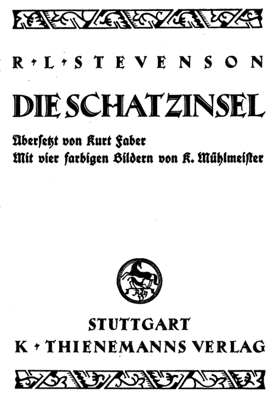

Die Schatzinsel
Robert Louis Stevenson
R. L. Stevenson
Übersetzt von
Kurt Faber
Mit vier farbigen Bildern von
K. Mühlmeister
K. Thienmanns Verlag
Stuttgart
Druck von J. F. Steinkopf in Stuttgart

Kapitel
Der alte Seebär im »Admiral Benbow«
 Der Gutsherr Trelawney, Doktor Livesey und die übrigen Herren haben mich gebeten, alles niederzuschreiben, was ich weiß von der Schatzinsel, alles, vom Anfang bis zu Ende, ohne irgend etwas zu verschweigen als die genaue Lage der Insel, und das auch nur deshalb, weil dort noch immer ein ungehobener Schatz zu finden ist. Und also ergreife ich die Feder im Jahre des Heils 17.. und gehe zurück in die Zeit, da mein Vater das Wirtshaus zum »Admiral Benbow« unterhielt, und der alte braune Seemann mit der Säbelnarbe sich zuerst unter unserem Dache einlogierte.
Der Gutsherr Trelawney, Doktor Livesey und die übrigen Herren haben mich gebeten, alles niederzuschreiben, was ich weiß von der Schatzinsel, alles, vom Anfang bis zu Ende, ohne irgend etwas zu verschweigen als die genaue Lage der Insel, und das auch nur deshalb, weil dort noch immer ein ungehobener Schatz zu finden ist. Und also ergreife ich die Feder im Jahre des Heils 17.. und gehe zurück in die Zeit, da mein Vater das Wirtshaus zum »Admiral Benbow« unterhielt, und der alte braune Seemann mit der Säbelnarbe sich zuerst unter unserem Dache einlogierte.
Wie heute sehe ich ihn noch vor mir, wie er zum Tor hereingestampft kam, zusammen mit seiner Seekiste, die hinter ihm hergefahren wurde in einem Schubkarren; ein großer, starker, schwerer, nußbrauner Mann mit einem geteerten Zopf, der über die Schulter seiner schmutzigen blauen Jacke herunterhing. Seine Hände waren rauh und runzelig, mit schwarzen, rissigen Nägeln, und die Säbelnarbe auf seiner Wange von einem schmutzigen und dennoch leuchtenden Weiß. Noch immer sehe ich ihn vor mir, wie er sich wild in dem Anwesen umschaute, wie er dabei leise vor sich hinpfiff und dann plötzlich mit hoher, sich überschlagender Stimme, der man anhören konnte, daß sie ihre Ausbildung am Gangspill erhalten hatte, das alte Seemannslied anstimmte, das ich nachher noch so oft zu hören bekam:
»Fünfzehn Mann auf der toten Kist,
Jo-ho-ho, und ne Buddel Rum!«
Dann klopfte er an die Tür mit einem Stock, der aussah wie eine Handspeiche, und rief mit rauher Stimme nach einem Glase Rum, als mein Vater auf der Bildfläche erschien. Dieses trank er langsam wie ein Kenner aus, derweilen er aufmerksam um sich schaute, nach den umgebenden Klippen und unserem Wirtshausschilde.
»Scheint mir ein praktischer Platz zu sein,« sagte er schließlich, »und ein hübsch gelegener Ausschank. Viel Gesellschaft hier, Maat?«
Mein Vater sagte ihm, daß es damit leider nicht sehr weit her sei.
»Um so besser,« meinte er, »dann ist es gerade der Platz für mich. – He da, Kamerad!« rief er zu dem Mann mit dem Schubkarren, »komm langseit und helfe mir herauf mit der Kiste.«
»Ich werde hier ein bißchen bleiben,« fuhr er fort. »Ich bin ein einfacher Mann; Rum und Speck und Eier ist alles, was ich brauche und dort vorne die Landzunge, auf der ich nach Schiffen Ausschau halten kann. – Wie ihr mich wohl nennen mögt! Könnt mich Kapitän nennen! Oh, ich seh schon, auf
was ihr aus seid – hier.« Mit diesen Worten warf er drei oder vier Geldstücke auf die Theke. »Sagt mir, wann ich mich da durchgearbeitet habe.«
Dabei schaute er wild und grimmig um sich, wie ein echter Kommandeur, und in der Tat, rauh wie er sprach und schlecht wie seine Kleidung war, so machte er doch keineswegs den Eindruck eines gewöhnlichen Matrosen. Eher konnte man in ihm einen Kapitän oder Steuermann vermuten, der gewohnt war zu befehlen und seinen Befehlen, wenn nötig, mit Schlägen Nachdruck zu verschaffen. Der Mann, der den Schubkarren führte, erzählte uns, daß er an diesem selben Morgen mit dem »Royal George« angekommen war, daß er sich gleich bei seiner Ankunft nach den Wirtshäusern längs der Küste erkundigt und das unsere gewählt habe, weil man es ihm wohl empfohlen hatte und vor allem auch deshalb, weil es ihm als besonders einsam gelegen geschildert wurde. Das war indes alles, was wir über unseren Gast erfahren konnten.
Gewöhnlich war er ein sehr stiller Mann. Während des Tages trieb er sich in der Nähe des Hauses umher, oder er saß auf den Klippen mit einem großen Fernrohr aus Messing. Abends saß er in einer Ecke der Wohnstube neben dem Feuer und trank sehr starken Rum mit wenig Wasser. Meist beliebte er nicht zu antworten, wenn man ihn etwas fragte, sondern fixierte einen nur mit einem plötzlichen, grimmigen Blick und blies dabei durch die Nase, wie ein Nebelhorn. Wir alle hatten bald gelernt, ihn in Ruhe zu lassen. An jedem Tage, wenn er von seinem Spaziergang zurückkam, fragte er, ob irgendein seefahrender Mann die Straße entlang gekommen wäre. Zuerst glaubten wir, daß er Sehnsucht habe nach seinesgleichen, aber bald fanden wir heraus, daß es im Gegenteil der Wunsch nach Vermeidung derartiger Begegnungen war, der ihn zu dieser Frage veranlaßte. Wenn wirklich einmal ein Seemann vorbeikam und im »Admiral Benbow« abstieg, so musterte er ihn genau hinter dem Türvorhang, ehe er in das Wohnzimmer kam, und man konnte darauf wetten, daß er dann stets so still sein würde wie eine Maus. Was mich anbelangt, so war mir das alles nicht so geheimnisvoll, denn in gewisser Hinsicht war ich ein Mitwisser seiner Befürchtungen. Schon am ersten Tage hatte er mich beiseite genommen und mir für den ersten jedes Monats ein silbernes Vierpennystück in Aussicht gestellt, wenn ich ihm nur versprechen wollte, mein »Wetterauge aufzuhalten für einen seefahrenden Mann mit einem Bein«, und ihm das sofort mitteilte, falls er in Sicht käme. Oft, wenn der Erste des Monats kam, und ich ihn an meinen Lohn erinnerte, blies er nur durch seine Nase und starrte mich zu Boden, wie das so seine Art war, aber noch vor Wochenende hatte er es sich jedesmal besser überlegt und brachte mir das Vierpennystück mit einer Wiederholung des Befehls zum scharfen Ausguck nach dem »seefahrenden Mann mit einem Bein«.
Es läßt sich denken, wie diese unheimliche Person mich in meinen Träumen verfolgte. In stürmischen Nächten, wenn der Wind an den vier Ecken des Hauses rüttelte und die Brandung vor den Felsen donnerte, sah ich sie in lausend Formen, mit tausend verschiedenen Gesichtsausdrücken. Einmal war das Bein am Knie, dann wieder an den Hüften abgeschnitten; dann wieder war sie eine unmögliche Kreatur, die niemals mehr als ein Bein gehabt hatte,
und das nur in der Mitte des Körpers. Es gehörte zu meinen schlimmsten Träumen, wenn er nach mir sprang und mich über Hecken und Gräben verfolgte, und alles in allem mußte ich meine vier Penny im Monat recht teuer bezahlen in Gestalt dieser abscheulichen Phantasien.
Dennoch hatte ich im allgemeinen weniger Angst vor dem Kapitän, als irgendeiner unserer Nachbarn. An manchen Abenden, wenn er mehr Rum und Wasser zu sich genommen hatte, als selbst sein alkoholgewohnter Kopf vertragen konnte, saß er viele Stunden lang am Tisch und gröhlte seine wilden, bösartigen Seemannslieder, ohne sich um jemand anderes zu kümmern.
Manchmal aber, wenn er gerade dazu aufgelegt war, bestellte er eine Runde für alle Mann an Bord und zwang die ganze zitternde Gesellschaft zum Anhören seiner Geschichten oder gar zum Anstimmen des Kehrreims zu seinem Singsang. Oft zitterte das Haus von dem »Jo-Ho und ne Buddel Rum«, in das alle Nachbarn in ihrer Todesangst mit einstimmten, wobei immer einer lauter sang wie der andere, um einem Rüffel zu entgehen. Denn in dieser Laune war er der tyrannischste Gesellschafter, den man sich denken konnte. Zuweilen schlug er mit der flachen Hand auf den Tisch und gebot Stillschweigen; zuweilen geriet er in eine Ekstase des Zornes über eine Frage, zuweilen auch nur deshalb, weil man keine stellte, und er daraus zu entnehmen glaubte, daß man seiner Erzählung nicht mit der nöligen Aufmerksamkeit folgte. Er gab auch keinem Erlaubnis zum Verlassen des Wirtshauses, bis er sich in den Schlaf getrunken hatte.
Mehr als dies alles erschreckte die Leute der Inhalt seiner Geschichten; schreckliche Geschichten vom Hängen, vom Überbordwerfen, vom Kielholen, von Stürmen auf hoher See, von den Tortugas und von wilden Taten und Plätzen im spanischen Meere. Nach dem, was er so erzählte, mußte er ein sehr wildes Leben geführt haben unter den bösartigsten Menschen, denen Gott je erlaubt hatte, auf der See zu fahren, und die Sprache, in der er diese Geschichten erzählte, war unseren einfachen Landleuten beinahe ebenso schrecklich, wie die Verbrechen, die er schilderte. Mein Vater pflegte zu sagen, daß er noch den Ruin des Wirtshauses herbeiführen würde; denn die Leute würden es bald müde werden, sich tyrannisieren, kommandieren und dann zitternd zu Bett schicken zu lassen. Ich dagegen glaube heute, daß seine Gegenwart für uns ein Vorteil war. Im Rückschauen kommt es mir so vor, als ob die Leute wohl zeitweilig erschreckt waren, daß es ihnen aber doch ein angenehmes Gruseln verursachte. Im stillen Landleben war es ein angenehmer Nervenkitzel. Ein Teil der jüngeren Leute gab sogar vor, ihn zu bewundern. Sie nannten ihn einen »rechten alten Seebär«, ein »wahres Salzpferd« und dergleichen, und behaupteten, daß es gerade diese Sorte von Leuten sei, die England zum Herrscher der Meere gemacht habe.
In einer Beziehung wenigstens war er drauf und dran, uns zu ruinieren; denn er blieb Woche um Woche und schließlich Monat um Monat, bis all das von ihm eingezahlte Geld längst aufgebraucht war, ohne daß mein Vater den Mut aufgebracht hätte, mehr von ihm zu verlangen. Wenn immer er
es auch nur erwähnte, fauchte der Kapitän durch seine Nase so laut, daß es sich wie ein Brüllen anhörte und starrte meinen armen Vater aus dem Zimmer hinaus. Ich selbst habe ihn gesehen, wie er händeringend herauskam nach solcher Szene, und ich glaube bestimmt, daß dieser Ärger und der Schrecken viel beigetragen haben zu seinem frühen und unglücklichen Tod.
Solange er in unserem Haus lebte, wechselte der Kapitän niemals seine Kleider, mit Ausnahme von einigen Strümpfen, die er bei einem Händler kaufte. Er schrieb niemals einen Brief und erhielt auch niemals einen; niemals sah man ihn mit jemand anderem sprechen als mit den Nachbarn, und mit diesen zumeist auch nur, wenn er betrunken war. Die große Seekiste hatte niemand jemals offen gesehen.
Nur einmal erlebte er einen ernsthaften Widerstand, und das war so gegen das Ende seines Aufenthalts, als mein armer Vater schon stark hinfällig war an seiner letzten Krankheit. Spät abends war Doktor Livesey noch einmal gekommen, um den Patienten zu sehen, hatte etwas zu Nacht gegessen bei meiner Mutter und ging hinunter ins Wohnzimmer, um noch eine Pfeife zu rauchen, bis das Pferd aus dem Dorfe gebracht wurde; denn wir hatten keine Stallung im alten »Benbow«. Ich trat mit ihm ein und konnte nicht umhin, den Unterschied zu bemerken zwischen dem netten, sauberen, schneeweiß gepuderten Doktor und dem rauhen Landvolke und vor allem mit jener schmutzigen schweren Vogelscheuche von einem Piraten, der schon wieder in halb betrunkenem Zustand mit den Ellenbogen auf dem Tische lungerte. Plötzlich begann er – das heißt der Kapitän – wieder mit seinem ewigen Singsang:
»Fünfzehn Mann auf der Totenkist',
Jo-ho und ne Buddel Rum;
Rum und der Teufel, die holten den Rest,
Jo-ho und ne Buddel Rum!«
Zuerst hatte ich immer vermutet, daß diese »Totenmannskiste« nichts anderes sein konnte, als das große Ding, das er oben in seinem Zimmer stehen hatte, und der Gedanke daran hatte sich oft in meine Träume geschlichen, zusammen mit dem seefahrenden Mann mit einem Bein. Inzwischen aber hatten wir uns alle längst schon abgewöhnt, irgendwelche Notiz davon zu nehmen Uns allen war es längst nicht mehr neu an jenem Abend, mit Ausnahme von Doktor Livesey, und bei diesem schien es keinen angenehmen Eindruck zu machen, nach dem zornigen Blick zu schließen, den er ihm zuwarf, ehe er weitersprach mit dem alten Gärtner Taylor über ein neues Heilmittel gegen Rheumatismus. Inzwischen war der Kapitän zusehends lebendiger geworden über seiner eigenen Musik, und schließlich schlug er mit seiner Hand auf den Tisch in der Art, die wir alle kannten. – »Ruhe!« Augenblicklich verstummten alle Gespräche, nur Doktor Livesey sprach weiter wie zuvor in seiner klaren, gütigen Art, derweilen er zwischen jedem zweiten Wort an seiner Pfeife zog. Der Kapitän starrte ihn eine Weile an, schlug noch einmal mit der Hand auf den Tisch, blickte noch härter und machte schließlich seinem Herzen Luft mit einem gemeinen Fluch: »Ruhe hier im Zwischendeck!«
»Beliebten Sie mit mir zu sprechen, Herr?« sagte der Doktor, und dann, als der Wüstling ihn mit einem anderen Fluch versicherte, daß dem so war, »ich kann Ihnen nur das sagen, mein Herr, daß, wenn Sie noch weiter Rum trinken in dieser Weise, wir alle bald frei sein werden von einem schmutzigen Halunken!«
Die Wut des alten Kerls war schrecklich. Mit einem Satze sprang er auf, zog sein Seemesser und balancierte es in seiner Hand, um den Doktor damit an die Wand zu spießen.
Der Doktor ließ sich jedoch dadurch nicht im geringsten aus seiner Ruhe bringen. Er sprach zu ihm wie zuvor über die Schulter hinweg in derselben ruhigen Tonart, aber eher etwas lauter, so daß das ganze Zimmer ihn hören konnte:
»Wenn Sie nicht augenblicklich das Messer wieder einstecken, verspreche ich Ihnen auf Ehrenwort, daß Sie gehängt werden zum nächsten Termin.«
Es folgte ein Gefecht der Blicke zwischen den beiden, aber der Kapitän gab bald nach, steckte seine Waffe ein und murrend und grollend wie ein geprügelter Hund setzte er sich wieder an seinen Platz.
»Und nun, Herr,« fuhr der Doktor fort, »seien Sie versichert, daß ich in Zukunft mein Augenmerk auf Sie haben werde, seitdem ich weiß, daß so ein Bursche in meinem Distrikte ist. Ich bin nicht nur ein Doktor, sondern auch Magistrat, und wenn ich in Zukunft noch einmal die leiseste Klage über Sie hören werde, und sei es auch nur über eine kleine Ungezogenheit wie heute abend, so werde ich Sie vorführen und ausweisen lassen. Lassen Sie das genug sein für heute.«
Gleich darauf kam Doktor Liveseys Pferd, und er ritt davon; aber der Kapitän blieb friedlich an jenem Abend und an noch vielen anderen.
Der »Schwarze Hund« kommt und verschwindet
Bald nach dem im vorhergehenden Kapitel geschilderten Vorgang geschah das erste der seltsamen Ereignisse, die uns endlich von dem Kapitän befreiten, wenn auch nicht von seinen Angelegenheiten, wie man bald sehen wird. Es war ein bitterkalter Winter mit langem, hartem Frost und schweren Stürmen, und es war bald nur allzu klar, daß mein armer Vater das Frühjahr nicht mehr erleben sollte. Täglich wurde er weniger, und meine Mutter und ich waren deshalb so sehr in der Wirtschaft beschäftigt, daß wir wenig Zeit hatten, uns um unseren unfreundlichen Gast zu kümmern.
Es war an einem Januarmorgen in aller Frühe, als noch der Rauhreif auf dem Lande lag. Die Wellen liefen verschlafen gegen die Steine an und die Gipfel der Hügel wurden eben erst von einem Strahle der aufgehenden Sonne getroffen. Der Kapitän war früher wie gewöhnlich aufgestanden und hinunter zum Strande gegangen mit großen Schritten, die den Säbel unter seinen breiten Rockschößen in schwingende Bewegung setzten. Das Fernrohr
hatte er wie gewöhnlich unter dem Arm und sein großer Hut saß tief im Nacken. Der Atem hing wie ein Rauch in seinem Kielwasser, und das Letzte, was ich von ihm hörte, ehe er hinter dem großen Felsen verschwand, war ein lautes Schnauben der Entrüstung, als ob er noch immer an Doktor Livesey dächte. Mutter war beim Vater, und ich war eben dabei, das Frühstück zu richten für den Kapitän, als leise die Tür geöffnet wurde und ein unbekannter Mann hereinkam, eine blasse, talgige Kreatur, der zwei Finger der linken Hand fehlten, und der, obwohl er einen Säbel trug, doch nicht wie ein Kämpfer ausschaute. Immer war ich auf dem Ausguck nach seefahrenden Leuten mit einem oder zwei Beinen, und ich erinnere mich, daß dieser mir etwas rätselhaft vorkam. Er sah nicht gerade aus wie ein Matrose, und doch war etwas Seemännisches in seinem Äußeren.
Ich fragte ihn nach seinem Begehren, und er bestellte ein Glas Rum. Als ich weggehen wollte, um es zu holen, setzte er sich an den Tisch und winkte mich heran. Ich blieb stehen mit der Serviette in der Hand.
»Komm hierher, Söhnchen,« sagte er, »komm näher heran!«
Ich trat einen Schritt näher.
»Ist hier der Tisch gedeckt für meinen Kameraden Bill?« fragte er mit lauernder Miene.
Ich antwortete ihm, daß ich seinen Kameraden Bill nicht kenne, und daß der Tisch hier gedeckt sei für eine hier im Hause wohnende Person, die man allgemein »Kapitän« tituliere.
»Freilich,« sagte er, »Kamerad Bill könnte sich schon Kapitän nennen lassen, warum nicht? Es sieht ihm ähnlich. Er hat eine Narbe auf der Wange und eine mächtig angenehme Art des Umgangs mit Leuten, zumal dann, wenn er betrunken ist. Nicht wahr? Das hat er wohl. – Nun, nehmen wir einmal an, daß euer Kapitän eine Narbe auf der Wange hat – und vielleicht, wenn es dir so paßt, daß diese Narbe auf der rechten Wange ist. Aha, siehst du wohl! Ich hab's dir ja gleich gesagt! Nun, ist mein Kamerad Bill hier im Hause?«
Ich sagte ihm, daß er ausgegangen wäre auf einem Spaziergang.
»In welcher Richtung, Söhnchen? Wohin ist er gegangen?«
Ich zeigte ihm die Richtung nach dem Felsen und sagte ihm, wann der Kapitän ungefähr wieder zurückkommen würde. »Ah,« sagte der andere, »das wird so gut wie Rum sein für Kamerad Bill.«
Der Gesichtsausdruck, mit dem er diese Worte begleitete, war nichts weniger als angenehm, und ich konnte nicht umhin, zu glauben, daß der Fremde sich in einem Irrtum befand, selbst wenn er das meinte, was er sagte. Aber dann, so sagte ich mir, waren es Geschäfte, die mich nichts angingen. Der Fremde blieb im Zimmer und schielte nur zuweilen nach der Türöffnung, wie eine Katze nach der Maus. Einmal, als ich selbst hinausging auf die Straße, rief er mich zurück mit einem schauerlichen Fluch, jedoch verfiel er sofort wieder in seine vorhergehende, herablassende Manier, klopfte mir auf die Schulter, sagte mir, daß ich ein guter Junge sei, und daß er einen Narren an mir gefressen hätte. »Ich habe auch einen Sohn,« meinte er, »ganz so wie du, und er ist der
ganze Stolz meines Herzens. Aber die große Sache für Jungens ist Disziplin, mein Söhnchen – Disziplin! Nun, wenn du mit Bill gesegelt hättest, so hättest du nicht gewagt zu warten, bis man zweimal mit dir spricht – du nicht. Das war nicht Bills Manier, und keines von denen, die unter ihm gefahren haben. Doch da kommt ja wirklich mein Kamerad Bill mit einem Fernrohr unter dem Arm, Gott segne sein altes Herz! Du und ich, wir beide, wollen uns in das Wohnzimmer zurückziehen und hinter der Tür verstecken. Das wird eine hübsche Überraschung geben für Bill – Gott segne seine Seele, ich sag's noch einmal.«
Mit diesen Worten zog mich der Fremde hinter sich her in das Wohnzimmer, wo wir beide uns hinter der offenen Tür versteckten. Man kann sich vorstellen, welche Angst ich ausstand, zumal der Fremde gleichfalls keineswegs frei davon schien. Er machte den Griff seines Säbels klar zum Gefecht und schluckte dabei ständig, als ob er etwas im Halse stecken hätte.
Endlich kam der Kapitän herein, schlug die Tür hinter sich zu, ohne sich einmal umzusehen, und marschierte geradewegs nach dem Frühstückstisch.
»Bill,« sagte der Fremde mit einer Stimme, der man wohl anhörte, daß sie sich den Anschein der Festigkeit gab.
Der Kapitän fuhr herum auf seinem Absatz und starrte uns an mit einem Gesicht, aus dem die braune Farbe gewichen war. Sogar seine Nase war blau, und alles in allem hatte er das Aussehen eines Menschen, der einen Geist, den Teufel oder sonst noch etwas Schlimmeres gesehen hatte. So sehr ich ihn auch haßte, in diesem Augenblick tat er mir leid mit seinem Leichengesichte, das plötzlich so alt und krank ausschaute.
»Komm her, Bill, du kennst mich; sicherlich kennst du einen alten Schiffskameraden,« sagte der Fremde. Der Kapitän schnappte nach Luft. »Schwarzer Hund!« rief er aus.
»Und wer sonst?« antwortete der andere, »der ›Schwarze Hund‹ heute wie immer, kommt her, um seinen alten Schiffskameraden Bill im ›Admiral Benbow‹ zu sehen. Ah, Bill, Bill, wir haben etwas erlebt in unseren Tagen, seitdem ich diese zwei Stumpen da verloren habe.« Dabei hielt er seine verstümmelte Hand in die Höhe.
»Nun, schau her,« sagte der Kapitän! »Ihr habt mich aufgespürt. Hier bin ich; gut, heraus mit der Sprache: Was wollt Ihr?«
»Das sieht dir ähnlich, Bill! Da bist du wieder ganz wie du immer warst,« antwortete der Schwarze Hund, »du hast recht, Billy. Ich werde mir ein Glas Rum bringen lassen von diesem lieben Kind, für das ich eine so große Vorliebe habe, und wenn es dir recht ist, so reden wir ein wenig von Geschäften, wie gute alte Schiffskameraden.«
Ich ging fort, um ihm das Gewünschte zu bringen, und als ich zurückkam, saßen sie bereits einander gegenüber an dem Tisch – der Schwarze Hund nahe bei der Tür, seitwärts auf einer Ecke des Stuhles, so daß er ein Auge auf seinen alten Schiffskameraden richten konnte, während er das andere freihielt zur Beobachtung der Tür im Hinblick auf einen etwa nötig werdenden beschleunigten Rückzug.
Er schickte mich fort und befahl mir, die Tür offen zu lassen. »Hier wird nicht durch die Schlüssellöcher geschaut, mein Söhnchen,« sagte er. Ich ließ sie allein und zog mich zurück hinter den Schanktisch.
Lange hörte ich sie im Flüsterton miteinander sprechen, und ich konnte kein Wort ihrer Unterhaltung verstehen, obwohl ich mir die größte Mühe gab. Mit der Zeit aber wurde die Unterhaltung lauter, so daß man gelegentlich was verstehen konnte, meistens Flüche des Kapitäns.
»Nein, nein, nein! Es ist mein letztes Wort! – Wenn's ans Hängen geht, dann alle, sage ich!«
Plötzlich erfolgte eine gewaltige Explosion von Flüchen und anderen Geräuschen. Tisch und Stühle fielen wild übereinander. Es folgte ein Gegeneinanderschlagen von Stahl und ein gellender Aufschrei. Im nächsten Augenblick sah ich den Schwarzen Hund in voller Flucht und den Kapitän in wilder Verfolgung, beide mit gezogenem Entermesser. Der Schwarze Hund mit einer stark blutenden Wunde an der Schulter. Gerade in der Tür holte der Kapitän aus zu einem mächtigen Schlage, der seinen Gegner sicherlich entzweigespalten hätte, wenn er nicht aufgehalten worden wäre durch das Wirthausschild des »Admiral Benbow«. Noch heute kann man die Kerbe an der unteren Seite des Schildes sehen.
Es war der letzte Schlag in der Schlacht. Sobald er einmal außer Reichweite war, rannte der Schwarze Hund trotz seiner Wunde mit bemerkenswerter Schnelligkeit und war bald um den Hügel herum verschwunden. Der Kapitän starrte noch immer verwirrt auf das Wirtshausschild. Dann fuhr er mehrmals mit der Hand über die Augen und kehrte schließlich ins Haus zurück.
»Jim,« sagte er, »Rum!«
»Sind Sie verletzt?« rief ich.
»Rum,« wiederholte er. »Ich muß gleich weg von hier. Rum! Rum!«
Ich rannte fort, um ihn zu holen, da ich aber selbst nervös geworden war von all dem Vorgefallenen, zerbrach ich ein Glas, konnte nicht gleich den Hahnen finden, und während ich noch so herumfingerte, hörte ich plötzlich einen schweren Fall in der Wirtsstube, und als ich hereinkam, sah ich den Kapitän langwegs auf dem Boden liegen. Meine Mutter, die auf den Lärm aufmerksam geworden war, kam herunter, und wir beide bemühten uns, des Kapitäns Kopf aufzurichten. Er atmete laut und schwer, aber seine Augen waren geschlossen und auf seinem Gesicht lag eine schreckliche Farbe.
»Gott, o Gott!« rief meine Mutter. »Welche Schande für das Haus! Und dein armer Vater krank!«
Inzwischen wußten wir nicht, was wir mit dem Kapitän anfangen sollten und glaubten nicht anders, als daß er eine tödliche Wunde erhalten hätte in dem Kampf mit dem Fremden. Ich holte den Rum und versuchte ihn in seine Gurgel einzuflößen, aber seine Zähne waren fest aufeinander gepreßt und seine Kiefer waren hart wie Eisen. Es war eine große Erleichterung für uns, als die Tür aufging und Doktor Livesey hereinkam.
»Ist er verwundet?« riefen wir beide wie aus einem Munde.
»Verwundet? Keine Spur!« sagte der Doktor. »Nicht mehr als einer von uns. Der Mann hat einen Schlaganfall bekommen, wie ich ihm schon längst prophezeite. Tun Sie mir den Gefallen, Frau Hawkins, und gehen Sie hinauf zu Ihrem Manne, und wenn möglich sagen Sie ihm nichts von diesen Geschichten. Ich selbst muß noch eine Weile hier bleiben und mein Möglichstes tun, um das wertlose Leben dieses Burschen zu retten. Jim wird mir eine Schüssel bringen.«
Als ich wieder kam mit der Schüssel, hatte der Doktor schon den Hemdärmel des Kapitäns ausgeschnitten und man konnte dessen braune muskulöse Arme sehen, die an mehreren Stellen mit allerlei merkwürdigen Figuren tätowiert waren. »Prosit!« »Ein guter Wind«, und »Billy Bones Freude«. Das war alles hübsch und klar eingraviert auf dem Unterarm. Auf der Höhe der Schulter sah man eine mit viel Liebe ausgeführte Zeichnung eines Galgens mit einem daranhängenden Mann.
»Prophetisch,« sagte der Doktor, während er mit seiner Nadel die Ader öffnete. Er hatte ihm bereits viel Blut abgezapft, ehe er die Augen öffnete und unsicher um sich schaute. Den Doktor begrüßte er mit einem nicht mißzuverstehenden Stirnrunzeln, dann bemerkte er mich mit einem Blick der Erleichterung. Plötzlich wechselte er die Farbe und versuchte sich aufzurichten.
»Wo ist der Schwarze Hund?«
»Hier gibt's keine schwarzen Hunde, mit Ausnahme von dem, den Sie auf Ihrem Rücken haben,« sagte der Doktor. »Sie haben zu viel getrunken. Schlaganfall, ganz wie ich es Ihnen schon voraussagte, und ich habe Sie soeben ganz gegen meinen eigenen Willen mit dem Kopf zuerst aus dem Grabe gezogen.«
Mit vereinten Kräften schafften wir ihn die Treppe hinauf und legten ihn auf sein Bett, wo sein Kopf alsbald zurück auf sein Kissen fiel wie bei einem, der einer Ohnmacht nahe ist.
»Merken Sie sich nun das,« sagte der Doktor, »ich wasche meine Hände in Unschuld für alle künftigen Fälle – der Name Rum bedeutet Tod für Sie.«
Dann nahm er mich beim Arm und wir gingen beide zu meinem Vater.
»Es ist nichts,« sagte er, sobald die Türe geschlossen war. »Ich habe ihm Blut genug abgezapft, um ihn eine Weile still zu machen. Eine Woche wird er wohl schon so liegen müssen. Es ist das beste für ihn und für euch; noch einen solchen Schlag könnte er aber nicht überleben.«
Der Schwarze Punkt
Um die Mittagsstunde stand ich mit Medizin und einigen kühlenden Getränken an der Tür des Kapitänzimmers. Er lag noch ganz wie wir ihn verlassen hatten und er schien schwach und aufgeregt.
»Jim,« sagte er mit matter Stimme, »du bist der einzige hier, der etwas taugt und du weißt, daß ich es immer gut mit dir gemeint habe. Da ist kein Monat vergangen, an dem du nicht dein silbernes Vierpennystück von mir bekommen hast. Nicht wahr? – Und nun hör' mir zu, Kamerad, ich bin
ziemlich krank und verlassen von allen. Und Jim, du bringst mir einen Schluck Rum. Nicht wahr, Kameradchen?«
»Der Doktor –« begann ich.
Da fing er wieder an den Doktor zu verfluchen mit schwacher aber herzhafter Stimme. »Doktoren sind alle Waschlappen, und dieser Doktor hier, nun, was weiß der von seefahrenden Menschen? Ich bin in meinem Leben schon an Plätzen gewesen, die heiß waren wie Pech, wo die Kameraden um mich herum gefallen sind am gelben Fieber wie die Fliegen, an Plätzen, wo das Land sich aufgebäumt hat wie die See im Erdbeben – was wissen Doktoren von solchen Ländern? – und ich habe dort von Rum gelebt, kann ich dir sagen. Er war mir Essen und Trinken und Mann und Frau, und wenn ich meinen Rum nicht haben kann, so bin ich eine arme alte Hulk an einem Leeufer – mein Blut wird über dich kommen, Jim, über dich und über diesen Waschlappen von einem Doktor. – Sieh her, Jim, wie meine Finger zittern,« fuhr er fort in bittendem Tone. »Ich kann sie nicht still halten, nicht ich! Während des ganzen Tages habe ich noch keinen Tropfen bekommen. Der Doktor ist ein Narr, sage ich dir! Wenn ich keinen Rum bekomme, Jim, werde ich Gespenster sehen. Einige sind mir schon erschienen. Ich habe den alten Flint dort in der Ecke hinter dir gesehen, so klar wie gedruckt, und wenn ich Gespenster sehe – nun ja, ich bin ein Mann, der ein wildes Leben geführt hat, und es kommt mir auf eine Mordtat mehr oder weniger gewiß nicht an. Euer Doktor hat mir ja selbst gesagt, daß ein Glas mir nicht schaden kann. – Ein goldnes Pfund will ich dir geben für einen Schluck.«
Da er sich immer mehr in die Aufregung hereinredete, hatte ich Befürchtungen wegen meines Vaters, der gerade an jenem Tage Ruhe nötig hatte. Ich brachte ihm ein Glas Rum, das er gierig und mit einem Zuge austrank.
»Ah,« sagte er, »jetzt ist's schon besser. Und nun, Kameradchen, hat euch der Doktor verraten, wie lange ich noch liegen muß in dieser alten Koje?«
»Mindestens eine Woche,« sagte ich.
»Eine Woche? Donnerwetter! Das darf nicht sein. Sie werden mir den Schwarzen Punkt überreichen. Die Burschen sind gerade dabei, mir den Wind aus den Segeln zu nehmen; traurige Vagabunden, die das nicht halten konnten, was ihr Teil war, und die nun auch noch das der anderen wegschnappen möchten. Ist das ein seemännisches Benehmen, möchte ich wohl wissen? Ich bin ein sparsamer Mann. Niemals habe ich mein gutes Geld verschwendet oder verloren und werde sie auch diesmal wieder aufs Glatteis führen. Ich fürchte sie nicht. Ich werde noch ein Reff aus meinen Segeln schütteln und vor ihnen davonlaufen.«
Bei diesen Worten hatte er sich mit großer Schwierigkeit vom Bette erhoben und packte mich mit einem Griff, der mich beinahe laut aufschreien ließ vor Schmerz. Grimmig und lebendig wie seine Worte waren, so standen sie doch in traurigem Gegensatz zu der schwachen Stimme, mit der sie geäußert wurden. »Der Doktor hat mich umgebracht,« murmelte er, »meine Ohren singen, leg mich zurück.« Noch ehe ich ihm dabei helfen konnte, sank er zurück auf das Kissen, wo er eine Weile still lag.
»Jim,« sagte er schließlich, »hast du heute den Seemann noch einmal gesehen?« – »Den Schwarzen Hund?«
»Ah! Der Schwarze Hund. Er ist schlimm genug, aber es sind Schlimmere, die ihn mir auf die Spur hetzen. Nun, höre mir zu: wenn ich nirgendwie fortkann und sie mir den Schwarzen Punkt überreichen – 's ist meine alte Seekiste, hinter der sie her sind – so wirst du an Bord eines Pferdes gehen – das kannst du doch? Also, du wirst an Bord eines Pferdes gehen und dich auf den Weg machen nach – gut, ja, ich will! – zu dem einfältigen Waschlappen von einem Doktor und wirst ihm sagen, daß er alle Mann an Deck rufe – Magistrate und solche Leute –, daß er sie an Bord des »Admiral Benbow« bringe und dort die ganze alte Mannschaft des Kapitän Flint, Mann und Junge, oder das was davon übrig geblieben ist, gefangen nehme. Ich – ich selbst! – war erster Offizier im Schiffe des alten Flint und ich bin der einzige, der den Platz weiß. Er verriet ihn mir in Savannah, als er im Sterben lag, so ungefähr wie ich hier. Aber versprich mir, daß du kein Wort von alledem verraten wirst, bis sie mir den Schwarzen Punkt überreicht haben, oder bis du den Schwarzen Hund wieder siehst, oder einen Seemann mit einem Bein. – Jim – diesen vor allen!«
»Aber was ist denn der Schwarze Punkt, Kapitän?«
»'s ist eine Aufforderung, Kamerad. Du wirst es schon noch sehen. Aber halte dein Wetterauge offen, Jim, und ich werde ehrlich mit dir teilen, auf Ehrenwort will ich das – «
Noch eine Weile sprach er so weiter mit immer schwächerer Stimme, bis ich ihm die Medizin gab, die er, folgsam wie ein Kind, zu sich nahm mit den Worten: »Wenn je ein Seemann Medizin brauchte, so bin ich es.« Schließlich fiel er in einen schweren Schlaf. Noch heute weiß ich nicht, was ich getan hätte, wenn alles gut abgelaufen wäre. Vielleicht hätte ich die Sache dem Doktor erzählt, denn ich hatte eine tödliche Angst davor, daß der Kapitän doch noch sein Bekenntnis bereuen und mich beiseite schaffen könne. Wie die Dinge aber lagen, starb mein Vater ganz plötzlich an jenem Abend, so daß darüber alle anderen Angelegenheiten in Vergessenheit gerieten. Unsere natürliche Trauer, die Besuche der Nachbarn, die Veranstaltung des Begräbnisses und daneben die laufende Arbeit in der Wirtschaft hielten mich derart in Atem, daß ich keine Zeit hatte an den Kapitän zu denken oder gar mich vor ihm zu fürchten. In der Tat kam er denn auch schon am nächsten Morgen wieder herunter zu seiner Mahlzeit und aß wenig, trank aber, wie ich fürchtete, mehr als sein gewöhnliches Quantum Rum, denn er ging selbst nach dem Schanktisch und holte, was ihm gefiel, wobei er durch Fauchen und Stirnrunzeln jeden verscheuchte, der ihm in die Quere kam.
So gingen die Dinge weiter bis zum Tag nach dem Begräbnis, als ich an einem bitterkalten, nebeligen Nachmittag etwa um 3 Uhr einen Augenblick vor der Tür stand mit einem Kopf voll trauriger Gedanken und jemand langsam die Straße entlang kommen sah. Offenbar war er blind, denn er tappte vor sich her mit einem Stock und trug ein großes grünes Schild über Augen und Nase. Er war bucklig von Alter und Schwäche und trug einen alten, schlotternden
Seemantel mit einer Kaputze, die ihn vollends wie eine Mißgeburt aussehen machte. Nie in meinem Leben hatte ich eine schrecklichere Gestalt gesehen. Einen Augenblick stand er still vor dem Wirtshaus und fing an in die Luft hinein zu reden in einem sonderbaren Singsang:
»Ist hier ein gütiger Freund, der einem armen, blinden Mann, der sein kostbares Augenlicht verloren hat bei der glorreichen Verteidigung seines englischen Vaterlandes, im Dienste des Königs – Gott segne ihn! – sagen könnte, in welchem Teile dieses Landes er sich eben befindet?«
»Sie befinden sich beim ›Admiral Benbow‹, Black Hillbucht, mein guter Mann,« sagte ich.
»Ich höre eine Stimme,« sagte er – »eine junge Stimme. Gib mir deine Hand, mein guter junger Freund und führe mich hinein.«
Ich hielt ihm meine Hand hin, die die schreckliche, glattzüngige, augenlose Kreatur sogleich wie in einem Schraubstock packte, so daß ich eine unwillkürliche Bewegung machte, um sie seinem Griffe zu entziehen. Aber der blinde Mann zog mich dicht heran mit einer einzigen Bewegung seines Armes.
»Führe mich hinein zum Kapitän!« befahl er.
»Herr,« sagte ich, »auf Ehrenwort, ich wage es nicht!«
»Oh,« fuhr er höhnisch fort, »so steht die Sache! Führ' mich sofort hinein oder ich breche deinen Arm.« Dabei preßte er ihn, daß ich laut aufschreien mußte.
»Herr,« sagte ich, »ich fürchtete um euretwillen. Der Kapitän ist nicht mehr so wie er war. Er sitzt am Tisch mit einem Säbel. Ein anderer Herr – «
»Vorwärts! keine Worte!« unterbrach er mich mit einer Stimme, wie ich sie so rauh und kalt und häßlich noch nie gehört hatte, und die mich mehr einschüchterte, als selbst der Schmerz im Arm. Ich folgte ihm sogleich, und wir gingen geradewegs in das Zimmer, wo unser kranker alter Seeräuber schon wieder halbbeduselt hinter einem Glase Rum saß. Der blinde Mann hielt sich dicht neben mir. Noch immer umklammerte er mein Handgelenk mit seiner eisernen Faust, während ich unter seinem Gewicht fast zusammenbrach. »Führe mich geradewegs zu ihm, und wenn ich in Sicht bin, so wirst du rufen: ›Hier kommt Euer Freund, Bill,‹ wenn nicht, so werde ich so machen!« und damit verdrehte er mein Handgelenk auf eine Weise, die mir fast die Besinnung raubte. So groß war meine Furcht vor dem blinden Bettler, daß ihm gegenüber sogar der Kapitän seine Schrecken verlor, und als ich die Tür öffnete, rief ich gewissenhaft, aber mit zitternder Stimme die Worte aus, die er mir befohlen hatte.
Der Kapitän schaute auf, und mit dem ersten Blick war aller Rum von ihm gegangen. In seinem Gesichtsausdruck spiegelte sich weniger der Schrecken als eine tödliche Krankheit. Vergebens suchte er aufzustehen.
»Bleib nur sitzen wo du bist, Bill,« sagte der Bettler. »Wenn ich auch nichts sehen kann, so höre ich doch jeden Finger, der sich bewegt. Geschäft ist Geschäft. Reden wir von Geschäften! Zeig' deine linke Hand! Nimm diese linke Hand beim Gelenk, Junge, und lege sie neben meine rechte.«
Wir beide gehorchten ihm gewissenhaft, und ich sah, wie er etwas aus seiner Hand in die des Kapitäns gleiten ließ.
»So, das wäre gemacht,« sagte der Blinde, während er mich plötzlich losließ und mit unglaublicher Geschwindigkeit aus dem Zimmer hinaus in die Straße hüpfte, wo ich noch immer wie versteinert stand, während man noch das Tapp, Tapp seines Stockes in der Ferne hörte.
Es dauerte eine Weile, ehe der Kapitän und ich selbst wieder ganz zum Bewußtsein der Lage kamen. Der Kapitän öffnete die Hand und schaute scharf auf den Zettel. »Zehn Uhr!« rief er. »Noch sechs Stunden. Das genügt. Wir werden doch noch mit ihnen fertig werden!«
Mit einem Satz sprang er auf die Füße, aber zugleich begann er zu taumeln und fuhr mit der Hand nach der Gurgel. Einen Augenblick schwankte die mächtige Gestalt hin und her und fiel dann dumpf auf den Boden, mit dem Gesicht nach unten.
Ich rief nach meiner Mutter und rannte herbei, um ihm zu helfen. Aber alle Eile war umsonst. Der Kapitän war das Opfer eines neuen Schlaganfalls geworden. Ich schaute ihn an, und ich weiß es nicht wie es kam, mir selbst kommt es heute sonderbar vor, aber sobald ich sah, daß er tot war, brach ich in eine Flut von Tränen aus. Es war der zweite Todesfall, den ich erleben mußte in meinem jungen Leben, und die Trauer über den ersten war noch frisch.
Die Seekiste
Natürlich versäumte ich nun nicht, meiner Mutter alles zu erzählen, was ich wußte und was ich ihr eigentlich schon längst hätte erzählen sollen. Denn so wie die Dinge lagen, befanden wir uns in einer schwierigen und gefährlichen Lage. Etwas von dem Gelde des Mannes – wenn er überhaupt noch welches übrig hatte – war er uns schuldig, aber es war nicht zu erwarten, daß seine Schiffskameraden, vor allen die zwei uns bekannten Exemplare, der Schwarze Hund und der Bettler, sich freiwillig dazu bereit finden würden, etwas herzugeben von ihrer Beute als Bezahlung der Schulden eines Verstorbenen. Den Gedanken, zu Doktor Livesey zu reisen, gab ich gleich wieder auf, da ich meine Mutter nicht alleinlassen wollte in dieser gefährlichen Lage. Für uns beide war es unmöglich, noch länger in diesem Hause zu bleiben. Das Fallen der Kohlen im Küchenherde, das bloße Ticken der Wanduhr genügte, um uns erschreckt auffahren zu lasten. Die ganze Nachbarschaft erschien uns lebendig mit herannahenden Fußtritten. Der tote Kapitän in der Wirtsstube und der Gedanke an den abscheulichen kleinen Bettler, der voraussichtlich gleich wieder kommen sollte, war genug, um einen vor Schrecken aus der Haut fahren zu lasten. Etwas mußte sogleich getan werden, und es schien uns am geratensten, Hilfe zu suchen in dem benachbarten Dorfe. Gesagt, getan, rannten wir so, wie wir waren, hinaus in den frostigen Nebel der sinkenden Nacht.
Das Dorf, obwohl man es von uns aus nicht sehen konnte, war nur mehrere hundert Meter entfernt an der anderen Seite der Bucht und – was uns besonders günstig erschien. in der entgegengesetzten Richtung, von wo
der blinde Mann gekommen und wohin er aller Voraussicht nach wieder verschwunden war. Obwohl wir zuweilen in unserem Laufe anhielten, um zu lauschen, brauchten wir doch nur wenige Minuten zum Zurücklegen des Weges. Jedenfalls bemerkten wir nichts Ungewöhnliches – nichts als das leise Waschen und Plätschern des Wassers am Strande und das Kreischen der Krähen im Walde. Als wir im Dorfe anlangten, schienen auch die Lichter, und es wird mir ewig in Erinnerung bleiben, wie aufmunternd auf uns der gelbe Schein in Türen und Fenstern wirkte. Das war indessen die einzige Hilfe, die wir hier erwarten konnten. Wie Männer sich so benehmen können, ohne sich zu schämen, ist mir nicht verständlich; Tatsache ist jedoch, daß niemand sich dazu bereit fand, mit uns zurückzukehren zum ›Admiral Benbow‹. Je mehr wir ihnen von unserer Not erzählten, je mehr verkrochen sie sich in den Schutz ihrer Häuser. Der Name des Kapitäns Flint, der mir völlig unbekannt war, hatte bei ihnen einen besonderen Klang.
Man sagt, daß die Feigheit ansteckend wirkt, aber andererseits vermag nichts so sehr den Mut zu stärken als eine gute Rede, und deshalb machte ihnen meine Mutter den Standpunkt klar, nachdem jeder seine Meinung geäußert hatte. Keinen Pfennig wollte sie verlieren von dem Gelde ihres vaterlosen Jungen. »Wenn niemand von euch den Mut dazu aufbringt,« sagte sie energisch, »so wird es Jim und mir nicht daran fehlen. Gleich gehen wir dorthin zurück, wo wir hergekommen sind, und ich glaube, wir werden uns für nichts zu bedanken haben bei euch dicken, plumpen, hasenfüßigen Männern. Wir werden die Kiste öffnen und wenn es uns unser Leben kostet. Und ich danke Ihnen für den Sack, Frau Croßley, in dem wir das uns zustehende Geld bringen werden.«
Eine halbe Stunde später standen wir wieder vor dem »Admiral Benbow«. Ich schob den Riegel zurück, und wir standen einen Augenblick atemlos im Dunkeln. Dann holte meine Mutter eine Kerze, und wir beide gingen Hand in Hand in das Zimmer, wo der Tote noch immer mit offenen Augen und mit einem ausgestreckten Arme auf dem Rücken lag.
»Mach den Laden zu, Jim,« flüsterte meine Mutter; »vielleicht beobachten sie uns von draußen. Und nun müssen wir uns den Schlüssel holen von dem Ding da. Wer aber soll es bloß anrühren, möchte ich wissen?«
Ich kniete nieder neben seiner Hand, in der ein rundes Stück Papier lag, das auf der einen Seite mit einem schwarzen Flecken versehen war, zweifellos der »Schwarze Punkt«. Ich hob es auf und sah, was auf der anderen Seite in schöner, klarer Schrift geschrieben stand: »Du hast bis zehn Uhr nachts.«
»Er hatte bis zehn Uhr, Mutter,« sagte ich, und gerade, indem ich es sagte, begann unsere alte Uhr zu schlagen. Der plötzliche Lärm erschreckte uns namenlos, aber dennoch war es gute Nachricht. Es war erst sechs Uhr.
»Nun, Jim,« sagte sie, »der Schlüssel.«
Ich durchsuchte alle seine Taschen, fand aber weiter nichts als ein paar kleine Münzen, einen Fingerhut, eine Segelnadel mit einem Faden, ein halbabgebissenes Stück Kautabak, ein Messer mit einem krummen Stiele, einen Taschenkompaß und eine Zündschachtel.
»Vielleicht hängt er um seinen Hals,« mutmaßte die Mutter.
Ich überwand meinen starken Widerwillen, riß das Hemd am Halse auf und fand auch wirklich den Schlüssel, der an einem teerigen Bändel um den Hals hing. Voll Hoffnung eilten wir nun hinauf in sein kleines Zimmer, wo er so lange geschlafen hatte, und wo die Kiste seit seiner Ankunft stand.
Äußerlich war es eine ganz gewöhnliche, viel gebrauchte, an den Ecken stark verstoßene Seekiste mit dem Buchstaben »B«, der mit einem glühenden Eisen in den Deckel eingebrannt war.
»Gib mir den Schlüssel,« sagte meine Mutter; und obwohl das Schloß sehr steif und rostig war, hatte sie es doch im Augenblick geöffnet. Ein starker Teer- und Tabakgeruch kam aus dem Innern, aber nichts war zu sehen als ein sehr guter, sorgfältig gebürsteter und gefalteter Anzug, von dem meine Mutter sagte, daß er niemals getragen worden sei. Unter diesem Anzug lag der merkwürdigste Kram – ein Quadrant, eine Blechtasse, mehrere Stücke Tabak, zwei sehr hübsche Pistolen, ein Silberbarren, eine alte spanische Uhr, ein Messingkompaß und fünf oder sechs recht sonderbare westindische Muscheln. Seither habe ich oft darüber nachgedacht, was ihn wohl dazu veranlaßt haben mußte, diese Muscheln mit sich zu führen durch sein unstetes, gehetztes und schuldiges Leben.
Außer diesen Dingen fanden wir indes vorerst keinen Wertgegenstand, der uns von Nutzen gewesen wäre. Fast auf dem Boden der Kiste lag ein Ölmantel, der ganz weiß war von Seesalz. Mutter zog ihn ungeduldig hinweg, und da lagen vor uns die letzten Dinge in der Kiste: ein in Ölzeug eingewickeltes Bündel, das Papiere zu enthalten schien, und endlich ein Beutel aus Segeltuch, in dem es bei jeder Berührung wie von Goldstücken klimperte.
»Ich werde diesen Schurken zeigen, daß ich eine ehrliche Frau bin,« sagte meine Mutter. »Ich nehme, was man mir schuldig ist, und nicht einen Pfennig mehr. Halte Frau Croßleys Sack!« Damit begann sie die Geldstücke zu zählen. Es war ein langes, schwieriges Geschäft, denn die Münzen waren von allen Größen und aller Herren Ländern – Dublonen, Louis'dors, Guineen, Achtguldenstücke, und was weiß ich, alles durcheinander wie Kraut und Rüben. Leider waren die Guineen die seltensten, und gerade diese waren es, mit denen meine Mutter umzugehen verstand.
Als wir ungefähr halbwegs fertig waren mit dem Geschäfte, legte ich plötzlich meine Hand auf ihren Arm; denn in der stillen, frostigen Nacht hatte ich einen Laut gehört, der mein Herz stillstehen ließ – das Tapp, Tapp! des blinden Mannes Stockes auf der gefrorenen Straße. Es kam näher und näher, während wir atemlos warteten. Dann klopfte es scharf an die innere Tür, dann hörten wir, wie jemand auf die Türklinke drückte, wie er am Riegel schüttelte, dann wieder nichts von innen und außen. Dann fing das Tapp, Tapp! wieder an und verlor sich langsam in der Ferne zu unserer unbeschreiblichen Erleichterung. »Mutter,« sagte ich, »nimm alles und geh!«
Aber meine Mutter war, trotz ihrer Angst, nicht zu bewegen, mehr zu nehmen als sie beanspruchen durfte und eigensinnig darauf bedacht, mit nicht weniger fortzugehen. Es sei noch nicht sieben Uhr, sagte sie, sie kenne ihr Recht
und werde es zu wahren wissen. Aber während sie noch mit mir darüber stritt, hörte man weit draußen auf dem Hügel ein leises Pfeifen. Das war mehr als genug für uns beide. »Ich nehm' was ich habe,« sagte sie, indem sie aufsprang.
»Und ich nehme das zum Ausgleich der Rechnung,« sagte ich und ergriff den Beutel aus Segeltuch.
Im nächsten Augenblick eilten wir die Treppe hinunter und ließen die Kerze auf der leeren Kiste. Nicht einen Augenblick zu früh waren wir fortgekommen. Der Nebel begann sich schnell zu verziehen; der Mond schien schon ganz hell über den Hügel, und nur der Boden des Tales und die Gegend des Wirtshauses waren gerade noch genug verschleiert, um unsere Flucht zu verbergen. Schon halbwegs zum Dorfe mußten wir ins volle Mondlicht kommen. Damit noch nicht genug, hörte man deutlich den Laut mehrerer Fußtritte, und im Rückschauen sahen wir an einem hin und her pendelnden Licht, daß einer der Ankömmlinge eine Laterne trug.
»O Gott,« sagte plötzlich meine Mutter, »nimm das Geld und lauf. Ich kann nicht mehr.«
Schon dachte ich, daß das unser Ende sein würde. Ich verwünschte die Feigheit der Nachbarn, ich schalt in Gedanken meine arme Mutter für ihre Ehrlichkeit und ihre Gier, für ihre vorhergehende Tollkühnheit und ihre jetzige Schwäche. Glücklicherweise waren wir gerade am Rande der kleinen Brücke, und ich half ihr, schwach wie sie war, auf den Rand der Uferbank, wo sie auch richtig auf meinen Schultern zusammenbrach mit einem Seufzer. Wie ich es fertig brachte, weiß ich nicht, aber ich fürchte, es war rauh dabei zugegangen. Ich zog sie an der Böschung hinunter, ein Stück Wegs unter den Brückenbogen. Weiter konnte ich sie nicht schaffen, denn die Brücke war zu niedrig. So waren wir gezwungen hier zu bleiben, meine Mutter fast völlig schutzlos und wir beide in Hörweite des Wirtshauses.
Das Ende des Blinden
Die Neugierde siegte indes über meine Furcht. Ich kletterte zurück auf die Uferbank, von wo ich hinter dem Schutz eines Busches das Stück der Straße vor unserer Tür übersehen konnte. Ich hatte mich kaum zurückgesetzt, als die Feinde schon ankamen. Sieben oder acht Mann rannten schnell über die Straße hinter dem Mann mit der Laterne, der einige Schritte vorausging. Drei Mann liefen Hand in Hand, und als ich genauer hinsah, bemerkte ich, daß der Mittlere der blinde Bettler war. Im nächsten Augenblicke hörte ich seine Stimme.
»Herunter mit dem Tor!« rief er.
»Jawohl, Herr!« antworteten zwei oder drei, und alle stürmten auf den »Admiral Benbow«, nur der Laternenträger blieb einige Schritte zurück. Dann konnte man sehen, wie sie plötzlich anhielten und mit halblauter Stimme sprachen, gerade so, als ob sie überrascht wären, die Türe offen zu finden. Aber es war nur eine Pause von wenigen Sekunden, die der Blinde mit seinen
scharfen Kommandos unterbrach. Seine Stimme war laut und hoch, voll feurigem Eifer und brennender Wut.
»Hinein, noch einmal hinein!« rief er fluchend.
Vier oder fünf der Leute gehorchten sofort, während zwei auf der Straße blieben bei dem gefährlichen Bettler. Wieder erfolgte eine Pause, dann ein Ruf der Überraschung, und schließlich hörte man eine Stimme aus dem Hause:
»Bill ist tot!«
Aber der Blinde fing von neuem an zu fluchen über ihre Langsamkeit.
»Durchsucht ihn, einige von euch lahmen Landratten, und marsch hinauf mit den übrigen! Holt mir die Kiste!«
Ich hörte trampelnde Tritte auf der alten Treppe, die das Haus erzittern ließen und gleich darauf neue Ausrufe des Erstaunens. Das Fenster in des Kapitäns Zimmer wurde aufgemacht mit einem Stoß und dem Klingen von zerbrochenem Glas. Ein Mann schaute heraus ins Mondlicht und sprach mit dem blinden Bettler auf der Straße.
»Pew,« rief er, »sie sind schon hier gewesen. Irgend jemand hat die Kiste von unten nach oben durchwühlt.«
»Ist es dort?« brüllte Pew.
»Das Geld ist dort.«
Der Blinde fluchte noch mehr als zuvor.
»Zum Teufel mit dem Geld! Flint's Faust meine ich.«
»Wir können es hier nirgends sehen,« antwortete der Mann.
»Halloh, dort unten! ist es an Bill?« rief wieder der blinde Mann, worauf dann ein anderer Bursche in der Tür des Hauses erschien. »Bill ist schon überholt worden,« sagte er, »nichts übrig geblieben.«
»Es waren diese Wirtsleute – der Junge. Ich wollte ich hätte ihm die Augen ausgekratzt,« rief der Blinde. »Vor einer halben Stunde waren sie noch hier. Die Tür war verriegelt, als ich sie öffnen wollte. – Auseinander, Jungens! Vorwärts, findet sie!«
»Da haben sie doch ihren Glimmstengel hier gelassen,« sagte der Bursche am Fenster.
»Auseinander und findet sie! Durchsucht das Haus!« wiederholte Pew und stieß dabei ungeduldig auf die gefrorene Straße.
Es folgte nun eine wilde Hetzjagd durch alle Räume unseres alten Hauses. Schwere Füße stampften hin und her, Möbel wurden umgeworfen, Türen eingetreten mit einer Gewalt, daß es ein Echo weckte in den benachbarten Felsen. Nach und nach kamen sie wieder heraus und erklärten, daß sie nichts gefunden hätten. Und gerade jetzt vernahm man wieder, aber diesmal zweimal wiederholt, dasselbe Pfeifen, das uns schon erschreckt hatte, als wir über des Kapitäns Geld saßen. Damals hatte ich vermutet, es sei sozusagen des blinden Mannes Trompete, die seine Mannschaft zum Angriff rief, jetzt aber bemerkte ich, daß es ein Warnungssignal vom jenseitigen Hügel in der Nähe des Dorfes war.
»Da ist Dirk schon wieder,« sagte einer der Leute, »zweimal! es scheint mir höchste Zeit, daß wir uns drücken, Kameraden.«
»Drückt euch, ihr Drückeberger,« rief Pew. »Dirk war sein Leben lang ein Narr – wollt ihr euch von dem imponieren lassen? Sie müssen ganz in der Nähe sein; sie können nicht weit weg sein; ihr habt beinahe eure Hände darauf. Auseinander und sucht sie, Hunde! Oh, wenn ich Augen hätte!«
Diese Beschwörungen schienen einigen Eindruck zu machen, denn einige Burschen begannen hier und da unter dem Plunder zu suchen, wenn auch ohne festen Willen und mit einem halben Auge auf der Suche nach einem Ausweg, während der Rest unentschlossen auf der Straße stand.
»Ihr habt eure Hände auf Tausenden, ihr Narren, und da wollt ihr zögern! Reich wie Könige werdet ihr sein, wenn ihr es findet. Ihr wißt, daß es hier ist und dennoch steht ihr da und mault. Nicht einer von euch hat es gewagt, vor Bill's Augen zu treten, und ich hab's getan – ich, ein blinder Mann! Und nun soll ich um euretwillen die Gelegenheit verpassen! Ich soll noch weiter ein armer kriechender Bettler sein, der da und dort um ein Glas Rum schnorren muß, wenn ich in der Kutsche daherrollen könnte! Ihr könntet sie heute noch erwischen, sage ich euch, wenn ihr nur den Mut einer Made in einem Schiffszwieback aufbringen wolltet.«
»Zum Teufel, Pew, wir haben die Dublonen!« murrte einer von den Leuten.
»Vielleicht haben sie das Ding versteckt,« sagte ein anderer. »Nimm die Pfunde und stehe hier nicht wie eine Wetterbö.«
Aber Pew's Ärger stieg nur höher bei allen diesen Einwendungen, bis er sich zuletzt nicht mehr kannte vor Wut und blindlings um sich schlug mit seinem Stock. Die anderen schimpften wieder auf die blinde Mißgeburt und versuchten ihm den Stock aus der Hand zu winden.
So oder so war der Streit jedenfalls unsere Rettung, denn während er noch tobte, kam Pferdegetrappel vom Dorfe herüber, und fast zur selben Zeit vernahm man einen Revolverschuß aus einer Hecke. Dies war offenbar ein verabredetes Gefahrensignal, denn die Räuber wandten sich sofort zur Flucht nach allen Richtungen, die einen zur Bucht, die anderen über den Hügel, nur Pew blieb allein und verlassen in namenloser Aufregung auf der Straße und rief nach seinen Kameraden:
»Johnny, Dirk« und andere Namen, »ihr werdet doch den alten Pew nicht verlassen, Kameraden – den alten Pew!«
Gerade in diesem Augenblicke kamen die Pferde über die Anhöhe; Pew wandte sich zur Flucht mit einem gellenden Aufschrei und rollte dabei in den Graben. Sogleich war er wieder auf seinen Füßen, stürzte aber in seiner Verwirrung gerade unter die Hufe des nächsten Pferdes. Der Reiter versuchte vergeblich ihn zu retten. Pew fiel nieder mit einem Schrei, der laut in die Nacht hinaushallte; die vier Hufe gingen über ihn hinweg, er fiel zur Seite und bewegte sich nicht mehr.
Ich sprang auf und rief nach den Reitern, die erschreckt anhielten und voll Bestürzung über den Unglücksfall. Sogleich erkannte ich sie. Der eine, der etwas zurückgeblieben war, war ein Bursche, der von dem Dorf fortgeritten war, um Doktor Livesey zu holen, die andern waren Zollbeamte, die er auf dem Wege getroffen hatte und die gleich mit ihm hiehergekommen waren.
Die Nachricht von der Anwesenheit eines Kutters in Kitts Loch war bis zu den Ohren des Inspektors Dance gedrungen und hatte ihn zu dem Ritt veranlaßt.
Pew war tot, mausetot. Was meine Mutter anbelangt, so war sie bald wieder hergestellt mit Hilfe von ein wenig kaltem Wasser. Der ausgestandene Schrecken hatte für sie weiter keine nachteiligen Folgen, obwohl sie noch immer den Verlust des Geldes beklagte.
Ich ging mit Herrn Dance zurück nach dem »Admiral Benbow«, der sich in einem fürchterlichen Zustande befand, obwohl nichts verschwunden war, als der Geldbeutel des Kapitäns und ein bißchen Silber aus der Theke. Herr Dance vermochte sich keinen Vers zu machen auf diese Szene.
»Sie fanden das Geld, nicht wahr, Hawkins; aber was zum Teufel wollten sie noch? Mehr Geld?«
»Nein, Herr,« antwortete ich. »Ich glaube, daß sie nicht darauf Jagd machten. Ich glaube sogar, daß ich das gesuchte Ding in meiner Tasche habe, und es wäre mir lieb, wenn ich es irgendwo in Sicherheit wüßte.«
»Wahrhaftig, Junge, da hast du recht,« sagte er. »Ich werde es an mich nehmen.« – »Ich dachte, vielleicht Doktor Livesey – « begann ich.
»Wirklich,« unterbrach er mich freundlich, »ganz recht – ein feiner Herr und ein Magistrat. Und weil ich gerade daran denke, so könnte ich selbst hinüberreisen und ihm und dem Gutsherrn die Sache berichten. Herr Pew ist tot; daran ist nichts mehr zu ändern, und ich könnte auch nicht gerade sagen, daß ich das bedaure, aber da er nun einmal auf diese Weise umgekommen ist, werden die Leute, wenn irgend möglich, versuchen, daraus einen Strick zu drehen für einen Beamten in Seiner Majestät Zolldienst. Weißt du was, Hawkins, ich werde dich mitnehmen, wenn du willst.«
Ich dankte ihm herzlich für das Angebot, und wir gingen nach dem Dorf, um die Pferde zu holen.
»Dogger,« sagte Herr Dance, »laßt den Jungen hinten aufsitzen.«
Sobald ich oben war und mich an Doggers Gürtel festhielt, gab der Inspektor das Kommando, und wir setzten uns in flottem Trab in Bewegung.
Die Papiere des Kapitäns
Wir ritten in scharfem Galopp, bis wir vor Doktor Liveseys Haus ankamen, das ganz im Dunkel dalag. Herr Dance sagte mir, ich solle absteigen, und Dogger reichte mir den Steigbügel. Das Dienstmädchen öffnete sogleich.
»Ist Doktor Livesey zu Hause?« fragte ich.
Sie sagte, daß das nicht der Fall sei, und daß er hinüber zum Gutshaus gegangen wäre, um mit dem Herrn zu speisen.
»Also weiter, Jungens,« sagte Herr Dance.
Wir gingen durch die lange, kahle, mondbeschienene Allee, wo die weißen Mauern des Gutshauses aus einem großen, alten Garten herausschauten. Herr Dance stieg ab, und wir gingen beide in das Haus, wo uns der Diener
über einen teppichbelegten Gang in ein großes Studierzimmer führte, das ringsum mit Bücherregalen versehen war. Der Gutsherr und Doktor Livesey saßen pfeifenrauchend zu beiden Seiten eines hellen Feuers.
Noch nie hatte ich den Gutsherrn so aus der Nähe gesehen. Er war ein stattlicher, gegen zwei Meter langer und entsprechend breit gebauter Herr mit einem etwas plumpen, derben Gesicht, in dem seine langen Reisen tiefe Spuren hinterlassen hatten. Er hatte schwarze, sehr bewegliche Augenbrauen, die auf ein Temperament schließen ließen, das zwar nicht schlecht, aber hitzig und leidenschaftlich sein konnte.
»Treten Sie näher, Herr Dance,« sagte er sehr formell und herablassend.
»Guten Abend, Dance,« sagte der Doktor mit einem leichten Kopfnicken. »Und guten Abend, Jim. Welch guter Wind hat dich hierhergeweht?«
Der Inspektor stand steif und gerade und erzählte seine Geschichte wie eine auswendig gelernte Lektion, während die beiden Herren sich verwundert ansahen und vor Erstaunen ihre Pfeifen ausgehen ließen. Doktor Livesey stemmte sich in die Seite, als er hörte, wie meine Mutter noch einmal nach dem Wirtshause zurückgegangen war. Der Gutsherr rief dazu »Bravo!« und zerbrach dabei vor Begeisterung seine Pfeife am Gitter des Kamins. Lange vor dem Ende der Geschichte war Herr Trelawney (das war der Name des Gutsherrn) aufgesprungen und ging mit großen Schritten im Raume auf und ab, während der Doktor seine gepuderte Perücke abzog und nun recht komisch aussah mit seinem kurzgeschorenen schwarzen Wollkopf.
Endlich war Herr Dance fertig mit seiner Geschichte.
»Herr Dance,« sagte der Gutsherr, »Sie sind ein sehr tapferer Bursche. Und was das Niederreiten jener schwarzen, abscheulichen Mißgeburt anbelangt, so erachte ich das als eine gute Tat, Herr, ungefähr so, wie das Zerstampfen einer Küchenschabe. Dieser junge Hawkins ist eine Trumpfkarte, wie mir scheint. – Hawkins, willst du schnell einmal läuten, Herr Dance muß etwas Bier bekommen.«
»Wenn ich also recht verstanden habe, Jim,« meinte der Doktor, »so hast du das Ding, das sie suchten, nicht wahr?«
»Hier ist es, Herr,« antwortete ich und gab ihm den Beutel aus Ölzeug.
Der Doktor verschlang ihn mit seinen Augen, aber er nahm sich zusammen und steckte den Beutel ruhig in die Rocktasche.
»Herr Trelawney,« sagte er, »wenn Dance sein Bier getrunken hat, so kann er wieder gehen, da Seiner Majestät Dienst seine Anwesenheit erfordert; aber ich gedenke, Jim Hawkins hierzubehalten; er wird in meinem Hause schlafen und mit Ihrer Erlaubnis möchte ich vorschlagen, daß wir ihm die kalte Pastete als Nachtessen bringen.«
Sogleich wurde eine große Taubenpastete an einem Seitentische serviert, die ich mir gut schmecken ließ, während Herr Dance entlassen wurde.
»Und nun, Herr,« sagte der Doktor.
»Und nun, Livesey,« sagte der Gutsherr im selben Atemzuge.
»Einer nach dem andern,« lachte Doktor Livesey. »Sie haben doch von diesem Flint gehört, wie ich vermute?«
»Ob ich von ihm gehört habe!« rief der Gutsherr. »Was Sie nicht sagen! Er war der blutdürstigste Seeräuber, den es je gegeben hat. Blackbeard war ein Kind neben Flint. Die Spanier haben solche Angst vor ihm gehabt, daß ich manchmal wirklich stolz war, in ihm einen Landsmann zu wissen. Mit diesen Augen sah ich seine Topsegel auf der Höhe von Trinidad, und der feige Waschlappen, mit dem ich segelte, kehrte gleich zurück nach Port of Spain.«
»Ich habe auch hier in England von ihm gehört,« antwortete der Doktor. »Aber die Frage ist: Hat er Geld gehabt?«
»Geld!« rief der Gutsherr. »Haben Sie denn nie davon gehört? Was haben jene Schurken denn anders gesucht als Geld? Was kümmerte sie sonst? Für was anderes würden sie ihre traurige Haut zu Markte tragen?«
»Das werden wir ja bald selbst herausfinden,« antwortete der Doktor. »Sie sind indes so entsetzlich hitzköpfig und deklamatorisch veranlagt, daß ich nicht zu Worte komme. Was ich gerne wissen möchte ist folgendes: Angenommen, ich hätte nun wirklich in meiner Tasche einen Schlüssel zur Auffindung von Flints vergrabenem Schatz, wäre dieser dann groß genug, um die Mühe und Kosten des Aufsuchens zu lohnen?«
»Groß genug!« rief der Gutsherr. »Wenn wir wirklich diesen Schlüssel haben, so mache ich mich anheischig, im Dock von Bristol ein Schiff auszurüsten und Sie und diesen jungen Hawkins hier mitzunehmen, und ich werde den Schatz zu finden wissen, selbst wenn ich ein Jahr darnach suchen sollte!«
»Schön,« antwortete der Doktor. »Mit Jims Erlaubnis werden wir also das Bündel öffnen.«
Dabei legte er es vor sich auf den Tisch. Es war ein sorgfältig zusammengenähtes Bündel, und der Doktor mußte mit der Operationsschere aus seiner Medizinkiste die Nähte aufschneiden. Zwei Dinge kamen zum Vorschein – ein Buch und ein versiegeltes Schriftstück. »Zunächst wollen wir uns einmal das Buch etwas näher ansehen,« bemerkte der Doktor.
Der Gutsherr und ich schauten über seine Schulter, während er es öffnete. Auf der ersten Seite sah man einige Krähenfüße, wie jemand, der eben eine Feder in der Hand hat, sie zu seiner Übung oder auch aus purer Langweile auf das Papier werfen würde. Eine von diesen war eine genaue Kopie der Tätowierung an des Kapitäns Arm, »Billy Bones seine Freude«; dann wieder »Mr. W. Bones, erster Offizier«; – »Kein Rum mehr«; – »Auf der Höhe von Palm Key erwischte es ihn«, und noch einige derartige Skizzen, zumeist einzelne völlig unverständliche Worte. Ich konnte nicht umhin zu denken, was es wohl war, das »ihn erwischt« hatte und was »es« wohl sein möchte. Ein Messer im Rücken, so gut wie nicht.
»Keine großen Informationen,« sagte Doktor Livesey im Weiterlesen.
Die nächsten zehn oder zwölf Seiten waren angefüllt mit einer Serie von recht kuriosen Eintragungen. Wie in gewöhnlichen Haushaltungsbüchern stand da irgendein Datum an einem Ende einer Reihe und am anderen eine Summe Geldes; aber an Stelle von erklärenden Texten sah man nur eine wechselnde Zahl von Kreuzen zwischen den beiden, so sah man zum Beispiel am 12. Juni 1745 eine Summe von 70 Pfund verzeichnet, die irgend jemand
zugut hatte, aber nur sechs Kreuze, um den Grund dafür zu erklären. In einigen Fällen war der Name des Platzes, wie zum Beispiel »Auf der Höhe von Caracas«, aufgeführt, oder es stand nur eine einfache Eintragung von geographischer Länge und Breite, wie »62° 17' 20", 19° 2' 40"«.
Das Tagebuch ging über beinahe zwanzig Jahre, und der Betrag der einzelnen Eintragungen wuchs in seiner Höhe von Jahr zu Jahr. Am Schluß sah man eine allgemeine Addition, nach fünf oder sechs falschen Zusammenzählungen und daneben diese Worte: »Bones sein Haufen«.
»Darauf kann ich mir nun gar keinen Vers machen,« sagte Doktor Livesey.
»Warum nicht?« rief der Gutsherr. »Der Fall ist doch klar und hell wie eine Mittagssonne. Das hier ist das Haushaltungsbuch dieser schwarzen Seele. Die Kreuze stehen für die Namen der Schiffe und Städte, die sie versenkt oder geplündert haben. Die Summen bedeuten nichts anderes, als den Beuteanteil des Schurken, und wo da irgendwelcher Raum ist für einen Irrtum, hat er eine Erklärung des Tatbestandes hinzugefügt. Zum Beispiel dieses ›Auf der Höhe von Caracas‹ – sehen Sie, das bedeutet nichts anderes als der Name eines unglücklichen Schiffes, das sie geentert haben vor jener Küste. Gott helfe den Seelen derer, die es bemannten!«
»Richtig!« rief der Doktor. »Es geht doch nichts über so einen Weltreisenden. Richtig! Und die Summen werden größer, so wie er im Range stieg in seinem schönen Gewerbe.«
Außer dem Vorstehenden war wenig mehr in dem Tagebuch, abgesehen von einigen geographischen Eintragungen, die wahllos ausgezeichnet waren auf leeren Blättern am Ende des Buches, und einer Tabelle, die französische, englische und spanische Münzen auf einen gemeinschaftlichen Nenner brachte.
»Sparsamer Herr!« rief der Doktor. »Den konnte man so leicht nicht übers Ohr hauen.« – »Und nun,« sagte der Gutsherr, »das andere.«
Das nunmehr in Augenschein genommene Papier war an mehreren Stellen versiegelt mit Hilfe eines Fingerhutes, wahrscheinlich desselben, den ich in des Kapitäns Tasche gefunden hatte. Nachdem der Doktor die Siegel mit großer Sorgfalt erbrochen hatte, sah man die Karte einer Insel mit sehr sorgfältigen Eintragungen von geographischer Länge und Breite, von Meerestiefen, Namen von Hügeln, Buchten und Sandbänken, und allem anderen, was dazu gehört, um ein Schiff sicher vor Anker zu bringen an jenen Küsten. Die Insel war ungefähr neun Meilen lang und fünf Meilen breit und erinnerte in ihrer äußeren Form etwas an einen fetten, aufrechtstehenden Drachen. Sie hatte zwei schöne, landumschlossene Ankerplätze und in der Mitte der Insel stand ein Hügel, der das »Fernrohr« genannt wurde. Es standen da noch einige spätere Eintragungen, aber vor allem drei Kreuze aus roter Tinte – zwei im nördlichen Teile der Insel, eines im Südwesten und neben diesem letzteren stand in kleiner, hübscher Handschrift die merkwürdig kontrastierte zu der Bärenklaue des Kapitäns, die folgenden Worte, ebenfalls in roter Tinte: »Der größte Teil des Schatzes hier!«
Auf der Rückseite stand weitere Auskunft in derselben Handschrift:
»Großer Baum, Fernglasrücken, Richtung ein Strich von
N. N. O.«
»Skelettinsel
O.S.O. zu
Q.«
»Zehn Fuß.«
»Die Silberbarren liegen im nördlichen Behälter; leicht zu finden am Fuße des östlichen Höhenrückens, 10 Faden südlich des schwarzen Riffes, wenn man gerade darauf hinschaut.«
»Waffen ebenfalls leicht zu finden im Sandhügel,
N. Ein Strich Nord vom Inlandkap, Richtung
O., ein Viertel
N. J. F.«
Das war alles, aber kurz, wie es war und unverständlich für mich, so füllte es doch den Gutsherrn und Doktor Livesey mit Freude.
»Livesey,« rief der Gutsherr, »auf der Stelle werden Sie diese erbärmliche Praxis aufgeben. Gleich morgen werde ich nach Bristol reisen. In drei Wochen – drei Wochen! in zwei Wochen – in zehn Tagen werden Sie das beste Schiff haben, Herr, und die erlesenste Mannschaft in England. Hawkins hier wird uns begleiten als Kajütsjunge. Einen glorreichen Kajütsjungen wirst du abgeben. Sie, Livesey, werden als Schiffsdoktor amtieren, und ich als Admiral. Redruth, Joyce und Hunter werden wir auch mitnehmen. Wir werden guten Wind und eine schnelle Reise haben, nicht die geringste Schwierigkeit in dem Auffinden des Platzes, und Geld – Geld genug, um sich darin zu wälzen, um damit zu spielen, um es über den Fischteich zu werfen.«
»Trelawney,« rief der Doktor, »ich werde mit Ihnen gehen und ebenso Jim, von dem ich heute schon weiß, daß wir Ehre mit ihm einlegen werden. Nur vor einem habe ich Angst.«
»Und wer mag das wohl sein?« rief der Gutsherr. »Nennen Sie ihn mir!«
»Sie,« antwortete der Doktor; »denn Sie können den Mund nicht halten. Wir sind, wie Sie ja wissen, nicht die einzigen, die um das Vorhandensein dieses Dokumentes wissen. Die Burschen, die gestern nacht das Wirtshaus angriffen – verwegene Kumpane sind es jedenfalls – und die übrigen, die an Bord des Kutters zurückgeblieben waren, und wenn ich mich nicht sehr irre, noch verschiedene andere in der Nähe haben ihren Kopf darauf gesetzt das Geld zu bekommen. Jedenfalls ist es geraten, daß keiner von uns allein bleibe, bis wir in See gehen. Jim und ich werden einstweilen zusammenhalten wie Pech und Schwefel, Sie werden mit Joyce und Hunter nach Bristol reisen, und zuerst und vor allem: keiner von uns darf je mit einem Atemzuge etwas von dem verraten, was wir soeben entdeckt haben.«
»Livesey,« antwortete der Gutsherr, »Sie haben recht wie immer. Ich werde verschwiegen sein wie das Grab.«
Ich gehe nach Bristol
Die Vorbereitungen zu unserer Seereise dauerten doch etwas länger als der Gutsherr sich in seiner ersten Begeisterung gedacht hatte, und keiner unserer ersten Pläne – nicht einmal Doktor Liveseys Absicht, mich in seiner Nähe zu behalten – wurde so ausgeführt, wie wir es ursprünglich beabsichtigt hatten. Der Doktor mußte nach London reisen, um einen Stellvertreter für seine Praxis zu suchen, der Gutsherr hatte
alle Hände voll zu tun in Bristol, und ich wohnte im Gutshause unter Aufsicht des alten Jagdhüters Redruth, beinahe wie ein Gefangener, aber mit dem Kopf voller Seeträume und den köstlichen Ahnungen von fernen, fremden Inseln und wilden Abenteuern. Stundenlang brütete ich über der Karte, die ich bald schon auswendig kannte bis in die kleinsten Einzelheiten. Im Geiste erforschte ich jeden Quadratmeter der Insel, tausendmal stieg ich in meinen Gedanken hinauf zu jenem Hügel, den sie das Fernglas nannten und hatte von seinem Gipfel die wunderbarste und wechselndste Aussicht. Zuweilen wimmelte es dort von Wilden, mit denen ich glorreiche Kämpfe ausfocht, zuweilen war sie voll der gefährlichsten Tiere, aber in allen meinen Wachträumen passierte nichts, was so seltsam und tragisch war als das, was wir später in Wirklichkeit dorten erleben sollten.
So vergingen die Wochen, bis eines Tages ein an Doktor Livesey adressierter Brief ankam mit der Bemerkung: »Falls verreist, zu öffnen von Tom Redruth oder dem jungen Hawkins.« In Ausführung dieses Befehles fanden wir – oder vielmehr ich, – denn der Jagdhüter war kein Held im Lesen von anderen als gedruckten Buchstaben – die wichtige Neuigkeit vom Erwerb eines schönen Schoners und von der Anheuerung eines wahren Juwels von einem Seemann, der ein Bein verloren hatte im Dienste des Königs – und trotz seines Gebrechens nicht nur ein ausgezeichneter Schiffskoch, sondern auch eine große Hilfe bei der Aussuchung der Mannschaft war.
Die Aufregung, in die mich dieser Brief versetzte, kann man sich leicht vorstellen. Ich war außer mir vor Freude, und wenn es in jenem Augenblick jemand gab, den ich verachtete, so war es der alte Tom Redruth, der nicht aufhören wollte mit Murren und Räsonieren.
Am nächsten Morgen gingen wir beide zu Fuß nach dem »Admiral Benbow«, wo ich meine Mutter bei guter Laune und Gesundheit antraf, zumal der Kapitän, der so lange eine Quelle des Unfriedens gewesen war, nun endlich dahin gegangen war, wo die Bösen nicht mehr schaden können. Der Gutsherr hatte alles wieder herstellen lasten. Das Wirtszimmer und das Wirtsschild hatten einen neuen Anstrich bekommen und er hatte auch einige neue Möbel angeschafft, darunter einen schönen Sessel für die Mutter. Damit sie während meiner Abwesenheit nicht ohne Hilfe wäre, hatte er einen Lehrjungen angestellt.
Der Anblick jenes Jungen brachte mir zum erstenmal meine Lage so recht zum Bewußtsein. Bisher hatte ich nur an die bevorstehenden Abenteuer gedacht und darüber ganz vergessen, daß ich auch meine Heimat verlassen sollte. Nun aber, da ich mir den plumpen, unbeholfenen Fremden ansah, der fortan an meiner Stelle neben der Mutter leben sollte, konnte ich mich der Tränen nicht erwehren. Ich fürchte, daß ich jenem armen Jungen das Leben sauer gemacht habe während meiner Anwesenheit, denn da er noch unerfahren war in der Arbeit, hatte ich hundert Gelegenheiten ihn zu kränken und zurechtzuweisen, und ich benutzte auch jede mir dazu gebotene Gelegenheit.
Am nächsten Tage machten wir uns wieder auf den Weg. Ich verabschiedete mich von meiner Mutter, von der alten Bucht, wo ich immer gelebt hatte so
lang ich denken konnte und von dem lieben alten »Admiral Benbow«, der mir schon nicht mehr ganz so lieb war, seitdem er einen neuen Anstrich erhalten hatte. Bei Dunkelwerden erreichten wir die Postkutsche. Ich wurde eingepfercht zwischen Redruth und einem dicken alten Herrn, die mich zusammen so sehr einzwängten, daß ich trotz der schnellen Fahrt der Kutsche und der kalten Nachtluft kaum Luft schnappen konnte. Eine Weile döste ich vor mich hin in einem dämmerigen Halbschlaf, dann aber schlief ich richtig ein und wachte nicht mehr auf, bis wir vor einem großen Gebäude in einer städtischen Straße standen, als der Tag schon lange angebrochen war.
»Wo sind wir?« fragte ich.
»Bristol,« sagte Tom. »Komm' herunter.«
Wir gingen zusammen nach Herrn Trelawney's Wohnung, und auf unserem Wege, der entlang der Kais führte, sahen wir viele Schiffe von allen Größen und Nationalitäten. In einem sangen die Matrosen bei ihrer Arbeit, in einem anderen arbeiteten sie in der Takelage, wo sie hoch über dem Kopf in Fäden hingen, die mir nicht dicker als Spinngewebe schienen. Mein ganzes bisheriges Leben hatte ich an der Wasserkante zugebracht, aber nun schien es mir, als ob ich heute zum ersten Male an die See gekommen wäre. Der Geruch von Teer und Salz war mir etwas Neues. Ich sah die wunderbarsten Gallionsfiguren, die schon über alle Meere gefahren waren. Ich sah viele alte Matrosen mit Ohrringen und in langen Ringen gekräuselten Bärten, mit teerigen Zöpfen und dem schweren, wankenden Matrosengang, und ich hätte nicht begeisterter sein können, wenn es so viele Könige oder Erzbischöfe gewesen wären.
Und ich – ich selbst sollte nun zur See fahren, zur See in einem Schoner mit einem pfeifenden Bootsmann und bezopften singenden Matrosen, zur See nach einem unbekannten Land, auf der Suche nach vergrabenen Schätzen!
Während ich noch ganz diesen lieblichen Träumen nachging, standen wir schon vor einem großen Wirtshause, wo der ganz als Seeoffizier gekleidete Gutsherr Trelawney auf uns zukam mit freundlichem Lächeln und mit einer fabelhaften Imitation eines Seemannsganges.
»Da seid ihr ja,« rief er, »der Doktor ist auch schon hier. – Bravo! Die Mannschaft ist vollzählig!«
»Oh, Herr,« rief ich aus, »wann werden wir in See gehen?«
»In See?« rief er. »Wir segeln morgen!«
Im Gasthaus zum »Fernrohr«
Gleich nach dem Frühstück übergab mir der Gutsherr einen Zettel für John Silver in dem Gasthaus »Zum Fernrohr« und sagte mir, der Platz wäre leicht zu finden, wenn ich immer entlang der Hafenfront ginge und dabei einen hellen Ausguck hielte nach einer kleinen Wirtschaft, die ein Messingfernrohr als Schild habe. Natürlich war ich überglücklich über diese Gelegenheit noch mehr von Schiffen und Matrosen zu sehen und machte mich sogleich auf den Weg entlang den Docks, wo ich meinen
Weg suchte zwischen Menschen, Wagen und Warenballen, bis ich die bewußte Wirtschaft fand.
Es war ein recht freundlicher Vergnügungsplatz. Das Schild war neu angestrichen, die Fenster hatten hübsche rote Vorhänge, der blanke Fußboden war mit weißem Sand bestreut. Zu beiden Seiten des Raumes führte eine Tür in eine andere Straße, so daß alles deutlich zu erkennen war trotz der Tabakwolken, die dicht unter der niedrigen Decke hingen. Die Gäste waren Seeleute, und sie redeten so laut, daß ich eine Weile zögernd in der Tür stand.
Während ich noch da wartete, kam ein Mann aus einem Nebenzimmer, der nur John Silver sein konnte, denn sein linkes Bein war dicht unter der Hüfte abgenommen, und unter der linken Schulter trug er eine Krücke, die er mit wunderbarer Fertigkeit handhabte. Er war sehr groß und stark, mit einem Gesicht so groß wie ein Schinken – einfach und blaß, aber klug und lächelnd. Er schien in der Tat bei allerbester Laune, während er pfeifend von Tisch zu Tisch ging und da und dort mit einem fröhlichen Wort oder einem freundlichen Schlag auf die Schulter seine bevorzugten Gäste begrüßte.
Ich muß gestehen, daß ich seit der ersten Erwähnung des langen John in dem Briefe des Gutsherrn eine gewisse Furcht empfand, daß dieser einbeinige Matrose sich als derselbe herausstellen könnte, nach dem ich so oft schon aus Ausguck gestanden hatte vor dem »Admiral Benbow«. Ein Blick aber auf diesen Mann beruhigte mich. Ich glaubte zu wissen, wie Seeräuber ausschauen, denn ich hatte schon einige gesehen: den Kapitän, den Schwarzen Hund, den blinden Mann Pew – aber das waren doch Leute, die sich wie Tag und Nacht unterschieden von diesem reinlichen, freundlichen Gastwirt. Ich nahm meinen ganzen Mut zusammen, ging über die Schwelle und geradezu auf den Mann, der eben mit einem Gaste sprach.
»Habe ich die Ehre mit Herrn Silver zu sprechen?« fragte ich.
»Ja, mein Junge,« antwortete er; »das ist mein Name, und du – wer magst du sein?« Da sah er den Brief des Gutsherrn, der ihn etwas zu überraschen schien.
»Oh!« sagte er mit lauter Stimme. »Ich sehe, du bist der neue Kajütsjunge; freut mich, deine Bekanntschaft zu machen.«
Dabei drückte er meine Hand mit festem Griff. Aber gerade in diesem Augenblicke sah ich, wie plötzlich jemand aufstand und sich durch die Tür drückte. Sie war in seiner Nähe und er war in einem Moment auf der Straße. Aber gerade diese übertriebene Eile hatte meine Aufmerksamkeit erregt, und ich erkannte ihn mit einem Blick. Es war niemand anders als jener talggesichtige Mann mit der verstümmelten Hand, der uns zuerst im »Admiral Benbow« besuchte. »Haltet ihn!« rief ich, »es ist der ›Schwarze Hund‹!«
»Keine zwei Penny gebe ich dafür, um zu wissen wer es ist,« rief Silver. »Aber er hat seine Rechnung nicht bezahlt. Harry, renn' und fange ihn!«
Einer von den Leuten, der am nächsten an der Türe saß, sprang auf und lief ihm nach.
»Und wenn's der Admiral Hawke selber wäre, soll er seine Rechnung bezahlen,« rief Silver. Dann ließ er plötzlich meine Hand los mit einem Ausdruck
des Erstaunens auf seinem breiten Gesicht. – »
Wer, sagst du, war er gewesen? – Schwarzer, was?« »Hund, Herr,« sagte ich. »Hat Herr Trelawney nie von diesem Seeräuber erzählt? Er war einer von denen.«
»So?« rief Silver. »In
meinem Hause! – Ben, renne und helfe Harry. Einer von der Sorte, was, he? Hast du mit ihm getrunken, Morgan? Komm her!«
Der Mann, den er Morgan nannte, – ein alter grauhaariger, mahagonifarbiger Matrose – kam ziemlich demütig herbei, während er seinen Priem im Munde rollte.
»Nun, Morgan,« sagte der lange John mit finsterem Gesicht, »Hast du wirklich in deinem Leben noch nie dein Wetterauge auf diesen Schwarzen – Hund gesteckt, hast du, ja oder nein?«
»Nicht ich, Herr,« antwortete Morgan mit einem militärischen Salut.
»Du hast seinen Namen noch nie vorher gehört, oder etwa doch?«
»Nein, Herr.«
»Bei Gott, Tom Morgan, das war dein Glück!« rief der Gastwirt aus. »Wenn ich jemals denken würde, du gebest dich ab mit so einer Sorte, so hättest du nie wieder einen Fuß in mein Haus gesetzt, darauf kannst du dich verlassen. – Und was hat er zu dir gesagt?«
»Ich weiß es wirklich nicht mehr genau, Herr,« antwortete Morgan.
»Heißt du das etwa einen Kopf auf deinen Schultern, oder ein gesegnetes Bullauge?« rief der lange John. »Du weißt nicht, so! Vielleicht weißt du auch nicht einmal, mit wem du hier sprichst? Heraus mit der Sprache! Was für ein Garn habt ihr hier gesponnen – Reisen, Kapitäne, Schiffe? Nur heraus damit! Was ist's?«
»Wir sprachen vom Kielholen,« antwortete Morgan.
»Vom Kielholen, so? Ein schönes und passendes Thema, in der Tat! Setz' dich an deinen Platz und schäme dich, Tom.«
Morgan schlingerte zurück zu seinem Platze und Silver wandte sich zu mir in einem vertraulichen Flüsterton, der mir sehr schmeichelte:
»Ist ein ganz ehrlicher Mann, dieser Tom Morgan, nur dumm. Und nun,« fuhr er mit lauter Stimme fort, »laß mal sehen – Schwarzer Hund? Nein, von dem habe ich noch nie etwas gehört, nicht daß ich wüßte. Und doch – wenn ich mich recht erinnere – ja, ich habe diesen Waschlappen schon einmal gesehen. Er kam zuweilen her mit einem blinden Bettler.«
»Sicher tat er das,« sagte ich. »Den blinden Mann kenne ich auch. Sein Name ist Pew.«
»So hieß er!« rief Silver jetzt schon ganz aufgeregt. »Pew! ganz richtig!«
»Ah, er sah wirklich aus wie ein Hai! Wenn es uns gelingt, diesen ›Schwarzen Hund‹ einzuholen, so wird das eine gute Nachricht sein für Kapitän Trelawney! Ben ist ein guter Läufer; wenige Seeleute können besser laufen als Ben, der sollte ihn eigentlich einholen, Hand über Hand! Er redete vom Kielholen, wirklich? Ich werde ihn Kielholen.«
Während dieser ganzen Rede stampfte er auf seiner Krücke auf und ab in seiner Wirtschaft, schlug mit der flachen Hand auf die Tische mit einer gut
gespielten Erregung, die selbst einen alten Baileyrichter überzeugt hätte. Mein Mißtrauen war in der Tat wieder sehr lebendig geworden, als ich den »Schwarzen Hund« im »Fernrohr« sah, und ich beobachtete John deshalb sehr aufmerksam, aber er war zu tief, zu fix und zu schlau für mich, und als die beiden Leute ganz atemlos zurückkamen, da sie die Spur in der Menge verloren hatten und dafür noch wie Diebe gescholten wurden, hätte ich meinen Kopf wetten können auf die Unschuld des langen John Silver.
»Siehst du, Hawkins,« sagte der, »das ist nun wieder eine sehr unangenehme Geschichte für einen Mann in meiner Stellung, nicht wahr? Da ist Kapitän Trelawney – was soll der bloß von mir denken? Sitzt da dieser verfluchte Schurke in meinem eigenen Hause und trinkt meinen eigenen Rum! Du kommst und machst mich noch extra darauf aufmerksam und ich stehe dabei und sehe es mit an, wie er sein Kabel kappt vor meinen gesegneten Bullaugen! Nun, Hawkins, ich kann mich auf dich verlassen. Du wirst mich herausreden beim Kapitän. Bist ein fixer Junge, so fix wie man sie nur eben findet und so scharf wie Ölfarbe. Ich habe dir das angesehen auf den ersten Blick. Aber so ist es nun einmal: was konnte ich tun mit dem alten Stück Holz, mit dem ich herumhumple? Wäre ich noch ein A.B.-schiffer wie früher, so wäre ich Hand über Hand langseits von ihm gesegelt, ich hätte ihn eingeholt und beigedreht mit einem Paar alten Handschellen. Damals! aber heute –«
Und plötzlich unterbrach er seine Rede, sein Unterkiefer fiel herunter, als ob er sich auf etwas besänne.
»Die Rechnung!« rief er aus. »Da ist wieder einmal eine Portion Rum zum Teufel! Was? zittere meine Seele, da habe ich doch wirklich meine Rechnung vergessen!«
Er legte sich längs hin auf eine Bank und lachte, bis ihm die Tränen von den Backen liefen. Das wirkte ansteckend. Ich konnte nicht umhin auch mitzulachen, bis die Wirtschaft davon widerhallte.
»Was bin ich doch für ein köstliches Seekalb!« sagte er endlich, indem er sich die Backen wischte. »Du und ich, wir beide sollten eigentlich gut miteinander auskommen. Ich schwöre, man sollte mich zum Schiffsjungen degradieren. – Nein, das geht nicht! Wir müssen über Stag gehen. Klar zum Wenden, Jungens! Pflicht bleibt Pflicht, Kameraden. Ich werde meinen alten Seehut aufziehen und langseit mit dir zu Kapitän Trelawney gehen, um ihm den Vorgang zu berichten. Denn das ist eine böse Sache, Hawkins, und keiner von uns beiden hat sich dabei mit Ruhm bedeckt. Du auch nicht, wirst du sagen, und da magst du wohl recht haben. Keiner von uns war da besonders schlau. – Aber wirklich, das war ein guter Witz mit meiner Rechnung.«
Und wieder fing er an so herzhaft zu lachen, daß ich auch mit einstimmen mußte, obwohl ich den Witz der Sache noch gar nicht erfaßt hatte.
Wir gingen miteinander längs den Kais, wo er sich als außerordentlich interessanter Begleiter entpuppte. Er wußte etwas zu erzählen von jedem Schiffer, an dem wir vorüberkamen, er erklärte mir die verschiedenen Takelagen, die Tonnage, die Nationalität, und die auf den Schiffen eben vor sich gehende Arbeit – wie das eine beim Löschen, das andere beim Übernehmen
der Ladung war und ein drittes gerade klar zur Ausreise machte. Und immer von Zeit zu Zeit verflocht er zwischen seinen Bemerkungen und Erklärungen irgendeine kleine Anekdote von Schiffen und Seeleuten, oder wiederholte mir geduldig einen seemännischen Ausdruck, bis ich ihn auswendig kannte. Schon jetzt konnte ich sehen, daß er einen ausgezeichneten Schiffskameraden abgäbe.
Als wir im Gasthause ankamen, mußten wir eine Weile warten, bis die beiden Herren mit ihrem Glase Bier fertig waren. Der lange John erzählte mit viel Temperament und völlig wahrheitsgetreu die ganze Geschichte von Anfang bis zu Ende. »So war es, nicht wahr Hawkins?« wandte er sich zuweilen an mich, und ich konnte ihm nur immer vollständig zustimmen. Natürlich bedauerten die beiden Herrn außerordentlich, daß der »Schwarze Hund« entwischt war, aber alle waren der Ansicht, daß da nun nichts mehr zu ändern sei, und der lange John verließ auf seiner Krücke das Gasthaus nach vielen Komplimenten.
»Alle Mann an Bord um vier Uhr heut nachmittag!« rief ihm der Gutsherr nach. – »Jawohl, Herr,« rief der Koch im Fortgehen.
»Herr,« sagte Doktor Livesey, »im allgemeinen halte ich nicht allzuviel von Ihren Entdeckungen, aber ich muß sagen, dieser John Silver ist ganz nach meinem Geschmack.«
»Der Mann ist unbezahlbar,« erklärte der Gutsherr.
»Und nun,« fügte der Doktor hinzu, »kann Jim mit uns an Bord kommen?« »Freilich,« sagte der Gutsherr. »Nimm deinen Hut, Hawkins, wir wollen uns das Schiff ansehen.«
Pulver und Blei
Die »Hispaniola« lag ziemlich weit draußen in der Bai und wir mußten ein gutes Stück rudern unter den Gallionsfiguren und um das breite Heck vieler anderer Schiffe, deren Ankerketten zuweilen unter unserem Kiele knirschten und zuweilen über uns weggingen. Endlich lagen wir indes langseits und gingen an Bord, wo uns der erste Offizier begrüßte, Mr. Arrow, ein brauner alter Seemann mit Ohrringen. Er und der Gutsherr schienen sehr befreundet. Das gleiche konnte man nicht sagen von seinen Beziehungen zum Kapitän.
Letzterer war ein grimmig dreinsehender Mann, der ärgerlich zu sein schien auf alles und jeden an Bord, und der auch nicht verfehlte uns zu sagen, warum dies der Fall war. Wir waren kaum in der Kajüte, als ein Matrose erschien.
»Kapitän Smollett, Herr, wünscht Sie zu sprechen,« sagte er. – »Ich stehe immer zu des Kapitäns Verfügung. Führen Sie ihn herein,« sagte der Gutsherr.
Der Kapitän kam sogleich herein und schloß die Türe hinter sich.
»Womit kann ich dienen? Alles wohl, wie ich hoffe; alles seeklar und schiffsgemäß?« sagte der Gutsherr.
»Nun, Herr,« fing der Kapitän an, »es ist wohl besser, daß ich das jetzt
gerade heraussage, selbst auf die Gefahr hin, Sie damit zu beleidigen. Die Reise gefällt mir nicht, die Leute noch weniger und am allerwenigsten mein erster Offizier. Das ist kurz und deutlich.«
»Vielleicht, Herr, gefällt Ihnen das Schiff auch nicht?« fragte der Gutsherr mit zornigem Blick.
»Das möchte ich nicht gerade behaupten, Herr. Ich habe es noch nicht versucht,« antwortete der Kapitän. »Soweit ich sehen kann, scheint es ein tüchtiges Schiff zu sein.«
»Vielleicht, Herr, gefallen Ihnen auch Ihre Arbeitgeber nicht!« sagte der Gutsherr. – Auch hier unterbrach ihn Doktor Livesey.
»Langsam,« sagte er, »nur ruhig Blut. Solche Fragen führen zu nichts und verursachen nur Verstimmung. Der Herr Kapitän hat entweder zu viel oder zu wenig gesagt, und ich denke, daß er uns eine Erklärung seines Verhaltens schuldig ist. – Wie Sie eben sagten, ist die Reise nicht nach Ihrem Geschmack. Warum?«
»Ich wurde verpflichtet, Herr, um unter versiegelten Orders zu fahren nach den Wünschen jenes Herrn,« sagte der Kapitän. »Schön und gut! Ich bin ein Seemann und weiß zu gehorchen. Aber was sagen Sie nun dazu, daß jeder Mann vor dem Mast mehr davon weiß, wie ich selbst. Heißen Sie das etwa eine anständige Behandlung?«
»Nein,« sagte Doktor Livesey, »das könnte man wohl nicht so nennen.«
»Heute,« fuhr der Kapitän fort, »erfahre ich mit einemmal, daß wir auf die Schatzsuche gehen – von meinen eigenen Leuten höre ich das! Können Sie sich das vorstellen? Nun, Schatzsuchen ist eine diffizile Arbeit; ich habe noch nie viel davon gehalten, zumal dann, wenn solche Reisen geheim sind, und wenn (mit Ihrer Erlaubnis, Herr Trelawney) die Papageien schon das Geheimnis ausplaudern.« »Silvers Papagei?« fragte der Gutsherr.
»'s ist nur so eine Redensart,« antwortete der Kapitän. »Ausgeschwatzt, meine ich. Es ist meine ehrliche Überzeugung, daß keiner von Ihnen beiden weiß, in welche Gefahr er sich begeben hat. So will ich es Ihnen sagen – Leben oder Tod, und ein hartes Rennen.«
»Das alles ist nur allzu klar,« antwortete Doktor Livesey. »Wir riskieren es; aber wir sind nicht so unwissend, wie Sie glauben. – Ferner sagten Sie, daß Ihnen die Mannschaft nicht gefalle. Sind sie keine guten Seeleute?«
»Sie gefallen mir nicht,« wiederholte Kapitän Smollett. »Ich glaube, daß wir besser gefahren wären, wenn man
mir die Auswahl meiner Leute überlassen hätte.«
»Schon möglich,« antwortete der Doktor. »Mein Freund hätte Sie mitnehmen sollen, als man die Mannschaft aussuchte. Aber der Fehler – wenn man in diesem Zusammenhang von einem solchen sprechen könnte – war sicher nicht eine beabsichtigte Kränkung. Mr. Arrow lieben Sie auch nicht?«
»Nein, Herr. Ich glaube, daß er ein guter Seemann ist, aber er macht sich zu sehr gemein mit der Mannschaft, um ein guter Offizier zu sein. Ein Offizier sollte sich zurückhalten und nicht mit den Leuten vor dem Maste trinken!«
»Wollen Sie damit sagen, daß er trinkt!« rief der Gutsherr.
»Nein, Herr,« antwortete der Kapitän. »Er ist mir zu familiär mit den Leuten.«
»Was ist nun eigentlich das Lange und Breite Ihrer Rede, Herr Kapitän?« fragte der Doktor. »Sagen Sie uns gerade heraus, was Sie wollen!«
»Sind die Herren entschlossen, die Reise zu unternehmen?«
»Wie Eisen!« antwortete der Gutsherr.
»Schön,« sagte der Kapitän. »Da Sie so geduldig die Dinge angehört haben, die ich nicht beweisen konnte, möchte ich mir noch erlauben, Sie auf einiges andere hinzuweisen. Erstens: Sie bringen das Pulver und die Waffen in die Vorderluke. Sie haben aber einen guten Platz dafür unter der Kajüte. Warum bringen Sie es dort nicht unter? – Zweitens: Sie bringen vier Ihrer eigenen Leute mit an Bord, von denen ich höre, daß sie ebenfalls vorne untergebracht werden. Kann man sie nicht neben der Kajüte einlogieren?«
»Noch etwas?« fragte Herr Trelawney.
»Ja,« sagte der Kapitän. »Es ist schon viel zu viel geschwatzt worden.«
»Allerdings,« stimmte der Doktor bei.
»Nun will ich Ihnen sagen, was ich vorhin mit meinen eigenen Ohren gehört habe,« fuhr Kapitän Smollett fort: »Daß sich in Ihrem Besitze eine Karte der Insel befinde; daß auf dieser Karte drei Kreuze verzeichnet wären als Angabe des Schatzes, und daß diese Insel gelegen wäre auf – –« und dann nannte er die genaue Länge und Breite der Insel.
»
Ich habe das nicht gesagt,« rief der Gutsherr, »zu keinem Menschen!«
»Die Leute wissen es, Herr,« antwortete der Kapitän.
»Livesey, das müssen Sie oder Hawkins gewesen sein,« rief der Gutsherr.
»Es kommt nicht darauf an, wer es war,« antwortete der Doktor, und man konnte sehen, daß weder er noch der Kapitän allzuviel hielten von seinen Ableugnungen; ich übrigens auch nicht, denn er war bekannt für seine lose Zunge. Dennoch glaubte ich, daß er Recht hatte in diesem Falle, und daß niemand die Lage der Insel verraten hatte.
»Meine Herren,« fuhr der Kapitän fort, »ich weiß nicht, wer die Karte hat, aber ich muß darauf bestehen, daß sie geheimgehalten werde auch vor mir und Mr. Arrow. Andernfalls muß ich Sie um meine Entlassung bitten.«
»Ich sehe,« sagte der Doktor, »Sie wollen diese Angelegenheit im Dunkeln lassen und das Achterteil des Schiffes mit einer Garnison versehen, die aus den eigenen Leuten meines Freundes besteht und mit allen Waffen und dem Pulver versehen ist. Mit anderen Worten: Sie befürchten eine Meuterei!«
»Mein Herr,« antwortete Kapitän Smollett, »ich habe nicht die Absicht, Sie zu beleidigen, aber ich bestreite Ihr Recht, mir Worte in den Mund zu legen. Kein Kapitän hätte das Recht, in See zu gehen, wenn er dergleichen voraussehen müßte. Mr. Arrow selbst halte ich für durchaus ehrlich, von einigen anderen kann man das gleiche sagen, vielleicht sind sie's alle, soviel ich weiß. Aber ich bin verantwortlich für die Sicherheit des Schiffes und für das Leben eines jeden an Bord. Ich sehe Dinge hier vorgehen, die ich nicht für richtig halte, und ich bitte Sie, die nötigen Vorsichtsmaßregeln zu ergreifen oder mich meines Amtes zu entheben. So liegt der Fall!«
»Kapitän Smollett,« begann der Doktor mit einem Lächeln, »haben Sie je die Fabel gehört vom Berg und der Maus? Sie müssen schon entschuldigen, wenn Sie mich daran erinnern. Meine Perücke möchte ich wetten, daß Sie mehr beabsichtigten, als Sie vorhin hier hereinkamen.«
»Herr Doktor,« antwortete der Kapitän, »Sie sind ein kluger Mann. Bei meinem Eintritt hatte ich in der Tat die Absicht, um meine Entlassung zu bitten; denn ich glaubte, Herr Trelawney werde mich überhaupt nicht anhören!«
»Das wollte ich auch nicht!« rief der Gutsherr. »Nur Liveseys Anwesenheit hielt mich davon ab, Sie zum Teufel zu jagen. Nun aber, da ich Sie angehört habe, will ich tun, wie Sie wünschen; aber ich denke darum nicht besser von Ihnen.«
»Das können Sie halten, wie Sie wollen, Herr,« antwortete der Kapitän. »Ich tue meine Pflicht.« Damit ging er hinaus.
»Trelawney,« sagte der Doktor, »es geht gegen meine eigenen Gefühle; aber ich glaube, daß Sie zwei ehrliche Leute an Bord haben – diesen Mann und John Silver.«
»Silver wohl,« rief der Gutsherr; »was aber diesen unerträglichen Querulanten anbelangt, so finde ich sein Verhalten unmännlich, unseemännisch und ganz und gar unenglisch.«
»Wir werden sehen,« antwortete Doktor Livesey.
Als wir wieder an Deck kamen, waren die Leute bereits dabei, mit vielem Joho das Pulver und die Waffen umzustauen unter Aufsicht des Kapitäns und des Mr. Arrow. Nach einer Weile kamen die letzten Leute der Mannschaft, unter ihnen auch der lange John in einem Landboote herüber.
Der Koch kletterte fix wie ein Affe über die Seite, trotz seines Gebrechens, und schien sich nicht wenig zu wundern über die vorgehende Arbeit. »So ho, Kameraden!« rief er aus, »was gibt's denn da?«
»Wir stauen das Pulver um, John,« antwortete einer der Leute.
»Was, zum Teufel,« rief der lange John, »wenn wir uns damit aufhalten, so werden wir die Flut versäumen!«
»Mein Befehl!« sagte der Kapitän kurz. »Ihr könnt jetzt hinuntergehen, Mann. Die Leute warten aufs Nachtessen.«
»Jawohl, Herr,« antwortete der Koch, und mit einer Berührung der Stirnlocke verschwand er in der Richtung der Kombüse.
»Das ist ein guter Mann, Herr Kapitän,« sagte der Doktor.
»Möglich,« antwortete Kapitän Smollett. – »Vorsicht mit dem da, Leute – vorsichtig,« fuhr er fort zu den Burschen, die das Pulver verstauten, aber plötzlich, als er mich müßig herumstehen sah, fuhr er mich an mit rauher Stimme: »He du, Schiffsjunge! Fort mit dir! Fort mit dir zum Koch und sieh' zu, daß du was zu arbeiten bekommst.«
Ich tat wie mir geheißen, aber im Fortgehen hörte ich noch, wie er laut zum Doktor sagte: »Ich dulde hier keine Günstlinge auf meinem Schiff.«
Ich fügte mich grollend, und fortan war ich ganz der Ansicht des Gutsherrn, der den Kapitän aus tiefster Seele haßte.
Die Ausreise
Während des ganzen Abends hatten wir alle Hände voll zu tun mit dem Verstauen der verschiedenen Dinge, derweilen allerlei Freunde des Gutsherrn, Mr. Blandly und derartige Leute, an Bord kamen, um ihm eine gute Reise und glückliche Heimkehr zu wünschen. Niemals hatte ich im »Admiral Benbow« einen Abend erlebt, der halb so viel Arbeit brachte, und ich war todmüde, als kurz vor Sonnenuntergang die Bootsmannspfeife ertönte und die Leute die Handspeichen bemannten. Aber müde wie ich war, hätte ich doch um keinen Preis das Deck verlassen mögen, denn es war mir alles so neu und interessant – die kurzen Kommandos, der schrille Laut der Pfeife, die Leute, die an ihre Plätze eilten im unsicheren Lichte der schwankenden Schiffslaternen.
»Helft uns hier ein bißchen nach mit einem Lied, Bratrost,« rief eine Stimme. »Das alte,« rief ein anderer.
»Schön, Jungens,« sagte der lange John, der dabei stand mit der Krücke unter dem Arme, und sogleich brach er aus in Melodie und Worte, die ich nur allzugut kannte:
»Fünfzehn Mann auf der Totenkist'« –
und alsbald fiel die ganze Mannschaft mit rauher Stimme in den Kehrreim ein:
»Jo-ho-ho und 'ne Buddel Rum!«
Und ehe noch das dritte »Ho« verklungen war, schoben sie die Speichen vor sich her mit viel Temperament.
Und selbst in diesem aufregenden Augenblick wanderten meine Gedanken unwillkürlich zurück zu dem alten »Admiral Benbow«, und mir war, als ob ich die pfeifende Stimme des Kapitäns aus dem Rundgesang heraushörte. Bald aber war der Anker kurz gehievt, bald hing er tropfend von der Back, bald füllten sich die Segel, und Land und Schiffe glitten vorüber zu beiden Seilen. Ehe ich mich noch niederlegen konnte zu einem Stündchen Schlaf, hatte die »Hispaniola« ihre lange Reise begonnen nach der Insel der Schätze. – –
Ich kann indes nicht weiter im einzelnen berichten von jener Reise, die im allgemeinen einen günstigen und wenig ereignisreichen Fortgang nahm. Das Schiff war gut, die Mannschaft bestand aus tüchtigen Seeleuten und der Kapitän verstand gründlich sein Geschäft. Dennoch passierten einige erwähnenswerte Dinge, ehe wir auf der Höhe der Schatzinsel ankamen.
Zunächst zeigte sich Mr. Arrow von einer noch schlimmeren Seite, als selbst der Kapitän befürchtet hatte. Er hatte keine Autorität bei den Matrosen, die mit ihm umgingen wie mit ihresgleichen. Das war indes noch nicht das Schlimmste. Schon gleich am zweiten oder dritten Tage auf See, erschien er an Deck mit trüben Augen, unnatürlich roten Backen, mit schwerer Zunge und allen anderen Anzeichen der Betrunkenheit. Wieder und wieder mußte er mit Schimpf und Schande zur Koje geschickt werden, wobei er einmal sogar hinfiel und sich derartig verletzte, daß er längere Zeit das Bett hüten mußte. Zu anderer Zeit war er wieder beinahe nüchtern und tat leidlich seine Arbeit.
Inzwischen war und blieb es das große Schiffsgeheimnis, wie er eigentlich zu diesen Getränken kam. Bei größter Wachsamkeit konnte man nicht hinter dieses Geheimnis kommen. Fragte man ihn geradezu, so lachte er nur, wenn er betrunken war, und im nüchternen Zustande schwor er die heiligsten Eide, daß er in seinem Leben nie etwas anderes als Wasser getrunken hätte. Alles in allem war er nicht nur ein wertloser Offizier, sondern auch ein schlechtes Vorbild für die Mannschaft. Es war klar, daß er dieses Tempo nicht mehr lange beibehalten konnte, und so war eigentlich niemand überrascht oder auch nur sehr bestürzt, als er in einer dunklen, stürmischen Nacht spurlos verschwand und nicht wieder gesehen wurde.
»Über Bord,« sagte der Kapitän. »Das spart mir die Mühe, ihn in Eisen zu legen.«
So wie die Dinge lagen, waren wir nun ohne ersten Offizier, und es blieb nichts anderes übrig, als einen der Leute an seine Stelle zu befördern. Die Wahl fiel auf den Bootsmann Job Anderson, der fortan so gut als möglich die Stelle des ersten Offizieres ausfüllte, wenn er auch weiterhin seinen alten Rang behielt. Herr Trelawney hatte selbst schon zur See gefahren und sich dabei allerlei Kenntnisse angeeignet, die uns hier sehr zustatten kamen, da er bei ruhigem Wetter selbst eine Wache übernehmen konnte. Auch der zweite Bootsmann, Israel Hands, war ein vorsichtiger, verschlagener, überaus erfahrener alter Seemann, den man im Falle der Not mit so ziemlich allen Arbeiten betrauen konnte, die an Bord eines Schiffes vorkommen. Er war sehr intim mit dem langen John Silver, und das bringt mich nun zu sprechen auf unseren Schiffskoch, Bratrost, wie die Leute ihn nannten.
Schnell hatte der sich eingelebt, trotz seines Gebrechens. Um beide Hände frei zu haben für die Arbeit, trug er an Bord seine Krücke an einer teerigen Schnur, die er um den Hals herum trug. Es war wirklich sehenswert ihm zuzuschauen, wie er den Fuß der Krücke gegen die Bordwand preßte und dabei seinen großen Körper mit den gleichmäßigen Schwingungen des Schiffes bewegte, während er seinen Kochgeschäften so ruhig und sicher nachging, als ob er sich auf festem Boden befände. Noch sonderbarer war es, ihn zu beobachten, wie er sich bei schwerem Wetter über das Verdeck bewegte. Zum Überschreiten der längsten Plätze hatte er ein oder zwei Strecktaue gezogen, die die Leute als die Ohrringe des langen John bezeichneten. Mit großer Gewandtheit hüpfte er von einem Platz zum anderen, wobei er bald die Krücke benützte, bald sie hinter sich herzog an der Schnur. Es war wirklich imponierend.
»Bratrost ist gar kein gewöhnlicher Mann,« sagte mir eines Tages der zweite Bootsmann. »Er hat eine gute Schulbildung gehabt in jungen Tagen und kann reden wie ein Buch, wenn es ihm so paßt; und tapfer – ein Löwe ist nichts neben dem langen John! Ich habe es selbst einmal mit angesehen, wie er mit vier bewaffneten Burschen fertig wurde und ihre Köpfe zusammenschlug – er unbewaffnet.«
Die ganze Mannschaft schien ihn zu achten und ihm zu gehorchen. Er hatte so eine besondere Art mit den Leuten zu reden und jedem einen Gefallen zu erweisen. Stets war er gut mit mir und schien immer froh, mich in der blitzsauberen
Kombüse zu sehen, wo die blanken Geschirre auf den Regalen standen und der bunte Papagei im Käfig saß.
»Komm her, Hawkins,« pflegte er zu sagen, »komm und spinne ein Garn mit John. Niemand ist hier willkommener als du, mein Sohn. Setze dich hierher und höre die Neuigkeit. Hier ist Kapitän Flint – ich nenne meinen Papagei Kapitän Flint, nach dem berühmten Seeräuber – hier ist Kapitän Flint, der uns Glück für unsere Reise wünscht. – Nicht wahr, Kapitän?«
Und der Papagei pflegte dann loszuplappern mit atemberaubender Schnelligkeit: »Dukaten! Dukaten! Dukaten!« bis der lange John ein Taschentuch über den Käfig warf.
»Der Vogel hier,« pflegte er zu sagen, »der ist vielleicht zweihundert oder noch mehr Jahre alt, Hawkins – die Rasse ist nämlich nicht umzubringen und manche leben immer. Und gesehen hat er auch etwas! Wenn jemand mehr Bosheit gesehen hat als er, so muß es schon der Teufel selber sein. Er ist aus England gesegelt mit dem großen Kapitän England, dem Piraten. Er war in Madagaskar und in Malabar, in Surinam, Providence und Portobello. Er ist dabei gewesen, als sie die gescheiterten Silberschiffe auffischten. Dort lernte er das »Dukaten«, und keine Wunder. Dreihundertundfünfzigtausend davon, Hawkins! Er war dabei gewesen, als sie den Vizekönig von Indien auf der Höhe von Goar enterten. Jawohl! und doch, wenn man ihn so ansieht, sollte man meinen, er wäre erst gestern geboren. – Du hast Pulver gerochen in deinen Zeiten, nicht wahr, Kapitän?«
»Klar zum Wenden!« pflegte dann der Papagei zu rufen mit kreischender Stimme.
»Ah, hör das schöne Fahrzeug,« pflegte dann der Koch zu sagen und ihm dabei ein Stück Zucker zu reichen, worauf dann der Vogel wütend in die Käfigstangen biß und dabei die unglaublichsten Flüche aussprach. »Da kann man's wieder einmal sehen,« pflegte dann John hinzuzufügen, »wer Pech angreift, besudelt sich, mein Junge. Sitzt da mein armer, unschuldiger Vogel und flucht wie ein Sackträger und weiß doch gar nicht, was das alles bedeutet. Er würde genau so fluchen vor einem Beichtvater.« Dabei pflegte John seine Stirnlocke zu berühren in der feierlichen Art, die er so an sich hatte und die mich sozusagen in ihm den besten aller Menschen vermuten ließ.
Inzwischen standen der Gutsherr und Kapitän Smollett noch immer auf gespanntem Fuße. Der Gutsherr machte aus seinem Herzen keine Mördergrube. Er verachtete den Kapitän. Der Kapitän seinerseits sprach nur, wenn er etwas gefragt wurde und dann scharf, kurz und trocken, ohne überflüssige Worte. Wenn man ihn zur Rede stellte, so gab er zu, daß er sich geirrt zu haben schien in bezug auf die Mannschaft, daß einige von ihnen so fix wären wie man sie nur wünschen könne und daß alle sich ziemlich gut aufführten. In das Schiff selbst war er sogar Hals über Kopf verliebt. »Es kann einen Strich näher am Winde liegen, als ein verheirateter Mann das Recht hat, sogar von seiner Frau zu verlangen, Herr. Aber,« pflegte er jedesmal hinzuzufügen, »wir sind noch nicht zu Hause und die Reise will mir nach wie vor nicht gefallen.«
Bei solchen Worten pflegte sich der Gutsherr ärgerlich abzuwenden und mit hocherhobenem Kinn und mißlaunig auf Deck auf und ab zu marschieren.
»Noch ein wenig mehr von der Sorte,« pflegte er zu sagen, »und ich werde aus der Haut fahren!«
Wir hatten etwas stürmisches Wetter, das nur dazu diente, die guten Eigenschaften der »Hispaniola« in noch besserem Lichte zu zeigen. Alle Mann an Bord schienen sehr zufrieden mit ihrem Schicksal, und kein Wunder, denn eine verwöhntere Schiffsgesellschaft hatte es noch nie gegeben seit Noah in See gegangen war. Bei jeder passenden und unpassenden Gelegenheit gab es einen doppelten Grog für alle Mann, Pudding fast jeden anderen Tag, wenn der Geburtstag irgend eines der Matrosen zu Ohren des Gutsherrn gekommen war, und immer stand mittschiffs auf dem Verdeck ein Faß voll Äpfel, aus dem jeder sich so viel holen konnte wie er wollte.
»Das kann zu nichts Gutem führen,« sagte der Kapitän zu Doktor Livesey. »Verdorbene Matrosen geben Teufel. Das ist meine Ansicht.«
Schließlich kam aber, wie man gleich sehen wird, doch noch etwas Gutes aus dem Apfelfaß, denn wäre es nicht dagewesen, so wären wir alle höchstwahrscheinlich ohne Warnung in die Falle getappt und jämmerlich umgekommen.
Wir hatten uns hart an den Passatwind gehalten, um ins Luv der Insel zu kommen, und nun liefen wir vor dem Winde mit einem hellen Ausguck bei Tag und Nacht. Nach allen Berechnungen mußte es etwa der letzte Tag der Ausreise sein. Spätestens bei Anbruch des nächsten Tages sollten wir die Insel in Sicht bekommen. Wir hatten Kurs nach Südsüdwest und eine stetige Brise von der Seite bei stiller See. Die »Hispaniola« rollte stetig in der Dünung und nur zuweilen kam eine Handvoll Wasserstaub über die untertauchende Back. Alle Segel waren prall gefüllt und jeder Mann an Bord war bei bester Laune.
Nach Sonnenuntergang, als alle meine Arbeit getan war und ich eben zur Koje gehen wollte, gelüstete es mich nach einem Apfel. Ich lief an Deck, wo die Wache auf der Back nach der Insel ausschaute. Der Mann am Ruder, der beim Winde steuerte, beobachtete die Wetterseite der Segel und pfiff dabei leise vor sich hin. Das war aber auch der einzige Laut, den man hörte neben dem Rauschen der See an der Schiffsseite.
Ich kroch ganz in das Faß hinein und fand, daß kaum mehr ein Apfel übriggeblieben war, und dort im Dunkeln fiel ich in Schlaf, oder war im Begriffe es zu tun, als ein schwerer Mann sich mit einem ordentlichen Krach nebenhin setzte. Das Faß zitterte, als er seine Schultern dagegen legte, und ich wollte eben aufspringen, als er zu sprechen anfing. Es war Silvers Stimme, und ehe ich ein Dutzend Worte davon gehört hatte, wäre ich um alles Geld der Erde nicht mehr herausgekommen, sondern lag zitternd und lauschend voll Furcht und Neugierde, denn schon aus diesem Dutzend Worte hatte ich herausgefunden, daß das Leben aller anständigen Menschen an Bord von mir allein abhing.
Was ich im Apfelfasse hörte
Nein, nicht ich,« sagte Silver. »Flint war Kapitän und ich Quartiermeister, so wie ich hier stehe auf meinem Holzbein. Dieselbe Breitseite, die mir mein Bein wegnahm, hat dem alten Pew seine Bullaugen geraubt. Bei Gott, er war ein tüchtiger Wundarzt, der, der mir das Bein abgenommen hat – Universitätsbildung und alles – lateinisch und was weiß ich; aber er wurde gehenkt wie ein Hund und an der Sonne getrocknet mit all den anderen in Corso Castle. So ging's mit Roberts Leuten, und kommt alles nur von dem dummen Umtaufen »Royal Fortune« usw. Nun, wie ein Schiff getauft ist, so soll es immer heißen, sage ich! So war es mit der »Cassandra«, die uns sicher nach Hause brachte von Malabar, nachdem England den Vizekönig von Indien gefangen genommen hatte, so war es mit dem alten »Walroß«, das ich überschwemmt gesehen habe mit rotem Blut und zum Sinken voll mit Gold.«
»Ah!« rief die Stimme des jüngsten Matrosen an Bord voll Bewunderung – »der war ein Mann, dieser Flint!«
»Davids auch, so viel man hörte,« sagte Silver. »Ich habe nie unter ihm gesegelt; erst unter England, dann unter Flint, das sind meine Erfahrungen; und jetzt hier auf meine eigene Rechnung, sozusagen. Neunhundert Pfund habe ich gespart unter England und zweitausend unter Flint. Das ist schon allerhand für einen gewöhnlichen Seemann. – Alles sicher in der Bank. Es kommt nämlich nicht aufs Verdienen an, sondern aufs Sparen. Wo sind heute Englands Leute? Ich weiß nicht. Und Flints? Nun, die meisten wohl hier an Bord und froh um das bißchen Unterkunft – manche haben vor kurzem noch gebettelt. Der alte Pew, der seine Augen verloren hat, pflegte zwölfhundert Pfund im Jahre auszugeben, wie ein Lord im Parlament. – Aber wo ist er heute? Nun, er ist tot und unter der Luke, aber in den zwei letzten Jahren seines Lebens – zittern meine Bretter! – der Mann hat gehungert. Er hat gebettelt und gestohlen, er hat Gurgeln abgeschnitten und dennoch gehungert!«
»Es kommt schließlich doch nicht viel dabei heraus,« sagte der Junge.
»Nicht viel für die Dummköpfe oder gar nichts!« rief Silver. »Aber nun höre mich einmal ordentlich an. Du bist jung und klug und scharf wie Ölfarbe. Auf den ersten Blick habe ich das gesehen und ich werde deshalb mit dir reden wie mit einem Mann.«
Es läßt sich denken wie mir zumute war, als ich mitanhören mußte, wie dieser niederträchtige alte Schurke einen anderen mit denselben Schmeichelworten anredete, die schon bei mir ihre Arbeit getan hatten. Ich hätte ihn dafür töten können durch das Faß. Inzwischen redete er weiter, ohne zu ahnen, daß er belauscht wurde.
»So ist es nun einmal mit Glücksrittern. Sie leben rauh und riskieren, daß sie gehenkt werden, aber inzwischen leben sie üppig wie die Kampfhähne, und am Ende einer Reise haben sie Hunderte von Pfunden zu verjubeln, wo andere mit Hunderten von Pennys auskommen müssen. Das meiste davon geht fort
für Rum, und dann wieder an Bord in Hemdsärmeln. Aber das ist nicht mein Kurs. Ich lege alles beiseite, ein wenig hier und ein wenig dort, damit es keinen Verdacht erregt. Ich bin fünfzig Jahre alt, mußt du wissen, und wenn ich einmal von dieser Reise zurück bin, werde ich mich ernsthaft als Gentlemen etablieren. Es wäre höchste Zeit dazu, wirst du sagen. – Ah, aber inzwischen habe ich auch gut gelebt und mir nichts versagt. Mein Lebtag – außer auf See – habe ich sanft geschlafen und gut gegessen. Und wie habe ich angefangen? Als gewöhnlicher Matrose, wie du und alle anderen.«
»Aber das Geld der anderen ist fort,« sagte der andere, »und Ihr selbst könnt nach dieser Reise auch nicht mehr zurück nach Bristol, um das Eure abzuheben.«
»Und wo denkst du wohl, daß es heute ist?« fragte Silver mit schlauem Augenzwinkern.
»In Bristol, in Banken und solchen Plätzen,« antwortete sein Gefährte.
»Es
war!« rief der Koch, »es
war dort am Tag unserer Ausreise. Aber meine alte Dame hat es längst schon abgehoben. Das »Fernglas« ist verkauft mit Konzession, Ausrüstung und Takelage und das alte Mädchen schon auf der Reise, um mich zu treffen. Ich könnte dir sagen wo, aber das würde nur Eifersucht hervorrufen bei den andern Kameraden.«
»Und könnt Ihr eurer Missis auch vertrauen?« fragte der andere.
»Glücksritter,« fuhr Silver fort, »vertrauen gewöhnlich einander nicht allzu viel, und das aus guten Gründen, aber ich habe so eine Art an mir. Wenn irgendeiner meiner Kameraden an mir sein Kabel kappt – ich meine nur einen, der mich kennt –, so tut er es nicht in derselben Welt mit dem alten John. Es hat Leute gegeben, die eine tödliche Angst hatten vor Pew, und andere vor Flint, aber Flint selbst hatte Angst vor mir. Angst hatte er vor mir, und außerdem war er stolz auf mich. Flints Mannschaft war die schlimmste, die je zur See gefahren hat auf einem gesegneten Schiff. Der Teufel selbst hätte sich geniert, mit ihnen zu segeln. Nun ja, du weißt, daß ich kein Prahlhans bin, und du hast selbst gesehen, wie leicht man mit mir auskommen kann; aber als ich Quartiermeister war, da waren Lämmer die reinsten Löwen im Vergleich mit Flints Seeräubern. Ah, da hieß es sich in acht nehmen in Johns Schiff!«
»Ich will Euch etwas sagen,« antwortete der Junge, »bisher habe ich kein halbes Viertel Freude gehabt an dieser Geschichte, aber nach diesem Gespräch mit Euch, John, sieht alles anders aus. Hier ist meine Hand.«
»Bist ein braver und kluger Junge,« antwortete Silver und schüttelte seine Hand so herzhaft, daß das Faß erzitterte, »und eine schönere Gallionsfigur für einen Glücksritter habe ich noch nie gesehen.«
In diesem Augenblick kam ein dritter Mann herbei und setzte sich zu ihnen.
»Dick ist auf unserer Seite,« sagte Silver.
»Oh, ich wußte, daß er das ist,« antwortete die Stimme des zweiten Bootsmann Israel Hands. »Der ist nicht so dumm.« Er wälzte einen Priem und spuckte ihn heraus. »Aber nun höre,« fuhr er fort, »da ist noch etwas zu besprechen, Bratrost: Wie lange werden wir hier noch beigedreht liegen wie ein verdammtes altes Bumboot? Ich hab' nun beinahe gerade genug an
diesem Kapitän Smollett. Er hat mich, bei Gott, nun lange genug schikaniert und getrieben! Mich verlangt's nach seiner Kajüte, nach Mixed-pickles und Wein!«
»Israel,« sagte Silver, »dein Kopf ist nie viel wert gewesen. Aber ich denke, du kannst hören; wenigstens sind deine Ohren groß genug. So will ich dir sagen, was du zu hören hast: Du wirst noch eine Weile weiter vorne wohnen; du wirst hart leben und sanft sprechen und nüchtern bleiben, bis ich das Signal gebe. Verstehst du?«
»Ich sagte ja nicht, daß ich es nicht tun wolle.«
»Wann, zum Teufel!« rief Silver. »Ich will dir es sagen, wenn du es wissen willst: So spät, wie nur irgend möglich. Da ist Kapitän Smollett, ein erstklassiger Seemann, der das Schiff für uns segelt; da ist der Doktor und der Gutsherr mit einer Karte und solchen Dingen – weiß ich, wo sie ist? Nicht mehr als einer von euch. Wer soll uns also den Stoff verschaffen? Die sollen es an Bord bringen und dann können wir ja weiterfahren. Könnte ich mich verlassen auf euch Dummköpfe, so würde Kapitän Smollett uns halbwegs wieder nach Hause fahren, ehe ich losschlage.«
»Wir sind aber doch alle Seeleute an Bord, sollte man meinen,« sagte Dick.
»
Matrosen, wolltest du sagen,« fiel ihm Silver ins Wort. »Wir können Kurs steuern, aber wer soll ihn setzen? Das ist die Klippe, an der ihr Herren alle miteinander noch immer gescheitert seid. Wenn es nach mir ginge, müßte Kapitän Smollett uns zum mindesten bis in den Passat zurückbringen; dann gäbe es keine Verkalkulierung im Kurs mit kurzen Rationen und einem Löffel voll Wasser. Aber ich kenne eure Sorte! Ich werde sie drüben auf der Insel erledigen, sobald der Plunder an Bord ist. Um so schlimmer für uns alle. Ihr seid nur glücklich, wenn ihr betrunken seid. Zum Zerplatzen habe ich es satt, mit so einer Sorte zu segeln!«
»Langsam, John!« rief Israel. »Wer hat dir etwas in den Weg gelegt?«
»Wer, zum Donnerwetter! Wie manches stolze Schiff, meinst du wohl, ist schon geentert worden, wie mancher helle Junge trocknet heute schon im Exekutionsdock, nur immer wegen dieser Eile, Eile, Eile! Hörst du mich? Ich habe etwas gesehen in meinen Tagen! Wenn ihr bloß um einen Strich näher am Winde segeln wolltet, so könntet ihr in Kutschen fahren. Aber ihr nicht! Ihr holt euch einen Mund voll Rum und laßt euch dafür hängen!«
»Wir alle wissen, daß du so eine Art Pfaffe bist, John,« sagte Israel. »Es gibt aber noch andere, die sich aufs Handwerk verstehen und doch ein bißchen Pläsier haben wollten. Sie waren nicht so hoch und trocken, daß sie eine kleine Weinreise mit guten Kameraden verachteten.«
»So? Und wo sind sie jetzt? Pew war von der Sorte und starb als Bettler. Flint auch, und starb an Rum in Savannah. Ach, sie waren eine süße Mannschaft! – Nur, wo sind sie?«
»Aber,« fragte Dick, »wenn wir sie nun wirklich beiseite schaffen, was werden wir dann mit ihnen anfangen?«
»Das ist ein Wort!« rief der Koch. »Das nenne ich Geschäft! Was rätst du wohl? Sollen wir sie an Land aussetzen, wie so viele Robinsone? So
hätte England in diesem Falle gehandelt. Sie niedermetzeln, wie so viel Schweinefleisch? Das wäre Flints oder Billy Bones Manier.«
»Billy Bones war der Mann für so etwas,« sagte Israel. »Die Toten beißen nicht, pflegte er zu sagen. Nun ist er selber tot und weiß, wie es sich damit verhält, aber wenn je ein rauher Mann im Hafen angelangt ist, so war es Billy Bones.«
»Das stimmt,« sagte Silver, »rauh und rücksichtslos. Ich dagegen bin ein sanfter Mann – ein vollkommener Gentleman, wie ihr wißt. Aber diesmal ist's ernst. Pflicht ist Pflicht, Kameraden! Ich stimme für den Tod! Wenn ich erst einmal im Parlament bin, will ich mich nicht der Gefahr aussetzen, daß einer von den Seeadvokaten dort drüben in der Kajüte noch einmal aufstehen und gegen mich zeugen könnte wie der Teufel beim Gebet. Wartet geduldig, sage ich, aber wenn die Stunde kommt, dann drauf!«
»John,« rief der Bootsmann, »du bist ein Mann!«
»Du wirst dich davon überzeugen, wenn es so weit ist, Israel,« sagte Silver. »Nur einen von denen bitte ich mir selber aus – Trelawney! Mit diesen Händen werde ich seinen Kalbskopf von seinem Körper reißen! – Dick,« unterbrach er sich, »sei ein guter Junge; spring auf und hole mir einen Apfel, mit dem ich meine Pfeife netzen kann.«
Man stelle sich meinen Schrecken vor! Ich war drauf und dran aufzuspringen und davonzulaufen, und ich hätte auch so getan, wenn ich die Kraft dazu gehabt hätte. Aber mein Herz stand still und die Glieder versagten den Dienst. Ich hörte, wie Dick aufstand, wie jemand ihn zurückhielt und dann die Stimme Israel Hands:
»Oh, hör' auf damit! Was willst du an solchem Zuckerwasser lutschen, John! Nehmen wir lieber ein Glas Rum.«
»Dick,« sagte Silver, »ich kann mich auf dich verlassen. Das Faß hat einen Hahnen. Hier ist der Schlüssel. Fülle mir den Becher!«
Während der kurzen Abwesenheit des anderen flüsterte Israel etwas mit halblauter Stimme in des Kochs Ohr. Nur hie und da verstand ich ein Wort, aber auch aus dem Wenigen konnte ich viel erfahren. »Kein weiterer wird mitmachen.« Es gab also auch noch ehrliche Leute unter der Mannschaft. Als Dick zurückkam, trank einer nach dem anderen aus dem Becher, jeder mit einem Spruch: »Viel Glück!«, »Für den alten Flint!«, und Silver selbst in einer Art Sing-Sang:
»Auf unser Glück und gut Wetter im Luv,
Reichliche Prise und reichlichen Suff.«
Und gerade in diesem Augenblick fiel ein heller Schein in das Faß. Ich schaute auf und sah, daß der Mond aufgegangen war und die Takelage des Besanmastes versilberte. Weiß lag es auf der Luvseite des Focksegels. Ich schaute hinauf, und ehe ich mir noch recht etwas dabei denken konnte, kam aus dem Ausguck der langersehnte Ruf: »Land ho!«
Kriegsrat
Im Augenblick gab es draußen ein großes Füßegetrampel und ich benützte die Gelegenheit, um unbemerkt aus dem Faß herauszuschlüpfen. Ich huschte hinter das Focksegel und rannte nach dem Achterdeck, wo ich gerade Hunter und Doktor Livesey antraf, die nach dem Luvbug rannten.
Alle Mann waren dort bereits vollzählig versammelt. Mit dem Mondaufgang hatte sich auch der Nebelgürtel gehoben. Weit draußen im Südwesten zeigten sich zwei niedrige Hügel im Abstand von einer Seemeile, und hinter ihnen ein dritter, höherer Hügel, dessen Gipfel noch von Nebel eingehüllt war, alle drei von scharfen, konischen Umrissen.
Alles das sah ich mehr wie im Traum, denn ich war noch voll der Schrecken der vergangenen halben Stunde. Dann hörte ich die Befehle des Kapitäns. Die »Hispaniola« wurde einige Striche näher an den Wind geholt und segelte nun so, daß wir dicht am Ostende der Insel vorbeifahren mußten.
»Und nun, Leute,« sagte der Kapitän, als die Arbeit getan war, »hat einer von euch schon einmal diese Insel gesehen?«
»Ich, Herr,« sagte Silver, »wir haben einmal hier Wasser eingenommen auf einem Kopraschoner, auf dem ich Koch war.«
»Der Ankergrund ist wohl im Süden, hinter jener Insel?« fragte Smollet.
»Ja, Herr, sie nennen sie die Skelettinsel. Es war einmal ein Hauptplatz für Piraten, und wir hatten einen Mann an Bord, der alle Namen kannte. Jene Anhöhe im Norden nannten sie den Fockmast. Die drei Hügel, die sich in einer Reihe nach Süden ziehen, den Fok, Großmast und Besan. Den Großmast – das ist der in der Wolke – pflegten sie gewöhnlich das »Fernrohr« zu nennen, weil sie von dort einen Ausguck postierten, wenn sie in der Bai beim Überholen ihrer Schiffe waren, mit Erlaubnis, Herr.«
»Ich habe hier eine Karte,« sagte Kapitän Smollet, »ist das der Platz?«
Die Augen des langen John brannten in seinem Kopf, als er die Karte zur Hand nahm; aber beim ersten Blick flog ein Schatten der Enttäuschung über sein Gesicht. Es war in der Tat nicht die Karte, die wir in des Kapitäns Kiste gefunden hatten, sondern nur eine genaue Kopie mit allen Namen, Höhen- und Tiefenangaben, aber ohne die Kreuze und die handschriftlichen Anmerkungen. Trotz der bitteren Enttäuschung blieb Silver vollkommen ruhig.
»Ja, Herr,« sagte er, »das ist der Platz; sehr hübsch ausgeführt, das kann man wohl sagen. Wer das wohl gemacht hat? Die Piraten sicher nicht, denn die waren zu unwissend dazu. – Ah, da steht's! ›Kapitän Kidds Ankergrund‹ – gerade so nannte es mein Schiffskamerad. Eine starke Strömung rennt hier entlang der Südküste. Sie haben recht getan, als Sie näher an den Wind holten und im Luv der Insel blieben, wenn Sie überhaupt die Absicht haben hier einzulaufen. Einen besseren Platz gibt es jedenfalls nicht.«
»Danke,« sagte Kapitän Smollett, »ich werde Euch nachher noch einmal rufen lassen, wenn ich Euch brauche. Ihr könnt jetzt gehen.«
Die Kaltblütigkeit, mit der John seine Kenntnis der Insel preisgab, überraschte mich, und ich muß gestehen, daß es mir kalt über den Rücken lief, als
er nun auf mich zukam. Freilich konnte er nicht wissen, daß ich sein Gespräch überhört hatte, aber mein Schrecken vor seiner mächtigen Grausamkeit und Doppelzüngigkeit war so groß, daß es mir schaudernd durch und durch ging, als er seine Hand auf meine Schulter legte.
»Ah,« sagte er, »dieses ist ein süßes Plätzchen – ein süßes Plätzchen für einen fixen Jungen an Land. Dort kannst du baden und auf die Bäume klettern und Ziegen jagen. Jawohl! Und auf den Hügeln wirst du herumspringen, als ob du selbst so eine kleine Ziege wärst. Es macht mich jung, wenn ich nur an so etwas denke, und fast hätte ich darüber mein Holzbein vergessen. Ach, das Leben ist schön, wenn man jung ist und zehn Zehen hat. Wenn du einmal etwas auf Entdeckungsreisen dort drüben ausgehen willst, so frage du nur den alten John, und der wird das Nötige schon besorgen.«
Mit einem freundlichen Schlag auf die Schulter humpelte er nach vorne.
Kapitän Smollett, der Gutsherr und Doktor Livesey unterhielten sich auf dem Achterdeck und ich getraute mich zuerst nicht, sie zu stören, trotz der wichtigen Neuigkeit, die ich ihnen mitzuteilen hatte. Während ich noch unschlüssig dastand und meinen Kopf anstrengte auf der Suche nach einer passenden Entschuldigung, rief mich der Doktor, der ein fanatischer Tabakraucher war, zur Seite und bat mich, seinen Tabaksbeutel aus der Kajüte heraufzubringen. Sobald ich nahe genug war, flüsterte ich ihm ins Ohr: »Herr Doktor, lassen Sie mich bitte reden. Lassen Sie den Kapitän und den Gutsherrn in die Kajüte bitten und mich rufen unter irgendeinem Vorwand. Ich bringe schreckliche Nachrichten.«
Doktor Livesey erblaßte ein wenig, nahm sich aber sofort wieder zusammen. »Ich danke dir, Jim,« sagte er mit lauter Stimme, »weiter brauche ich nichts.«
Dann drehte er sich kurz herum und redete weiter mit den anderen. Die Unterhaltung ging noch ein wenig weiter, und obwohl keiner von den Herren äußerlich irgendwelche Überraschung zeigte, war es doch klar, daß Doktor Livesey den anderen meine Bitte mitgeteilt hatte, denn im nächsten Augenblicke hörte ich, wie der Kapitän dem Bootsmann Job Anderson einen Befehl erteilte und alle Mann achteraus gerufen wurden.
»Jungens,« begann der Kapitän, »das Land, das eben in Sicht gekommen ist, ist unser Bestimmungsort. Mr. Trelawney, von dem ihr alle wißt, daß er ein sehr freigebiger Herr ist, hat mich soeben ein paar Worte gefragt, und zu meiner Freude habe ich ihm mitteilen können, daß alle Mann an Bord ihre Pflicht getan haben auf eine Art, wie man es billigerweise nicht besser verlangen kann. Er, ich und der Doktor werden nun hinuntergehen, um auf
eure Gesundheit zu trinken, und wir werden nun einen Grog für alle Mann ausgeben, damit ihr das gleiche tun könnt auf die unsere. Ich will euch meine Ansicht sagen über den Vorschlag: Er ist hübsch und anständig. Und wenn ihr denkt wie ich, so werdet ihr jetzt ein kräftiges Hoch ausbringen auf den Herrn.«
Natürlich wurde das Hoch ausgebracht, aber es klang so voll und herzlich, daß man nie auf die Vermutung hätte kommen können, es seien dieselben Leute, die in diesem Augenblick mit allen Gedanken nach unserem Leben trachteten.
»Noch eins für Kapitän Smollett!« rief John nach dem Verklingen des ersten. Auch das wurde herzhaft und kräftig aufgenommen.
Hierauf gingen die drei Herren hinunter, und nicht lange darnach wurde Jim Hawkins in die Kajüte gerufen.
Als ich eintrat, saßen alle drei um den runden Tisch, auf dem eine Flasche spanischen Weins stand mit einigen Rosinen. Der Doktor rauchte Volldampf und hatte dabei seine Perücke auf dem Schoße, wie er immer zu tun pflegte, wenn er in Aufregung war. Das Heckfenster war offen, denn es war eine warme Nacht mit klarem Mondlicht, das hell auf dem Kielwasser lag.
»Nun, Hawkins,« sagte der Gutsherr, »du hast uns was zu sagen.«
Ich tat wie mir geheißen und erzählte so kurz als möglich die von mir überhörte Unterhaltung mit allen Einzelheiten. Niemand unterbrach meine Erzählung, keiner machte auch nur eine Bewegung, aber alle hatten starr ihre Augen auf mich gerichtet.
»Jim,« sagte der Doktor, »nimm Platz.«
Sie setzten mich auf einen Stuhl, gaben mir ein Glas Wein, füllten meine Hände mit Rosinen und jeder der drei trank mir zu mit einer Verbeugung und einer Gratulation für mein Glück und meinen Mut.
»Kapitän,« sagte der Gutsherr, »Sie haben recht und ich unrecht gehabt. Ich gebe zu, daß ich ein Esel bin und erwarte Ihre Befehle.«
»Kein größerer wie ich, Herr,« erwiderte der Kapitän. »Noch nie habe ich eine Meuterei erlebt, die sich nicht vorher angezeigt hätte für jemanden, der Augen hatte und sehen wollte. – Aber diese Mannschaft geht über meine Begriffe.«
»Herr Kapitän,« sagte Doktor Livesey, »erlauben Sie mir diese Bemerkung: Das war Silver. Wirklich ein bemerkenswerter Mann.«
»Er würde noch bemerkenswerter aussehen von einer Raanock,« antwortete der Kapitän. »Aber diese Reden bringen uns nicht weiter. Ich sehe drei Punkte, die wir ins Auge fasten müssen, und mit Mr. Trelawneys Erlaubnis werde ich sie Ihnen aufzählen.«
»Sie, Herr, sind der Kapitän! Sprechen Sie, bitte,« antwortete der Gutsherr mit einer großen Geste.
»Zunächst,« begann Kapitän Smollett, »wir müssen die Fahrt fortsetzen, denn eine Rückkehr ist unmöglich. Wenn ich heute den Befehl zum Wenden gäbe, würden sie sich sofort erheben. Zweitens: Es bleibt uns noch etwas Zeit, zum mindesten so lange, bis der Schatz gehoben ist. Punkt drei: Es gibt noch vertrauenswürdige Menschen an Bord. Nun, meine Herren, einmal muß es ja zum Krachen kommen, und so schlage ich vor, die Gelegenheit beim Schopfe zu ergreifen und sie zu überrumpeln, wenn sie es am wenigsten erwarten. Ich denke, daß wir dabei auf Ihre persönlichen Diener zählen können, Herr?«
»Wie auf mich selbst,« erklärte der Gutsherr.
»Drei,« zählte der Kapitän, »mit uns selbst, einschließlich dem jungen Hawkins hier, macht das sieben. – Bleibt nun noch die Frage nach der Zahl der ehrlichen Leute.«
»Wahrscheinlich Trelawneys eigene Leute,« sagte der Doktor, »die, die er selbst aussuchte, ehe er mit Silver zusammentraf.«
»Nein,« antwortete der Gutsherr, »Hands war einer von denen.«
»Ich glaubte selbst, mich auf Hands verlassen zu können,« antwortete der Kapitän.
»Und zu denken, daß sich so was Männer nennt!« schimpfte der Gutsherr.
»Meine Herren,« sagte der Kapitän, »ich kann da wirklich auch nicht raten. Wir werden beidrehen, wenn Ihnen das so recht ist, und inzwischen einen hellen Ausguck halten. Das ist natürlich sehr aufreibend für einen Mann. Hübscher wäre es schon, wenn man gleich losschlagen könnte. Wir können indes nichts tun, ehe wir das Terrain erkundet haben. ›Dreh' bei und pfeife für einen guten Wind‹, das ist meine Auffassung.«
»Jim hier kann uns mehr helfen als irgend jemand,« sagte der Doktor. »Er ist aufgeweckt und die Leute sind nicht zurückhaltend ihm gegenüber.«
»Hawkins,« fügte der Gutsherr hinzu, »wir trauen dir blind!«
Nach allen diesen Reden fühlte ich mich ziemlich verzweifelt und ganz und gar hilflos. Und doch sollte es eine sonderbare Verkettung der Umstände zuletzt noch so fügen, daß in der Tat durch mich die Rettung kam. Inzwischen konnte man rechnen so lange man wollte, es blieben unter sechsundzwanzig vorerst nur sieben, auf die wir uns verlassen konnten, und von diesen war einer ein halbes Kind, so daß sechs erwachsene Männer gegen neunzehn standen.
Wie es dazu kam
 Als ich am nächsten Morgen an Deck kam, schien das Aussehen der Insel gänzlich verändert. Obwohl die Brise inzwischen ganz eingeschlafen war, waren wir doch während der Nacht ein gutes Stück weiter getrieben worden von der Strömung, und lagen nun bei völliger Windstille ungefähr eine halbe Seemeile im Südosten der flachen Ostküste, die großenteils von grauen Buschwäldern überzogen war. Diese gleichmäßige Farbe wurde stellenweise unterbrochen durch gelbe Sandstreifen in der Nähe des Wassers und viele schlanke, tannenartige Bäume, die über die anderen hinwegragten. Manche von ihnen standen einzeln, manche in Gruppen, aber im allgemeinen war das Bild einförmig und traurig. Die Spitzen der Hügel stiegen über die Vegetation hinaus zu nackten Feldkuppen. Alle diese Hügel hatten eine eigenartige Form, zumal der »Fernrohrberg«, der die anderen um reichlich drei- oder vierhundert Fuß überragte, war auch der auffallendste unter ihnen. Von allen Seiten stieg er steil an und oben auf dem Gipfel war er flach abgeschnitten.
Als ich am nächsten Morgen an Deck kam, schien das Aussehen der Insel gänzlich verändert. Obwohl die Brise inzwischen ganz eingeschlafen war, waren wir doch während der Nacht ein gutes Stück weiter getrieben worden von der Strömung, und lagen nun bei völliger Windstille ungefähr eine halbe Seemeile im Südosten der flachen Ostküste, die großenteils von grauen Buschwäldern überzogen war. Diese gleichmäßige Farbe wurde stellenweise unterbrochen durch gelbe Sandstreifen in der Nähe des Wassers und viele schlanke, tannenartige Bäume, die über die anderen hinwegragten. Manche von ihnen standen einzeln, manche in Gruppen, aber im allgemeinen war das Bild einförmig und traurig. Die Spitzen der Hügel stiegen über die Vegetation hinaus zu nackten Feldkuppen. Alle diese Hügel hatten eine eigenartige Form, zumal der »Fernrohrberg«, der die anderen um reichlich drei- oder vierhundert Fuß überragte, war auch der auffallendste unter ihnen. Von allen Seiten stieg er steil an und oben auf dem Gipfel war er flach abgeschnitten.
Die »Hispaniola« rollte schwer in der langen Dünung. Die Bäume rissen an den Blöcken, das Ruder schlug donnernd hin und her, und das ganze Schiff war lebendig wie eine Fabrik vom Krachen, Ächzen, Stöhnen und Springen. Ich mußte mich gewaltsam an den Pardunen festhalten, um nicht auszurutschen. Alles tanzte vor meinen Augen, denn obwohl ich seefest genug war auf allen fahrenden Schiffen, hatte ich noch nicht gelernt, mich so herumwerfen zu lassen wie eine Flasche, zumal am frühen Morgen, bei leerem Magen.
Ein mühsames Stück Arbeit stand uns bevor, denn da nirgendwo eine
Spur von Wind war, mußten die Boote ausgesetzt werden, um das Schiff etwa drei Seemeilen weit zu schleppen um das letzte Vorland der Insel und durch die enge Passage in den kleinen Hafen hinter der Skelettinsel. Ich meldete mich als Freiwilliger in einem der Boote, obwohl ich dort nichts verloren hatte. Die Hitze war unerträglich, und die Leute schimpften schrecklich über ihre Arbeit. Anderson, der in meinem Boote das Kommando führte, schimpfte am lautesten, anstatt Ordnung zu halten, wie es seine Pflicht war.
Während der ganzen Zeit stand der lange John neben dem Steuermann und spielte den Lotsen. Er kannte die Durchfahrt so gut wie seine Hosentasche, und obwohl der Mann am Lot stets größere Tiefen angab als die auf der Karte verzeichneten, zögerte John doch niemals einen Augenblick.
»Es ist hier ein starker Gegenstrom bei Ebbe, und diese Durchfahrt ist sozusagen mit einem Spaten durchgestochen.«
Wir kamen zu genau der Stelle, wo der Anker auf der Karte verzeichnet war, ungefähr eine Drittelseemeile vom Lande, zwischen dem Hauptlande und der Skelettinsel. Der Boden war hier aus reinem Sand. Das Fallen unseres Ankers scheuchte eine Wolke von Vögeln auf, die eine Weile flatternd und schreiend über dem Walde hingen, aber in weniger als einer Minute wieder herabfielen. Dann war alles wieder still wie zuvor.
Die Bucht war beinahe ganz vom Land umschlossen, tief vergraben in Wälder, deren Äste herunterhingen bis zur Hochwassermarke. Der Strand war zumeist flach und die Gipfel der Hügel standen ringsum im Hintergrund wie eine Art Amphitheater. Zwei kleine Flüsse – eher mochte man sie Sümpfe nennen – mündeten in diesen Teich, und das Blattwerk ringsum war von giftig aussehender Helle. Vom Schiffe aus konnte man nichts sehen von dem auf der Karte verzeichneten Hause, da dieses unter den Bäumen vergraben war.
Nirgendwo war ein Windhauch zu spüren, nirgendwo vernahm man einen anderen Laut, als das eine halbe Meile entfernte Donnern der Brandung an Strand und Felsen. Ein eigentümlicher fauler Geruch von dumpfen Blättern und verfaulten Baumstämmen lag in der Luft. Doktor Livesey schnüffelte in der Luft wie einer, der ein verdorbenes Ei untersucht.
»Ich weiß nicht wie es um die Schätze hier steht,« sagte er, »aber ich wette meine Perücke, daß hier Fieber zu finden ist.«
Schon im Boote war das Verhalten der Leute, wie gesagt, sehr beunruhigend, nun aber, da sie zurück an Bord kamen, nahmen sie eine drohende Haltung an. Schimpfend und maulend lungerten sie auf dem Verdeck umher. Der geringste Befehl wurde langsam und nachlässig, mit bösen Blicken ausgeführt. Auch die ehrlichen Leute schienen davon angesteckt zu sein, denn keiner machte eine Ausnahme. Meuterei hing über uns wie eine Wetterwolke.
Und nicht nur wir von der Kabinenpartei bemerkten die Gefahr. Der lange John tat was er konnte, um die Gemüter zu besänftigen. Er ging von Gruppe zu Gruppe und wurde nicht müde, zum Frieden und zur Vernunft zu raten. Und was vollends sein gutes Beispiel anbelangt, so übertraf er sich förmlich in Bereitwilligkeit und Dienstfertigkeit. Er lächelte wie immer. Sobald nur
irgendein Befehl ausgerufen wurde, war John sofort auf seinen Krücken mit dem freundlichsten »jawohl, Herr!« da und wenn gerade nichts Besonderes zu tun war, sang er ein Lied nach dem andern, um das Mißvergnügen der andern zu verbergen.
Von allen düsteren Einzelheiten jenes gewitterdrohenden Nachmittags erscheint mir keine schlimmer, als die offensichtliche Furcht des langen John.
Wir hielten indes Kriegsrat in der Kajüte.
»Herr,« sagte der Kapitän, »wenn ich noch einen Befehl riskiere, werde ich das ganze Schiff gegen uns in Aufruhr bringen. So liegen die Dinge, Herr. Wenn ich irgendwie eine unhöfliche Antwort bekomme und eine Zurechtweisung folgen lasse, werden die Messer und Marlingspicken um mich herfliegen, Silver wird dafür sorgen, daß es gründlich getan wird. So wie die Dinge jetzt liegen, haben wir nur einen Mann, auf den wir uns verlassen können.« »Und wer mag das sein?« fragte der Gutsherr.
»Silver,« antwortete Kapitän Smollett; »er ist ebenso darauf aus wie wir selbst, um die Dinge nicht vorzeitig zum Ausbruch kommen zu lassen. Er wird es den Leuten schon ausreden, wenn man ihm Gelegenheit dazu gibt, und ich bin dafür, daß man sie ihm gebe. Geben wir den Leuten einen Nachmittag frei zu einem Spaziergang an Land. Wenn sie alle gehen, werden wir das Schiff verteidigen. Wenn keiner geht – nun, dann können wir immer noch die Kajüte halten und auf Gott und unser gutes Recht vertrauen. Wenn aber nur einige gehen, so können Sie sich darauf verlassen, daß Silver sie so zahm wie Lämmer zurückbringen wird.«
Demgemäß wurde auch beschlossen. Alle sicheren Leute bekamen geladene Pistolen. Hunter, Joyce und Redruth wurden in das Geheimnis eingeweiht und zeigten sich weniger erstaunt und erschreckt, als man vermutet hatte. Dann ging der Kapitän an Deck und sprach mit der Mannschaft.
»Wir haben ein heißes Tagewerk hinter uns, Jungens,« sagte er, »und ihr seid alle müde und schlechter Laune. Ein kleiner Ausflug an Land kann euch nur gut tun. Die Boote sind noch im Wasser, ihr könnt noch die Gig dazunehmen, und wer will kann an Land gehen. Eine halbe Stunde vor Sonnenuntergang werde ich einen Kanonenschuß abfeuern lassen als Signal zur Rückkehr.«
Die einfältigen Burschen schienen zu glauben, daß man dort drüben auf dem Lande über die umherliegenden Schätze stolpern würde, denn plötzlich war ihre schlechte Laune verflogen und sie stürzten sich in die Boote mit einem Freudenruf, der ein Echo in den fernen Hügeln weckte und die Vögel noch einmal im Walde aufscheuchte.
Der Kapitän machte sich klugerweise unsichtbar. Sogleich verschwand er von der Bildfläche und überließ Silver die Organisierung der Partie. Wäre er an Deck geblieben, so hätte er wirklich auch nicht mehr den Schein der Unwissenheit aufrecht erhalten können. Es war alles nur allzu klar. Silver war der Kapitän und um ihn drängte sich eine äußerst rebellische Mannschaft. Die ehrlichen Leute – ich sollte bald sehen, daß auch von diesen noch einige an Bord waren – müssen in der Tat recht dumme Teufel gewesen sein. In
Wahrheit war es wohl so, daß alle Mann mehr oder minder angesteckt waren von dem Beispiel der Rädelsführer, einige mehr, einige weniger, wenn sie auch nicht zur offenen Rebellion verführt werden konnten. Es ist eben doch ein Unterschied zwischen bloßer fauler Widersetzlichkeit und der offenen Absicht, ein Schiff zu nehmen und eine Anzahl unschuldiger Leute zu ermorden.
Endlich war die Partie zusammengestellt. Sechs Mann blieben an Bord und Silver und die übrigen dreizehn bestiegen die Boote.
Und gerade in diesem Augenblicke durchzuckte meinen Kopf eine jener wahnsinnigen Ideen, die soviel beitragen sollten zu unserer Rettung. Es war klar, daß unsere Partei mit sechs Mann das Schiff nicht nehmen und verteidigen konnten, und da andererseits Silver nur sechs Mann zurückgelassen hatte, stand es ebenso fest, daß meine Freunde augenblicklich nicht meiner Hilfe bei der Verteidigung bedurften. Es würde also keinen großen Unterschied machen, wenn ich auch an Land ginge. Im Augenblicke war ich über die Schiffsseite geschlüpft und hatte mich im vorderen Teile des nächsten Bootes verkrochen, als es vom Schiffe abstieß.
Niemand bemerkte mich, außer dem ersten Rudersmann. »Bist du das, Jim?« fragte er, »halte deinen Kopf unten.« Aber Silver, der in einem anderen Boote saß, schaute scharf herüber und fragte, was da los wäre. Und schon bereute ich meine schnelle Tat.
Die Bootsmannschaften ruderten um die Wette nach dem Strande, aber unser Boot war etwas voraus, und da es leichter und besser bemannt war, stieß sein Bug lange vor den andern gegen die Bäume am Ufer. Ich faßte einen Zweig und schwang mich hinaus. Ich tauchte unter in den nächsten Busch, als eben Silver und die anderen etwa hundert Meter hinter uns sich zum Landen anschickten.
»Jim, Jim!« hörte ich ihn rufen. Aber ich kümmerte mich nicht darum. Hüpfend und duckend sprang ich gerade, bis ich nicht mehr konnte.
Der erste Schlag
Eine Art Freude überkam mich, als ich so glücklich den Nachstellungen des langen John entronnen war. Ich fing an mich zu amüsieren und schaute mich neugierig um in dem fremden Lande.
Ich kam durch eine sumpfige Landstrecke voller Weiden und seltsamen schwammigen, ausländischen Bäumen, und schließlich stand ich am Rande eines offenen sandigen Landes, auf dem da und dort vereinzelte Tannen und überall eine große Anzahl knorriger kleiner Bäume ähnlich unseren Eichen, aber mit blassen Blättern standen. Etwa eine Seemeile weiter am anderen Ende der Öffnung, stand einer der Hügel mit zwei grotesken, zerrissenen Felskuppen, die lebhaft in der Sonne blinkten.
Zum ersten Male in meinem Leben fühlte ich die Freude des Entdeckers. Die Insel war unbewohnt, meine Schiffskameraden hatte ich hinter mir gelassen, und vor mir war nichts Lebendiges, als dumme Tiere und Vögel.
Übermütig spazierte ich umher zwischen den Bäumen. Hier und da sah man seltsame Pflanzen und schöne Blumen, die ich nicht kannte, hier und da begegnete man Schlangen. Eine von diesen schoß von einer Felsplatte auf und zischte mich an mit einem Lärm gleich dem Brummen eines Kreisels. Keine Ahnung hatte ich davon, daß es ein tödlicher Feind war, und daß der Lärm das Rasseln einer Klapperschlange war.
Dann kam ich vorbei an einem Dickicht von niedrigen immergrünen Lebenseichen, die dicht über den Sand hin wuchsen mit undurchdringlichem Blattwerk und seltsam verschlungenen Zweigen. Das Dickicht, das auf einer sandigen Anhöhe begann, erstreckte sich breiter werdend bis zum Rande einer breiten, schilfigen Vertiefung, durch welche der nächste der kleinen Flüßchen seinen Weg zu der Bucht hinunter arbeitete. Der Sumpf dampfte und die Umrisse des Fernglases zitterten in der heißen Sonne.
Mit einem Male fing es an lebendig zu werden im Busch; eine wilde Ente flog auf mit lautem »Quak, quak!«, gleich folgte eine andere, und bald war die ganze Oberfläche des Sumpfes bedeckt mit einer Wolke von flatternden, schreienden Vögeln. Bald hörte ich in der Ferne den dumpfen Ton menschlicher Stimmen, die ständig näher kamen.
Das jagte mir große Furcht ein. Ich verkroch mich unter dem Schutze der nächsten Lebenseiche und lag still und lauschend wie eine Maus.
Eine andere Stimme antwortete, und dann fuhr die erste, die ich als Silvers Stimme erkannte, wieder fort in einem Strom, der nur da und dort durch Bemerkungen des anderen unterbrochen wurde.
Der Klang ihrer Stimmen zeigte, daß sie ernsthaft und beinahe wütend miteinander verhandelten, aber zunächst war kein zusammenhängendes Wort zu verstehen.
Endlich machte der Redner eine Pause und schien sich gesetzt zu haben, denn sie kamen nicht näher, und die Vögel selbst schienen sich zu beruhigen.
Auf allen Vieren arbeitete ich mich langsam näher heran, bis ich sie durch eine Öffnung im Blattwerk in einem von Bäumen dicht umgebenen grünen Tale bemerkte, wo der lange John Silver und ein anderer Mann der Mannschaft einander gegenüber standen in eifriger Unterhaltung. Die Szene wurde grell beleuchtet von der Sonne. Silver hatte seinen Hut neben sich auf den Boden gelegt, und sein großes, glattes, helles Gesicht glänzte vor Hitze, während seine Augen den anderen beinahe flehentlich anschauten.
»Kamerad,« sagte er, »ich tue es nur deshalb, weil ich Goldstaub von dir denke – Goldstaub, das kannst du mir glauben! Meinst du, daß ich mich dazu hergegeben hätte, dich zu warnen, wenn es anders wäre, wenn ich nicht zu dir halten würde wie Pech und Schwefel? Alles ist ja schon erledigt – du kannst da auch nichts mehr daran ändern. Ich rede hier nur, um deinen Kopf zu retten, ganz nur in deinem Interesse und auf meine eigene Gefahr; denn wenn einer von den Tollhäuslern dort unten etwas davon erfahren würde, Tom – nun, sage du selbst, wo wäre ich dann?«
»Silver,« sagte der andere Mann mit einem roten Gesicht und einer Stimme, die heißer war wie die einer Krähe und zitterte wie ein steif geholtes
Tau. »Silver, du bist ein alter Mann und du bist ehrlich, zum mindesten hält man dich dafür. Du hast auch Geld, und das ist mehr als man von den meisten Matrosen sagen kann; du bist auch tapfer, wenn ich mich nicht sehr irre. Und da willst du mir sagen, daß du dich verführen ließest von so einer Gesellschaft von traurigen Trotteln? So wahr Gott mich sieht, ich würde eher meine Hand verlieren, als daß ich untreu werde an meiner Pflicht –«
In diesem Augenblicke wurde er unterbrochen durch einen Aufschrei. Ich hatte hier einen der ehrlichen Leute gefunden – nun, in diesem Moment kam Nachricht von einem anderen. Von weit draußen aus dem Sumpf kam plötzlich ein Laut wie ein ärgerlicher Ruf, dann ein anderer, und dann ein schauerlicher, gellender, langgezogener Aufschrei, der in den Felsen des Fernglases ein wildes Echo weckte. Alle Vögel flogen mit einem Male wieder auf und verdunkelten den Himmel mit ihrem flatternden Aufruhr. Und gleich nach dem Todesschrei war die Stille wieder eingekehrt, und weit und breit war nichts mehr zu hören als das Rasseln der zurückkehrenden Vögel und das ferne Donnern der Brandung in der friedlichen Stille des heißen Nachmittags. Tom war aufgesprungen wie ein gehetztes Tier, aber Silver blieb völlig unberührt. Leicht auf seine Krücke gelehnt stand er noch immer auf derselben Stelle und beobachtete seinen Gefährten mit lauernder Miene wie eine Schlange, die sich zum Sprunge bereit hält.
»John!« sagte der Matrose, indem er ihm seine Hand hinstreckte.
»Hände weg!« rief Silver und sprang zurück.
»Hände weg, wenn es dir so paßt, John Silver,« sagte der andere. »Dein schwarzes Gewissen läßt sich von mir erschüttern. Aber um des Himmels willen sage mir, was war das?«
»Das?« wiederholte Silver mit einem verschlagenen Lächeln, das seine funkelnden Augen klein wie Stecknadelknöpfe machte. »Das? Oh, ich denke, das war Alan.« Da sprang der arme Tom auf wie ein Held.
»Alan!« rief er. »Friede seiner Seele als der eines braven Seemanns! Und was dich anbelangt, John Silver, – lange bist du mein Kamerad gewesen, aber du bist es nicht mehr. Wenn ich sterbe wie ein Hund, so falle ich mit meiner Pflicht. Du hast Alan umgebracht! So töte mich auch, wenn du kannst, aber wage es!«
Damit drehte ihm der tapfere Bursche den Rücken zu und ging zum Strande hinunter. Er sollte nicht weit kommen. Mit einem wilden Aufschrei erfaßte John einen Ast, zog die Krücke aus der Achselhöhle und sandte das ungeschlachte Wurfgeschoß wie einen Pfeil durch die Luft. Mit der Spitze zuerst traf es Tom mit solcher Gewalt genau zwischen die Schultern, daß er mit erhobenen Händen und einem dumpfen Seufzer rückwärts zu Boden fiel. Er hatte keine Zeit, sich zu erholen, denn ohne Bein und Krücke kam Silver, flink wie ein Affe herbei und stieß das Messer zweimal bis zum Heft in den wehrlosen Körper. Von meinem Versteck aus konnte ich hören, wie er laut aufschnaufte bei jedem Stoß.
Ich weiß nicht, wie einem eigentlich bei einer Ohnmacht zumute ist, aber so viel weiß ich, daß in den nächsten Minuten die ganze Welt wegschwand wie
in einem treibenden Nebel. Silver und die Vögel, der hohe Fernglashügel gingen alle um und um vor meinen Augen, und in meinen Ohren klang es wie von vielen Glocken und fernen Stimmen.
Als ich wieder zu mir kam, hatte das Scheusal sich aufgerichtet, mit der Krücke unter dem Arm und dem Hut auf dem Kopfe. Vor ihm lag Tom regungslos auf dem Boden, aber der Mörder schien ihn gar nicht zu beachten, während er das blutige Messer mit einem Grasbüschel abwischte. Im übrigen war die Welt ganz wie zuvor. Die Sonne brannte noch immer erbarmungslos auf den dampfenden Sumpf und die hohe Bergspitze, und ich konnte es bei alledem noch kaum fassen, daß hier ein Mord begangen worden war.
Nun holte John eine Pfeife aus seiner Tasche und blies damit in verschiedenen Tonarten, die weit in die heiße Luft hinein schallten. Obwohl ich nichts von der Bedeutung dieses Signals verstand, erweckte es doch gleich meine Furcht. Mehr Menschen, so sagte ich mir, würden kommen und sicherlich würden sie mich entdecken, wenn ich hier bliebe. Sie hatten bereits zwei anständige Menschen erschlagen. Wer sagte mir, daß ich nicht der nächste sein würde nach Tom und Alan?
Sogleich begann ich mich aus meinem Versteck herauszuarbeiten und kroch zurück so schnell und lautlos wie ich nur konnte. Als ich in einem lichteren Teile des Gehölzes angekommen war, konnte ich deutlich die Rufe zwischen dem alten Seeräuber und seinen Kameraden hören, und das beflügelte noch mehr meine Schritte. Sobald ich aus dem Dickicht heraus war, rannte ich wie noch nie in meinem Leben, ohne auf die Richtung zu achten, solange sie mich nur wegführte von den Mördern; und im Laufen wuchs meine Angst mit jeder Minute, bis sie sich zu einer Art Ekstase steigerte.
In der Tat, konnte jemand mehr verloren sein wie ich? Wie konnte ich es wagen, bei dem verabredeten Kanonenschuß wieder zu den Booten zurückzugehen unter jene Teufel, auf denen noch das dritte Kainszeichen ihrer Verbrechen stand? Würde nicht der erste beste von ihnen mir den Hals umdrehen, sobald er meiner ansichtig würde? Würde nicht meine Abwesenheit allein für sie schon Grund genug sein zu Verdacht? Es war alles vorbei, dachte ich, ade »Hispaniola«, ade der Gutsherr, der Doktor, der Kapitän! Was stand mir noch Besseres bevor, als ein langsamer Hungertod oder ein grausames Ende durch die Hände der Meuterer?
Während diese Gedanken durch meinen Kopf gingen, lief ich noch immer weiter, ohne mich sehr um die Richtung zu kümmern, bis ich an den Fuß des kleinen Hügels mit den zwei Gipfeln kam, wo die Lebenseichen nicht so dicht wuchsen und mehr wie Waldbäume ausschauten. Zwischendurch sah man vereinzelte Tannen von 15 bis 20 Meter Höhe. Auch die Luft war frischer als unten neben dem Sumpfe. Aber gerade hier zeigte sich ein neuer Schrecken, der mich in vollem Laufe zum Stillstand brachte mit klopfendem Herzen.
Der Inselmann
Vom Abhange des Hügels, der hier steil und steinig war, löste sich etwas Geröll, das prasselnd und hüpfend herunterkam. Unwillkürlich schaute ich hinauf und sah eine hüpfende Gestalt zwischen den Stämmen der Tannen. Beim besten Willen konnte ich nicht sagen, ob es ein Mensch, ein Bär oder ein Affe war. Sie war dunkel und zottig, mehr konnte ich nicht sehen. Aber der Schrecken vor der neuen Erscheinung lähmte mir die Schritte.
Nun war ich offenbar abgeschnitten von beiden Seiten; hinter mir die Mörder, vor mir dieses lauernde, unbestimmte Etwas. Eine Gefahr, die man kennt, ist indes besser als eine, die man nicht kennt. Silver selbst in all seiner Schrecklichkeit schien harmlos im Vergleich mit dieser Kreatur des Waldes. Ich rannte zurück nach den Booten und schaute dabei ständig über die Schulter.
Die seltsame Gestalt setzte sich gleichfalls in Bewegung und fing an, mir den Weg abzuschneiden in einem großen Bogen. Das war nun weiter nicht schwierig, da ich müde und atemlos war; aber selbst wenn dies nicht der Fall gewesen wäre, hätte ich mich doch bald von der Zwecklosigkeit eines Wettlaufes mit solchem Gegner überzeugen müssen. Flink wie ein Reh, lief die Kreatur von Stamm zu Stamm, wie ein Mensch auf zwei Beinen, aber dennoch so menschenunähnlich wie nur möglich, weit vorgebeugt, fast bis zum Boden. Dennoch konnte ich nicht länger daran zweifeln, daß ich es mit einem Menschen zu tun hatte.
Ich erinnerte mich an alles das, was ich über Menschenfresser gehört hatte und war drauf und dran, um Hilfe zu rufen. Atemlos stand ich still und sah mich um nach einem Ausweg. Zu rechter Zeit erinnerte ich mich an meine Pistole; der Mut begann mir wieder lebendig zu werden, ich schaute dem Inselmann ins Gesicht und ging gerade auf ihn zu.
Er war eben hinter einem Baume verborgen, mußte mich aber genau beobachtet haben; denn sobald er merkte, daß ich auf ihn zukam, trat auch er einige Schritte näher. Dann zögerte er wieder, ging einige Schritte zurück, kam wieder näher und zuletzt warf er sich zu meinem größten Erstaunen vor mir auf die Knie mit erhobenen Händen. »Wer bist du?« fragte ich.
»Ben Gunn,« antwortete er mit einer Stimme, die rauh und unbeholfen war wie ein rostiges Schloß. »Ich bin der arme Ben Gunn, ich; und ich habe seit drei Jahren nicht mehr mit einem Christenmenschen gesprochen.«
Ich hatte nun Gelegenheit, ihn näher anzusehen und fand, daß er ein weißer Mann war, wie ich selbst. Seine Haut war braun gebrannt von der Sonne, seine Lippen waren sogar schwarz, und die blauen Augen leuchteten hell auf dem dunklen Gesicht. Von allen Bettlern, denen ich je begegnet bin in Wirklichkeit und in meinen Träumen, war dieser der zerlumpteste. Seine Kleidung bestand aus Fetzen von altem Segeltuch, die über und über geflickt und genäht waren und nur noch mühsam zusammengehalten wurden durch ein
äußerst verwickeltes System der seltsamsten Befestigungen, wie Messingknöpfen, kleinen Stöcken und Stücken teerigen Seisings. Das einzig Solide an dieser »Kleidung« war ein alter Ledergürtel mit Messingschnalle.
»Drei Jahre!« rief ich entsetzt. »Hast du Schiffbruch erlitten?«
»Nein, Kamerad,« sagte er, »man hat mich ausgesetzt.«
Unwillkürlich überlief mich ein Schauder bei dieser Antwort. Von so etwas hatte ich früher schon gehört und wußte, daß es eine nicht selten angewandte Strafe an Bord der Piratenschiffe war. Der Sünder wurde mit einem Gewehr und ein wenig Pulver und Blei irgendwo an Land gesetzt.
»Das war vor drei Jahren,« fuhr er wehmütig fort, »und seither habe ich nur von wilden Ziegen gelebt, und von Beeren, Austern und solchen Dingen. Es ist mir immer leidlich ergangen; denn wenn einer ein Seemann ist, sage ich, so wird er sich immer und überall zu helfen wissen – aber, Kamerad, mein Herz ist krank nach christlicher Nahrung. Hast du nicht vielleicht irgendwie ein Stück Käse bei dir? Nein? Nun, manche lange Nacht habe ich von Käse geträumt – zumeist von geröstetem – und bin dann aufgewacht und fand mich hier.«
»Wenn ich je wieder an Bord kommen kann,« sagte ich, »so wirst du zentnerweise Käse bekommen.«
Während dieser Vorgänge wurde er nicht müde, den Stoff meiner Jacke zu befühlen, meine Hände zu streicheln, meine Schuhe anzusehen, und immer wieder zwischen seinen wilden Worten, zeigte er eine kindische Freude über die Gegenwart eines Mitmenschen. Bei meinen letzten Worten aber horchte er auf mit einem etwas verschmitzten Gesicht.
»Wenn du wieder an Bord gehen kannst, sagtest du? Wer sollte dich daran hindern?« »Du nicht,« antwortete ich.
»Da magst du wohl recht haben,« rief er aus. »Nun höre, du – wie heißt du eigentlich, Kamerad?«
»Jim.«
»Jim, Jim,« wiederholte er befriedigt. »Weißt du, Jim, ich habe so wüst gelebt in meinen Tagen, daß du dich für mich schämen würdest, wenn ich es dir erzählte. Zum Beispiel, Jim, Du würdest bei meinem Anblick nicht auf die Idee kommen, daß ich einmal eine fromme Mutter gehabt habe!«
»Das gerade nicht,« antwortete ich.
»Siehst du,« rief er aus, »aber ich hatte eine fromme Mutter – eine sehr fromme Mutter. Und ich selbst – das wirst du wohl nicht glauben –, ich selbst war ein höflicher, umgänglicher und frommer Junge, der seinen Katechismus so schnell herunterleiern konnte, daß man kein Wort vom andern verstand. Und soweit ist es nun gekommen, Jim! Es fing an mit Lügen und Fluchen, und bald ging es weiter. Meine Mutter warnte mich damals schon und sagte alles voraus, die gute, fromme Frau! Aber die Vorsehung hat mich hierher gebracht. Auf dieser einsamen Insel habe ich alles noch einmal überdacht, und nun halte ich es wieder mit der Frömmigkeit. Nie wieder könntest du mich über einem Glase Rum erwischen, es sei denn so ein kleiner Fingerhut voll auf meine Gesundheit bei der ersten sich bietenden Gelegenheit.
Ich werde in Zukunft ein guter Mensch sein und werde dafür sorgen, daß ich es bleibe. Und Jim« – hier schaute er um sich und mäßigte seine Stimme zu einem Flüstern – »ich bin reich!«
Diese letzte erstaunliche Behauptung überzeugte mich vollends davon, daß die Einsamkeit den Verstand dieses armen Teufels verwirrt hatte. Die Erkenntnis schien sich auch in meinem Gesichtsausdrucke widerzuspiegeln, denn er wiederholte hitzig die Behauptung:
»Reich! reich! sage ich dir. Und ich will dir noch etwas sagen: Ich werde einen Mann aus dir machen, Jim. – Ah, Jim, du wirst noch einmal die Sterne segnen, die dich zuerst auf meine Spur gesetzt haben!«
Bei diesen letzten Worten flog plötzlich ein lauernder Schatten über sein Gesicht, er hielt meine Hand noch fester und erhob den Zeigefinger drohend.
»Sage die Wahrheit, Jim! Ist das dort Flints Schiff?«
»Nein,« antwortete ich, »Flint ist tot, aber ich will dir die Wahrheit sagen, da du mich darum bittest – einige von Flints Leuten sind an Bord.«
»Nicht doch ein Mann – mit einem – Bein?« fragte er atemlos.
»Silver?«
»Ah, Silver! So hieß er.«
»Er ist Koch an Bord und der Rädelsführer der Meuterer.«
Noch immer hielt er meine Hand am Gelenke fest, die er bei dieser Neuigkeit mit aller Gewalt zusammendrückte.
»Wenn Silver dich geschickt hat,« fuhr er fort, »so bin ich nicht besser wie ein Haufen Schweinefleisch. Das weiß ich.«
Nun wußte ich einigermaßen Bescheid. Ich glaubte, einen Verbündeten gefunden zu haben, dem ich nun in wechselnder Rede die Geschichte unserer Reise und unsere gegenwärtige traurige Lage auseinandersetzte. Mit der größten Aufmerksamkeit hörte er zu, und als ich geendet hatte, klopfte er mir wohlwollend auf die Schulter.
»Bist ein guter Junge, Jim,« sagte er. »Und ganz in einem Kreuzknoten, nicht wahr? Da kannst du nun wirklich nichts Besseres tun, als dich ganz auf Ben Gunn zu verlassen. Ben Gunn ist der Mann für so etwas! Würdest du es nun für möglich halten, daß dein Gutsherr sich als ein dankbarer Mann erweisen würde, wenn man ihm aus der Patsche heraushelfen würde, da er ja doch auch in einem Kreuzknoten ist, wie du sagst?«
Ich sagte ihm, daß man in der Tat keinen freigebigeren Menschen kenne, als den Gutsherrn.
»Ja, siehst du, es kommt ganz auf die Auffassung an,« antwortete Ben Gunn, »ich meine damit natürlich nicht, daß er mich etwa zum Portier mache mit einer schönen Livree oder so etwas. Das ist nicht nach meinem Geschmack, Jim. Meine, ob er sich etwa dazu bereitfinden würde, eine größere Summe, von sagen wir einmal tausend Pfund, herauszugeben von dem Gelde, das einem schon so gut wie gehört?«
»Sicher,« sagte ich. »Ohnehin waren alle Mann auf Anteil geheuert.«
»
Und eine Heimreise?« fügte er hinzu mit mißtrauischer Miene.
»Wie denkst du dir denn das?« rief ich aus. »Der Gutsherr ist ein durchaus
feiner Herr, und da wir ohnehin so viele Leute verloren haben, wird er froh sein um jeden, der ihm das Schiff nach Hause zu segeln hilft.«
»Ja, das ist wahr,« rief er sehr erleichtert.
»Ich will dir nun etwas erzählen,« fuhr er fort. »Soviel und nicht mehr. Ich war auf Flints Schiff, als sie den Schatz vergruben; er und noch sechs andere starke Seeleute. Ungefähr eine Woche lang blieben sie an Land, und wir lagen beigedreht vor der Küste des alten »Walroß«. Eines schönen Tages ging das Signal hoch, und Flint kam allein im Boote mit einem verbundenen Kopfe. Die Sonne war eben aufgegangen, und er sah tödlich weiß aus um den Mund. Doch da war er frisch und lebendig, und die sechs Mann tot und begraben. Niemand an Bord konnte sich vorstellen, wie er das fertiggebracht hatte. Es war jedenfalls eine Schlacht auf Leben und Tod, mit Überfall und Meuchelmord – er allein gegen die sechs. Billy Bones war damals sein erster Offizier und der lange John Quartiermeister. Sie fragten ihn, wo der Schatz vergraben war, aber er verweigerte jede Auskunft. »Ihr könnt an Land gehen und ihn suchen,« sagte er. »Aber das Schiff wird weitersegeln nach neuer Beute.« So sagte er. Das waren gerade seine Worte.
»Inzwischen hatte ich das Seeräuberhandwerk an den Nagel gehängt und fuhr auf einem anderen Schiff, auf dem wir die Insel in Sicht bekamen. Das war vor drei Jahren. ›Jungens,‹ sagte ich, ›dort liegt Flint's Schatz. Wir wollen an Land gehen, um ihn zu suchen.‹ Der Kapitän fand keinen Gefallen an dem Abenteuer, aber meine Kameraden waren alle damit einverstanden und wir gingen an Land. Zwölf Tage lang suchten wir danach, und an jedem dieser Tage hatten sie schlimmere Worte für mich, bis ich es eines Tages müde wurde, und alle Mann wieder an Bord gingen. ›Was dich anbelangt, Benjamin Gunn,‹ sagten sie, ›hier hast du eine Muskete, einen Spaten und eine Picke. Du kannst hier bleiben und Flint's Schätze suchen.‹
Das war vor drei Jahren, Jim, und seither habe ich keinen Bissen einer christlichen Mahlzeit gekostet. Und nun schau her, Jim, sieh mich an. Sehe ich aus wie ein gewöhnlicher Matrose? Nein, wirst du sagen. Und ich war es auch nicht.« Er zwinkerte mit den Augen und stieß mir in die Seite.
»Gerade diese Worte sollst du zu deinem Gutsherrn sagen, Jim: er war auch keiner – gerade diese Worte! Drei Jahre lang war er der Inselmann bei Tag und Nacht, bei Regen und Sonnenschein, und manchmal hatte er (so wirst du sagen) an seine Gebete gedacht, manchmal an seine alte Mutter, ob sie wohl noch lebe (auch das sollst du sagen); aber den größten Teil seiner Zeit hat Ben Gun auf eine nützlichere Weise ausgefüllt. Und dann wirst du ihm so einen kleinen Rippenstoß geben, wie ich es eben tue.«
Damit gab er mir einen Seitenstoß mit einer höchst vertraulichen Miene.
»Dann,« fuhr er fort – »dann wirst du aufspringen und wirst ihm folgendes sagen: Gunn ist ein guter Mann (so wirst du sagen) und er legt ein weit größeres Maß von Vertrauen – ein weit größeres Maß hörst du – in die Worte eines ritterlichen Gentlemen, als in die eines Glücksritters, denn er ist einmal selber einer gewesen und weiß Bescheid.«
»Schön,« sagte ich, »ich habe kein Wort verstanden von dem, was du
gesagt hast. Aber darauf kommt es wohl auch nicht an. Viel wichtiger ist die Frage, wie ich wieder an Bord komme?«
»Ah,« sagte er, »da ist noch so ein Knoten, gewiß. Da ist mein Boot, das ich selbst verfertigt habe mit meinen eigenen Händen. Es liegt dort unter dem weißen Felsen. Wenn alle Stricke reißen, werden wir es damit versuchen nach Einbruch der Nacht. – Hi! was ist das?«
Gerade in diesem Augenblicke wurden die Echos der Insel lebendig von einem Kanonenschuß, obwohl es noch ein oder zwei Stunden bis Sonnenuntergang war. »Der Kampf hat begonnen!« rief ich. »Komm mit.«
Ohne im geringsten an die ausgestandenen Schrecken zu denken, lief ich hinunter zum Ankergrunde. Dicht neben mir lief leicht und schnell der Inselmann in seinen Ziegenfellen.
»Links, links,« sagte er; »halte dich links, Kamerad Jim! Unter die Bäume mit dir. Hier habe ich meine erste Ziege getötet. Brave, gute Ziegen! Jetzt kommen sie nicht mehr hier herunter; sind alle aufgeentert zu den höchsten Berggipfeln aus Angst vor Benjamin Gunn. – Ah! und da ist der Kirchhof. Siehst du die Gräber? Ab und zu bin ich dort gewesen und habe gebetet, wenn ich mir dachte, daß ungefähr ein Sonntag fällig wäre. Es war nicht gerade eine Kapelle, aber es schien mir feierlicher hier, und dann, mußt du wissen, war Ben Gunn auch etwas knapp an Mannschaft für so ein Geschäft – kein Pfarrer, nicht einmal eine Bibel und eine Flagge, mußt du wissen.«
So plapperte er noch eine Weile weiter während wir liefen, ohne daß er irgend eine Antwort erhielt, die er offenbar auch nicht erwartete.
Dem Kanonenschuß folgte nach einer Weile das Prasseln von Kleingewehrfeuer. Es folgte eine weitere Pause und dann sah ich kaum eine Viertelseemeile vor mir über dem Gehölze die »Union Jack« im Winde flattern.
Fortsetzung der Erzählung durch den Doktor: Wie das Schiff verlassen wurde
Ungefähr um halb zwei Uhr – drei Glas in der Schiffssprache – verließen die an Land gehenden Boote die »Hispaniola«. Der Kapitän, der Gutsherr und ich besprachen unsere Lage in der Kajüte. Wäre nur ein Hauch von Wind gewesen, so wären wir über die sechs an Bord zurückgelassenen Meuterer hergefallen, hätten unser Kabel gekappt und nach der offenen See hinausgesegelt. Aber es war völlig windstill, und um unsere Hilflosigkeit vollständig zu machen, kam Hunter mit der unangenehmen Nachricht, daß Jim Hawkins sich in eines der Boote versteckt hatte und mit den andern an Land gegangen war.
Natürlich hegten wir keinerlei Mißtrauen gegen Jim Hawkins, aber wir fürchteten um seine Sicherheit. Bei der schlechten Laune der Leute konnte ihm sehr leicht etwas zustoßen. Wir liefen an Deck. Es war ein unerträglich heißer Nachmittag. Das Pech kochte in den Ritzen der Decksplanken; der üble Geruch des Platzes stieg mir in den Kopf. Wenn je ein Mann Fieber und Dysenterie
roch, so war es in jener abscheulichen Bucht. Die sechs Hallunken saßen murrend unter einem Segel auf der Back. Wir konnten sehen, wie sie an Land die Boote festmachten. In jedem blieb ein Mann als Wachtposten zurück. Einer von diesen pfiff »Lillibullero«.
Die Spannung wurde unerträglich, und wir kamen deshalb überein, daß Hunter und ich an Land gehen sollten, zwecks Einholung von Informationen.
Wir ruderten geradeaus in der Richtung, wo nach der Karte die Stockade sein mußte. Die beiden Wachtposten in den Booten schienen beunruhigt über unser Erscheinen. »Lillibullero« unterbrach plötzlich sein Lied und man konnte sehen, wie die beiden aufgeregt miteinander sprachen. Wären sie nun geradewegs zu Silver gelaufen, so wäre sicherlich manches anders gekommen, aber, sie hatten anscheinend ihre Befehle und beschlossen ruhig weiter zu warten und weiter »Lillibullero« zu singen.
An dieser Stelle machte die Küste einen leichten Bogen und ich steuerte so, daß er zwischen uns kam und wir die Boote außer Sicht hatten noch ehe wir gelandet waren. Ich sprang an Land und lief so schnell wie ich konnte, ohne Verdacht zu erregen, mit einem großen seidenen Taschentuch unter dem Hut und zwei Pistolen klar zum Feuern.
Nach kaum hundert Schritten stand ich vor der Stockade.
Folgendermaßen sah sie aus: Beinahe auf dem Rücken einer Erhöhung sprudelte eine Quelle mit schönem, hellem Wasser. Rings um diese hatten sie ein starkes Blockhaus gebaut, das an allen Seilen mit Schießscharten versehen war und zur Not eine ganze Schiffsmannschaft beherbergen konnte. Rings um diese wieder war eine weite, von einem zwei Meter hohen Palisadenzaun umgebene Lichtung. Der Zaun hatte weder Türen noch sonstige Öffnungen, er war zu stark, um ohne große Mühe und Arbeit umgeworfen zu werden, und wiederum zu offen, um einen Belagerer zu schützen. Die Bewohner des Blockhauses selbst waren indes völlig gesichert. Von ihrem geschützten Platze aus konnten sie die Angreifer wie Rebhühner niederschießen. Mit genügend Nahrungsmitteln und bei einiger Wachsamkeit konnte man den Platz gegen den Ansturm eines ganzen Regiments halten.
Besonders gut gefiel mir die Quelle, obwohl wir wirklich gut aufgehoben waren in der Kajüte der »Hispaniola«, mit viel Waffen und Munition, mit guten Nahrungsmitteln und ausgezeichneten Weinen, so hatten wir doch eine Hauptsache übersehen: es fehlte uns an Trinkwasser. Noch war ich dabei, dies alles zu überdenken, als ich aus dem Innern der Insel einen gellenden Todesschrei hörte. Gewaltsamer Tod war für mich nichts Neues, denn ich habe im Dienste Seiner Königlichen Hoheit des Herzogs von Cumberland gestanden und bin selbst verwundet worden in der Schlacht bei Fontenoy, aber in diesem Augenblicke stockten mir die Pulse. Jim ist tot, war mein erster Gedanke.
Es hat schon etwas für sich, wenn man ein alter Soldat ist, aber mehr noch, wenn man ein Arzt ist. Man ist erzogen zu schnellen Entschlüssen. So war ich auch hier sogleich mit mir einig, ging zurück und sprang ins Boot.
Glücklicherweise war Hunter ein guter Bootsmann. Wir schossen durch das Wasser und waren bald wieder an Bord des Schoners.
Natürlich waren alle sehr erschüttert über die Nachricht. Die gute Seele von einem Gutsherrn war weiß wie Schnee im Gedanken an das Unglück, das er über uns gebracht hatte, und einer der sechs Matrosen sah nicht viel besser aus.
»Der Mann ist noch neu in diesem Geschäft,« sagte Kapitän Smollett, »er fiel beinahe in Ohnmacht, Herr Doktor, als er den Aufschrei hörte. Noch eine Speiche mehr am Ruder und er wird zu uns übergehen.«
Ich erzählte dem Kapitän von meinem Plane, und wir machten uns sogleich an dessen Ausführung. Der alte Redruth wurde als Wachtposten mit vier geladenen Musketen hinter einer schützenden Matratze in der Galerie zwischen der Kajüte und dem Mannschaftsraume aufgestellt. Hunter brachte das Boot unter das Heck, das ich mit Hilfe von Joyce mit Musketen, Pulverbüchsen, Säcken von Schiffszwieback, mit Büchsen von gesalzenem Schweinefleisch, mit einem Fäßchen Kognak und vor allem mit meiner unersetzlichen Medizinkiste belud.
Inzwischen blieben der Gutsherr und der Kapitän an Deck, und der letztere rief den Bootsmann, als den augenblicklich höchsten im Range, an.
»Herr Hands,« sagte er, »zwei von uns stehen hier mit Pistolen. Sollte sich einer von euch dort drüben rühren, so ist er ein toter Mann.«
Sie waren alle nicht wenig überrascht durch diese Eröffnung, gingen aber sofort hinunter in den Mannschaftsraum, offenbar in der Absicht einer Umgehung unserer Stellung. Beim Anblick des alten Redruth gingen sie jedoch sofort über Stag und zeigten sich an Deck. »Hinunter!« rief der Kapitän.
Der Kopf verschwand wieder, und es war eine Weile still.
Inzwischen hatten wir das Boot so voll geladen, wie wir nur irgend konnten. Joice und ich ruderten an Land. Diese zweite Reise erweckte das Mißtrauen der Posten. Diesmal hörten sie endgültig auf mit ihrem »Lillibullero«. Einer von ihnen sprang an Land und verschwand im Busch. Ich hatte gute Lust, noch im letzten Augenblick meinen Plan zu ändern und ihre Boote zu zerstören, da aber Silver in der Nähe sein mußte, fand ich es geraten, nicht alles aufs Spiel zu setzen.
Wir kamen bald an Land und machten uns sogleich an die Verproviantierung des Blockhauses. Joyce wurde als Bewachung zurückgelassen, und Hunter und ich gingen zurück nach dem Boote, um das übrige herbeizuschaffen. So arbeiteten wir atemlos, bis die ganze Ladung untergebracht war, worauf ich allein zum Schiff zurückkehrte, während die beiden Diener ihren Posten im Blockhause einnahmen.
Die Tatsache, daß wir noch eine zweite Landung wagten, scheint auf den ersten Blick ein kühneres Unternehmen, als es in Wirklichkeit war. Unsere Gegner waren in der Mehrzahl, aber wir waren bewaffnet. Keiner der Leute an Land hatte eine Muskete, und wir konnten gut und gern ein halbes Dutzend von ihnen erledigen, ehe sie in das Schußfeld unserer Pistolen kamen.
Der Gutsherr erwartete uns völlig ruhig und gefaßt am Heckfenster. Er fing die Bootsleine auf, machte sie fest, und wir luden von neuem das Boot so schnell wir konnten. Schweinefleisch, Pulver und Schiffszwieback war die
Ladung und außerdem noch eine Muskete pro Mann und einen Säbel für den Gutsherrn, für mich, Redruth und den Kapitän. Den Rest der Waffen warfen wir über Bord in zwei und einem halben Faden Master, so daß wir den hellen Stahl tief unter uns blinken sahen auf dem reinen sandigen Boden.
Inzwischen hatte die Ebbe eingesetzt, und das Schiff begann sich zu drehen vor seinem Anker. Aus der Richtung der Boote hörte man undeutliche Stimmen, die uns zum Fortgehen mahnten. Redruth zog sich von seinem Platze in der Galerie zurück, zusammen mit dem Kapitän, worauf sie sich beide ins Boot herabließen.
»Hallo, Leute,« sagte er, »hört ihr mich?«
Aus dem Mannschaftsraum kam keine Antwort.
»Ich spreche zu Euch, Abraham Gray.«
Noch keine Antwort.
»Gray,« fuhr Kapitän Smollett noch etwas lauter fort, »ich verlasse das Schiff und befehle Euch, mir zu folgen. Ich weiß, daß Ihr im Grunde ein guter Mann seid, und ich glaube auch, daß keiner von euch allen so schlimm ist, wie er sich stellt. Ich habe hier meine Uhr in der Hand; ich gebe Euch dreißig Sekunden zur Besinnung.«
Wieder folgte eine Pause.
»Komm, mein braver Bursche,« fuhr der Kapitän fort, »häng nicht so lang in den Pardunen! Ich riskiere in jedem Augenblick mein Leben und das dieser Herren.«
Plötzlich hörte man ein kurzes Handgemenge, den Klang von ausgeteilten Schlägen und heraus kam Abraham Gray mit einer häßlichen Messerwunde an der Wange.
»Ich bin auf Ihrer Seite, Herr,« sagte er.
Im nächsten Augenblick waren sie beide in unserem Boote, und wir stießen vom Schiffe ab.
So weit war alles gut gegangen, aber wir waren noch nicht in unserer Stockade.
Fortsetzung der Erzählung des Doktors: Die letzte Bootsreise
Diese dritte Bootsfahrt unterschied sich sehr von den vorhergehenden. Vor allem war unsere Nußschale von einem Boote stark überladen. Fünf erwachsene Männer, von denen drei – Trelawney, Redruth, der Kapitän – je über zwei Meter lang waren, gingen bereits über ihre Tragfähigkeit. Dazu kam außerdem noch das Pulver, das Fleisch und die Brotbeutel. Das Wasser kam ab und zu über die Seite, und meine Hosen und Rockschöße waren völlig durchnäßt, noch ehe wir hundert Meter zurückgelegt halten. Der Kapitän ließ die Ladung bester verstauen, worauf dann alles etwas mehr ins Gleichgewicht kam. Dennoch wagten wir vor Angst nicht zu atmen.
Zu alledem kam, daß die Ebbe nun stark eingesetzt hatte und eine kräftige
Strömung verursachte, die in südlicher Richtung seewärts durch die Straße führte, durch die wir an dem Morgen gekommen waren. Selbst der geringste Wellenschlag konnte unserem überladenen Fahrzeug gefährlich werden, aber die schlimmste Gefahr bestand darin, daß wir aus unserem geraden Kurse abgetrieben wurden. Wenn wir uns von der Strömung treiben ließen, bestand die Gefahr, daß wir neben den anderen Booten an Land gehen müßten, wo jeden Augenblick Piraten in Erscheinung treten konnten.
»Ich kann das Boot nicht auf geradem Kurse nach der Stockade halten, Herr,« sagte ich zu dem Kapitän. »Die Flut treibt uns weiter abwärts. Könnte man nicht etwas stärker rudern?«
»Nicht ohne das Boot mit Wasser zu füllen,« sagte er. »Sie müssen das Boot gegen die Strömung halten, Herr, wenn es Ihnen beliebt!«
Ich versuchte es und machte die Erfahrung, daß die Strömung uns trotz allem noch immer westwärts versetzte, obwohl ich den Bug des Bootes bereits völlig gegen Osten, also in der entgegengesetzten Fahrtrichtung, gedreht hatte.
»So werden wir nie an Land kommen,« sagte ich.
»Wir müssen es versuchen, Herr,« antwortete der Kapitän. »Wir müssen gegen die Strömung halten.«
»Die Strömung wird schwächer, Herr,« sagte der Mann Gray, der vorne im Boote saß; »Sie können ein wenig abfallen.«
»Danke, mein Mann,« sagte ich, gerade so, als ob nichts vorgefallen wäre; denn stillschweigend waren wir alle übereingekommen, ihn ganz als unseresgleichen zu behandeln.
Plötzlich sprach der Kapitän wieder mit einer etwas veränderten Stimme.
»Die Kanone!«
»Ich habe auch schon daran gedacht,« sagte ich; denn ich glaubte, er befürchte eine Beschießung des Forts. »Die Kanone würde ihnen im Walde stecken bleiben, wenn sie versuchen wollten sie an Land zu bringen.«
»Sehen Sie zurück, Herr Doktor!« rief der Kapitän.
Unsere »Lange Neun« hatten wir wirklich ganz vergessen, und hier sahen wir nun zu unserem Schrecken die fünf Spitzbuben, die sich an ihr zu schaffen machten. Sie zogen ihr die Jacke aus; eine dicke, wasserdichte Persening, unter der sie während der ganzen Reise verdeckt gewesen war. Heiß fiel mir ein, daß die Munition für die Kanone zurückgelassen wurde, und daß ein einziger Axthieb genügte, um sie in den Besitz der Meuterer zu bringen.
»Israel war Flints Kanonier,« sagte Gray mit heiserer Stimme.
Wir steuerten nunmehr direkt nach dem Landungsplatze, da wir weit genug aus der Strömung waren, um auch bei schwachem Rudern noch Kurs zu halten. Freilich hatte das den Nachteil, daß wir nunmehr der »Hispaniola« unsere Breitseite zukehrten und eine Scheibe wie ein Scheunentor boten.
Ich hörte und sah jenen schnapsgesichtigen Israel Hands, wie er eben eine Kanonenkugel auf das Verdeck warf.
»Wer ist der beste Schütze?« fragte der Kapitän.
»Herr Trelawney bei weitem,« sagte ich.
»Würden Sie die Güte haben, einen von diesen Burschen dort abzuschießen, Herr Trelawney? Womöglich Hands,« sagte der Kapitän.
Trelawney war kalt wie Stahl. Er schaute auf die Zündung seines Gewehres.
Der Gutsherr erhob das Gewehr, es wurde aufgehört zu rudern, und wir legten uns alle über nach der anderen Seite, um das Gleichgewicht zu halten.
Inzwischen hatten sie die Kanone gerichtet, und Hands, der dabei war, sie zu laden, bot die beste Zielscheibe. Wir hatten indessen kein Glück; denn gerade in dem Augenblick, als der Schuß losging, bückte er sich, die Kugel ging über ihn hinweg und traf einen hinter ihm stehenden Mann, der augenblicklich zu Boden fiel.
Der Schrei des Getroffenen fand nicht nur bei seinen Kameraden an Bord, sondern auch bei einer großen Anzahl von Stimmen am Ufer ein Echo. Dort sah man die Piraten, die hinter den Bäumen hervorkamen und eiligst Platz nahmen in ihren Booten.
»Da kommen die Boote, Herr,« sagte ich.
»Vorwärts!« rief der Kapitän. »Es kommt nicht darauf an, ob wir Wasser übernehmen. Wir sind verloren, wenn wir nicht an Land kommen.«
»Nur eins der Boote ist bemannt, Herr,« fügte ich hinzu, »die Mannschaft des anderen wird jedenfalls versuchen, uns auf dem Landwege abzuschneiden.«
»Sie werden sich beeilen müssen,« antwortete der Kapitän. »Matrosen sind im allgemeinen nicht viel wert auf dem Lande. Vor denen habe ich keine Angst; aber vor den Kanonenkugeln bei solcher Zielscheibe! Meine Kammerzofe könnte da nicht danebenschießen. Sagen Sie uns, wenn Sie das Streichholz sehen, und wir werden anhalten.«
Inzwischen waren wir recht schnell vorwärts gekommen für ein so überladenes Boot, ohne daß viel Wasser hereingekommen wäre. Wir waren nun dicht am Strande; mit dreißig oder vierzig Ruderschlägen hätten wir das Boot auf den Sand setzen können. Das Boot der Meuterer brauchten wir nicht mehr zu fürchten, da das kleine Vorland schon zwischen uns und ihnen war. Die Ebbe, die uns vorher so große Schwierigkeiten bereitet hatte, war nun auch unseren Gegnern hinderlich.
»Wenn irgend möglich,« sagte der Kapitän, »möcht' ich noch einmal anhalten und noch einen abschießen.«
Nur zu deutlich war zu sehen, daß sie Ernst machten mit ihrem Schuß und sich durch nichts in der Ausführung ihrer Absicht aufhalten ließen. Kaum einen Blick warfen sie auf ihren gefallenen Kameraden, der schwer verwundet davonkroch.
»Achtung!« rief der Gutsherr.
»Halt!« rief schnell wie ein Echo der Kapitän.
Und er und Redruth ruderten einen Schlag zurück mit einer Kraft, die den Achterteil des Bootes unter Wasser schießen ließ. Im selben Augenblick hörte man den Donner des Kanonenschusses. Es war der, den Jim gehört hatte. Niemand von uns vermag heute genau noch zu sagen, wo die Kugel
vorüberging. Wahrscheinlich ging sie über unsere Köpfe und verursachte einen Luftzug, der mit beigetragen haben mußte zu unserem Unglück. Jedenfalls sank das Boot ganz ruhig, mit dem Hinterteil zuerst, in einem Meter Wasser. Der Kapitän und ich standen noch auf unseren Füßen, während die anderen drei kopfüber ins Wasser stürzten.
An sich war das Unglück nicht so groß. Kein Menschenleben war verloren gegangen, und wir konnten sicher an Land waten. Dagegen lagen alle unsere unter so großen Gefahren bis hierher gebrachten Vorräte auf dem Boden, und von den fünf Gewehren waren nur noch zwei in brauchbarem Zustande. Bei Anbruch der Katastrophe hatte ich die meine instinktiv über dem Kopfe gehalten, und der Kapitän hatte die seine klugerweise mit dem Schloß nach oben am Schulterriemen getragen. Die anderen drei waren untergegangen.
Zu allem Unglück hörten wir bereits Stimmen aus dem Gehölz am Ufer, und zu der Furcht, hier abgeschnitten zu werden in unserem hilflosen Zustande, gesellte sich auch noch die Besorgnis, ob Hunter und Joyce Manns genug wären, einem Angriff von einem halben Dutzend dieser Schurken standzuhalten. Von Hunter wußten wir, daß er ein tapferer Mann mit starken Nerven war, aber von Joyce konnte man das nicht so ohne weiteres behaupten. Er war ein angenehmer, höflicher Diener, der sich tadellos zum Bürsten der Kleider und dergleichen Dingen eignete, aber doch wohl nicht der geeignete Mann für einen blutigen Kampf.
Voll dieser düsteren Gedanken wateten wir eiligst an Land, unter Verzicht auf unser armes Boot und mehr als die Hälfte unseres Pulvers und Proviants.
Fortsetzung der Erzählung durch den Doktor
Das Ende des ersten Kampfes. Wir liefen so schnell wir konnten durch den Waldstreifen, der uns von der Stockade trennte, während man die Stimmen der Seeräuber immer näher kommen hörte. Bald hörte man auch ihre Schritte und das Krachen der Zweige unter ihren Füßen. Ich sah, daß es nun ernst wurde und sah nach meiner Pistole.
»Herr Kapitän,« sagte ich, »Trelawney ist ein Meisterschütze. Geben Sie ihm bitte Ihr Gewehr, sein eigenes ist außer Gebrauch.«
Sie wechselten die Gewehre, und Trelawney untersuchte sie genau, ob alles in Ordnung war. Dem unbewaffneten Gray gab ich meinen Säbel. Es tat uns ordentlich wohl ihn zu beobachten, wie er in die Hand spuckte, die Augenbrauen zusammenzog und die Waffe mehrmals über dem Kopfe schwang. Sicherlich war er ein Mann, der uns noch von Nutzen sein konnte.
Nach etwa vierzig Schritten kamen wir an den Rand des Gehölzes und sahen vor uns die Stockade. Ungefähr in der Mitte der Südfront gelangten wir zur Einzäunung, als gerade sieben der Meuterer, angeführt von Job Anderson, dem Bootsmann, an der Südwestecke erschienen.
Erstaunt hielten sie einen Augenblick inne; aber ehe sie sich noch davon erholt hatten, hatten nicht nur der Gutsherr und ich, sondern auch Hunter und Joyce im Blockhaus Zeit zum Schießen. Die vier Schüsse kamen ziemlich unregelmäßig, aber sie taten ihre Schuldigkeit. Einer fiel tot zu Boden, die übrigen kehrten sofort um und suchten Schutz in den Büschen.
Wir freuten uns über den guten Erfolg, aber gerade in diesem Augenblick krachte ein Pistolenschuß im Busch, eine Kugel pfiff hart an meinem Ohre vorbei und der arme Tom Redruth fiel zu Boden. Sowohl der Gutsherr als ich antworteten auf den Schuß, da wir aber kein Ziel vor uns hatten, war es wohl nur Munitionsverschwendung. Nachdem wir wieder geladen hatten, wandten wir unsere Aufmerksamkeit dem armen Tom zu, den der Kapitän und Gray schon untersuchten. Auf den ersten Blick mußte ich sehen, daß hier nichts mehr zu helfen war.
Die Schnelligkeit unseres Antwortfeuers mußte die Meuterer noch einmal auseinander getrieben haben, denn wir wurden nicht weiter belästigt, als wir den armen alten Jagdhüter blutend und stöhnend über die Stockade und in das Blockhaus brachten.
Der treue alte Bursche hatte von Anbeginn unserer Schwierigkeiten bis zu diesem Augenblick, da wir ihn zum Sterben im Blockhaus niederlegten, kein Wort der Furcht, der Überraschung oder der Klage ausgesprochen. Wie ein Trojaner hatte er hinter seiner Matratze in der Galerie gelegen; jeden Befehl hatte er still, zäh und gut ausgeführt. Er war reichlich zehn Jahre älter als der älteste unserer Partie, und nun war dieser mürrische, alte, treue und zuverlässige Diener der erste, den der Tod erreicht hatte.
Der Gutsherr warf sich neben ihm auf die Knie und weinte wie ein Kind.
»Muß ich gehen, Herr Doktor?« fragte er.
»Tom, mein Mann,« sagte ich, »du gehst nach Hause.«
»Ich wollte, ich hätte ihnen vorher noch eins ausgewischt mit dem Gewehr.« antwortete er. »Tom,« sagte der Gutsherr, »sag', daß du mir vergibst?«
»Würde sich das schicken für mich?« war die Antwort. »Wenn es aber so sein muß, so sei es. Amen!«
Nach einer kleinen Weile sagte er, es möchte ihm jemand ein Gebet vorlesen. »Es ist so der Brauch, Herr,« fügte er entschuldigend hinzu. Gleich darauf verschied er ohne ein weiteres Wort.
Inzwischen holte der Kapitän, der merkwürdig stark angeschwollen war über die Brust und in der Nähe der Taschen eine große Anzahl Dinge zum Vorschein: Eine Flagge, eine Bibel, ein Knäuel Schnur, Feder, Tinte, das Schiffsjournal und mehrere Pfund Tabak. Innerhalb der Umzäunung hatte er einen gefällten Nadelbaum gefunden und mit Hilfe von Hunter ihn nach einer Ecke des Blockhauses gebracht, wo die Stämme einen Winkel bildeten. Dann stieg er auf das Dach, band die Flagge an die Schnur und hißte sie.
Das schien ihn sehr zu erleichtern. Er ging wieder in das Blockhaus zurück und machte sich daran, in aller Ruhe die Vorräte zu zählen. Dabei besorgte er doch noch das Nötige für Toms Begräbnis. Sobald alles vorüber war, kam er mit einer anderen Flagge, die er feierlich über den Leichnam breitete.
»Machen Sie sich darum keine Sorgen, Herr,« sagte er, indem er dem Gutsherrn die Hand reichte. »Der ist im sicheren Hafen. Alles steht wohl, auch im anderen Leben, für einen Mann, der den Tod gefunden hat in Erfüllung seiner Pflicht gegen Kapitän und Reeder. Das mag nicht gerade christlich sein, aber es ist eine Tatsache.« Dann nahm er mich beiseite.
»Doktor Livesey,« sagte er, »in wie vielen Wochen erwarten Sie das Hilfsschiff?«
Ich sagte ihm, daß das nicht eine Frage von Wochen, sondern von Monaten wäre und daß Blandly erst ein Schiff ausschicken würde, wenn wir Ende August noch nicht zu Hause wären, eher jedenfalls nicht. »Nun können Sie ja selbst ausrechnen,« fügte ich hinzu.
»Ja, richtig,« erwiderte der Kapitän, indem er sich hinter den Ohren kratzte. »Und wenn wir nun einen großen Raum lassen für alle Gaben der Vorsehung, so sollte man doch meinen, daß wir hier ziemlich hart am Winde segeln.« »Wie meinen Sie das?« fragte ich.
»Es ist ein Jammer, Herr, daß wir jene zweite Ladung verloren haben. Das meine ich damit,« antwortete der Kapitän. »Pulver und Blei haben wir ja genug. Aber die Rationen sind kurz, sehr kurz – so kurz, Herr Doktor, daß wir jenen Extramund recht gut entbehren können.«
Dabei deutete er auf den Toten unter der Flagge.
Gerade in diesem Augenblick kam donnernd und pfeifend ein Schuß hoch über dem Dach des Blockhauses gefahren und fiel hinter uns in das Gehölz.
»Oho!« rief der Kapitän. »Feuert los! Ihr habt ohnehin nicht zu viel Pulver, Jungens.«
Beim zweiten Versuch saß der Schuß schon besser. Die Kugel fiel innerhalb der Stockade, wo sie eine Sandwolke aufscheuchte, aber sonst keinen Schaden tat.
»Das Haus ist vom Schiffe aus völlig unsichtbar, Herr Kapitän,« bemerkte der Gutsherr. »Es ist wohl die Flagge, die ihnen als Zielscheibe dient. Wäre es nicht klüger, sie niederzuholen?«
»Meine Farben niederholen!« rief der Kapitän entrüstet. »Nein, Herr; das können Sie im Ernst nicht von mir verlangen.«
Während des ganzen Abends donnerten sie weiter mit ihrer alten Kanone. Kugel um Kugel pfiff über unsere Köpfe hinweg, fiel kurz oder wühlte in dem Sande innerhalb der Umzäunung. Sie mußten so hoch feuern, daß die Geschosse wirkungslos sich im Sande vergruben. Bald verloren wir jede Furcht vor diesem Spiele und machten uns selbst nichts daraus, als eine der Kugeln durch das Dach kam und durch den Boden wieder hinausging.
»Etwas Gutes ist schon bei alledem,« bemerkte der Kapitän: »Das Gehölz vor uns ist wahrscheinlich frei von Feinden. Es ist jetzt tiefste Ebbe und unsere Vorräte liegen wahrscheinlich auf dem Trockenen. Freiwillige vor, um das Fleisch hereinzubringen.«
Gray und Hunter meldeten sich zuerst. Wohlbewaffnet schlichen sie sich aus der Stockade, aber es stellte sich gleich heraus, daß das Unternehmen nicht durchführbar war. Die Meuterer waren entweder kühner als wir glaubten,
oder sie hatten mehr Vertrauen in Israels Schießkunst. Vier oder fünf von ihnen waren damit beschäftigt, unsere Vorräte in einem anderen Boote zu verstauen. Silver selbst hatte den Befehl übernommen und jeder Mann trug eine Muskete, die aus irgend einem geheimen Magazin gekommen war.
Der Kapitän machte Eintragungen in sein Schiffsjournal, die folgendermaßen begannen:
»Alexander Smollett, Kapitän; David Livesey, Schiffsdoktor; Abraham Gray, Zimmermannsgehilfe; John Trelawney, Reeder; John Hunter und Richard Joyce, Diener des Vorstehenden, Landratten – dies der Rest der treuen Schiffsmannschaft – mit Proviant für zehn Tage bei kurzen Rationen, kamen heute an Land und hißten die britischen Farben über dem Blockhause der Schatzinsel. Thomas Redruth, Diener, erschossen durch die Meuterer; Jim Hawkins, Kajütsjunge – «
Ich las das und wunderte mich über das Schicksal des armen Jim Hawkins.
Ein Ruf vom Lande her.
»Jemand ruft uns,« sagte Hunter, der eben auf Wache stand.
»Herr Doktor! Herr Trelawney! Herr Kapitän! Halloh, Hunter, seid ihr das?« rief es von neuem.
Ich rannte nach der Tür und kam gerade recht, um Jim Hawkins zu begrüßen.
Jim Hawkins setzt die Erzählung fort: Die Garnison in der Stockade
Sobald Ben Gunn die Flagge sah, hörte er auf zu laufen, faßte mich am Arm und setzte sich hin.
»Siehst du,« sagte er, »da sind ja deine Freunde.«
»Eher sind's die Meuterer,« antwortete ich.
»Das!« rief er. »Nein, in einem solchen Platze, wo niemand hinkommt als Glücksritter, würde Silver ganz gewiß nur die rote Piratenflagge hissen. – Nein, das hier sind deine Freunde. Schläge hat es inzwischen auch schon abgesetzt, und es sieht so aus, als ob deine Freunde als Sieger daraus hervorgegangen sind. Da sitzen sie nun in der alten Stockade, die Flint vor vielen Jahren gebaut hat. – Ah, Flint war der Mann für so etwas! Abgesehen vom Rumtrinken hat's ihm noch keiner gleichgetan. In seinem ganzen Leben hat er sich vor niemand gefürchtet, es sei denn vor Silver – ja, Silver war der Gentleman.«
»Das mag so oder so sein,« antwortete ich, »um so mehr Grund für mich, mich zu beeilen, daß ich zu meinen Freunden komme.«
»Nein, Kamerad,« antwortete Ben, »so geht es nicht. Du bist ein guter Junge, wenn ich mich nicht irre; aber du bist schließlich doch nur ein Junge. Ben Gunn aber ist klug und weise. Rum könnte ihn nicht dorthin bringen, bis er seinen geborenen Gentleman gesehen und sein Ehrenwort erhalten hat. Und du wirst auch nicht meine Worte vergessen: ›Ein sehr großes Stück (so wirst du sagen), ein sehr großes Stück mehr Vertrauen‹ – und dann wirst
du ihm den Stoß geben.« Dabei stieß er mir zum drittenmal vertraulich in die Seite mit derselben verschmitzten Miene.
»Und wenn du Ben Gunn brauchst, so weißt du wo du ihn zu finden hast, Jim. Gerade dort, wo du ihn heute gefunden hast. Und er, der kommt, soll ein weißes Ding in der Hand tragen: und er soll allein kommen, oh! und du wirst dieses sagen: ›Ben Gunn,‹ wirst du sagen, ›Ben Gunn hat seine eigenen Gründe.‹«
»Gut,« sagte ich, »ich glaube ich habe dich verstanden. Du hast etwas vorzuschlagen und du möchtest deshalb den Gutsherrn oder den Doktor sprechen an der Stelle, wo ich dich gefunden habe. Weiter nichts?«
»Und zu welcher Zeit? wirst du fragen,« fügte er hinzu. »Nun etwa von der Mittagshöhe bis zu sechs Glas.« »Schön,« sagte ich, »kann ich nun gehen?«
»Und wirst du es auch nicht vergessen?« fragte er mit ängstlicher Miene. »Ein gutes Stück, und seine eigenen Gründe, seine eigenen Gründe, wirst du sagen. Seine eigenen Gründe, das ist das Backstag vom Ganzen; von Mann zu Mann. Gut also« – noch immer hielt er mich fest – »ich denke du kannst gehen, Jim. Und, Jim, wenn du Silver sehen solltest, so wirft du ihm nichts von Ben Gunn verraten? Wilde Pferde werden es aus dir nicht herausziehen können? Nein, sagst du? Und wenn diese gerade die Nacht am Lande zubringen sollten, was würdest du sagen, wenn am Morgen Geister aufstünden?«
Hier wurde er unterbrochen durch einen lauten Knall und eine Kanonenkugel, die durch die Bäume kam und keine hundert Meter vor uns den Sand aufwühlte. Im nächsten Augenblicke war jeder von uns nach einer anderen Richtung verschwunden.
Während einer vollen Stunde widerhallte die Insel von dem Kanonendonner und die Kugeln fuhren krachend durch das Gehölz. Es war mir, als ob sie mich verfolgten, und ich hüpfte von Versteck zu Versteck auf der Flucht vor den Schrecken erregenden Geschossen. Gegen Ende der Beschießung begann ich jedoch wieder Mut zu fassen, wenn ich auch immer noch nicht einen Vorstoß wagte in Richtung der Stockade, wo die Kugeln am dichtesten fielen. Ich machte deshalb einen langen Umweg gegen Osten und schlich mich heran zwischen den Uferbäumen.
Die Sonne war gerade untergegangen, die Seebrise rauschte und raunte in den Baumkronen und kräuselte die graue Oberfläche des Ankergrundes. Es war tiefste Ebbe und lange Sandbänke lagen bloß. Die Luft schien rauh und kalt nach der Hitze des Tages.
Die »Hispaniola« lag noch immer vor Anker an ihrem alten Platze, aber richtig, es war der »Jolly Roger«, die schwarze Piratenflagge, die an der Gaffel flatterte. Während ich noch hinsah, blitzte es von neuem rot auf, ein weiterer Schuß widerhallte auf der Insel und eine Kugel kam pfeifend durch die Luft. Es war der letzte der Kanonade.
Eine Weile lag ich stille und beobachtete das Treiben, das dem Angriff folgte. Einige Leute waren damit beschäftigt, mit großen Äxten ein am Strande neben der Stockade liegendes Boot zu zerstören. Etwas weiter weg,
nahe der Mündung des Baches, brannte ein großes Feuer zwischen den Bäumen, und zwischen jenem Punkte und dem Schiffe glitt eines der Boote hin und her, dessen Mannschaft, die vorher noch so mürrisch gewesen war, ihre Ruderschläge mit lustigen Rufen begleitete. Etwas in dem Klang ihrer Stimmen ließ auf reichlich genossene Rumrationen schließen.
Endlich wagte ich es doch, nach der Stockade zurückzukehren. Ich befand mich ziemlich tief unten auf der niedrigen Sandbank, die die Bucht von Osten einschließt und bei Ebbe mit der Skelettinsel verbunden ist. Als ich aufstand, sah ich in einiger Entfernung zwischen den niedrigen Büschen einen alleinstehenden Felsen, der ziemlich hoch und von eigentümlich weißer Färbung war. Ich dachte mir gleich, daß das der weiße Felsen sein müßte, von dem Ben Gunn gesprochen hatte, und daß wir also ein Boot zu finden wüßten, wenn wir es gebrauchten.
Weiter schlich ich durch das Gehölz, bis ich die Rück- oder Landseile der Stockade erreicht hatte, wo ich herzlich empfangen wurde durch meine Freunde.
Nachdem ich meine Geschichte erzählt hatte, begann ich mich ein wenig umzusehen. Das ganze Blockhaus – Dach, Boden und Wände – bestand aus unbearbeiteten Baumstämmen. Der Boden war an einzelnen Stellen fast einen Meter hoch über dem Sande. Über der Tür war ein vorspringendes Dach, und unter diesem sprudelte eine kleine Quelle, die in einem großen eisernen Schiffskessel gefaßt war, dessen Boden man ausgeschlagen und in den Sand vergraben hatte.
Außer dem äußeren Rahmen war nicht viel mehr von dem Hause übrig, mit Ausnahme einer Steinplatte, die als Herd dienen sollte und einem alten rostigen Eisenkorb als Feuerbehälter.
Der kalte Abendwind, von dem ich eben schon gesprochen habe, pfiff durch jede Ritze des rohen Gebäudes und übersäte den Boden mit einem unaufhörlichen Regen von feinem Sand. Bald hatten wir Sand in den Augen, in den Zähnen, in unserem Nachtessen. Er tanzte in der Quelle auf dem Boden des Kessels wie eine Portion Hafermehl, die eben zu kochen anfängt. Nur ein kleiner Teil des Rauches in der Hütte fand seinen Ausweg durch das viereckige Loch, das die Stelle des Schornsteines versehen sollte. Der übrige kroch in der Hütte umher und beschäftigte uns mit Husten und mit dem Reiben der entzündeten Augen.
Gray, der neue Mann, trug eine große Binde über dem Gesicht, als Folge des Messerstiches, den ihm seine Flucht vor den Meuterern eingetragen hatte. Der arme alte Tom Redruth lag noch immer unbegraben neben der Wand.
Hätten wir Zeit dazu gehabt, so wären wir alle trübsinnig geworden über den traurigen Aussichten. Aber Kapitän Smollett war nicht der Mann, uns so etwas zu erlauben. Alle Mann wurden aufgerufen und in Wachen eingeteilt, wie es sich gehört an Bord eines guten Schiffes. Der Doktor, Gray und ich waren in der einen, der Gutsherr, Hunter und Joyce in der anderen. Müde wie wir waren, gab es doch keine Unterbrechung der Arbeit. Zwei Mann wurden ausgeschickt auf die Suche nach Brennholz, zwei weitere mußten das Grab für Redruth graben; Doktor Livesey wurde zum Koch
ernannt, ich bekam eine Stellung als Wachtposten vor der Tür, während der Kapitän von einem zum anderen ging, uns Mut zusprach und tätig mithalf wo es eben nötig war. Von Zeit zu Zeit erschien der Doktor in der Tür, um ein wenig Luft zu schnappen und die Augen zu kühlen, die schon beinahe aus seinem Kopfe herausgeräuchert waren. Immer hatte er dabei ein Wort für mich.
»Dieser Smollett,« sagte er einmal, »ist ein besserer Mann als ich. Und wenn ich so etwas sage, so will das etwas heißen, Jim.«
Ein andermal kam er heraus und schaute eine Weile still vor sich hin. Dann sah er mich von der Seite an. »Ist dieser Ben Gunn ein Mann, auf den man sich verlassen kann?« fragte er.
»Ich weiß nicht, Herr,« antwortete ich. »Ich weiß nicht einmal recht, ob er ganz bei Sinnen ist.«
»Er muß es wohl sein,« erwiderte der Doktor. »Ein Mann, der drei Jahre lang seine Fingernägel gekaut hat auf einer einsamen Insel, kann nicht so normal erscheinen wie einer von uns. Das wäre nicht natürlich. – Also Käse hat er gewünscht?« »Ja Herr, Käse« antwortete ich.
»Siehst du, Jim,« sagte er, »das kommt davon, wenn man ein Feinschmecker ist. Du hast gewiß schon meine Schnupftabaksdose gesehen, nicht wahr? Und doch hast du mich niemals schnupfen gesehen. In dieser Dose habe ich nämlich ein Stück Parmesankäse – einen in Italien verfertigten sehr nahrhaften Käse. – Nun, ich will meinem Herzen einen Stoß geben, Ben Gunn soll ihn haben!«
Noch vor dem Nachtessen begruben wir den alten Tom im Sande und standen noch eine Weile um sein offenes Grab in der Abendbrise. Eine schöne Menge Brennholz war inzwischen hereingebracht worden, aber lange nicht genug für den Kapitän, der den Kopf schüttelte und uns sagte, daß wir morgen fleißiger sein müßten. Nachdem wir das Fleisch gegessen hatten und jeder ein steifes Glas Grog zu sich nahm, zogen sich unsere drei Herren zurück, um in einer stillen Ecke unsere Aussichten zu besprechen.
Es schien, als ob sie am Ende ihres Lateins waren, denn unsere Vorräte waren so gering, daß wir längst ausgehungert sein mußten, ehe irgendwelche Hilfe in Sicht kam. Unsere einzige Rettung bestand darin, daß wir so viele der Räuber erledigten, daß sie gezwungen waren ihre Flagge niederzuholen oder sich auf und davon zu machen mit der »Hispaniola«. Einen guten Anfang hatten wir da schon gemacht. Von ursprünglich neunzehn war ihre Zahl schon auf fünfzehn zusammengeschmolzen; zwei andere waren verwundet und wenigstens einer von ihnen – der Mann, der neben der Kanone getroffen wurde – schwer verwundet, wenn nicht gar tot. Wenn immer wir Gelegenheit haben sollten diese Zahl noch weiter zu vermindern, ohne dabei allzugroße Gefahr zu laufen für unser eigenes Leben, mußten wir es tun. Und wir hatten auch zwei tüchtige Verbündete: Rum und das Klima.
Was den ersteren anbelangt, so schien er schon recht fleißig an der Arbeit zu sein. Obwohl wir eine halbe Seemeile entfernt von ihnen waren, konnte man bis spät in die Nacht hinein ihr Brüllen und Singen hören. Und bezüglich
des zweiten Punktes war der Doktor bereit, seine Perücke zu wetten, daß die Hälfte von ihnen auf dem Rücken liegen würde, noch ehe eine Woche vergangen wäre; denn sie kampierten mitten im Sumpfe und besaßen keinerlei Medizin.
»Wenn sie nicht alle zuerst totgeschossen werden,« fügte er hinzu, »werden sie froh sein, wenn sie wieder ungeschoren nach dem Schoner zurückkehren können. Denn es ist immerhin ein Schiff, und sie können damit wieder ihr altes Seeräuberhandwerk aufnehmen, dächte ich.«
»Es wäre das erste Schiff, das ich je verloren habe,« sagte der Kapitän.
Ich war natürlich todmüde nach all den Aufregungen, und als ich mich endlich niederlegte, fiel ich sogleich in tiefen Schlaf. Die andern waren schon lange auf, hatten bereits gefrühstückt und den Haufen Brennholz um das Doppelte vermehrt, als ich durch Lärm und Unruhe aufgeweckt wurde.
»Parlamentärsflagge,« rief eine Stimme; und gleich darauf mit einem Ruf des Erstaunens: »Silver selbst!«
Ich sprang auf von meinem Lager, rieb die Augen und rannte nach einer Schießscharte im Zaune.
Silvers Gesandtschaft
Zwei Leute standen vor der Stockade. Einer schwenkte ein weißes Tuch, andere – Silver selbst – stand ruhig dabei.
Es war noch sehr früh und der kälteste Morgen, den ich jemals draußen im Freien zugebracht hatte. Ein scharfer Frost ging mir durch Mark und Bein. Der Himmel war klar und wolkenlos, und die Spitzen der Bäume wurden vergoldet von der aufgehenden Sonne. Dort aber, wo Silver mit seinem Begleiter stand, war alles in tiefe Schatten gehüllt, und sie wateten bis an die Knie in einem niedrigen weißen Dampf, der während der Nacht aus dem Sumpfe herausgekrochen war. Frost und Dampf sagten nichts Gutes von dem Klima der Insel. Sicherlich war sie ein dumpfer, ungesunder, fieberschwangerer Erdenwinkel.
»Bleibt in Deckung, Leute,« sagte der Kapitän. »Zehn zu eins möchte ich wetten, daß das eine Falle ist.« Dann rief er die Seeräuber an.
»Wer da? Steht, oder wir feuern!«
»Parlamentärsflagge,« rief Silver.
Der Kapitän erschien an der Tür, hielt sich aber wohl in Deckung, aus Furcht vor etwaigen verräterischen Geschossen. Zuerst wandte er sich an uns:
»Doktors Wache auf dem Ausguck. Übernehmen Sie bitte die Nordseite, Herr Doktor; Jim übernimmt die Ostseite, Gray den Westen. Die Freiwache wird inzwischen die Musketen laden. Lebhaft, Leute, und Vorsicht.«
Dann wandte er sich wieder an die Meuterer.
»Was wollt ihr mit eurer Parlamentärsflagge?« rief er.
Diesmal antwortete der andere Mann.
»Kapitän Silver, Herr, wünscht an Bord zu kommen, um Verhandlungen anzuknüpfen,« rief er aus.
»Kapitän Silver! kenne ich nicht. Wer ist das?« rief der Kapitän. Und wir konnten hören, wie er mit halblauter Stimme zu sich selbst sagte: »Kapitän, so? Bei Gott, das nenne ich eine Beförderung!«
Der lange John antwortete selbst.
»Ich, Herr. Diese armen Jungens haben mich zum Kapitän gewählt nach Ihrer Desertierung, Herr.« – Dies mit einer besonderen Betonung des Wortes »Desertierung«. »Wir sind willens, uns zu unterwerfen und wollen weiter keine Geschichten und kein Aufhebens davon machen. Das einzige, was ich von Ihnen verlange, Kapitän Smollett, ist freies Geleit aus dieser Stockade und eine Minute Zeit, um nachher außer Schußweite zu kommen.«
»Mann,« sagte Kapitän Smollett, »ich habe nicht die geringste Lust, mich mit Euch zu unterhalten. Wenn Ihr mir etwas zu sagen habt, so könnt Ihr hereinkommen. Irgendwelche Verräterei wird nur von Eurer Seite zu befürchten sein, aber dann möge Euch der Himmel gnädig sein.«
»Das genügt, Herr Kapitän,« rief der lange John freundlich. »Ihr Wort genügt mir vollständig. Ich kenne einen Kavalier, wenn ich ihn sehe.«
Wir konnten sehen, wie der Mann mit der Flagge Silver zurückhalten wollte. Aber Silver lachte ihn aus und klopfte ihm auf die Schulter, als ob irgendwelche Befürchtungen einfach ausgeschlossen wären. Dann näherte er sich der Stockade, warf seine Krücke und das eine Bein über den Zaun und war im nächsten Augenblick sicher auf der anderen Seite.
Ich muß gestehen, daß ich zu sehr interessiert war mit dem, was hier vorging, als daß ich im geringsten meinen Pflichten als Wachtposten nachgekommen wäre. Ich hatte in der Tat bereits schon meinen Posten hinter der östlichen Schießscharte verlassen und kroch hinter den Kapitän, der mit dem Ellbogen auf den Knien auf der Türschwelle saß und seine Augen starr auf das Wasser gerichtet hatte, das aus dem alten Eisenkessel im Sande herausquoll. Leise pfiff er ein Liedchen vor sich hin.
»
Come Lasses and Lads –«
Nur mit den größten Anstrengungen konnte Silver den Abhang hinaufkommen. Bei der Steilheit der Anhöhe, dem tiefen Sand und den dicken Baumstümpfen war er mit seiner Krücke so hilflos wie ein durchgedrehtes Schiff. Aber er verrichtete schweigend die Arbeit, und stand schließlich vor dem Kapitän, den er mit vollendeter Höflichkeit begrüßte. Er war mit seinem besten Anzug aufgetakelt, mit einem mächtigen blauen, mit Messingknöpfen versehenen Rock, der bis zu den Knien herunterhing und einem feinen, mit einem Seidenband verzierten Hut, der weit im Nacken saß.
»Da seid Ihr ja, Mann,« sagte der Kapitän, indem er den Kopf hob.
»Wollen Sie mich nicht hereinlassen, Herr Kapitän?« beklagte sich der lange John. »Der Morgen ist zu verflucht kalt, Herr, um auf dem Sande draußen zu sitzen.«
»Silver,« antwortete der Kapitän, »wenn es Euch gefallen hätte, ein ehrlicher Mann zu bleiben, so könntet Ihr heut in Eurer warmen Kombüse sitzen. Es ist Eure eigene Schuld, wenn das nicht der Fall ist. Entweder seid Ihr mein Schiffskoch und habt Anspruch auf eine anständige Behandlung,
oder aber Kapitän Silver, ein gewöhnlicher Meuterer und Pirat und als solcher könnt Ihr meinetwegen zum Teufel gehen!«
»Gut, gut, Kapitän,« antwortete der Seekoch, indem er sich auf den Sand setzte, »Sie werden mir nachher wieder aufhelfen müssen, weiter hat das nichts auf sich. – Ein süßes kleines Plätzchen habt Ihr hier. – Ah, da ist ja auch Jim! Schön guten Morgen, Jim. Herr Doktor, ich stehe zu Ihren Diensten. Ja, was? da seid ihr ja alle wie eine glückliche Familie, sozusagen.«
»Wenn Ihr was zu sagen habt, so sagt es gleich,« sagte der Kapitän.
»Da haben Sie recht, Herr Kapitän,« antwortete Silver. »Pflicht ist Pflicht, wahrhaftig. Nun, wissen Sie was, das war kein schlechtes Stück Arbeit heute Nacht. Ich leugne das nicht; keinen Augenblick tue ich das. Einige von euch scheinen mir ziemlich geschickt im Umgang mit einer Handspeiche. Und ich will auch nicht leugnen, daß einige meiner Leute drei Strich im Winde waren – vielleicht waren sie es alle, vielleicht war ich es selbst; vielleicht ist das gerade der Grund, warum ich hier bin zum Verhandeln. Aber merken Sie sich das, Herr Kapitän, zum zweiten Male werden Sie so etwas nicht fertigbringen, beim Donner! Wir werden Wachtposten ausstellen und auch um einige Striche abfallen müssen mit dem Rum. Gewiß denken Sie, daß wir alle miteinander einen Strich im Winde waren. Aber ich war nüchtern, wie ich Ihnen versichern kann. Nur hundemüde war ich; und wenn ich eine Sekunde früher aufgewacht wäre, hätte ich euch bei frischer Tat ertappt. Er war noch nicht tot als ich hinkam.«
»Nun?« sagte Kapitän Smollett völlig ruhig und kühl.
Alles das, was Silver zu ihm sagte, war ihm ein Rätsel, aber nicht durch ein Wort oder eine Miene verriet er sein Erstaunen. In mir selbst begann allerdings eine Ahnung aufzusteigen. Ich erinnerte mich an Ben Gunns letzte Worte, ich fing an zu vermuten, daß er den betrunkenen Räubern einen nächtlichen Besuch abgestattet hatte und rechnete mit Freuden nach, daß wir es nur noch mit vierzehn Feinden zu tun hatten.
»So liegen die Dinge,« sagte Silver. »
Wir wollen den Schatz und wir werden ihn haben – das ist unser Standpunkt!
Ihr möchtet wohl gerne euer Leben retten, wie ich denke; und darauf sollte es euch zunächst ankommen. Ihr habt eine Karte, nicht wahr?« »Möglich,« erwiderte der Kapitän.
»O ja, Ihr habt eine Karte, ich weiß es,« erwiderte der lange John. »Braucht Euch nicht so zu verstellen; es kommt wirklich nichts dabei heraus. Wir wollen die Karte. Nun, ich habe Euch doch noch nie etwas zuleide getan.«
»Das ist doch ein bißchen zu stark,« unterbrach ihn der Kapitän. »Wir wissen genau, was Ihr mit uns vorgehabt habt, und es liegt uns auch nichts daran, denn jetzt könnt Ihr's ja doch nicht mehr tun.«
Der Kapitän schaute ihn ruhig an und stopfte weiter an seiner Pfeife.
»Wenn Abe Gray,« sagte Silver.
»Dummes Zeug!« rief Mr. Smollett. »Gray hat mir nichts gesagt und ich habe ihn auch nichts gefragt; und im übrigen könntet Ihr und er und diese ganze Insel zur Hölle fahren, ehe ich mich mit Euch auf etwas einlasse.«
Dieser kleine Temperamentsausbruch hatte eine beruhigende Wirkung auf
Silver. Er war etwas nervös geworden, aber nun nahm er sich sichtlich zusammen. »Leicht möglich,« sagte er. »Ich will mich nicht aussprechen über das, was ein Gentleman als schiffsgemäß ansieht und was nicht. Und da ich sehe, daß Sie eben eine Pfeife rauchen wollen, Herr Kapitän, werde ich so frei sein und es ebenfalls tun.«
Er füllte seine Pfeife, steckte sie an, und die beiden Männer saßen sich eine Weile schweigend und rauchend gegenüber, wobei sie zuweilen einander anschauten, zuweilen den Tabak stopften und dann wieder vorwärtslehnten um zu spucken. Es war so gut wie ein Theater.
»Ja,« nahm Silver das Gespräch wieder auf, »so steht es. Gebt uns die Karte, mit deren Hilfe wir den Schatz finden können und hört auf, arme Seeleute totzuschießen und ihnen im Schlaf die Schädel einzuschlagen. Tut das, und wir werden Euch die Wahl geben zwischen zwei Dingen. Entweder kommt Ihr mit uns an Bord sobald wir den Schatz haben, wobei ich Euch auf Ehrenwort versichere, daß ich Euch irgendwo sicher an Land bringe, oder, wenn Ihr das vorzieht – denn einige meiner Leute sind rauh und haben alte Rechnungen wegen des Treibens und Schikanierens an Bord – Ihr könnt hier auf der Insel bleiben. In diesem Falle werden wir Mann für Mann die Vorräte mit Euch teilen und ich gebe Euch von neuem mein Ehrenwort, daß ich das nächste in Sicht kommende Schiff anrufen werde, damit es Euch aufsuche. Ihr werdet zugeben müssen, daß das ein vernünftiger Vorschlag ist. Einen anständigeren könnt Ihr wirklich nicht erwarten in Eurer Lage. Und ich hoffe, – hier hob er seine Stimme – daß alle Mann in diesem Blockhause meine Worte überholen werden, denn was ich dem einen versprochen habe, gilt für alle.«
Kapitän Smollett erhob sich von seinem Sitze und klopfte die Asche seiner Pfeife in die flache linke Hand. »Weiter nichts?« fragte er.
»Das allerletzte Wort, beim Teufel!« antwortete John. »Verweigert das, und Ihr werdet in Zukunft von mir nichts mehr sehen als Flintenkugeln.«
»Ausgezeichnet,« sagte der Kapitän. »Nun werdet Ihr mich anhören: Wenn ihr alle, einer nach dem anderen, unbewaffnet an Bord kommt, verpflichte ich mich, euch alle in Eisen zu legen und heimzubringen für eine unparteiische Gerichtsverhandlung in England. Wenn nicht, mein Name ist Alexander Smollett, ich habe meines Königs Farben gehißt und werde dafür sorgen, daß ihr allesamt zu David Jonas geht. Ihr könnt den Schatz nicht finden. Ihr könnt das Schiff nicht segeln – nicht einer unter euch ist dazu imstande. Euer Schiff ist in Eisen, Meister Silver; Ihr seid an einem Leeufer, Ihr werdet es bald selbst herausfinden. Ich sage Euch das hier, und es sind die letzten guten Worte, die Ihr von mir hört, denn, bei Gott, ich werde eine Kugel in Euren Rücken jagen, wenn ich Euch nochmal sehe. Marsch, mein Junge. Mach, daß du herauskommst, aber fix!«
Silvers Gesicht war sehenswert in diesem Augenblick, die Wut ließ die Augen förmlich aus ihren Höhlen treten. Er schüttelte das Feuer aus der Pfeife. »Helft mir auf!« rief er.
»Ich nicht,« erwiderte der Kapitän.
»Wer wird mir aufhelfen?« brüllte er.
Keiner machte eine Miene ihm zu helfen. Mit den greulichsten Verwünschungen kroch er über den Sand bis zur Tür, wo er sich wieder auf seiner Krücke aufrichten konnte. Dann spuckte er in den Brunnen.
»Da!« rief er, »das ist's, was ich von Euch denke. Noch ehe die Stunde aus ist, werde ich Euer Blockhaus zusammengeschlagen haben wie ein altes Rumfaß. – Lacht, beim Donner, lacht! Noch ehe die Stunde aus ist, werdet ihr anders lachen. Die, die sterben, werden die Glücklichen sein!«
Mit einem schauerlichen Fluch humpelte er davon und pflügte durch den Sand bis zur Stockade. Nach vier oder fünf vergeblichen Versuchen half ihm der Mann mit der Parlamentärsflagge über den Zaun und beide verschwanden augenblicklich zwischen den Bäumen.
Der Angriff
Sobald Silver außer Sicht war, wandte sich der Kapitän, der ihn vorher genau beobachtet hatte, zurück nach dem Blockhause, er sah, daß mit Ausnahme von Gray keiner von uns auf dem ihm zugewiesenen Posten stand. Zum erstenmal in meinem Leben sah ich ihn zornig. »Auf die Posten!« donnerte er. Und dann, als wir alle zurück zu unseren Plätzen eilten, »Gray, ich werde Euren Namen verzeichnen im Schiffsjournal. – Herr Trelawney, ich bin erstaunt über Ihr Benehmen, Herr. – Herr Doktor, ich dachte Sie hätten des Königs Rock getragen! Wenn Sie Ihren Dienst nicht besser verstanden haben bei Fontenoy, Herr, so wären Sie lieber in ihrer Koje geblieben.«
Des Doktors Wache war nun wieder auf Posten hinter den Schießscharten, die übrigen beschäftigten sich mit dem Laden der Reserveflinten, jeder mit einem roten Kopf und einem Floh in den Ohren, wie man zu sagen pflegt.
Der Kapitän schaute eine Weile schweigend zu. Dann sprach er weiter:
»Jungens,« sagte er, »ich habe diesem Silver eine Breitseite gegeben. Absichtlich habe ich ihm die Hölle heiß gemacht, aber so viel ist doch sicher: Noch ehe die Stunde aus ist, wird man versuchen uns zu entern. Sie sind zahlreicher wie ihr wißt, aber wir kämpfen in Deckung, und vor einer Minute hätte ich noch hinzufügen wollen, daß wir auch mit Disziplin kämpfen. Ich zweifle nicht, daß wir mit ihnen fertig werden wenn ihr wollt.«
Dann machte er die Runde und sah zu, daß alles klar war zum Gefecht.
An den kurzen Ost- und Westseiten des Hauses waren nur zwei Schießscharten, ebenso an der Südseite neben der Tür, an der Nordseite dagegen fünf. Wir besaßen etwa zehn Musketen für sieben Mann. Das Brennholz wurde zu fünf tischartigen Haufen aufgestapelt, auf denen die Munition und die vier Reservemusketen bereit lagen für den Gebrauch der Verteidiger. In der Mitte des Raumes lagen die Musketen.
»Stampft das Feuer aus,« sagte der Kapitän; »der Frost ist vorbei und wir können keinen Rauch in den Augen vertragen.«
Der eiserne Korb wurde von Mr. Trelawney hinausgetragen und die Asche auf dem Sande verstreut.
»Hawkins hat noch nicht gefrühstückt. Greif zu, Hawkins, und komm gleich wieder zurück auf deinen Posten,« fuhr Kapitän Smollett fort. »Ein bißchen lebhaft, Junge; du wirst es brauchen können, ehe wir hier fertig sind. – Hunter, bringt eine Runde Schnaps für alle Mann.«
»Herr Doktor,« fuhr er fort, »Sie werden die Türe übernehmen. Sehen Sie zu, daß Sie unter Deckung bleiben. Hunter, Ihr übernehmt die Ostseite. Joyce die Westseite. Herr Trelawney, Sie sind der beste Schütze – Sie und Gray werden die lange Nordseite mit den fünf Schießscharten bewachen; von dorther droht die meiste Gefahr. Wenn sie bis heran kommen und durch unsere eigenen Schießscharten auf uns schießen könnten, so kämen wir in eine verteufelte Lage. Hawkins, wir beide taugen nichts als Schützen; wir werden uns für alle Fälle bereithalten und die abgeschossenen Gewehre laden.«
Bald begann es recht warm zu werden. Sobald die Sonne richtig über den Baumkronen herausgekommen war, fielen ihre Strahlen mit voller Gewalt auf die Lichtung und tranken die Feuchtigkeit mit einem Zug. Der Sand war bald glühend heiß und das Harz quoll aus den Stämmen des Blockhauses. Jeder machte es sich so leicht er konnte und stand fiebernd vor Hitze und Spannung auf seinem Posten. Eine Stunde ging so vorüber.
»Teufel!« sagte der Kapitän. »Hier ist es so trüb und still wie im Mallpaffat. Pfeif mir den Wind herbei, Gray.« Und gerade in diesem Augenblick kamen die ersten Vorzeichen des beginnenden Angriffs.
»Bitte, Herr,« sagte Joyce, »soll ich gleich feuern, wenn ich jemanden sehe?«
»Ich habe es doch gesagt!« rief der Kapitän.
»Danke, Herr,« antwortete Joyce mit der gleichen ruhigen Höflichkeit.
Noch eine Weile blieb alles still, aber die Bemerkung ließ uns doch unsere Ohren spitzen. Jeder wiegte die Muskete in seinen Händen und der Kapitän stand in der Mitte des Blockhauses mit zusammengezogenen Lippen und Augenbrauen.
Nach einigen weiteren Sekunden hob Joyce seine Muskete und schoß. Der Widerhall war noch kaum verklungen, als er beantwortet wurde von einem unregelmäßigen Schnellfeuer, das von allen Seiten aus dem Walde kam. Einige Kugeln trafen das Blockhaus, ohne jedoch durchzudringen; und als der Rauch sich verzogen hatte, war der Wald und die Stockade wieder so still wie zuvor. Kein Zweig rührte sich, nicht ein einziger aufblitzender Flintenlauf verriet die Gegenwart unserer Feinde.
»Habt Ihr Euern Mann getroffen?« fragte der Kapitän.
»Nein, Herr,« antwortete Joyce. »Ich glaube nicht.«
»Das kommt wohl der Wahrheit am nächsten,« murmelte Kapitän Smollett. »Lade seine Flinte, Hawkins. – Wie viele waren wohl auf Ihrer Seite, Herr Doktor?«
»Ich habe sie genau gezählt,« sagte Doktor Livesey. »Drei Schüsse wurden auf dieser Seite abgegeben. Man konnte sie deutlich aufblitzen sehen – zwei dicht nebeneinander – einer mehr gegen Westen.«
»Drei!« wiederholte der Kapitän. »Und wie viele waren es auf Ihrer, Mr. Trelawney?«
Hier war die Frage nicht so leicht zu beantworten. Von der Nordseite war eine ganze Anzahl von Schützen gekommen – sieben nach der Schätzung des Gutsherrn, acht oder neun nach Grays Meinung. Von Osten und Westen waren nur je ein Schuß gekommen. Es stand also fest, daß der Hauptangriff aus Norden kommen würde und daß man uns auf den anderen Seiten nur durch Scheinangriffe belästigen wollte.
Es blieb indes nicht viel Zeit zum Überlegen, denn plötzlich kam mit lautem Hurra eine kleine Wolke von Piraten aus der Nordseite des Gehölzes und lief geradewegs auf die Stockade. Zu gleicher Zeit wurde das Feuer noch einmal vom Walde aus eröffnet, eine Flintenkugel pfiff durch die Tür und zerschmetterte des Doktors Muskete.
Die Angreifer drangen flink wie Affen über den Zaun. Der Gutsherr und Gray schossen wieder und wieder. Drei Mann fielen, wovon einer innerhalb der Stockade und zwei am Außenrande. Von diesen letzteren war einer offenbar mehr erschreckt als verletzt, denn er sprang sogleich wieder auf und verschwand zwischen den Bäumen. Zwei hatten also ins Gras gebissen, einer war geflohen, vier waren ins Innere der Stockade gelangt, während sieben oder acht Mann, von denen jeder mit mehreren Musketen versehen schien, vom Waldrande aus das Blockhaus mit einem wohlgenährten, aber unwirksamen Feuer überschütteten.
Die vier, die über den Zaun gekommen waren, stürmten schreiend nach der Hütte, und die zwischen den Bäumen ermunterten sie mit Zurufen. Noch hatten wir Zeit zum Abgeben einiger Schüsse, aber die Nervosität ließ jeden daneben treffen. Im nächsten Augenblick waren die vier Piraten über uns.
Job Anderson, der Bootsmann, schaute durch die mittlere Schießscharte.
»Drauf alle Mann – alle Mann!« brüllte er mit donnergleicher Stimme.
Im selben Augenblick erfaßte ein anderer der Piraten den Lauf von Hunters Muskete, entwand sie seinen Händen und führte damit einen mächtigen Schlag, der den armen Burschen besinnungslos zu Boden streckte. Inzwischen war auch noch ein dritter in der Tür erschienen und griff den Doktor mit seinem Säbel an.
Unsere Lage war nun völlig auf den Kopf gestellt. Vor einer Minute noch kämpften wir in Deckung gegen einen völlig unbedeckten Feind, jetzt waren wir es, die keine Deckung hatten und nicht einmal in der Lage waren die gegen uns geführten Schläge zu erwidern.
Glücklicherweise war das Blockhaus voller Rauch. Es herrschte ein wüster Aufruhr von Rufen und Schreien und knallenden Pistolenschüssen. Ein lauter Schmerzensschrei klang in meinen Ohren.
»Heraus, Jungens, heraus und schlagt sie im Freien! Säbel!« rief der Kapitän.
In aller Eile ergriff ich einen der Säbel, die auf dem Holzhaufen lagen und merkte es dabei kaum, wie ich mich an einem anderen an der Hand verletzte. Ich schoß aus der Tür hinaus in das helle Sonnenlicht. Irgend jemand
war dicht hinter mir, und ich wußte nicht ob es Freund oder Feind war. Gerade vor mir verfolgte der Doktor seinen Angreifer, der eben den Hügel heruntereilte, wobei er ihm einen Hieb versetzte, der ihn langsweg zu Boden warf.
»Hinter der Hütte, Jungens! Hinter der Hütte!« rief der Kapitän mit zitternder Stimme.
Mechanisch gehorchte ich und rannte um das Haus mit erhobenem Säbel. Im nächsten Augenblick stand ich vor Anderson. Mit einem brüllenden Laut schwang er seine Waffe, die unheimlich in der Sonne blitzte. Ich sprang beiseite, stolperte und fiel mit dem Kopf zuerst den Abhang hinunter.
Als ich aus der Tür herauskam, waren auch die anderen Meuterer über die Palisade gekommen, um uns zu erledigen. Einer von den Leuten, ein Mann mit einer roten Nachtmütze und dem Säbel quer im Munde, war sogar bis auf den Zaun gekommen und hatte ein Bein darüber geworfen. So kurz war also die Zeit, in der dies alles vorgefallen war, daß ich auch jetzt, als ich wieder auf den Füßen stand, den Burschen mit der roten Nachtmütze noch immer in derselben Stellung sah, während ein anderer seinen Kopf über der Stockade zeigte. Und doch hatte dieser Augenblick genügt, um den Kampf zu beenden und den Sieg auf unsere Seite zu bringen.
Gray, der dicht hinter mir hergelaufen war, hatte den großen Bootsmann niedergeschlagen, ehe er Zeit gehabt hatte, sich von dem fehlgegangenen Schlage zu erholen. Ein weiterer Angreifer, den der tödliche Schuß in dem Augenblicke traf, als er selbst durch eine Schießscharte in das Haus schießen wollte, lag sterbend auf dem Boden mit der noch rauchenden Pistole in der Hand. Ein dritter war vom Doktor erledigt worden. Von den vier, die über die Palisade gekommen waren, war also nur noch einer lebendig, und dieser kletterte eben in seiner Todesangst über den Zaun.
»Feuer!« rief der Doktor, »feuert aus dem Haus! – Und ihr Burschen, zurück mit euch in Deckung!«
Seine Worte blieben unbeachtet. Kein Schuß wurde abgefeuert, und der letzte der Angreifer konnte unbehelligt im Walde verschwinden. Der Doktor, Gray und ich rannten so schnell wir konnten nach dem Hause zurück, denn man konnte beinahe sicher annehmen, daß die Überlebenden zurückkehren würden, um die Musketen zu holen. Das Feuer konnte jeden Augenblick wieder beginnen.
Inzwischen hatte sich der Rauch im Hause etwas verzogen, so daß wir mit einem Blicke sehen konnten, um welchen Preis wir diesen Sieg erkaufen mußten. Neben seiner Schießscharte lag Hunter langausgestreckt und regungslos. Joyce lag mit einem tödlichen Kopfschuß neben der seinen, während gerade in der Mitte der Hütte der Gutsherr sich um den verwundeten Kapitän bemühte. »Der Kapitän ist verwundet,« sagte Herr Trelawney.
»Sind sie gelaufen?« fragte Herr Smollett.
»So schnell sie nur konnten, darauf können Sie sich verlassen,« erwiderte Doktor Livesey; »aber vier von den Burschen werden nie wieder rennen.«
»Fünf!« rief der Kapitän. »Na, das genügt für den Anfang. Fünf gegen drei macht vier zu neun. Das ist ein besseres Verhältnis als vorher.«
Wie es begann
Die Meuterer kamen vorerst nicht wieder zurück. Kein weiterer Schuß fiel aus dem Gehölz. Sie hatten »ihre Ration für diesen Tag«, um mit dem Kapitän zu sprechen, und wir konnten nun in aller Ruhe uns um die Verwundeten bemühen und das Mittagessen bereiten. Trotz der Gefahr, der wir uns aussetzten, kochten der Gutsherr und ich draußen im Freien, und selbst dort war es kaum auszuhalten vor dem lauten Jammern der Verwundeten.
Von den acht Mann, die in dem Kampfe gefallen waren, waren nur noch drei am Leben, nämlich derjenige der Piraten, der durch die Schießscharte erschossen worden war, Hunter und Kapitän Smollett; und auch von diesen war der erste so gut wie tot. Er starb alsbald unter dem Messer des Doktors, und Hunter kam trotz aller Bemühungen nicht mehr zum Bewußtsein in dieser Welt. Während des ganzen Tages lag er in einem Dämmerzustand in der Hütte und atmete laut und schwer, wie jener alte Seeräuber zu Hause in seinen Anfällen; aber seine Brust war eingedrückt worden durch den Schlag und sein Schädel gebrochen durch den Fall. In der nächsten Nacht ging er lautlos über in ein besseres Dasein.
Was den Kapitän anbelangt, so waren seine Wunden schwer, aber nicht lebensgefährlich, da kein wichtiges Organ ernsthaft getroffen war. Andersons Kugel – er war es, der zuerst auf ihn geschossen hatte – hatte sein Schulterblatt durchschlagen und die Lunge gestreift; der zweite war überhaupt nur ein harmloser Streifschuß. Der Doktor sagte, daß er sicher davonkommen würde, aber in den nächsten Wochen dürfe er nicht laufen oder seinen Arm bewegen. Auch sollte er sich so viel wie möglich des Sprechens enthalten.
Mein eigener Unglücksfall war völlig harmlos. Doktor Livesey überklebte die Wunde mit einem Pflaster und zupfte mich dabei an den Ohren.
Nach dem Mittagessen saßen der Doktor und der Gutsherr eine Weile beim Kapitän und berieten unsere Lage. Als sie damit fertig waren, nahm der Doktor Hut und Pistole, gürtete sich den Säbel um, steckte die Karte in die Tasche, und mit einer Muskete über der Schulter kletterte er über die Palisade. Im nächsten Augenblicke war er zwischen den Bäumen verschwunden.
Gray, der mit mir am anderen Ende der Hütte saß, nahm die Pfeife aus dem Mund und vergaß sie wieder hineinzustecken vor Erstaunen über den Vorgang. »Was, beim Teufel, soll denn das bedeuten? Ist Doktor Livesey verrückt geworden?«
»Nein,« sagte ich. »Der ist der letzte unter dieser Mannschaft, von dem man so etwas annehmen könnte.«
»Nun, Schiffskamerad,« sagte Gray, »ich will dir etwas sagen. Wenn
er nicht verrückt geworden ist, so bin
ich es.«
»Ich denke mir,« erwiderte ich, »daß der Doktor seine eigenen Pläne hat, und daß er jetzt Ben Gunn besuchen will, wenn ich mich nicht irre.«
Ich hatte recht vermutet, wie sich später herausstellte; aber inzwischen war es glühend heiß und die kleine Sandstrecke innerhalb der Palisade schien förmlich
zu brennen in der Mittagshitze. Ein anderer Gedanke, von dem man nicht sagen konnte, daß er ein guter und vernünftiger war, ging mir durch den Kopf. Ich fing an den Doktor zu beneiden, der nun in kühlem Waldesschatten dahinging, inmitten der singenden Vögel und im angenehmen Geruch der Nadelhölzer, während ich hier braten mußte in der Hitze, die meine Kleider am Leibe kleben ließ, inmitten so viel Blut und so vieler Toter, die meinen Abscheu vor diesem Platze stärker werden ließ als selbst die Furcht vor den umgebenden Gefahren.
Während ich das Blockhaus auswusch und dann auch das Eßgeschirr reinigte, wuchs dieser Abscheu immer mehr, bis ich an dem Brotbeutel vorüberkam und mir unbemerkt beide Taschen mit Schiffszwieback füllte als Vorbereitung für meine Eskapade.
Sicherlich war es ein närrisches, tollkühnes Unternehmen, das ich vor hatte, aber ich war entschlossen es auszuführen mit der größtmöglichen Vorsicht. Im Falle der Not konnte mich der Zwieback bis weit in den nächsten Tag hinein vor Hunger schützen. Das nächste, was ich aufschnappte, war ein Paar Pistolen, und als ich ein Pulverhorn und Kugeln hatte, fühlte ich mich wohlbewaffnet.
Der Plan selbst war an sich nicht schlecht. Ich beabsichtigte die Sandbank hinunterzugehen, die im Osten den Ankerplatz von der offenen See trennt. Dort wollte ich den von mir gestern gesichteten weißen Felsen erreichen und mich vergewissern, daß Ben Gunn sein Boot dort versteckt hielt, denn das war von großer Wichtigkeit in unserer Lage. Da ich aber sicher war, daß man mich nicht freiwillig fortgehen lassen wollte, beschloß ich, mich französisch zu verabschieden, und das war sicherlich schlecht und unüberlegt gehandelt. Aber ich war eben damals noch ein Junge, wie man sich erinnern möge.
Gelegenheit macht Diebe, wie man zu sagen pflegt, und hier bot sich mir in der Tat die allerschönste Gelegenheit durch die sofortige Ausführung meines tollkühnen Planes. Gray und der Gutsherr waren eben dabei den Kapitän zu verbinden. Die Luft war rein; mit einem Satz war ich über der Stockade und im dicksten Gebüsch. Noch ehe meine Abwesenheit bemerkt wurde, war ich schon außer Hörweite meiner Gefährten.
Ich marschierte in genau östlicher Richtung nach dem Strande, denn ich wollte nach der Seeseite der Landzunge gelangen, damit man mich von der Bucht aus nicht beobachten konnte. Es war schon später Nachmittag, aber noch immer sehr warm und sonnig. Während ich mich zwischen den hohen Stämmen dahinschlängelte, hörte ich von weit voraus nicht nur den dumpfen Donner der Brandung, sondern auch ein lebhaftes Rascheln und Raunen des Blattwerks, das mir anzeigte, daß die Seebrise heute stärker als gewöhnlich war. Bald spürte ich den kühlen Luftzug, und nach einigen Schritten stand ich am Rande des Gehölzes und sah die blaue, sonnbeschienene See und die weiße, schäumende Brandung, die donnernd am Strande hinauflief.
Ich erinnere mich in der Tat nicht, daß ich die See jemals ganz ruhig in der Nähe der Schatzinsel gesehen hätte. Mochte die Sonne noch so brennen, mochte die Luft noch so ruhig und windstill und die Oberfläche des Meeres glatt und blau ohne Bewegung sein, die mächtige Dünung kam doch ewig angerannt
und brach sich donnernd bei Tag und Nacht entlang des ganzen äußeren Strandes. Ich glaube kaum, daß aus jener Insel sich irgendwo ein Platz befinde, der ganz außer Hörweite dieses Lärmes wäre.
Übermütig ging ich entlang der Brandung, bis ich nach meiner Schätzung weit genug nach Süden gekommen war. Dann nahm ich Deckung hinter einigen dicken Büschen und kroch vorsichtig hinauf auf die Höhe der Landzunge.
Hinter mir war die See, vor mir der Ankerplatz. Die »Hispaniola«, von deren Heck der »Jolly Roger« hing, spiegelte sich deutlich in der stillen Wasserfläche.
Neben der Schiffsseite lag eines der Boote mit Silver im Heck – diesen konnte ich immer erkennen –, während zwei andere Leute über die Verschanzung des Achterdecks schauten. Einer von diesen trug eine rote Mütze; es war in der Tat derselbe Hallunke, den ich an jenem Morgen rittlings auf der Palisade sitzen gesehen hatte. Sie schwatzten und lachten, aber auf diese Entfernung – es war mehr als eine Seemeile – konnte ich natürlich kein Wort ihrer Unterhaltung verstehen.
Bald darauf stieß das kleine Schiffsboot ab, fuhr an Land, und der Mann mit der roten Mütze und sein Kamerad gingen hinunter nach der Kajüte.
Zur selben Zeit verschwand auch die Sonne hinter dem Fernglasberg, und da auch der Nebel immer dichter wurde, war es bald sehr dunkel. Ich mußte mich beeilen, wenn ich an diesem Abend das Boot noch finden wollte.
Der noch deutlich genug über dem Busch sichtbare weiße Felsen war noch immer einige hundert Meter entfernt und es dauerte eine Weile, ehe ich dort ankommen konnte. Es war dunkle Nacht, als ich seine rauhe Kante berührte. Gerade am Fuße des Felsens war eine ganz kleine, von grünem Torf umgebene Höhle, die durch ungefähr kniehohes Unterholz sehr gut versteckt war. In der Mitte dieser Vertiefung stand ein kleines Zelt aus Ziegenfellen, ganz wie ein Zigeunerzelt bei uns zu Hause.
Ich sprang hinunter in die Vertiefung, hob den Zeltrand, und da war richtig Ben Gunns Boot, ein recht ungeschicktes, rohes, wackeliges Machwerk aus zähen Holzstangen, die mit Ziegenfellen, die Haare nach innen, überzogen waren. Das Ding war sehr klein, sogar für mich, und ich konnte mir nicht verstellen, wie ein ausgewachsener Mensch sich darin über Wasser halten konnte.
Man sollte nun meinen, daß ich nach solchem Funde endlich einmal genug der Abenteuer gehabt hätte, aber weit davon entfernt, begann eine neue Idee in meinem Kopfe aufzusteigen, die sich so sehr darin festsetzte, daß ich sie selbst unter den Augen des gestrengen Kapitän Smollett ausgeführt hätte. Im Schutze der Nacht – so dachte ich mir – wollte ich die »Hispaniola« losmachen, damit sie irgend wohin davontreiben würde, denn ich war ganz davon überzeugt, daß die Meuterer nach ihrer Niederlage nichts sehnlicher wünschten, als wieder in See zu gehen und davonzufahren. Ich dachte mir, daß es gut und nützlich wäre so etwas zu verhindern, und nun ich bemerkte, daß sie ihren Wachmann ohne Boot gelassen hatten, glaubte ich es ausführen zu können.
Die Nacht war in der Tat wie geschaffen für solches Unternehmen. Der Nebel hatte den ganzen Himmel vergraben. Nach den letzten Strahlen des
schwindenden Tageslichtes senkte sich eine tintenschwarze Dunkelheit über die Schatzinsel, und als ich endlich das kleine Boot auf die Schulter nahm und stolpernd meinen Weg aus der Vertiefung suchte, waren nur noch zwei Punkte zu sehen am ganzen Ankerplatze. Der eine war das große Feuer, neben dem sich die geschlagenen Piraten im Sumpfe wärmten, der andere, ein blasser, matter Lichtschimmer in der Dunkelheit zeigte die Stelle an, wo der Schoner vor Anker lag. Mit der Ebbe war er herumgeschwungen, so daß er mir den Bug zukehrte. Die einzigen Lichter an Bord waren in der Kajüte, und was ich sah, war nur der Widerschein des Lichtes aus dem Heckfenster.
Es war schon tiefe Ebbe und ich mußte durch nassen Sand waten, in dem ich mehrmals bis über die Fußgelenke einsank, ehe ich an den Rand des zurückweichenden Wassers kam. Ich watete ein Stück weiter hinein und setzte mein schwaches Boot mit dem Kiel nach unten auf die Oberfläche.
Während der Ebbe
Mein kleines Kanu war – wie ich bald genug herausfand – ein sehr sicheres Boot für einen Menschen von meiner Größe und meinem Gewicht. Es hatte so eine besondere Art auf den Wellen zu tanzen, aber andererseits war es auch wieder einseitig und eigensinnig. Trotz aller Anstrengungen trieb es mehr nach Lee als in der Fahrtrichtung, und am besten verstand es sich auf das Rundumdrehen. Sogar Ben Gunn hatte ja zugegeben, daß es »kurios zu handhaben war, bis man sich darauf verstand«.
Ich jedenfalls verstand es nicht. Es drehte sich nach allen Windrichtungen, nur nicht nach der, wo ich es gern haben mochte. Meist lagen wir breitseits zum Ziele, und ich mußte bald feststellen, daß ich niemals nach dem Schiff gelangen konnte, wenn nicht die Ebbe selbst mich dorthin trieb. Das aber war gerade der Fall.
Bald lag die »Hispaniola« wie etwas Dunkles, Unheimliches vor mir, das schwärzer noch war als die umgebende Nacht, bald aber begann ihr Rumpf und die Takelage sich aus dem Nachtdunkel abzusondern, und im nächsten Augenblicke, wie mir's schien (denn je weiter ich kam, je schneller lief die Strömung), hielt ich mich schon an dem Ankertau.
Das Tau war so straff gespannt wie eine Bogensaite. Rings um den Schiffsrumpf plätscherte und murmelte das Wasser wie ein Gebirgsbach. Mit einem Hieb meines Seemessers – so sagte ich mir – würde die »Hispaniola« mit der Flut davontreiben.
Schön und gut; aber noch zur rechten Zeit besann ich mich darauf, daß ein straff gespanntes Ankertau bei plötzlichem Durchschneiden ein Ding ist, das gefährlicher sein kann wie ein tretender Gaul. Zehn zu eins konnte man wetten, daß ich solche Tollkühnheit mit dem Leben bezahlen müßte.
Das machte mir einen großen Strich durch die Rechnung.
Während dieser Zeit hörte ich einen lauten Wortwechsel in der Kajüte,
ohne daß ich mir jedoch die Mühe gemacht hatte, genauer hinzuhorchen. Nun aber war ich ganz Ohr.
Eine der Stimmen erkannte ich als die des Bootsmanns Israel Hands, der früher einmal Flints Kanonier gewesen war. Der andere war natürlich mein alter Freund mit der roten Schlafmütze. Beide waren offenbar schon stark angetrunken und auch jetzt noch immer hinter den Flaschen, denn während ich noch lauschte, öffnete jemand das Heckfenster und mit einem betrunkenen Ausruf warf er etwas hinaus, das aussah wie eine leere Flasche. Es war offensichtlich, daß sie nicht nur betrunken, sondern auch maßlos wütend waren. Es hagelte Flüche, und immer von Zeit zu Zeit gab es einen solchen Zornesausbruch, daß man Tätlichkeiten befürchten mußte. Aber immer wieder ging das Wetter vorüber und der Wortwechsel versank zu einem halblauten Gemurmel, bis zum nächsten Ausbruch.
Drüben am Ufer konnte man den Schein des großen Lagerfeuers sehen, der hell und anheimelnd hinter den Bäumen hervorleuchtete. Einer sang eines der dumpfen, langweiligen Seemannslieder, die Schnörkel haben am Ende jeder Strophe und ebensowenig ein Ende nehmen, wie die Geduld des Sängers. Während der Reise hatte ich es mehr als einmal gehört, und ich erinnerte mich deutlich der Worte:
»Und einer nur der Mannschaft rührt sich,
Die ging zur See mit fünfundsiebzig.«
Ich dachte mir, daß das doch wohl ein etwas zu verfängliches und nachdenkliches Thema wäre für eine Gesellschaft, die eben noch so grausame Verluste erlitten hatte; aber allem Anschein nach waren diese Burschen so kalt und gefühllos wie das Meer, auf dem sie segelten.
Endlich kam die Brise. Der Schoner schwang herum in den Schatten. Ich fühlte wie die Spannung am Ankertau nachließ. Mit einem kräftigen Hieb durchschnitt ich die letzte Faser des Taues.
Die Brise hatte wenig Einfluß auf das Kanu. Augenblicklich wurde ich gegen den Bug der »Hispaniola« getrieben, die mit der Strömung trieb.
Ich arbeitete wie besessen, um ein Sinken des Bootes zu verhindern. Da ich nicht geradewegs vom Schiff abstoßen konnte, schob ich es achteraus nach dem Heck. Endlich hatte ich mich freigemacht von der gefährlichen Nachbarschaft, aber gerade als ich den letzten Abstoß geben wollte, erwischten meine Hände ein dünnes Tau, das vom Heck herunterhing. Sogleich hielt ich es fest. Beim besten Willen kann ich nicht sagen, warum ich das tat. Zuerst war es eine instinktive Bewegung. Sobald ich aber das Tau in der Hand hatte, begann die Neugierde zu siegen und ich beschloß, wenigstens einmal durch das Kajütenfenster hindurchzusehen.
Hand über Hand holte ich mich heran an dem Tau, und als ich mich endlich nahe genug glaubte, erhob ich mich gerade genug, um das Dach und ein Stück des Innern der Kajüte zu übersehen.
Inzwischen waren Schiff und Kanu schnell weitergetrieben, bis zur Höhe des Lagerfeuers. Das Schiff schlingerte und stampfte und ich konnte mir
nicht vorstellen, warum der Wachmann noch keinen Verdacht geschöpft hatte, bis mich ein Blick in die Kajüte auch darüber aufklärte. Da lagen Hands und sein Gefährte übereinander im Todesringen, jeder mit der Hand an des anderen Gurgel. Ich ließ mich wieder auf das Kanu zurückfallen, und keinen Augenblick zu früh. Um ein Haar wäre ich über Bord gefallen. Für einen Augenblick konnte ich nichts sehen als jene beiden krebsroten Gesichter unter der rußigen Lampe. Ich schloß die Augen, um sie wieder an die Dunkelheit zu gewöhnen.
Die endlose Ballade war endlich aus und die ganze verminderte Gesellschaft am Lagerfeuer fiel in den so oft gehörten Kehrreim ein:
»Fünfzehn Mann auf der Totenkist',
Jo ho ho, und 'ne Buddel Rum!
Rum und der Teufel, die holten den Rest,
Jo ho ho, und 'ne Buddel Rum!«
Eben dachte ich daran, wie fleißig doch Rum und Teufel eben in der Kajüte der »Hispaniola« an der Arbeit wären, als ein plötzliches Aufschnellen des Kanus meine Aufmerksamkeit in Anspruch nahm. Scharf schwang es herum und schien den Kurs zu ändern. Die Schnelligkeit der Fahrt hatte sich auffallend vergrößert.
Sofort riß ich die Augen auf. Überall auf dem Wasser tanzten kleine Wellen, die sich phosphoreszierend überschlugen. Die »Hispaniola« selbst, hinter der ich hergezogen wurde, schien zu stolpern in ihrem Laufe. Ich sah, wie ihre Raaen ein wenig vor dem helleren Himmel schwankten und wie sie nun selbst den Kurs nach Süden richtete.
Ich sah über die Schulter hinweg und mein Herz hüpfte dabei gegen meine Rippen. Gerade hinter mir war das Lagerfeuer. Die Strömung hatte sich rechtwinklig geändert und den schlanken Schoner mit sich gerissen mit samt dem kleinen Kanu. Mit jeder Sekunde wurde sie schneller, mit jeder Sekunde lebhafter und lauter und lief rauschend und plaudernd hinaus in die offene See.
Plötzlich drehte sich der Schoner vor mir noch einmal um, etwa zwanzig Grad, und fast im selben Augenblick hörte man zwei laute Ausrufe an Bord. Ich hörte schwere Füße, die die Kajütstreppe heraufkamen und wußte nun, daß die beiden Trunkenbolde sich endlich der Gefahr bewußt geworden waren.
Ich streckte mich flach aus auf dem Boden des armseligen Kanus und empfahl meine Seele ihrem Schöpfer. Ich war sicher, daß wir am Ende der Meerenge in eine Brandung geraten würden.
Stundenlang mußte ich hier gelegen haben, ein Spiel der Wellen und immer in Todesangst vor dem nächsten Untertauchen des Bootes. Ich war todmüde. Mitten zwischen den Schrecken überfiel mich ein dumpfes Gefühl, bis mich schließlich der Schlaf überwältigte und ich, langausgestreckt, in meinem hin und her geworfenen Kanu von zu Hause und vom alten »Admiral Benbow« träumte.
Die Fahrt des Kanus
Der helle Tag fand mich irgendwo im Südwesten der Insel. Die Sonne war schon aufgegangen, aber immer noch versteckt hinter dem Fernglashügel, der hier fast senkrecht, in mächtigen Klippen, zum Meere abstürzte.
Der Besanmasthügel und das Bugtauvorland lagen gerade gegenüber. Der Hügel war kahl und dunkel, das Vorland voller Klippen, die etwa zehn bis fünfzehn Meter hoch waren und förmlich übersät mit großen Massen von gefallenen Felsen. Da es kaum eine Viertelseemeile entfernt war, hatte ich die Idee, dorthin zu rudern.
Ein zweiter Blick belehrte mich jedoch eines Besseren. Zwischen den gefallenen Felsen tobte die Brandung, und ich sah, daß man bei näherem Herankommen den Tod finden würde zwischen den Klippen. Damit nicht genug, sah man auf flachen Felsvorsprüngen mächtige schleimige Ungeheuer – eine Art weiche Schnecken von unglaublicher Größe –, die sich immer von neuem laut platschend ins Wasser stürzten, und das sowohl als ihr heiseres Bellen ließen die Felsen widerhallen.
Später habe ich erfahren, daß es ganz harmlose Seelöwen waren, damals aber genügte ihr Anblick allein schon, um mir solchen Landungsplatz zu verleiden. Lieber wollte ich auf offener See zugrunde gehen.
Inzwischen sollte alles besser verlaufen, als ich gedacht hatte. Nördlich des Bugtauvorlandes flacht sich das Land ab und läßt bei Ebbe einen langen Streifen von gelbem Sand. Nördlich davon kommt wieder ein anderes Kap – Waldkap wird es auf der Karte genannt – ganz vergraben unter grünen Nadelhölzern, die bis zur Wasserfläche herunterreichen.
Zu rechter Zeit erinnerte ich mich an das, was Silver gesagt hatte von der Strömung, die nordwärts entlang der ganzen Westküste der Insel läuft, und da ich nun unter dessen Einfluß war, hielt ich es für geraten, das Bugtaukap hinter mir zu lassen und alle Kraft für eine Landung an dem besser aussehenden Waldkap aufzusparen.
Es herrschte eine lange, glatte Dünung. Der Wind blies sanft und stetig aus dem Süden, so daß er der Strömung nicht entgegen war, und die Wellen hoben und senkten sich ungebrochen.
Entsetzt und erschreckt wie ich war, gelang es mir doch, meine fünf Sinne zusammenzuhalten. Zuerst begann ich mit größtmöglicher Vorsicht mit meiner Mütze das Wasser auszuschöpfen. Dann schaute ich über den Bootsrand hinweg, um zu sehen, auf welche Weise das Boot so leicht über die Wellen gleiten konnte. Von hier aus sahen alle Wellen, die vom Land oder von der Höhe eines Verdecks wie plumpe Berge aussehen, wie eine Kette von Hügeln aus, voller Gipfel, Ebenen und Tälern. Ließ man nun dem Kanu freien Lauf, so fand es ganz von selbst seinen Weg durch die niederen Teile, unter Vermeidung aller steilen Hänge und höheren Gipfel. So zog ich daraus die Nutzanwendung und versuchte nur von Zeit zu Zeit in glatteren Stellen durch
einen Stoß mit dem Paddel die Richtung zu beeinflussen. Es war eine langsame und ermüdende Arbeit, doch war sie nicht ganz ohne Erfolg, und bis wir auf der Höhe des Kaps angelangt waren, war ich schon reichlich hundert Meter näher zur Küste gekommen. Ich konnte schon die kühlen, grünen Baumkronen erkennen, die sich leise in der Brise bewegten, und ich war sicher, daß ich das nächste Vorland erreichen konnte.
Dazu war es aber auch höchste Zeit, denn der Durst begann mich grausam zu quälen. Das Brennen der Sonne, die tausendfachen Reflektierungen der Strahlen auf den Wellen, das Meerwasser, das über mich weg spritzte und auf mir trocknete und meine Lippen mit einer Salzkruste überzog, das alles verursachte ein Brennen in der Gurgel und ein Surren im Kopfe. Der Anblick der Bäume an Land machte mich krank, aber die Strömung hatte mich bald auch an diesem Kap vorbeigeführt, und bei der nächsten Biegung sah ich etwas, das meinen Gedanken eine andere Richtung gab.
Gerade vor mir, kaum eine halbe Seemeile entfernt, sah ich die »Hispaniola« unter Segel. Sicher – so sagte ich mir – würden sie mich dort erwischen; aber der Durst war so groß, daß ich kaum wußte, ob ich mich darüber freuen sollte oder nicht. Aber ehe ich noch zu einer bestimmten Meinung gekommen war in dieser Hinsicht, kam eine neue Überraschung, und ich konnte nur noch wundern und staunen.
Die »Hispaniola« war unter Großsegel und beiden Klüver, und die schöne Leinwand leuchtete in der Sonne. Alle Segel waren voll gestanden, als ich sie zuerst zu Gesicht bekam. Der Kurs war ungefähr Nordwest, und ich vermutete, daß die Leute wieder nach dem Ankerplatz zurücksegelten. Plötzlich schwang sie mehr nach Westen herum, so daß ich vermutete, sie hätten mich entdeckt und machten nun Jagd auf mich. Plötzlich schoß sie ganz in den Wind und lag hilflos mit zitternden Segeln.
»Plumpe Kerle,« sagte ich mir, »sie müssen noch betrunken sein.« Ich malte mir aus, wie Kapitän Smollett sie dafür zurechtgestaucht hätte.
Inzwischen fing der Schoner wieder an abzufallen und füllte die Segel auf der anderen Bucht, segelte, schnellte weiter und fuhr nach einer Minute wieder in den Wind. Wieder und wieder wiederholte sich das Manöver: hin und her, auf und ab, süd, ost, west. Offenbar war niemand am Steuer. – Aber wo waren denn die Leute? Entweder betrunken oder desertiert, dachte ich mir, und vielleicht, wenn ich an Bord gelangen konnte, würde es mir möglich sein, das Schiff dem Kapitän wieder zurückzubringen.
Die südwärts gerichtete Strömung trieb Schiff und Kanu mit gleicher Geschwindigkeit. Das Segeln des letzteren war so wild und wechselvoll, daß es dadurch nichts gewann und eher noch verlor von seinem Fortschritt. Sicher konnte ich es überholen, wenn ich es nur wagen konnte ein wenig aufzusitzen und zu paddeln.
Sobald ich das tat, wurde ich auch sofort begrüßt von einer Wolke von Wasserstaub. Aber diesmal ließ ich mich dadurch nicht von meinem Vorsatz abbringen und paddelte mit aller Kraft und Vorsicht nach der steuerlosen »Hispaniola«. Langsam erfaßte ich den Trick und führte mein Kanu durch die
Wellen, die nur noch ab und zu gegen den Bug schlugen und mir eine Handvoll Schaum und Wasserstaub ins Gesicht bliesen.
Schnell kam ich näher heran an den Schoner. Ich sah das funkelnde Messing an dem wahllos hin und her schlagenden Steuer, aber immer noch keinen Menschen und keine Seele an Deck. Ich mußte schon annehmen, daß das Schiff verlassen war. Andernfalls konnten die Leute nur betrunken in der Kajüte liegen, wo ich sie einschließen und dann mit dem Schiff nach Gutdünken verfahren konnte.
Eine Weile tat das Schiff das, was mir im gegenwärtigen Augenblick am unwillkommensten sein mußte: es blieb stehen. Es lag genau mit Kurs nach Süden, natürlich immer mit den gleichen schlingernden Bewegungen. Jedesmal wenn das Schiff etwas nach Lee herumschwang, begannen die Segel sich teilweise zu füllen, und das ließ es sofort wieder in den Wind schießen. Ich habe schon gesagt, daß das für mich die schlimmste Lage war, denn so hilflos wie es dann ausschaute mit dem Segeltuch, das mit lautem Donner gegen die Masten schlug, mit den hin und her schlagenden Schotblöcken, die polternd auf das Verdeck schlugen, lief das Fahrzeug doch von mir fort, und zwar nicht nur mit der Schnelligkeit der Strömung, sondern auch mit dem vollen Betrag seines Leewegs.
Endlich bot sich jedoch eine günstige Gelegenheit. Einige Sekunden lang herrschte fast völlige Windstille. In der Strömung drehte sich die »Hispaniola« fast um sich selbst und zeigte mir schließlich das breite Heck, an dem man durch das weit offene Kajütenfenster noch immer die Lampe in den hellen Tag hinein brennen sah. Das heruntergelassene Großsegel hing über Bord wie eine Flagge. Regungslos lag das Schiff.
Während der letzten Minuten war ich sogar etwas zurückgeblieben in dem Wettrennen, aber nun verdoppelte ich meine Anstrengungen. Als ich noch kaum hundert Meter entfernt war kam ein neuer Windstoß. Die Segel füllten sich auf der Steuerbordbucht und das Schiff schoß wieder davon.
Mein erstes Gefühl bei dem Anblick war das der Verzweiflung. Aber mein zweites füllte mich voll Freude und Hoffnung. Unversehens schwang das Schiff herum, bis es mir die Breitseite zukehrte. Noch einmal schwang es herum und dann noch einmal, und dann wieder und wieder, bis es die Hälfte, dann Zweidrittel und schließlich Dreiviertel der Entfernung zurückgelegt hatte, die uns trennte und man das schäumende Wasser unter dem Bug erkennen konnte. Unglaublich hoch sah es aus von meinem niedrigen Sitzplatz im Kanu.
Und plötzlich kam mir die Erkenntnis. Kaum hatte ich noch Zeit zu denken, kaum zu handeln und mich zu retten. Ich befand mich auf dem Scheitel der einen See, als der Schoner über die nächste kam. Der Bugsprit war gerade über meinem Kopf. Mit einem Satz sprang ich auf und zertrat das Kanu unter meinen Füßen. Mit einer Hand packte ich den Klüverbaum, während ich den Fuß zwischen Stag und Brasse klemmte. Und während ich noch atemlos dahing, verkündete mir ein dumpfer Schlag, daß der Schoner das Kanu in den Grund gebohrt hatte und daß ich ohne Rückzugsmöglichkeit auf der »Hispaniola« zurückgelassen war.
Ich streiche die Piratenflagge
Kaum hatte ich mich im Bugsprit festgesetzt, als der Außenklüver zu killen anfing und sich dann auf der anderen Bucht füllte mit einem Knall, der sich anhörte wie ein Kanonenschuß. Der Schoner erzitterte bis zum Kiel unter dem Schlag. Aber im nächsten Augenblick, während die anderen Segel noch voll standen, hing der Klüver schon wieder flach und schlaff.
Das hätte mich beinahe wieder in die See hinausgeschleudert, und darum kletterte ich so schnell wie möglich am Bugspriet hinunter und fiel kopfüber auf das Verdeck. Ich befand mich im Lee der Back, und das noch immer voll stehende Großsegel verbarg einen Teil des Achterdecks. Kein Mensch war zu sehen. Die Decksplanken, die seit der Meuterei nicht mehr gewaschen worden waren, zeigten viele Fußspuren. Eine leere, am Halse abgebrochene Flasche rollte wie etwas Lebendiges in dem Speigatten.
Plötzlich schoß die »Hispaniola« wieder ganz in dem Wind. Hinter mir machten die Klüver ein lautes Getöse. Das Ruder flog zur anderen Seite mit einem heftigen Schlag. Ein Zittern lief durch das ganze Schiff. Als der Baum des Großsegels herumschwang, wobei die Taue laut aufschrien in ihren Blöcken, konnte man das Achterdeck übersehen.
Dort waren in der Tat die beiden Wachleute. Der mit der roten Mütze lag auf seinem Rücken, steif wie ein Brett, mit weit ausgestreckten Armen und mit aufgeworfenen Lippen, die die Zähne bloßlegten. Israel Hands lehnte gegen die Bordwand mit dem Kinn auf der Brust und den flachen Händen auf dem Verdeck. Unter dem sonngebräunten Überzug schien seine Haut so weiß wie ein Talglicht.
Eine Weile noch bockte und hüpfte das Schiff wie ein boshaftes Pferd. Die Segel füllten sich bald von der einen, bald von der anderen Seite. Die Bäume flogen hin und her und die Masten stöhnten laut unter dem Druck. Zuweilen kam eine Wolke von Wasserstaub über die Bordwand, wenn das Schiff gegen die Dünung anschlug.
Bei jedem Sprung des Schoners bewegte sich der Tote hin und her. Es war entsetzlich anzusehen, wie weder seine Haltung noch sein stereotypes Grinsen irgendwelche Veränderung erfuhr durch solch rauhe Behandlung. Auch Hands schien immer mehr in sich zusammenzusinken bei jedem Sprung des Schiffes. Seine Beine rutschten immer weiter aus. Mehr und mehr drehte er sich nach der anderen Seite, bis ich nichts mehr von seinem Gesichte sehen konnte, außer einer Spitze seines Bartes.
Zur selben Zeit bemerkte ich rings um die beiden rote Blutflecken auf dem Verdeck, und ich begann zu vermuten, daß sie einander getötet hätten in ihren betrunkenen Orgien.
Während ich noch dastand und staunte, drehte sich Israel Hands halb herum und legte sich mit einem leisen Seufzer in der Stellung zurecht, in der er zuerst gelegen hatte. Dieser Seufzer, der von Schmerz und tödlicher Schwäche erzählte und die Art, wie sein Unterkiefer herunterhing, erweckte
mein Mitleid. Aber alles war gleich wieder verflogen, als ich an jenes Gespräch dachte, das ich im Apfelfaß überhört hatte. Ich ging bis zum Großmast.
»Melde mich an Bord, Mister Hands,« sagte ich spöttisch.
Er rollte schwer mit den Augen, war aber zu schwach, um irgendwelche Überraschung auszudrücken. Nur mit Mühe brachte er ein Wort hervor: »Schnaps.«
Es schien mir, daß hier keine Zeit zu verlieren war. Ich drückte mich unter den Baum, der eben wieder herumschwang über das Verdeck, huschte nach achtern und die Treppe hinunter in die Kajüte.
Dort herrschte ein unbeschreiblicher Wirrwarr. Alle Schlösser waren aufgebrochen auf der Suche nach der Karte. Der Boden war mit einer dicken Schmutzkruste überdeckt, in der die Schurken gesessen haben mochten bei ihren Beratungen und beim Trinken, nachdem sie vorher in den Sümpfen herumgewatet hatten. Dutzende von leeren Flaschen fielen klirrend übereinander in den Ecken des schlingernden Schiffes. Eines der Medizinbücher des Doktors lag offen auf dem Tisch. Die Hälfte der Seiten war herausgerissen und hatte offenbar als Fidibusse für ihre Pfeifen gedient. Und auf alles das warf die Lampe ein düsteres, rußiges Licht.
Nach einigem Suchen fand ich endlich eine Flasche mit etwas Schnaps für Israel Hands, und für mich selbst spürte ich einige Biskuits, eine Dose mit eingemachten Früchten, ein großes Bündel Rosinen und ein Stück Käse auf. Mit dieser Beute ging ich wieder an Deck, versteckte meine eigene Ration hinter dem Ruder, damit der Bootsmann sie nicht erreichen konnte, und nachdem ich an der Pumpe noch einen tüchtigen Schluck Wasser getrunken hatte, brachte ich Hands den Branntwein.
Er tat einen sehr langen Zug, ehe er die Flasche vom Munde nahm.
»Ah!« sagte er, »beim Donner! Aber so etwas habe ich nötig gehabt!«
Inzwischen hatte ich mich schon in meiner eigenen Ecke niedergesetzt und fing an zu essen. »Stark verletzt?« fragte ich.
Er gab einen grunzenden oder eher bellenden Ton von sich.
»Wenn dieser Doktor an Bord wäre,« sagte er, »wäre ich bald wieder auf den Beinen; aber siehst du, so geht es mir immer. Ich habe eben niemals Glück. Was den Waschlappen da anbelangt,« sagte er mit einem Seitenblick auf den Mann mit der roten Mütze, »so ist er gut und tot. Er war ohnehin kein Seemann. – Und wo magst du eben hergekommen sein?«
»Nun,« sagte ich, »ich kam an Bord, um Besitz zu ergreifen, Mister Hands. Sie wollen mich also bis auf weiteres als Ihren Kapitän ansehen.«
»Übrigens,« fuhr ich fort, »diese Flagge kann ich nicht dulden auf meinem Schiff, Herr Hands. Mit Ihrer Erlaubnis werde ich sie niederholen. Lieber gar keine als diese.« Mit diesen Worten ging ich zur Flaggenleine, holte die verfluchte Flagge herunter und warf sie über Bord.
»Lang lebe der König!« rief ich, indem ich meine Mütze schwenkte. »Und aus ist's mit Kapitän Silver!«
Er schaute mich ziemlich sauer an, sagte jedoch nichts. Sein Gesicht hatte sich inzwischen wieder etwas gerötet, obwohl er noch immer sehr krank aussah.
Er folgte meinen Bewegungen mit scharfen und verschlagenen Blicken, während sein Kinn noch immer auf seinem Brustkasten ruhte.
»Ich kann mir wohl denken,« sagte er schließlich, ich kann mir denken, Kapitän Hawkins, daß Sie gerne an Land gehen möchten. Wär's nicht gut, wenn wir da von Geschäften redeten?«
»Freilich,« sagte ich, »mit größtem Vergnügen, Herr Hands. Bitte –«
»Dieser Mann,« begann er mit einem schwachen Nicken in der Richtung des Leichnams – »O'Brien war sein Name – ein schmutziger Irländer – der Mann und ich haben Segel gesetzt für die Rückreise. – Nun, er ist tot, so tot wie ein Türnagel, und wer soll das Schiff jetzt segeln? Ohne daß ich dir hie und da einen Wink gebe, bist du nicht der Mann dazu, so viel ich sehen kann. – Nun, sieh her, du gibst mir zu essen und zu trinken – vor allem zu trinken! – und ein altes Taschentuch oder so etwas, um meine Wunde zu verbinden und ich werde dir Segelanweisungen geben. Das wäre ein verständiger Vorschlag, sollte man meinen.«
»Ich will Euch etwas sagen,« antwortete ich, »nach Kapitän Kidds Ankergrund gehen wir nicht mehr. Ich werde nach der Nordbucht fahren und das Schiff dort ruhig auf den Strand setzen.«
»Natürlich willst du das!« rief er aus, »ich bin doch kein so großer Einfaltspinsel. Ich kann das selbst sehen, nicht wahr? Ich habe meine Hand in dem Spiele versucht, ich habe verloren und du bist es, der mir den Wind aus den Segeln genommen hat. Nordbucht? Ja, es wird mir wohl nichts anderes übrigbleiben! Ich würde dir behilflich sein, wenn du das Schiff nach dem Hinrichtungsdock segeltest. Das würde ich!«
Diese Rede schien mir recht vernünftig, und so schlossen wir sofort einen Vertrag. Schon nach wenigen Minuten segelte die »Hispaniola« leicht vor dem Winde entlang der Westküste der Schatzinsel und ich hatte alle Hoffnung, noch vor Mittag die Nordspitze zu erreichen, von wo man noch zur Flutzeit die Nordbucht erreichen konnte, in der man dann bei Ebbe trockenen Fußes an Land gehen konnte.
Sobald das Schiff auf Kurs war, ging ich hinunter nach meiner eigenen Seekiste, wo ich eines der seidenen Handtücher holte, die mir meine Mutter mitgegeben hatte. Damit verband Hands mit meiner Hilfe die von dem Messerstich in der Hüfte herrührende Wunde, und nachdem er etwas gegessen und noch einige Schluck Branntwein getrunken hatte, wurde er sichtlich lebendiger und machte überhaupt den Eindruck eines anderen Mannes.
Die Brise kam uns sehr zu Hilfe. Wir schossen davor hin wie ein Vogel. Die Küstenlinie flog vorbei und die Ansicht wechselte alle paar Minuten. Das hohe Land war bald hinter uns geblieben. Wir kamen vorbei an niedrigen Sandstrecken, die nur da und dort mit Zwergtannen bestanden waren, bald war auch dieses vorbei und wir umsegelten einen felsigen Hügel, der die Nordspitze der Insel darstellt.
Ich war sehr stolz auf mein neues Kommando und sehr erfreut über das helle Sonnenwetter und die verschiedenen Bilder der Küste. Ich hatte nun reichlich zu essen und zu trinken, und mein Gewissen, das mir sehr zu schaffen
machte wegen meiner Desertierung, war nun endlich beruhigt durch die große Eroberung. Das einzige, was mich beunruhigte, waren die Augen des Bootsmann, die mich tückisch über das ganze Verdeck verfolgten und das sonderbare Lächeln, das nicht von seinem Gesicht wich. Es war ein Lächeln des Schmerzes und der Schwäche – das müde Lächeln eines alten Mannes. Aber es lag darin auch eine Portion Tücke, ein Schatten des Verrats in dem Gesichte, das mich unaufhörlich beobachtete bei meiner Arbeit.
Israel Hands
Der Wind war uns wieder gefällig und sprang zu rechter Zeit nach Westen um. So konnten wir viel leichter von der Nordostecke der Insel nach der Nordbucht segeln. Nur mußten wir warten, bis die Flut richtig hereingekommen war, da wir nicht ankern konnten. Der Bootsmann erklärte mir, wie man das Schiff beidrehte, was ich auch schließlich fertigbrachte nach einigen vergeblichen Bemühungen. Dann setzten wir uns schweigend zu einer weiteren Mahlzeit hin.
»Kapitän,« sagte Hands mit demselben ungemütlichen Lächeln, »da liegt mein alter Schiffskamerad O'Brien. Wie wär's, wenn du ihn über Bord würfest? Ich bin sonst nicht gerade empfindlich und ich mache mir nichts daraus, daß ich es ihm besorgt habe. Aber eine Verzierung ist er hier gerade nicht.« – »Ich packe ihn nicht und außerdem gefällt mir die Arbeit nicht. Darum soll er liegen bleiben wo er ist,« sagte ich.
»Das ist wirklich ein unglückliches Schiff, diese ›Hispaniola‹,« fuhr er fort mit lauernder Miene. »Ein Haufen von Menschen ist umgebracht worden auf dieser ›Hispaniola‹ – eine große Anzahl von armen Seeleuten haben da ins Gras beißen müssen, seit du und ich gemustert haben in Bristol. In meinem Leben hab' ich solches Pech noch nicht gesehen. Da ist dieser O'Brien, nun – er ist tot, nicht wahr? Nun ja, ich bin kein Gelehrter, aber du bist ein Bursch, der lesen und schreiben kann – und damit ich's gerade heraus sage: glaubst du, daß die Toten auch wirklich ganz tot sind, oder daß sie am Ende doch wieder lebendig werden?«
»Ihr könnt den Körper totschlagen, aber nicht die Seele, Herr Hands, das solltet Ihr eigentlich schon wissen,« antwortete ich. »O'Brien hier ist schon in einer anderen Welt, und vielleicht beobachtet er uns eben.«
»Ah!« meinte er. »Das ist fatal! Es scheint als ob das Umbringen verlorene Liebesmüh wäre. Indes, nach dem was ich gesehen habe, zählen Geister nicht für voll. Ich nehme es auf mit den Geistern, Jim. Und nun, da du so gerade herausgesprochen hast, wäre ich dir wirklich dankbar, wenn du nach der Kajüte gingst und mir – nun, ein – verdammt! Ich kann mich nicht auf den Namen besinnen; also, du wirst mir eine Flasche Wein holen, Jim – dieser Schnaps ist zu stark für meinen Kopf.«
Das Zaudern des Bootsmanns schien mir recht erkünstelt und unnatürlich, und was seine Vorliebe für Wein vor dem Branntwein anbelangte, so schien
mir diese durchaus unglaubhaft. Die ganze Geschichte war offenbar ein Vorwand. Es war offensichtlich, daß er mich von dem Verdeck weg haben wollte. Aber aus welchem Grunde? Seine Augen trafen nie mit den meinen zusammen. Sie wanderten hin und her, auf und ab, schauten abwechselnd zum Himmel und streiften dann wieder mit einem flüchtigen Blick den toten O'Brien. Dabei zeigte er mir noch das gleiche Lächeln und streckte schuldbewußt und verlegen die Zunge heraus, daß ein Kind sich sagen mußte, daß er Hintergedanken hatte.
Vor einem so beschränkten Burschen schien es jedoch leicht, den aufsteigenden Verdacht zu verbergen, und so antwortete ich prompt:
»Wein? das dürfte Euch wohl besser bekommen. Weißer oder roter?«
»Nun, ich denke es kommt wohl auf dasselbe heraus, Kamerad,« antwortete er, »die Hauptsache ist wohl, daß er stark ist und daß man viel davon bekommt.«
»Gut,« antwortete ich, »ich werde Euch Portwein bringen, Herr Hands, werde ihn aber erst heraussuchen müssen.«
Mit diesen Worten ging ich zunächst so laut und lärmend wie möglich die Treppe hinunter, zog dann meine Schuhe aus und lief schnell wieder hinauf, um ihn über den Rand des Verdecks hinweg zu beobachten. Meine schlimmsten Befürchtungen wurden noch übertroffen.
Er hatte sich auf Hände und Knie aufgerichtet und – obwohl ihn sein Bein offensichtlich schmerzte beim Gehen – schleppte er sich doch ziemlich schnell über das Verdeck. Im Augenblick hatte er die Backbord Speigatten erreicht und holte aus einer Taurolle ein langes Messer, eher einen kurzen Dolch, der bis ans Heft von Blut gerötet war. Einen Augenblick schaute er es an mit vorgezogenem Unterkiefer, dann probierte er die Spitze mit seiner Hand, und dann, nachdem er es rasch unter dem Busen versteckt hatte, humpelte er wieder zurück an seinen alten Platz.
Das war alles, was ich wissen wollte. Israel war bewegungsfähig; er war bewaffnet und offensichtlich trachtete er mir nach dem Leben. Was er nachher zu tun beabsichtigte – ob er über die Insel hinweg zum Lager im Sumpfe zurückkriechen, oder ob er den »Langen Tom« abfeuern wollte, um seine Kameraden zu Hilfe zu rufen, das konnte ich natürlich nicht sagen.
In einem Punkte, in dem unsere Interessen gleichartig waren, konnte ich ihm jedenfalls vertrauen. Das war das Bergen des Schoners. In unserem beiderseitigen Interesse lag es, den Schoner sicher auf den Strand zu setzen an einem sichern Platze, der ein leichtes und ungefährliches Landen erlaubte. Und bis dahin – dachte ich – ist mein Leben gesichert.
Während nun diese Gedanken und Erwägungen durch meinen Kopf gingen, war ich auch sonst nicht müßig. Ich hatte mich wieder in die Kajüte zurückgeschlichen, war dort schnell wieder in meine Schuhe geschlüpft und hatte irgendeine Flasche Wein aufgegriffen, mit der ich wieder an Deck ging.
Dort fand ich Hands noch immer auf derselben Stelle liegen, ganz in sich zusammengesunken, mit gesenkten Augenlidern, als ob sie zu schwach wären, um das Licht zu ertragen. Bei meinem Kommen schaute er jedoch auf, brach
den Hals der Flasche auf eine Art, die von langer Übung zeugte, nahm einen guten Schluck und lag dann wieder eine Weile ganz still. Dann zog er einen Block Tabak hervor und bat mich, ihm einen Priem abzuschneiden.
»Schneide mir ein Stück davon ab,« sagte er, »denn ich habe kein Messer, und selbst wenn ich eins hätte, wäre ich doch zu schwach für so etwas. Ach Jim, Jim, ich glaube, daß ich aufs falsche Pferd gesetzt habe! Schneide mir einen Priem. Es wird der letzte sein, mein Junge, denn ich bin auf der Fahrt nach dem langen Heimathafen.«
»Schön,« sagte ich, »ich werde dir etwas Tabak schneiden, aber an deiner Stelle, wenn ich mich wirklich so schlecht und schwach fühlte, würde ich meine Gebete sagen wie ein Christ.« »Warum?« sagte er, »sage mir warum.«
»Warum?« rief ich. »Gerade vorhin habt Ihr Euch bei mir erkundigt über die Toten. Ihr habt Euer Wort gebrochen. Ihr habt in Blut und Sünde gelebt. Zu Euren Füßen liegt ein Mann, den Ihr eben erst umgebracht habt. Und Ihr fragt mich warum? Um Gottes Vergebung willen, Herr Hands!«
Ich hatte ziemlich hitzig gesprochen, im Gedanken an den Dolch, den er in seiner Tasche stecken hatte und an seine finsteren Pläne, mit denen er mir nach dem Leben trachtete. Er selbst nahm einen großen Schluck aus der Weinflasche und setzte seine Rede fort mit ganz ungewöhnlicher Feierlichkeit.
»Dreißig Jahre fahre ich nun zur See,« sagte er, »und habe dabei Gutes und Schlechtes, Besseres und Schlimmeres gesehen, gutes und schlechtes Wetter, kurze Rationen und was sonst noch. Aber ich kann dir das eine sagen: Noch nie habe ich etwas Gutes vom Guten kommen sehen. Wer zuerst schlägt, ist nach meinem Geschmack. Die Toten beißen nicht; das ist meine Ansicht – Amen, und so ist es. – Und nun, schau her,« fuhr er fort in verändertem Tone, »wir haben lange genug geschwatzt. Führe meine Befehle aus, Kapitän Hawkins, und wir segeln glatt hinein, damit wir damit fertig werden.«
Im ganzen betrug die Entfernung zur Nordbucht kaum zwei Meilen, aber es war schwierige Schiffahrt. Der Eingang zur Nordbucht war nicht nur eng und untief, sondern zog sich zudem noch von Ost nach Westen, so daß es einer geschickten Manöverierung bedurfte, um hineinzukommen. Ich vermute, daß ich ein guter und williger Untergebener gewesen bin, und ich bin ganz gewiß, daß Hands ein ausgezeichneter Lotse war. Wieder und wieder gingen wir über Stag und schlichen uns immer so hart vorbei an den Riffen, daß es eine rechte Freude war.
Kaum hatten wir die Spitze am Eingang passiert, als wir auch schon in einem völlig landumschlossenen Hafen lagen. Die Ufer der Nordbucht waren ebenso dicht bewaldet wie die am südlichen Ankergrund, aber der Platz war länger und enger und mehr wie die Mündung eines Flüßchens, die es in der Tat auch war. Gerade vor uns, im südlichen Winkel der Bucht, sahen wir das im letzten Stadium des Verfalls befindliche Wrack eines Schiffes. Es mußte einmal ein großer, stolzer Dreimaster gewesen sein, aber so lange hatte es nun schon in Wind und Wetter gelegen, daß sein Rumpf mit einem dichten Gewebe von tropfendem Seegras überzogen war, während auf dem Verdeck allerlei Landbüsche wurzelten, die eben dicht mit Blumen bedeckt waren.
»Siehst du,« sagte Hands, »das hier ist ein hübsches Plätzchen, um ein Schiff auf den Strand zu setzen. Schöner, flacher Sand, niemals eine Katzenpfote voll Wind, Bäume ringsum und nebenan ein wahrer Blumengarten auf dem alten Wrack.«
»Und wenn es erst soweit ist,« fragte ich, »wie sollen wir das Schiff wieder frei bekommen?«
»Ganz einfach!« antwortete er, »bei Ebbe bringt man eine Jolle an Land, schlingt sie um einen Baum, bringt das Ende wieder an Bord, hievt es kurz am Gangspill und wartet auf die Flut. Beim höchsten Wasserstand hieven alle Mann am Gangspill und schon schwimmt der Kasten wieder wie eine Ente. – Und nun, Junge, steh klar! Wir sind beinahe an der Stelle und haben noch zu viel Fahrt. – Steuerbord ein wenig – so. – Stetig. – Steuerbord – stetig, stetig!«
So folgten seine Kommandos, die ich atemlos befolgte, bis er plötzlich ausrief: »Nun luff, Junge, luff! Ich drehte das Ruder hart über und die »Hispaniola« rannte geradewegs auf das bewaldete Ufer.
Die Aufregung des letzten Manövers hatte den scharfen Ausguck, mit dem ich bisher jede Bewegung des Bootsmanns verfolgte, etwas beeinträchtigt. Auch jetzt noch war ich so beschäftigt in Erwartung des Auflaufens des Schiffes, daß ich darüber alle drohenden Gefahren vergaß. Ich starrte über die Steuerbordwand und beobachtete die Wasserringe, die sich weit vor dem Bug ausdehnten, und wäre so wehrlos dem Verderben anheimgefallen, hätte mich nicht eine plötzliche Unruhe zum Aufsehen veranlaßt. Vielleicht hatte ich einen Schritt gehört, vielleicht hatte ich seinen Schatten gesehen mit einem Winkel meiner Augen, vielleicht war es nur eine Art Katzeninstinkt, der mich aufsehen machte, jedenfalls sah ich Hands, der schon halbwegs herangekommen war mit dem Dolch in der Hand.
Wir beide müssen laut aufgeschrien haben, als sich unsere Augen begegneten, ich vor Schrecken und er mit der dumpfen Wut eines angreifenden Stieres. Im selben Augenblick sprang er voraus und ich hüpfte zur Seite nach der Back. Ich verließ das Ruder, das scharf nach dem Lee sprang, und das rettete sehr wahrscheinlich mein Leben, denn es traf Hands mitten auf die Brust und warf ihn hin wie einen Toten.
Ehe er sich noch von dem Schlag erholen konnte, war ich entwischt aus der Ecke, in der er mich wie in einer Falle gefangen hatte und hatte nun das ganze Verdeck zum Davonlaufen. Gerade vor dem Großmast blieb ich stehen, zog eine Pistole aus der Tasche und zielte kaltblütig, obwohl er schon wieder gerade auf mich zu kam. Ich drückte auf den Hahn, der Hammer fiel, aber es folgte weder Feuer noch irgend ein Laut; das Seewasser hatte das Pulver verdorben. Ich verwünschte meine Nachlässigkeit. Warum hatte ich nicht schon längst das Pulver ersetzt? Ich brauchte dann nicht, wie jetzt, zu fliehen wie ein Schaf vor seinem Metzger.
Es war erstaunlich, wie schnell er sich bewegen konnte trotz seiner Verwundung. Sein angegrautes Haar fiel über sein Gesicht und dieses selbst war rot wie eine Signalflagge vor Hast und Wut. Ich hatte keine Zeit, meine
zweite Pistole zu probieren, die übrigens wohl auch gebrauchsunfähig sein mochte. Das eine war klar: ich konnte die Flucht nicht ewig fortsetzen, ohne daß er mich schließlich irgendwo, wie vorher schon einmal, wieder im Bug gefangen halten würde, worauf dann zehn Zoll des blutigen Dolches meine letzte Erfahrung auf dieser Seite der Ewigkeit sein würde. Ich hielt die flachen Hände gegen den Großmast und wartete mit angespannten Nerven.
Sobald er sah, daß ich ihm ausweichen wollte, blieb er auch stehen, und so vergingen einige Augenblicke in fruchtlosem Hin und Her. Solches Spiel hatte ich zu Hause im »Admiral Benbow« schon oft gespielt, aber sicher noch nie mit einem so wilden Herzen. Immerhin war es ein Kinderspiel, in dem ich meinen »Mann« zu stehen hoffte gegen einen älteren Seemann mit einer verwundeten Hüfte.
Inzwischen lief die »Hispaniola« plötzlich auf und legte sich über nach Backbord, bis das Verdeck sich neigte in einem Winkel von etwa vierzig Grad und das Wasser in Strömen durch die Speigatten kam, wo es stand und stehen blieb wie ein Teich zwischen Verdeck und Bordwand. In demselben Augenblick kenterten wir beide und rollten zusammen in die Rinne, wo der rotmützige Bursche mit immer noch weit ausgestreckten Armen über uns fiel. Mein Kopf schlug gegen die Stiefel des Bootsmanns mit einer Gewalt, die mir die Zähne klappern machte. Trotzdem war ich wieder der erste auf den Füßen, da Hands sich nicht schnell genug von dem toten Körper freimachen konnte. Das plötzliche Überholen des Schiffes hatte das Verdeck unpassierbar gemacht und so mußte ich mir einen Weg zur Flucht ausdenken, denn Hands war direkt hinter mir. Mit Gedankenschnelle sprang ich auf die Parduhnen des Besanmastes und kletterte Hand über Hand hinauf bis zur Sahling.
Nur die Schnelligkeit hatte mich gerettet, denn der nachgeworfene Dolch stak kaum einen halben Fuß unter mir im Mast, und dort stand Israel Hands mit offenem Mund und erhobenem Kopf, die personifizierte Enttäuschung.
Jetzt, da ich einen Augenblick Ruhe hatte, lud ich von neuem meine Pistolen. Das verursachte eine wahre Bestürzung bei Hands. Sogleich sah er, daß das Spiel eine Wendung zu seinen Ungunsten nehmen wollte, und nach einem Augenblick des Zögerns stieg er selbst in die Parduhnen und fing an schwer und schmerzvoll aufzuentern mit dem Dolch in dem Mund. Das Nachziehen des verletzten Beines schien ihm unendliche Mühe und Schmerzen zu verursachen, und ich hatte meine Arbeit fertig, noch ehe er ein Drittel des Weges zurückgelegt hatte. Dann redete ich ihn an mit zwei erhobenen Pistolen:
»Einen Schritt weiter, Herr Hands, und ich schieße. – Die Toten beißen nicht,« fügte ich schmunzelnd hinzu.
Sogleich stand er still. Das Arbeiten seines Gesichtes verriet, daß er zu denken versuchte. Das dauerte eine Weile. Schließlich, nach mehrmaligem Schlucken, nahm er den Dolch aus dem Mund und fing an zu sprechen:
»Jim,« sagte er, »ich glaube wir beide sind in einer schlimmen Lage, ich und du. Wir werden einen Vertrag machen müssen. Ich hätte dich längst schon erwischt, wenn der Kasten nicht übergeholt hätte; aber ich habe kein Glück, ich nicht! So werde ich nun wohl meine Flagge streichen müssen, wenn
es auch schwer fällt, da ich doch ein gelernter Seemann bin und du nur als Schiffsjunge gemustert hast, Jim.«
Noch trank ich seine Worte ein und lächelte dazu so stolz wie ein Hahn auf der Mauer, als plötzlich seine rechte Hand über seine Schulter fuhr. Etwas sang wie ein Pfeil durch die Luft. Ich fühlte einen Schlag und dann einen scharfen Schmerz, und schon war ich mit der Schulter am Maste festgenagelt. Zu gleicher Zeit gingen unwillkürlich und ohne eigentliches Zielen meine beiden Pistolen los und fielen mir aus der Hand. Sie fielen nicht allein. Mit einem unterdrückten Schrei ließ der Bootsmann seinen Griff an den Webeleinen fahren und stürzte kopfüber ins Wasser.
»Dukaten!«
Die Schlagseite des Schiffes ließ die Masten weit überhängen, und luftigen Sitzplatz konnte ich deshalb nichts sehen als die Wasserfläche. Hands, der nicht so weit oben gewesen war wie ich, war deshalb näher am Schiff und zwischen mir und der Bordwand. Einmal kam er noch hoch in einem Strudel von Schaum und Blut und sank dann für immer. Durch das wieder ruhiger gewordene Wasser konnte ich ihn ganz zusammengehuddelt auf dem reinen weißen Sand im Schatten des Schiffes liegen sehen. Ein paar Fische huschten über seinen Körper. Manchmal, wenn die Wasserfläche zitterte, war es, als ob er sich bewegte und aufsteigen wollte. Aber er war doppelt tot, erschossen und ertrunken, ein Futter für die Fische am selben Platze, wo er mich zu ermorden gedachte.
Indessen fühlte ich mich krank, ohnmächtig und voll tödlichem Schrecken. Das heiße Blut rann mir über Schulter und Rücken. Der Dolch, der meine Schulter am Maste festhielt, brannte wie ein heißes Eisen. Kalt lief es mir über den Rücken bei dem Gedanken, daß ich hinunterfallen könnte neben die Leiche des Bootsmanns. Mit beiden Händen hielt ich mich so fest, daß meine Nägel schmerzten. Ich schloß meine Augen, um nichts sehen zu müssen. Langsam beruhigte ich mich wieder. Mein erster Gedanke war die Entfernung des Dolches, aber der stak entweder zu fest, oder meine Nerven waren dem Geschäfte nicht gewachsen, und ich unterbrach meine Bemühungen mit einem heftigen Schauder. Währenddessen besorgten diese das Geschäft. Das Messer hatte mich nämlich beinahe ganz und gar gefehlt. Es hielt mich nur bei einem kleinen Ende der Haut und ging nun ganz los. Das Blut floß freilich noch lebhafter, aber ich war doch wieder Herr meiner selbst und nur noch durch Rock und Hemd am Maste festgehalten. Diese zerriß ich mit einem plötzlichen Ruck und stieg hinunter an Deck auf den Steuerbordparduhnen. Ich ging in die Kajüte und tat mein möglichstes für die Wunde, die noch immer blutete und auch einen ziemlich starken Schmerz verursachte. Dann begann ich mich näher umzusehen in dem Schiff, das jetzt gewissermaßen mein Eigentum war und beschloß zunächst einmal das Verdeck klar zu machen von seinem letzten Passagier – dem toten O'Brien.
Wie ich schon erwähnt habe, war er gegen die Bordwand geworfen worden, wo er noch immer lag wie eine Art Puppe von plumper, entsetzlicher Gestalt, in Lebensgröße zwar, aber so ganz verschieden von allen lebendigen Farben und Gestalten! In dieser Lage getraute ich mir ihn schon zu meistern, und da die vorangegangenen Erlebnisse mir schon beinahe jeden Schrecken vor den Toten genommen hatten, packte ich ihn in der Mitte wie einen Mehlsack und warf ihn über Bord. Mit einem Plumps fiel er ins Wasser. Die rote Mütze kam auf die Oberfläche, wo sie ruhig weiterschwamm. Sobald das Wasser sich etwas beruhigt hatte, konnte ich seine Gestalt neben der Israels liegen sehen, beide hin und her schwingend in der unruhigen Bewegung des Wassers. O'Brien hatte trotz seiner Jugend eine große Glatze. Da lag nun sein Kahlkopf über den Knien des Mannes, der ihn getötet hatte.
Nun war ich allein auf dem Schiff. Die Flut hatte schon ihren Höhepunkt erreicht. Die Sonne stand schon sehr tief, und die Schatten der Bäume am Westufer fielen quer über den ganzen Ankergrund und zeichneten schwarze Muster auf das Verdeck. Der Abendwind hatte eingesetzt, und wenn er auch hier im Lee des zweispitzigen Hügels nicht zur vollen Geltung kommen konnte, so begann er doch ein wenig im Tauwerk zu singen, während die Segel leise murmelten und flatterten.
Ich sah die Gefahr, die dem Schiffe drohte. Sogleich holte ich die Klüver nieder, die polternd an Deck herunterkamen. Mit dem Großsegel war es schon eine schwierigere Arbeit. Da es nach dem Überholen des Schoners weit über Bord hing, konnte ich es nur durch ein Zerschneiden des Falles niederholen.
Bald war die ganze Bucht in Schatten gehüllt, nachdem noch ein letzter Sonnenstrahl durch die Bäume gebrochen war und wie ein heller Edelstein auf dem blumenbedeckten Rumpfe des Wracks geleuchtet hatte. Ein frostiger Hauch kam aus dem Walde. Die Ebbe trat stark in Erscheinung, die Flut floß reißend seewärts und der Schoner senkte sich mehr und mehr an der Breitseite.
Ich ging nach vorne und schaute über die Seite. Da das Wasser mir seicht genug erschien, ließ ich mich vorsichtig nieder an der zerschnittenen Leine. Das Wasser reichte mir kaum bis zu den Hüften; der Sand war fest, und also ging ich wohlgelaunt an Land. Hinter mir blieb die auf der Seite liegende »Hispaniola«, deren niedergeholtes Großsegel wie ein Ballon neben dem Schiffe auf dem Wasser lag. Inzwischen war die Sonne ganz untergegangen und die Brise summte leise in dem Halbdunkel unter den Bäumen.
So war ich nun doch wieder glücklich an Land gekommen, und nicht einmal mit leeren Händen! Da lag der Schoner, frei von Seeräubern und klar für die Übernahme durch unsere Leute. Nichts lag mir nun näher, als eine triumphierende Rückkehr nach der Stockade. Vielleicht wurde ich dort ein wenig gescholten für meinen Leichtsinn, aber die Wiedereroberung der »Hispaniola« war eine überzeugende Antwort, und ich hoffte, daß sogar Kapitän Smollett zugeben mußte, daß ich inzwischen meine Zeit nicht ganz unnütz vertan hatte.
Mit diesen angenehmen Gedanken marschierte ich zurück nach dem Blockhaus. Ich erinnerte mich der Tatsache, daß der östlichste der beiden Bäche, die
nach Kapitän Kidds Ankergrund führen, am Abhang des zweispitzigen Hügels zu meiner Linken entsprang, und ich marschierte in dieser Richtung, damit ich den Bach an seinem engen Oberlaufe überschreiten konnte. Das Gehölz war ziemlich offen, und so war ich bald in der Nähe des Platzes, wo ich Ben Gunn getroffen hatte. Von nun an wurde ich vorsichtiger und hielt scharfen Ausguck nach allen Seiten. Es war inzwischen ganz dunkel geworden, und als ich eben durch die Kluft zwischen den beiden Spitzen hindurchgekommen war, sah ich in der Ferne einen roten Schein über dem Walde, wo wahrscheinlich der Insulaner sein Nachtessen über einem mächtigen Feuer kochte. Ich wunderte mich über seine Sorglosigkeit, denn wenn ich von hier aus den Schein sehen konnte, konnte er doch auch den Augen Silvers nicht entgehen.
Immer finsterer wurde die Nacht, und ich hatte alle Mühe, um meinen Weg zu finden. Die Umrisse des Doppelhügels hinter mir und des Fernglashügels in Front wurden immer verschwommener, die verblassenden Sterne wurden immer seltener und das Wandern immer schwieriger in dem tiefen Grunde, wo ich ständig in niedrige Büsche und losen Triebsand trat.
Plötzlich glaubte ich einen hellen Schein zu bemerken. Ich schaute auf und sah, wie eben das bleiche Mondlicht den Gipfel des Fernglashügels bestrahlte und gleich darauf, tief zwischen den Bäumen, etwas Silbernes heraufzusteigen begann. Der Mond war aufgegangen.
Höher und höher begann er zu steigen. Da und dort fiel sein Licht voll auf die Lichtungen und gerade vor mir bemerkte man einen anders gefärbten Schein zwischen den Bäumen, rot und heiß und zuweilen verdunkelt, wie die verglühende Asche eines Freudenfeuers. Bei bestem Willen konnte ich mir nicht vorstellen, was das zu bedeuten hätte.
Endlich gelangte ich an den Rand der Lichtungen, deren westlicher Teil schon hell im Mondschein lag, während das Blockhaus selbst noch ganz in dunkle, mit hellen Silberstreifen versetzten Schatten gehüllt war. Auf der anderen Seite des Hauses war ein mächtiges Feuer schon fast niedergebrannt und sein roter Schein stand in seltsamem Gegensatz zu dem bleichen Mondlicht. Niemand rührte sich, und kein Laut war zu vernehmen, außer dem Summen der Brise.
Verwundert und wohl auch etwas erschreckt, stand ich still. Das Anzünden großer Feuer war sonst nicht unsere Gewohnheit. Der Kapitän pflegte sehr mit dem Brennholz zu geizen. – Wenn hier nur nichts schief gegangen war?
Ich schlich mich um die Ostseite herum, immer dicht im Schatten, und als ich endlich einen passenden Platz gefunden zu haben glaubte, kletterte ich über die Palisade.
Auf Händen und Knien kroch ich möglichst lautlos nach der Tür. Beim Näherkommen hüpfte mein Herz vor Freude. An sich ist es kein angenehmes Geräusch, zu anderer Zeit habe ich mich oft darüber beklagt, aber gerade jetzt klang das laute und friedliche Schnarchen meiner Freunde wie Musik in meinen Ohren. Wie dem auch sei: sie hielten erbärmlich schlechte Wache. Kein Mensch wäre davongekommen, wenn Silver und seine Burschen statt meiner hier hereingekrochen wären. Das kommt davon, sagte ich mir, wenn
der Kapitän verwundet ist, und wieder machte ich mir bittere Vorwürfe darüber, daß ich sie in solcher Gefahr im Stich gelassen hatte.
Schon stand ich aufrecht in der Tür. Mit ausgestreckten Armen ging ich hinein. Ich fand es spaßig, wenn ich mich niederlegen würde an meinen altgewohnten Platz und mich dann am nächsten Morgen an ihren erstaunten Gesichtern weiden könnte. Mein Fuß stieß gegen einen nachgebenden Gegenstand. Es war das Bein eines Schläfers, der ohne zu erwachen sich umdrehte mit einem Seufzer.
Dann vernahm man plötzlich eine gellende Stimme:
»Dukaten! Dukaten! Dukaten! Dukaten!« und so weiter ohne aufzuhören. Silvers grüner Papagei, Kapitän Flint! Er, ein besserer Wächter als die Menschen, verkündete meine Ankunft mit dem eintönigen Kehrreim.
Ich hatte keine Zeit mehr zur Besinnung. Der scharfe Laut weckte den Schläfer auf, und mit einem mächtigen Fluch hörte man Silvers Stimme: »Wer da?«
Ich rannte nach der Tür, stieß heftig gegen eine Person, rannte in die Arme einer anderen, die mich festhielt.
»Bring einen Glimmstengel, Dick,« sagte Silver, als sie mich gefangen hatten. Einer der Leute verließ das Blockhaus und kam gleich wieder mit einem brennenden Holzscheit.
Im feindlichen Lager
Im roten Scheine der Fackel bestätigten sich meine schlimmsten Befürchtungen. Die Piraten waren im Besitz des Hauses und der Vorräte. Da stand das Faß mit Brot und Salzfleisch, da ein anderes mit Kognak, und was meinen Schrecken zehnfach vergrößerte: nirgendwo ein Gefangener. Ich konnte nur annehmen, daß alle umgekommen waren, und ich machte mir die größten Gewissensbisse, daß ich nicht bei ihnen gewesen war.
Zusammen waren noch sechs Meuterer übriggeblieben; die anderen waren alle umgekommen. Fünf davon waren auf den Beinen, noch ganz verwirrt, so wie sie aufgeschreckt waren aus ihrem betrunkenen Schlafe. Der sechste erhob sich nur auf dem Ellenbogen. Er war leichenblaß und die blutige Binde um seinen Kopf zeigte, daß er erst kürzlich verbunden worden war. Ich erinnerte mich des angeschossenen Mannes, der in den Wald zurückgelaufen war und zweifelte nicht, daß dieser es gewesen sein mußte.
Der Papagei saß wieder auf der Schulter des langen John und pickte seine Federn. Dieser selbst sah bleicher und strenger aus als ich es sonst an ihm gewohnt war. Er trug noch immer den schönen Anzug, den er für seine Gesandtschaft angezogen hatte, der aber inzwischen nicht schöner geworden war durch den Schmutz des Sumpfes und die Dornen des Waldes.
»So,« sagte er, »da ist ja Jim Hawkins, bei Gott! Kommst hier hereingeschneit, so mir nichts, dir nichts, wie? – Nun, ich kann einen Spaß verstehen. Ich nehme das nicht übel.« Dann setzte er sich auf das Branntweinfaß und begann seine Pfeife zu füllen.
»Reich mir das Feuer, Dick,« sagte er; und dann, nachdem er die Pfeife ordentlich in Gang hatte: »Wirf den Glimmstengel ins Feuer, und ihr, Herrschaften, dreht bei! – ihr braucht nicht Herrn Hawkins Gesellschaft leisten. Er wird euch entschuldigen. – Und so, Jim, da bist du ja – noch immer stopfte er an seiner Pfeife – da bist du, und das war eine ganz angenehme Überraschung für den armen alten John. Daß du ein fixer Junge bist, das habe ich dir auf den ersten Blick angesehen, aber das da geht doch ein bißchen über meine Begriffe.«
Ich antwortete nichts. Sie hatten mich mit dem Rücken gegen die Wand gesetzt, und da saß ich nun direkt vor Silver, mutig genug nach außen, wie ich hoffe, aber mit finsterer Verzweiflung im Herzen.
Silver sog mehrmals an seiner Pfeife und fuhr langsam in seiner Rede fort. »Siehst du, Jim, da du nun einmal hier bist, will ich dir auch ein Stück von meiner Meinung sagen: Ich habe immer eine Schwäche für dich gehabt, da du ein kluger Junge bist und ganz das Ebenbild von mir selbst, wie ich noch jung war. Schon immer habe ich gewünscht, du möchtest mit uns gemeinschaftliche Sache machen, mit uns den Gewinn teilen und als Glücksritter sterben. – Und nun – ja, nun
mußt du es tun! Kapitän Smollett ist ein feiner Seemann wie du weißt, und wie ich gern zugeben will, wenn auch etwas hart mit der Disziplin. ›Pflicht ist Pflicht,‹ sagte er, und da hat er recht. Halte dich nun fern vom Kapitän. Auch der Doktor ist sehr schlecht auf dich zu sprechen – ›undankbares Subjekt‹ hat er gesagt. Und das Kurze und Lange von der Geschichte ist nun das: du kannst nicht mehr zurück zu deinen Leuten gehen, denn sie wollen nichts mehr von dir wissen, und wenn du nicht gerade eine dritte Schiffsmannschaft ganz für dich allein anfangen willst, wobei du dich aber etwas einsam fühlen könntest, bleibt dir wohl nichts anderes übrig, als dich Kapitän Silver anzuschließen.«
So weit war also alles gut. Meine Freunde waren noch am Leben, und wenn ich auch teilweise Silvers Behauptung glaubte, daß sie gegen mich eingenommen wären wegen meiner Desertierung, so war ich doch mehr erfreut als betrübt durch das Gehörte.
»Davon, daß du in unserer Hand bist, will ich gar nicht erst reden,« fuhr Silver fort, »jedenfalls bist du hier. Das kannst du nicht gut leugnen. So will ich zu dir sprechen wie zu einem Mann. Drohungen allein führen zu nichts Gutem. Wenn dir der Dienst gefällt, so magst du dich uns anschließen, wenn nicht, nun Jim, so brauchst du nur Nein zu sagen. Niemand wird dich daran hindern. – Wirklich, einen anständigeren Vorschlag kann dir kein sterblicher Seemann machen.
»Muß ich antworten?« fragte ich mit zitternder Stimme, denn hinter all den höhnischen Worten hatte ich doch die Todesdrohung gespürt, die meine Wangen brennen und meine Pulse schneller schlagen ließ.
»Junge,« sagte Silver, »es hat keine Eile damit. Niemand drückt dich. Bestimme erst mal deine Lage. Niemand wird dich daran hindern, Kamerad; die Zeit verfliegt so angenehm in deiner Gesellschaft.«
»Nun,« sagte ich ein bißchen mutiger, »wenn ich mich schon einmal
entschließen soll, so muß ich zunächst einmal wissen was es ist, wie ihr hierhergekommen seid und wo meine Freunde sind.«
»Was was?« wiederholte einer der Seeräuber mit tief grollender Stimme. »Ah, der wäre glücklich, der das heute noch wüßte!«
»Vielleicht schließt du die Luken, bis man zu dir spricht, mein Freund,« fuhr Silver den Sprecher an. Dann fuhr er fort in derselben angenehmen Tonart. »Gestern morgen, Herr Hawkins, in der Hundewache kam Doktor Livesey mit einer Parlamentärflagge. ›Kapitän Silver,‹ sagte er, ›Ihr seid verraten und verkauft. Das Schiff ist fort.‹ Na, vielleicht haben wir doch ein Glas zu viel getrunken, vielleicht haben wir uns ein bißchen zu viel vertieft in den Rundgesang. Ich sage nicht nein. Wenigstens hat keiner von uns Ausguck gehalten. Als wir dann endlich so taten – bei Gott! – da war das alte Schiff verschwunden. Nie habe ich ein Pack von Narren fischiger ausschauen sehen. ›Schön,‹ sagte der Doktor, ›verhandeln wir.‹ So verhandelten wir beide – er und ich – und da sind wir nun: Vorräte, Schnaps, Blockhaus, sogar das Brennholz, das ihr die Güte hattet für uns zu schneiden, sozusagen das ganze gesegnete Boot vom Kiel bis zum Flaggenknauf. Was die anderen anbelangt, so sind sie abmarschiert, wohin, das wissen die Götter.«
Wieder sog er in aller Ruhe an seiner Pfeife.
»Und falls du dir etwa einbilden solltest, daß du auch in den Vertrag mit eingeschlossen warst, so will ich dir noch die letzten Worte der Unterhaltung mitteilen: ›Wieviele seid ihr‹, frug ich. ›Vier,‹ antwortete er – ›vier und ein Verwundeter. Was den Jungen anbelangt, zum Teufel mit ihm,‹ sagte er, ›ich mache mir nichts aus ihm. Wir haben ihn gerade satt.‹ Das waren seine letzten Worte.«
»Ist das alles?«
»Alles, was du zu hören bekommst, mein Sohn,« antwortete Silver.
»Und nun soll ich wählen?«
»Und nun
mußt du wählen; darauf kannst du dich verlassen,« sagte Silver.
»Schön,« sagte ich, »ich bin nicht einfältig genug, um nicht zu wissen, was mir bevorsteht. Komme was mag, mir liegt wenig daran. Zu viele habe ich sterben sehen, seit ich mit Euch zusammengekommen bin. Aber eins oder zwei Worte habe ich doch noch zu sagen zu alledem. Zunächst: da habt ihr euch eine schöne Suppe eingebrockt. Das Schiff, der Schatz, die Leute verloren, euer ganzes Geschäft zerschellt und zerbrochen wie ein Wrack. Und wenn ihr wissen wollt wer es getan hat –
ich war es! Ich steckte in dem Apfelfaß in der Nacht, da wir zuerst das Land zu Gesicht bekamen und überhörte Euch, John, und dich, Dick Johnson und Hands, der jetzt auf dem Boden des Meeres liegt, bei dem Gespräch und erzählte alles wieder, noch ehe die Stunde aus war. Und was den verlorenen Schoner betrifft, so war ich es, der das Kabel kappte, ich, der die Leute tötete, die dort an Bord waren und ich, der ihn dorthin brachte, wo keiner von euch ihn je wieder sehen wird. Das Lachen ist auf meiner Seite. Von Anfang an war ich der Überlegene, ich fürchtete und fürchte euch nicht mehr als ich eine Fliege fürchte. Tut was ihr wollt, tötet mich oder laßt mich laufen. Aber eins und noch mehr möchte ich euch sagen:
Wenn ihr mir das Leben laßt, so will ich Vergangenes vergessen sein lassen. Ich werde tun, was ich kann, wenn ihr vor Gericht steht wegen Seeräuberei. So könnt ihr nun wählen. Entweder ihr tötet nutzlos noch einen Mann, oder ihr laßt mich leben als Zeugen, der euch vom Galgen rettet.«
Atemlos unterbrach ich meine Rede, während die anderen mich immer noch sprachlos anstarrten, wie so viele Schafe. Dann fuhr ich in meiner Rede fort: »Und nun, Herr Silver,« sagte ich, »ich glaube, daß Ihr hier der beste Mann seid, und wenn das Schlimmste eintreten sollte, so bitte ich Euch, dem Doktor Mitteilung zu machen von meiner Stellungnahme.«
»Ich werde mich daran erinnern,« sagte Silver mit einem so eigenartigen Tonfall, daß ich bei bestem Willen nicht sagen konnte, ob er sich über mich lustig machte, oder ob er einen guten Eindruck bekommen durch mein Auftreten.
»Ich kann da noch eins hinzufügen,« rief der mahagonigesichtige Seemann Morgan, den ich schon in der Wirtschaft des langen John am Kai von Bristol gesehen hatte. »Er kannte den ›Schwarzen Hund‹.«
»Und hört her,« sagte der Seekoch. »Ich kann noch eins hinzufügen, beim Donner! Es war dieser Junge, der die Karte von Billy Bones schmuggelte. Von Anfang an sind wir gescheitert an Jim Hawkins!«
»Dann soll er auch seinen Lohn haben!« fuhr Morgan auf mit einem Fluch. Er sprang elastisch auf wie ein junger Bursch und zog sein Messer.
»Zurück!« rief Silver, »wer bist du, Tom Morgan? Du denkst wohl gar du seist Kapitän hier, wie? Bei Gott, ich werde dir etwas anderes beibringen! Komm mir in die Quere und du sollst dorthin gehen, wo mancher gute Mann vor dir schon hingegangen ist in diesen dreißig Jahren – einige an die Raanock, einige über Bord und alle zu den Fischen! Noch nie hat ein Mann mir zwischen die Augen gesehen und nachher noch einen guten Tag erlebt, Tom Morgan, das kannst du dir merken!«
Morgan antwortete nicht. Ein heiseres Murmeln kam von den anderen.
»Tom hat recht!« sagte einer.
»Ich habe das Schikanieren lange genug von einem ertragen,« meinte ein anderer. »Ich will mich hängen lassen, ehe ich es nun auch noch hinnehme von dir, John Silver.«
»Will einer von euch Herren es etwa aufnehmen mit mir?« donnerte Silver, während er sich weit vorbeugte von seinem Platz auf dem Faß, in der rechten Hand die glimmende Pfeife. »Heraus mit der Sprache! Sagt, was ihr vorhabt. Ihr seid nicht stumm, so viel ich weiß. Wen's danach gelüstet, der soll es kriegen. Habe ich alle die Jahre nur gelebt, damit am letzten Ende so ein Sohn eines Rumschmugglers seinen Hut vor mein Kabel lege? Ihr wißt, was sich schickt. Ihr seid alle Glücksritter, wenn man euch hört. Ich bin bereit. Nimm einen Säbel, der, der es wagt, und ich mit samt meiner Krücke werde die Farbe seiner Gedärme sehen, noch ehe diese Pfeife ausgebrannt ist!« – Niemand bewegte sich; niemand antwortete.
»Also das ist eure Sorte?« fuhr er fort, indem er die Pfeife wieder in den Mund steckte. »Eine lustige Gesellschaft zum Ansehen! Zum Kämpfen taugt ihr nicht viel. Aber vielleicht versteht er König Georgs Englisch. Ich bin hier
Kapitän durch freie Wahl. Ich bin Kapitän, weil ich der beste Mann bin um eine lange Seemeile. Ihr wollt nicht kämpfen wie wahre Glücksritter. Dann, beim Donner, sollt ihr gehorchen! Ich habe eine Vorliebe für diesen Jungen. Niemals habe ich einen besseren gesehen. Er ist ein besserer Mann, als irgendein Rattenpaar von euch in diesem Hause, und so sage ich euch dieses: Laßt mich den sehen, der Hand an ihn legt – ich sage es euch und ihr könnt euch drauf verlassen.«
Es folgte eine lange Pause. Mein Herz schlug wie ein Schmiedehammer, während ich aufrecht an der Wand stand. Silver stand ebenfalls aufrecht mit verschränkten Armen und mit der Pfeife im Mundwinkel und bei alledem so ruhig, als ob er eben aus der Kirche käme. Aber seine Augen beobachteten scharf seine unruhigen Untergebenen. Diese hatten sich inzwischen in die andere Ecke des Blockhauses zurückgezogen und hielten eine murmelnde Unterhaltung. Von Zeit zu Zeit schauten sie auf, und das rote Fackellicht fiel auf ihre erregten Gesichter. Es war jedoch nicht ich, sondern Silver, der ihre Aufmerksamkeit erregte.
»Ihr scheint einander viel zu sagen zu haben,« bemerkte Silver, »heraus damit oder laßt es nach.«
»Mit Eurer Erlaubnis, Herr,« antwortete einer der Leute, »Ihr scheint es nicht sehr genau zu nehmen mit einigen von den Regeln. Vielleicht werdet Ihr Euch um so mehr an die anderen kehren. Diese Mannschaft ist unzufrieden; diese Mannschaft hat keine Freude am Herumkommandiertwerden; diese Mannschaft hat ihre Rechte wie andere Mannschaften. Ich erlaube mir, Euch das zu sagen, und nach Euren eigenen Regeln werden wir doch noch miteinander reden dürfen. Ich bitte um Entschuldigung, Herr, da ich Euch zurzeit noch als Kapitän anerkenne, aber nach meinem eigenen Recht trete ich beiseite zu einer Beratung.«
Und mit einem weitschweifigen Seegruß ging dieser – ein langer, übel aussehender, gelbäugiger Mann von einigen fünfunddreißig Jahren – ganz kaltblütig aus der Tür und verschwand aus dem Haus. Einer nach dem andern folgte seinem Beispiel, jeder mit einem Salut im Vorübergehen und jeder mit einer Entschuldigung. »Nach den Regeln,« sagte einer. »Matrosenrat,« sagte Morgan. Schließlich blieben Silver und ich allein mit der Fackel.
Der Seekoch nahm sofort die Pfeife aus dem Munde.
»Hör zu, Jim Hawkins,« sagte er mit kaum hörbarem Flüstern, »du stehst eine halbe Planke vom Tode, und, was schlimmer ist, vor tödlichen Marterqualen. Sie werden mich absetzen. Aber, merke dir, ich werde für dich eintreten durch dick und dünn. Ich hatte nicht diese Absicht, nicht ehe du herausgesprochen hattest. Da sah ich, daß du aus rechtem Holze bist. Und ich sagte mir: du stehst bei Hawkins, John, und Hawkins steht bei dir. Du bist seine letzte Karte, und, beim lebenden Donner, Jahn, er ist auch deine! Rücken an Rücken, sagte ich mir. Du rettest deinen Zeugen und er deinen Hals!«
Langsam fing ich an zu verstehen. »Ihr denkt, daß alles verloren ist?« fragte ich.
»Ja, bei Gott, das denke ich!« antwortete er. »Das Schiff, der Hals,
sind fort – so steht es! Als ich gestern in die Bai hinausschaute und keinen Schoner sah – nun, ich bin hart und zäh, aber da verlor ich den Mut. Was aber diese Bande und ihre Beratung anbetrifft, so sind sie komplette Narren und Feiglinge. Ich werde dir vor ihnen dein Leben retten – wenn ich kann. Aber schau her, Jim, eine Hand wäscht die andere, du rettest den langen John vom Hängen.«
Ich war ganz verwirrt bei den Worten. Es war so aussichtslos, was er von mir wünschte – er, der alte Seeräuber und Rädelsführer.
»Ich werde mein möglichstes tun,« sagte ich.
»Abgemacht!« rief Silver. »Sprich du nur mutig für mich, und, beim Donner, ich habe noch eine Hoffnung!«
Er humpelte nach dem Feuer und zündete von neuem seine Pfeife an.
»Hast du verstanden, Jim?« sagte er, als er zurückkehrte. »Ich habe einen Kopf auf meinen Schultern, das kannst du mir glauben. Ich stehe jetzt auf der Seite des Gutsherrn. Ich weiß, daß ihr das Schiff irgendwo in Sicherheit gebracht habt. Irgendwo ist es sicher aufgehoben, wenn ich auch nicht weiß wie ihr es gemacht habt. Ich denke mir, daß Hands und O'Brien umgefallen sind; ich habe ohnehin noch nie allzuviel gehalten von
diesen. Verstehst du? Ich frage nicht und will auch nicht, daß andere mich fragen. Ich weiß, wenn ich verspielt habe, und ich kenne einen tapferen Burschen. – Ah du, der du noch jung bist – du und ich, wir beide hätten zusammen unendlich viel Gutes tun können!«
Er nahm etwas Kognak aus dem Faß und füllte ihn in eine Blechung.
»Willst du es probieren, Kamerad?« fragte er, und als ich mich weigerte: »Nun, so will ich wenigstens einen Schluck davon haben, Jim. Ich brauche einen Herzstärker, denn es liegen Böen voraus. Und weil wir gerade davon sprechen – warum hat der Doktor mir die Karte gegeben?«
Mein Gesicht zeigte so unverfälschtes Erstaunen, daß er die Zwecklosigkeit weiterer Fragen einsah.
»Ah, aber er tat es, Jim,« sagte er, »und das hat etwas zu bedeuten, zweifellos – etwas gewiß, im Guten oder im Schlechten.«
Er nahm einen weiteren Schluck aus der Taste und schüttelte seinen großen blonden Kopf wie ein Mann, der sich aufs Schlimmste gefaßt macht.
Wieder der »Schwarze Punkt«
Die Beratung der Seeräuber hatte schon eine Weile gedauert, als einer von ihnen zurückkam mit demselben, wie mir schien, etwas ironischen Gruß und für einen Augenblick die Fackel entlieh. Silver bewilligte das mit einem kurzen Kopfnicken, der Mann zog sich zurück und wir blieben im Dunkeln.
»Da kommt eine Brise, Jim,« sagte Silver, der inzwischen schon einen ganz freundlichen und familiären Ton mir gegenüber angenommen hatte.
Ich schaute durch die nächste Schießscharte. Halbwegs zwischen dem Haus
und der Stockade waren die Verschwörer versammelt, der eine hielt das Licht, der andere kniete in ihrer Mitte und hielt in den Händen ein Messer, das vielfarbig schillerte im Mond- und Fackellicht. Die übrigen standen alle etwas vornübergebeugt, als wollten sie die Bewegungen des letzteren beobachten. Ich konnte gerade noch sehen, daß er ein Buch sowohl als ein Messer in der Hand hatte, und ich wunderte mich eben, wie so etwas Unmögliches in ihre Hand gekommen wäre, als die ganze Gesellschaft zurückkehrte.
»Sie kommen,« sagte ich und kehrte gleich wieder an meinen alten Platz zurück, denn sie sollten nicht glauben, daß ich sie belauscht hätte.
»Laß sie kommen, Junge,« sagte Silver fröhlich, »laß sie kommen! Ich habe immer noch einen Schuß in meiner Büchse!«
Die Tür ging auf und die fünf eng zusammengehuddelten Menschen schoben einen aus ihrer Mitte voran. Wäre es nicht so traurig gewesen, man hätte lachen müssen über den Burschen, wie er zögernd näher kam, mit der geschlossenen Faust vor dem Gesicht.
»Komm nur heran, mein Junge,« rief Silver, »ich werde dich nicht fressen. Zeig es her, du Lümmel. Ich kenne die Regeln. Ich werde mich nicht vergreifen an einer Abordnung.«
Nach dieser Ermutigung kam der Mann schnell näher, und nachdem er Silver etwas in die Hand gedrückt hatte, ging er noch schneller wieder zurück zu seinen Gefährten. Der Seekoch betrachtete sich das Ding.
»Der schwarze Punkt! Das habe ich mir schon gedacht. – Wo habt ihr denn das Papier her? Was? Schau her! Das heißt man nicht gerade Glück! Ihr habt das aus einer Bibel gerissen. – Was für ein Narr würde eine Bibel zerreißen?«
»Ah, da habt ihr's!« sagte Morgan. »Da! Was habe ich gesagt? Nichts Gutes kann von so etwas kommen, hab' ich gesagt.«
»Da habt ihr etwas angerichtet,« fuhr Silver fort, »jetzt werde ich ihn sicher hängen müssen. Was für ein schwachköpfiger Lümmel hatte denn eine Bibel?« »Es war Dick,« sagte einer.
»Dick, so? Dann kann Dick sich nun aufs Beten verlegen. Er hat sein letztes bißchen Glück erlebt.«
Aber da unterbrach ihn der lange Bursche mit den gelben Augen.
»Laßt das Geschwätz, John Silver,« sagte er. »Diese Mannschaft hat Euch in ernstem Rate pflichtgemäß den ›Schwarzen Punkt‹ zugesprochen. Tut nun auch Eure Pflicht. Dreht es um und seht, was darauf geschrieben steht.«
»Danke, Georg,« erwiderte Silver. »Du warst von jeher ein Geschäftsmann und kennst die Regeln, wie ich zu meiner Freude feststelle. – Nun, was ist's denn überhaupt? – Ah, ›abgesetzt‹ – also so steht es? Sehr hübsche Handschrift in der Tat! Wie gedruckt! Deine Handschrift, Georg? Warst ja in letzter Zeit ein führender Mann in dieser Mannschaft. Sollte mich nicht wundern, wenn man dich demnächst als Kapitän sehen wird. Leihe mir, bitte, nochmal den Holzscheit. Diese Pfeife will nicht ziehen.«
»Mach zu,« sagte Georg, »du wirst diese Mannschaft nicht länger zum Narren halten. Bist ein spaßiger Mann, wenn man dich so hört; aber nun
hast du ausgespielt, und vielleicht bist du jetzt so gut und kommst vom Faß herunter und hilfst uns beim Wählen.«
»Ich dachte, du kenntest die Regeln,« antwortete Silver verächtlich. »Ich wenigstens tue es und warte hier – und bin nach wie vor euer Kapitän, bis ihr mir eure Klagen vorgebracht und ich darauf geantwortet habe. Inzwischen ist euer ›Schwarzer Punkt‹ nicht so viel wert wie ein Biskuit. Nachher können wir weitersehen.«
»Oh,« antwortete Georg, »du brauchst keine Angst zu haben.
Wir sind hier alle ehrlich. Zunächst einmal hast du diese ganze Reise verpfuscht – du wirst selbst nicht den Mut haben, das zu leugnen. Zweitens hast du ohne Grund und Not den Feind aus dieser Falle gelassen. Warum wollten sie hinaus? Ich weiß es nicht, aber daß sie es wünschten, ist doch nur zu klar. Drittens wolltest du uns nicht erlauben, sie beim Abmarsch anzugreifen. Und dann viertens – da ist dieser Junge!« »Ist das alles?« fragte Silver ruhig.
»Ich dächte, das wäre genug,« antwortete Georg. »Wir werden alle hängen und an der Sonne trocknen für deine Stümperei!«
»Gut,« sagte Silver, »ich werde nun eure vier Punkte hübsch der Reihe nach beantworten, darauf könnt ihr euch verlassen. – Also
ich habe die Reise verpfuscht? Ihr alle wißt, was ich wollte, und ihr wißt auch alle – oder solltet es wenigstens wissen –, daß wir nach meinem Plane heute noch alle lustig und lebendig, voll gutem Pudding und mit dem Schatz an Bord auf der »Hispaniola« wären. Wer fiel mir, dem rechtmäßigen Kapitän, dabei in die Arme? Wer überreichte mir den ›Schwarzen Punkt‹ am Tage der Landung und begann damit diesen ganzen Tanz? – Ah, es ist ein feiner Tanz – da gebe ich euch recht –, und es sieht mächtig so aus wie ein Knoten an einem Tauende im Hinrichtungsdock zu London. Und wer hat uns das alles eingebrockt? Es war Andersen und Hands und Georg Merry! – Und du, der letzte an Deck von dieser tappigen Mannschaft, hast noch die Frechheit, hier aufzutreten und Kapitän zu spielen über mich – du, der du uns alle zum Sinken gebracht hast! Beim Teufel! Das ist toller als das tollste Garn, das ich jemals gehört habe!«
Einen Augenblick unterbrach Silver seine Rede, und man konnte an den Gesichtern der anderen sehen, daß diese Worte nicht umsonst gesprochen waren.
»So viel zu Nummer eins!« rief der Angeklagte, während er sich die Stirne wischte; denn er hatte mit einer Donnerstimme gesprochen, die das Haus erzittern machte. »Auf mein Wort, ich bin es müde, mit euch zu argumentieren. Ihr habt weder Verstand noch Gedächtnis, und ich möchte wohl wissen, was in eure Mütter gefahren war, als sie auf den Gedanken kamen, euch zur See zu schicken. – See! Glücksritter! Ich glaube, Schneider wär' euer richtiger Beruf gewesen!«
»Vorwärts, John,« sagte Morgan. »Komme zu den anderen Punkten!«
»Ah, die anderen!« antwortete John. »Die sind auch noch eine feine Gesellschaft, nicht wahr? Ihr sagt, daß diese Reise verpfuscht ist. Oh, bei Gott, ihr würdet Augen machen, wenn ihr verstehen könntet,
wie sehr sie verpfuscht ist! Wir sind so nahe dem Galgen, daß mein Hals steif ist, wenn ich
daran denke. Ihr habt sie alle schon gesehen, wie sie dort in Ketten hängen, mit Vögeln, die um ihre Köpfe fliegen, und Seeleuten, die auf sie mit den Fingern weisen, während sie mit der Flut stromabwärts fahren. ›Wer ist das?‹ sagt einer. ›Das? Das ist doch John Silver. Ich kannte ihn gut,‹ sagt ein anderer. Und sie können die Ketten klirren hören, wenn sie über Stag gehen und nach der anderen Boje segeln. So weit wären wir nun glücklich. Jeder Mutter Sohn unter uns dank ihm und Hands und Andersen und den anderen Pfuschern. Und wenn ihr nun etwas fragt über Nummer vier und diesen Jungen – ja, zittere meine Seele! Ist er nicht eine Geisel? Sollen wir eine Geisel hergeben? Nein, nicht wir in unserer Lage! Vielleicht ist er unsere letzte Rettung; es sollte mich gar nicht wundern, wenn es so wäre. Den Jungen umbringen? Nicht wir, Kameraden! – Und zu Nummer drei! Ja, siehe da! Da wäre eine ganze Masse zu sagen zu Nummer drei. Vielleicht ist es auch einerlei, ob ein richtiger studierter Doktor euch alle Tage besucht dich John, mit dem zerbrochenen Kopf, und dich, Georg Merry, der noch vor sechs Stunden auf dem Rücken gelegen hat mit Fieber und Schüttelfrösten, und der auch in dieser Stunde noch Augen hat wie Zitronenschalen? Und vielleicht, ich glaube gar, ihr habt es vergessen, daß binnen kurzem ein Hilfsschiff kommen wird! Und dann wird sich's ja zeigen, ob wir eine Geisel gebrauchen können oder nicht. Und was endlich Nummer zwei betrifft, und warum ich auf den Handel einging – aber ihr kommt ja auf euren Knien, um mich darum zu bitten – auf euren Knien kommt ihr aus lauter Mutlosigkeit – und wäret heute verhungert, wenn ich es nicht getan hätte, aber das ist schließlich Nebensache! Aber schaut her –
das ist es, warum ich es tat!«
Mit diesen Worten warf er ein Papier auf den Boden, das ich sofort wieder erkannte – es war kein anderes als die Karte auf dem gelben Papier mit den drei Kreuzen, die ich vor Zeiten in dem Öltuchbündel auf dem Boden der Seekiste des Kapitäns gefunden hatte. Es war mir unerklärlich, warum der Doktor sie ihm gegeben hatte.
Den überlebenden Meuterern schien das Auftauchen der Karte geradezu unglaublich. Sie sprangen darauf wie die Katze auf eine Maus. Einer riß sie aus des andern Händen, und wenn es nach ihren Flüchen, dem Rufen und dem kindischen Lachen gegangen wäre, hätte man meinen können, sie hätten schon das bare Geld und wären sicher damit auf hoher See.
»Ja,« sagte einer, »das ist wirklich Flints Unterschrift. J. F. und ein Kreuzknoten darunter; so hat er es immer gemacht.«
»Sehr hübsch,« meinte Georg, »aber wie sollen wir das Zeug fortschaffen, wir ohne Schiff?«
Silver sprang plötzlich auf, indem er sich mit einer Hand an der Wand hielt: »Ich warne dich, Georg,« rief er aus. »Noch ein Wort, und du sollst es von mir aus haben. – Wie? Woher soll ich das wissen? An dir wäre es, mir das zu sagen – an dir und den anderen, die mir meinen Schoner verloren haben. Zum Henker mit euch allen! Von dir bekommen wir keins. Da könnten wir lange warten. Du hast nicht die Phantasie einer Küchenschabe. Aber wenigstens kannst du höflich sein. Und das wirst du auch, Georg.«
»Das ist nicht mehr wie recht,« sagte der alte Morgan.
»Recht! Man sollte es meinen!« sagte der Seekoch. »Ihr habt das Schiff verloren, und ich fand den Schatz. Wer ist der bessere von uns? Und jetzt, beim Donner, nehme ich meinen Abschied! Wählt, wen ihr wollt zum Kapitän. Ich bin fertig damit.«
»Silver!« riefen sie alle. »Es lebe Bratrost! Bratrost als Kapitän!«
»Also daher bläst der Wind?« rief der Koch. »Georg, ich glaube, du mußt noch ein wenig warten, mein Freund, und es ist dein Glück, daß ich nicht rachsüchtig bin. Aber das war nie meine Art. – Und nun, Kameraden, was ist's mit dem schwarzen Punkt? Wohl nicht viel wert? Dick hat damit sein Glück verdorben und die Bibel zerrissen.«
»Man wird das Buch aber immer noch küssen können,« murrte Dick.
»Eine Bibel mit einer herausgerissenen Seite!« rief Silver. »Das möchte ich nicht probieren! Die hilft nicht mehr als ein Balladenbuch.«
»Tut sie das nicht?« rief Dick erfreut. »Nun, ich glaube, so etwas hat auch seinen Wert.«
»Da, Jim – da hast du eine Sehenswürdigkeit,« sagte Silver, indem er mir das Papier zuwarf.
Es war rund und ungefähr so groß wie ein Taler. Die eine Seite – es war die letzte – war weiß, auf der anderen einige Verse aus der Offenbarung Johanni, darüber auch einer, der sehr den Umständen entsprach: »Draußen sind Hunde und Mörder.« Die gedruckte Seite war mit Holzasche geschwärzt, auf der leeren Seite stand das Wort »Abgesetzt!«
Ich habe das Ding vor mir, indem ich dieses schreibe, aber außer einem Kratzfuß ist keine Spur mehr übriggeblieben von dem Geschriebenen.
So endete das nächtliche Abenteuer. Gleich darauf legten wir uns nieder zum Schlafen, nachdem Silver zuvor noch Georg die Nachtwache zuerteilt hatte unter fürchterlichen Drohungen für den Fall der Unachtsamkeit.
Lange konnte ich kein Auge zumachen, und das war wirklich kein Wunder nach den vergangenen Abenteuern. Aber Silver schlief friedlich und schnarchte laut. Trotz aller seiner Schlechtigkeit tat mir mein Herz doch weh bei dem Gedanken an die Gefahren, die ihn umgaben, und das schmachvolle Ende am Galgen, das seiner wartete.
Auf Ehrenwort
Am nächsten Morgen wurde sogar der Wachposten aufgeweckt durch den Klang einer klaren, kräftigen Stimme, die vom Waldrande kam: »Blockhaus, ahoi! Hier ist der Doktor!«
Es war in der Tat der Doktor. Die Stimme war mir eine freudige Überraschung, in die sich jedoch Gewissensbisse mischten wegen meines ungehorsamen Betragens. Ich schämte mich, ihm vor die Augen zu treten, wenn ich daran dachte, in was für eine Gesellschaft und in welche Gefahren ich durch meine Schuld geraten war.
»Sind Sie's, Herr Doktor! Schön guten Morgen, Herr!« rief Silver, der augenblicklich erwachte und strahlend von Wohlwollen in der Türe stand. »Frisch und früh, wie ich sehe, und es sind die frühen Vögel, die die Rationen erwischen, wie man so zu sagen pflegt. Georg, schüttle deine Bretter, mein Sohn, und helfe dem Doktor über die Schiffsseite. – Ihre Patienten sind alle wohlauf, Herr. Wohl und lustig.«
So plapperte er weiter von der Höhe des Hügels, mit der Krücke unter dem Arm und mit der einen Hand gegen die Wand des Blockhauses gelehnt.
»Wir haben hier noch eine hübsche Überraschung für Sie, Herr,« fuhr er fort. »Einen kleinen Fremdling – he, he! Ein neuer Kostgänger, Herr, lustig und lebendig, so stramm wie eine Geigensaite; schlief heute Nacht wie ein Proviantmeister dicht neben dem alten John.«
Inzwischen war Doktor Livesey über den Zaun gekommen. Er stand dicht neben dem Koch, und ich konnte hören, wie seine Stimme zitterte.
»Nicht etwa Jim?«
»Jim, wie er immer war.«
Der Doktor stand still vor Erstaunen.
»Gut,« sagte er endlich, »zuerst die Pflicht und dann das Vergnügen, wie Ihr selbst gesagt habt, Silver. Überholen wir zunächst einmal die Patienten.«
Im nächsten Augenblick kam er ins Blockhaus, und nachdem er mich mit einem grimmigen Kopfnicken begrüßt hatte, begann er seine Untersuchung der Kranken. Obwohl er wissen mußte, daß sein Leben unter diesen verräterischen Dämonen nur an einem Faden hing, schien er doch keinerlei Mißtrauen zu hegen und plauderte mit den Patienten, als ob er eine ärztliche Visite in einer ruhigen Familie machte. Die Art, wie er mit ihnen umging, war nicht ohne Einfluß auf die Leute, die sich alle so benahmen, als ob nichts vorgefallen wäre, als ob er noch immer der Schiffsdoktor und sie die treuen Matrosen wären.
»Ihr macht gute Fortschritte, mein Freund,« sagte er zu dem Mann mit dem verbundenen Kopf, »und wenn je ein Mann von Glück reden kann, daß er davongekommen ist, so war es in Eurem Falle. Euer Kopf muß hart wie Eisen sein. – Na, Georg, wie geht's? Ihr habt ja eine schöne Gesichtsfarbe! Eure Leber, Mann, hat sich ganz herumgedreht. Habt Ihr die Medizin genommen? – Hat er die Medizin genommen, Leute?«
»Ja, Herr, ich hab's gesehen,« antwortete Morgan.
»Denn, da ich ein Meuterer- oder besser gesagt ein Gefängnisdoktor bin,« sagte Doktor Livesey mit der angenehmsten Miene, »fühle ich mich verpflichtet, nicht einen Mann zu verlieren für König Georg und den Galgen.«
Die Schurken schauten einander an, würgten aber den Bissen hinunter ohne eine Antwort. »Dick fühlt sich nicht wohl, Herr,« sagte einer.
»Nicht?« antwortete der Doktor. »Komm her, Dick, laß mal deine Zunge sehen. – Nein, es wäre erstaunlich, wenn er es täte! Die Zunge könnte den Teufel erschrecken. Wieder ein Fieberanfall.«
»Seht ihr's!« sagte Morgan, »das kommt vom Bibelverderben.«
»Das kommt davon, daß einer ein Esel ist,« erwiderte der Doktor, »ein Esel, der nicht Verstand genug hat, um ehrliche Luft von Gift und das trockene
Land von einem stinkenden Sumpfe zu unterscheiden. Mir scheint, daß ihr alle noch etwas erleben werdet, ehe ihr die Malaria wieder aus dem Körper austreibt. Ein Lager im Sumpf? Sollte man es für möglich halten? Silver, Ihr erstaunt mich, Ihr seid doch sonst kein Dummkopf, aber von den Grundregeln der Gesundheitspflege scheint Ihr keine Ahnung zu haben.«
»So,« fügte er hinzu, nachdem er jedem seine Dose gegeben hatte, die auch alle mit komischer Demut, mehr wie Kinder einer Armenschule als wie blutdürstige Meuterer und Piraten einnahmen, – »soviel für heute. Und nun möchte ich, bitte, ein Wort mit diesem Jungen sprechen.«
Dabei nickte er sorglos mit dem Kopf nach meiner Richtung.
Georg Merry stand in der Tür und spuckte an einer bitteren Medizin; aber bei dem ersten Wort des Doktors fuhr er herum mit knallrotem Gesicht. »Nein!« rief er mit einem Fluch.
Silver schlug mit der offenen Hand auf das Faß.
»Ruhe im Schiff!« rief er mit Donnerstimme und schaute sich drohend um wie ein Löwe. »Herr Doktor,« fuhr er fort in seiner gewöhnlichen Stimme, »ich habe das erwartet, da ich weiß, eine wie große Vorliebe Sie für den Jungen haben. Wir sind, wie Sie sehen, alle dankbar für Ihre Güte, wir vertrauen Ihnen und nehmen die Medizin, als ob es Rumrationen wären. Und ich denke, ich weiß da einen Ausweg. – Hawkins, willst du mir dein Ehrenwort als junger Ehrenmann – denn du bist einer, trotz deinem armen Herkommen – willst du mir dein Wort als junger Herr von Ehre geben, daß du mir dein Kabel nicht kappen willst?« Ich versprach das bereitwilligst.
»Haben Sie also die Güte, Herr Doktor, sich außerhalb der Stockade zu begeben,« sagte Silver. »Sobald Sie dort sind, werde ich Jim vom Innern heranschicken, und ich denke, Sie können dann ein Garn durch die Latten spinnen. Auf Wiedersehen, Herr Doktor, und unsere Empfehlung an den Gutsherrn und Kapitän Smollett.«
Sobald der Doktor das Haus verlassen hatte, brach der bisher nur durch Silvers finstere Blicke zurückgehaltene Protest der andern mit Urgewalt los, Silver bekam viele Vorwürfe zu hören. Sie bezichtigten ihn des doppelten Spieles, sie sagten, er wolle einen Separatfrieden für sich machen, er verschachere die Interessen seiner Mitschuldigen und Opfer, und warfen ihm mit einem Worte alles das vor, was er in Wirklichkeit auch im Begriff war zu tun. Die Schuld lag in der Tat so offensichtlich, daß ich mir nicht denken konnte, mit welchem Argument er die Gemüter noch einmal beruhigen wollte. Aber er war zweimal so gut wie irgendein anderer aus der Gesellschaft, und der Sieg der letzten Nacht hatte sein Ansehen mächtig erhöht. Er nannte sie Narren, er hielt ihnen die Karte vors Gesicht und fragte sie, ob es sich bezahlen würde den Vertrag zu brechen an dem Tage, da sie den Schatz suchen wollten.
»Nein, beim Donner!« rief er aus, »
wir sind es, die den Vertrag brechen müssen, wenn der richtige Augenblick gekommen ist, und bis dahin halte ich mich gut mit dem Doktor und schmiere seine Stiefel, wenn's sein muß.«
Dann befahl er ihnen das Feuer anzuzünden und humpelte auf seiner Krücke heraus, mit der Hand auf meiner Schulter.
»Langsam, Junge, langsam,« sagte er, »sie könnten uns im Augenblick überfallen, wenn sie merkten, daß ich es eilig habe.«
So marschierten wir denn sehr langsam über den Sand, bis zu der Stelle, wo der Doktor hinter dem Zaun wartete. Silver stand still, sobald er nahe genug war, um sich zu verständigen.
»Sie müssen mir das auch anrechnen, Herr Doktor,« sagte er, »und der Junge wird Ihnen sagen, wie ich sein Leben gerettet habe und dafür abgesetzt wurde. – Herr Doktor, würden Sie es zuviel finden, wenn Sie ein gutes Wort haben würden für einen Mann, der so hart am Winde steuert wie ich und gewissermaßen Würfel spielt mit dem letzten Faden seines Lebens? Erinnern Sie sich, bitte, daran, daß nicht nur mein Leben, sondern auch das dieses Jungen auf dem Spiel steht, und um Gotteswillen, Herr Doktor, geben Sie mir ein kleines Ende Hoffnung, auf das ich weiter bauen kann.«
Hier, wo er mit dem Rücken gegen seine Anhänger und das Blockhaus stand, war Silver ein veränderter Mann. Seine Wangen schienen eingefallen, seine Stimme zitterte; niemals war jemand ernsthafter wie er in diesem Augenblick.
»Ja, John, Ihr bekommt es doch nicht etwa mit der Angst zu tun?« rief der Doktor.
»Herr Doktor, ich bin kein Feigling; ich nicht – nicht
so viel!« er schnalzte mit dem Finger. »Wenn ich es wäre, so würde ich es nicht sagen. Aber ich gestehe es offen: Ich habe das Galgenfieber. Sie sind ein guter und treuer Mann. Und ich weiß, daß Sie nichts vergessen werden, weder das Gute noch das Schlechte. Ich trete jetzt beiseite und lasse Sie allein mit Jim. Ich weiß, daß Sie auch das mir anrechnen werden und das ist schon ein langes Stück Weg!«
Dabei trat er etwas zurück, bis er außer Hörweite war, setzte sich auf einen Baumstumpf und fing an zu pfeifen und drehte sich nur zuweilen um, um bald mich und den Doktor, bald seine unbotmäßigen Rauhbeine zu beobachten, die hin und her gingen im Sande zwischen dem mächtig aufprasselnden Feuer und dem Hause, von wo sie Brot und Salzfleisch zum Frühstück holten.
»So, Jim,« sagte der Doktor traurig, »da bist du ja! Eine schöne Suppe hast du dir eingebrockt, mein Junge. Ich kann es, weiß Gott, nicht über mich bringen, dich zu tadeln, aber so viel muß ich dir doch sagen, wenn es auch hart klingt: Als Kapitän Smollett noch gesund war, hättest du so etwas nicht gewagt, und als er krank war und sich nicht rühren konnte, da war es von dir eine rechte Feigheit.«
Ich konnte die Tränen nicht mehr zurückhalten. »Herr Doktor,« sagte ich, »ersparen Sie mir das. Ich habe mich deshalb schon selbst genug gescholten. Mein Leben ist ohnehin verwirkt, und ich wäre lange schon tot, wenn Silver nicht für mich eingestanden wäre. – Und, Herr Doktor, glauben Sie mir, ich kann sterben, und ich glaube auch, daß ich es nicht besser verdient habe – aber was ich fürchte, das ist die Folter. Wenn sie mich foltern würden –«
»Jim,« unterbrach ihn der Doktor mit veränderter Stimme, »das kann ich nicht ertragen. Hops herüber und wir rennen.«
»Ich habe mein Wort gegeben,« sagte ich.
»Ich weiß, ich weiß,« rief er. »Das können wir nun mal nicht ändern. Ich nehme alles auf mich, Bausch und Bogen, Schmach und Schande, mein Junge. Aber hierbleiben kannst du nicht. Hops! Ein Sprung und du bist raus und wir rennen beide wie die Antilopen.«
»Nein,« antwortete ich, »Sie wissen wohl, daß Sie es selbst nicht tun würden an meiner Stelle; weder Sie, noch der Gutsherr, noch der Kapitän, und so will ich es auch nicht tun. Silver hat mir vertraut. Ich habe mein Wort gegeben und gehe zurück. – Aber, Herr Doktor, Sie haben mich noch nicht zu Ende reden lassen. Wenn sie mich foltern, könnte ich am Ende gezwungen werden, den Liegeplatz des Schiffes zu verraten. Es liegt am Südstrand der Nordbucht, gerade unter der Hochwassermarke. Bei halber Flut muß es trocken liegen.«
»Das Schiff!« rief der Doktor aus.
Er hörte mich ruhig bis zu Ende an, während ich in aller Eile von meinen Abenteuern berichtete.
»Es ist, als ob es so vorausbestimmt wäre,« bemerkte er nachdenklich. »Bei jedem Schritt warst du es, der unser Leben rettete. Und nun denkst du vielleicht, daß wir dich deinem Schicksal überlassen werden? Das wäre schlechte Vergeltung, mein Junge. Du hast die Verschwörung entdeckt; du fandest Ben Gunn – das war dein Meisterstück, und du wirst nie ein größeres vollbringen können, und wenn du neunzig Jahre alt wirst. – Beim Jupiter, und wenn ich gerade von Ben Gunn rede! Das ist nun doch das personifizierte Unglück. – Silver! Ich will Euch einen guten Rat geben,« fuhr er fort, während der Koch näher herankam, »beeilt Euch nicht zu sehr mit dem Aufsuchen des Schatzes.«
»Ich werde mein Möglichstes tun, Herr,« antwortete Silver, »aber das geht bei bestem Willen nicht. Mit Ihrer Erlaubnis, Herr, kann ich mein und des Jungen Leben nur retten, wenn wir uns ohne Zögern auf die Suche nach dem Schatze machen.«
»Wenn dem so ist,« antwortete der Doktor, »so will ich noch einen Schritt weiter gehen: haltet scharfen Ausguck nach Böen, wenn Ihr ihn findet.«
»Herr,« sagte Silver, »für eine Rede von Mann zu Mann ist das entweder zu viel oder zu wenig. Ich weiß natürlich nicht, was Ihr vorhabt, warum ihr das Blockhaus verlassen habt, warum ihr mir diese Karte hier gabt. Das weiß ich doch nicht. Oder? Und doch bin ich allen Ihren Wünschen nachgekommen mit geschlossenen Augen und ohne je ein Wort der Hoffnung! Aber das ist nun doch zu viel! Wenn Sie mir nicht geradeaus sagen wollen, was Sie meinen, so brauchen Sie mir das nur zu sagen und ich verlasse das Steuerruder.«
»Nein,« sagte der Doktor nachdenklich, »ich darf nicht mehr sagen. Denn seht, es ist nicht mein Geheimnis, Silver. Ich gebe Euch mein Wort darauf, daß ich es tun würde, wenn es anders wäre. Aber ich will mit meinen Versprechungen so weit gehen wie ich es wagen darf und sogar noch einen Schritt weiter, denn ich müßte mich sehr irren, wenn der Kapitän nicht meine Perücke
stäupt, wenn er davon hört! Zunächst will ich Euch ein wenig Hoffnung machen: Silver, wenn es Gottes Wille ist, daß wir beide je wieder lebendig aus dieser Wolfsfalle herauskommen, werde ich mein Bestes tun, um Euch zu retten, ausgenommen natürlich einen Meineid.«
Ein Leuchten ging über Silvers Gesicht. »Sie könnten wirklich nicht mehr sagen, Herr, nicht einmal wenn Sie meine Mutter wären!« rief er aus.
»Das wäre mein erstes Zugeständnis,« fügte Doktor Livesey hinzu. »Mein zweites ist ein guter Rat: Haltet den Jungen so nahe wie möglich bei Euch und ruft, wenn Ihr Hilfe braucht. Ich werde sie jetzt für Euch suchen gehen, und das allein wird Euch beweisen, ob ich im Ernste spreche oder nicht. – Auf Wiedersehen – Jim.«
Doktor Livesey schüttelte meine Hand durch die Stockade, nickte Silver zu und verschwand sogleich in dem Gehölz.
Auf der Schatzsuche – Flints Wegweiser
Jim,« sagte Silver, als wir allein waren, »ich habe dein Leben gerettet und du nun das meine; das werde ich dir nie vergessen. Ich sah, wie der Doktor mit der Hand winkte, um dich zum Fortlaufen zu veranlassen – mit einer Ecke meines Auges habe ich das gesehen; und ich sah, wie du nein sagtest, so gut als ob ich es gehört hätte. Jim, das kreide ich dir an. Es ist mein erster Hoffnungsstrahl seit dem Scheitern des Angriffs, und dir verdanke ich ihn. Und nun, Jim, werden wir uns mit versiegelten Befehlen auf die Schatzsuche machen; ein übles Geschäft. Du und ich – wir beide werden dabei zusammenhalten wie Pech und Schwefel, Rücken an Rücken sozusagen, und zuletzt werden wir doch noch unseren Hals retten.«
Gerade in diesem Augenblick rief jemand uns vom Feuer zu, daß das Frühstück fertig sei, und bald saßen wir da und dort im Sand, jeder mit einem Biskuit und einem Stück gebratenen Speck in der Hand. Sie zündeten ein Feuer an, das groß genug war, um einen Ochsen zu braten und dem man sich bald nur noch von der Wetterseite nähern konnte und auch da nur mit der größten Vorsicht. Mit der gleichen Verschwendung kochten sie auch ungefähr dreimal so viel als sie essen konnten, und einer von ihnen warf mit blödem Lachen den Rest in das Feuer, das wild aufbrauste über dem ungewohnten Brennmaterial. Nie in meinem Leben hatte ich so sorglose Menschen gesehen.
Sogar Silver, der mit Kapitän Flint auf der Schulter dabeisaß und tüchtig zugriff, fand kein Wort des Tadels für ihr Benehmen, und das überraschte mich, denn in allem übrigen war er mir noch nie so schlau und verschlagen vorgekommen, wie in jenem Augenblick.
»Ja, Jungens,« sagte er, »ihr könnt von Glück reden, daß ihr Bratrost habt, um für euch zu denken mit diesem Kopfe. Hab' ich nicht alles erreicht, was ich wollte? Freilich haben die das Schiff. Wo es steckt, kann ich natürlich nicht wissen, aber laßt uns erst einmal den Schatz finden! Wir werden uns
dann umtun müssen, um es zu finden, und dabei sind wir, die wir die Boote haben, immer noch am besten daran.«
So plauderte er eine Weile weiter mit dem Mund voll heißem Speck und erwärmte ihre Hoffnungen sowohl wie seine eigenen.
»Und was die Geisel hier anbelangt,« fuhr er fort, »so hat er seine letzte Unterredung gehabt mit seinen Freunden. Ich hab' nun alles aus ihm herausbekommen, was ich wissen wollte. Dafür müssen wir ihm dankbar sein. Aber nun ist's aus und vorbei. Ich werde ihn an die Leine legen, wenn wir uns jetzt auf die Schatzsuche machen. Inzwischen wollen wir ihn wie einen Goldklumpen hüten, für alle Fälle, müßt ihr wissen. Und wenn wir dann erst einmal Schiff und Schatz haben und wieder auf See sind als lustige Kameraden – nun ja, dann wird sich Mister Hawkins wohl doch noch beschwatzen lassen und wir werden ihm natürlich einen Beuteanteil geben als Lohn für seine Güte.«
Was Wunder, daß die Leute auf einmal wieder bei guter Laune waren! Ich dagegen war äußerst niedergeschlagen. Keinen Augenblick zweifelte ich daran, daß Silver, der uns schon zweimal verraten hat, auch den hier ausgeheckten Plan ausführen würde, wenn er ihm ausführbar erschien. Noch immer hatte er einen Fuß in beiden Lagern, und ganz zweifellos würde er Reichtum und Freiheit mit den Piraten einem bloßen Entrinnen vor dem Galgen – denn mehr konnte er von uns nicht erwarten – entschieden vorziehen.
Ja, und selbst für den Fall, daß er gezwungen wäre, Doktor Livesey die Treue zu halten – selbst dann war Gefahr im Verzug! Was für eine Szene stand uns noch bevor für den Augenblick, wenn der Verdacht seiner Anhänger zur Gewißheit reifte und wir beide – er ein Krüppel und ich ein halber Knabe – gegen fünf starke und gewandte Männer um unser Leben zu kämpfen hätten!
Zu allen diesen Überlegungen kam noch die Unruhe, die mir das rätselhafte Verhalten meiner Freunde verursachte, das unbegreifliche Verlassen der Stockade, das unerklärliche Überlassen der Karte, und – noch unverständlicher als alles andere – des Doktors letzte Warnung an Silver: »Haltet Ausguck nach Böen, wenn Ihr ihn findet.« Alles das ging mir im Kopfe herum und nahm mir den Appetit beim Frühstück.
Als wir uns endlich auf den Weg machten, waren wir eine seltsame Karawane, alle gekleidet in schmutzige Matrosenanzüge und alle, bis auf mich, bis an die Zähne bewaffnet. Silver trug zwei Flinten – eine vorne und eine hinten – nebst einem großen Entermesser im Gürtel und einer Pistole in jeder Tasche seines Rockes. Zur Vervollkommnung seines phantastischen Auszuges saß Kapitän Flint auf seiner Schulter und plapperte wirres Zeug aus verworrenen Seemannsgesprächen. Ich hatte eine Leine um den Bauch, deren Ende der Seekoch bald in der Hand bald zwischen den Zähnen seines mächtigen Gebisses hielt. Ganz wie ein Tanzbär kam ich mir vor.
Wir gingen einer hinter dem anderen zum Strande, wo die Boote lagen, die wir beide der Sicherheit halber mitnehmen wollten. Als wir über die Bucht hinwegfuhren, unterhielten sie sich über die Angaben der Karte. Das
rote Kreuz war natürlich zu groß für eine Landmarke und die näheren Erläuterungen auf der Rückseite der Karte waren etwas zweideutig. Man wird sich erinnern, daß diese folgendermaßen lauteten: '
»Großer Baum. Fernglasrücken, ein Strich
N zu
NNO.«
»Skelettinsel
OSO bei
O.«
»Zehn Fuß.«
Ein hoher Baum war also die hervorragendste Landmarke. Nun war aber die Bucht gerade vor uns begrenzt durch ein etwa dreihundert Fuß hohes Plateau, das im Norden an den südlichen Abhang des Fernglashügels grenzte und gegen Süden weiter anstieg zu dem rauhen, felsigen Vorsprung, den sie den Besanmast nannten. Der Gipfel des Plateaus war bedeckt mit verschieden hohen Nadelbäumen, von denen einige bis zu vierzig Fuß über die anderen hinausragten. Erst an Ort und Stelle konnte man mit Hilfe des Kompasses feststellen, welcher von diesen der »hohe Baum« des Kapitän Flint war. Obwohl das ganz offensichtlich war, hatte jedermann in den Booten einen Baum für sich ausgesucht, noch ehe wir halbwegs drüben waren. Nur Silver zuckte die Achseln und bat sie, mit ihren Vermutungen zurückzuhalten, bis man an Ort und Stelle wäre. Um die Leute nicht vorzeitig zu ermüden, ruderten wir nur sachte und brauchten deshalb ziemlich lange, ehe wir in der Mündung des Fernglasbaches angelangt waren. Sobald wir angelangt waren, wandten wir uns scharf links und begannen das Plateau zu ersteigen.
Die Gesellschaft breitete sich fächerartig aus. Alle liefen schreiend und hüpfend hin und her. Silver und ich folgten in einigem Abstand. Ich zog an meiner Leine und Silver keuchte schwer über den steinigen Hang. Zuweilen mußte ich ihm helfen, wenn anders er nicht den Halt verlieren und den Hang hinunterrollen sollte. Nachdem wir ungefähr eine englische Meile weit gekommen waren, stieß der am weitesten zur Linken gehende Mann einen Schrei aus, der die anderen herbeirief.
»Den Schatz kann er noch nicht gefunden haben,« sagte der alte Morgan, als er an uns vorübereilte, »der liegt doch ganz oben auf dem Gipfel.«
Es war in der Tat etwas ganz anderes. Am Fuße eines ziemlich dicken Baumes lag, fast ganz mit grünen Schlingpflanzen bedeckt, ein noch mit einigen Kleiderfetzen bedecktes menschliches Skelett, bei dessen Anblick es mir kalt über den Rücken lief.
»Er war ein Seemann,« sagte Georg Merry, der, kühner als die anderen, dicht herbeigekommen war, um die Lumpen zu untersuchen, »das hier wenigstens ist gutes Seemannstuch.«
»Ja,« sagte Silver, »schon möglich. Einen Bischof würdest du hier wohl kaum suchen. Aber wie komisch das alles hier liegt! Natürlich ist es jedenfalls nicht.«
Bei näherem Zusehen schien es in der Tat ausgeschlossen, daß der Körper sich in natürlicher Stellung befand. Er lag kerzengerade, mit den Füßen in der einen und den flach über den Kopf ausgestreckten Händen in der anderen Richtung.
»Ich habe mir da so etwas ausgedacht in meinem alten Kopfe,« bemerkte
Silver. »Hier ist der Kompaß, dort drüben schaut die Spitze der Skelettinsel heraus wie ein Zahn. Orientiert euch, bitte, nach der Linie der Knochen.«
Sie taten wie geheißen. Der Körper zeigte genau nach der Insel, OSO. bei O.
»Das dachte ich mir,« sagte Silver, »das hier ist ein Wegweiser. Gerade hier vorbei geht unser Kurs nach dem Polarstern und den hübschen Dollars. Aber, beim Donner, wenn mir dabei nicht eine Gänsehaut über den Rücken läuft beim Gedanken an Flint! Das waren so von
seinen Späßen; darauf könnt ihr euch verlassen. Er und die sechs hier allein. Machte sie alle kalt und schleppte den letzten hierher als Kompaß. Es sind lange Knochen und das Haar war blond. – Ja, das mag Allardyce gewesen sein. Erinnerst du dich an Allardyce, Tom Morgan?«
»Ja,« antwortete Morgan, »er war mir noch Geld schuldig. Und mein Messer hat er auch mit an Land genommen.«
»Weil wir gerade von Messern reden,« sagte ein anderer, »warum kann man seines nicht hier finden? Flint war nicht von der Sorte, die durch eines Seemanns Taschen geht, und die Vögel haben wohl auch keine Verwendung dafür.«
»Wahrhaftig, das stimmt!« rief Silver.
»Es ist nichts übriggeblieben,« sagte Merry, der noch immer die Knochen durchsuchte, »kein Kupferpfennig und keine Streichholzschachtel, 's ist nicht natürlich.«
»Nein, bei Gott, das ist es nicht,« pflichtete Silver ihm bei, »nicht natürlich und auch nicht hübsch. Beim Teufel, Kameraden, das gäbe einen bösen Spaß für uns alle, wenn Flint auf einmal hier auftauchte! Sechs waren sie und Knochen sind sie jetzt!«
»Ich hab' ihn tot gesehen mit diesen Augen,« sagte Morgan. »Bill nahm mich selbst mit hinein und ich sah ihn liegen mit Pennystücken auf den Augen.«
»Tot – ja, sicher ist er tot und unter der Luke,« sagte der Mann mit der Binde, »aber wenn je ein Geist lebendig war, so war es Flints. – O Gott, er ist schlimm gestorben.«
»Das ist er,« sagte ein anderer, »bald hat er gebrüllt, bald gesungen, bald wieder nach Rum geschrien. »Fünfzehn Mann« war sein einziges Lied, und ich muß es euch gestehen, Kameraden, ich habe es seither nie mehr so recht leiden mögen. Es war eine heiße Nacht, das Fenster war offen, und – o Gott – noch heute höre ich den Gesang da herauskommen. So klar, so klar – und der Todeshauch schon über dem Mann!«
»Vorwärts, vorwärts,« drängte Silver, »still mit dem Geschwätz. Er ist tot und kann nicht mehr umgehen, wenigstens nicht mehr am hellen Tage. Mit der Angst bringt man die Katzen um. Vorwärts nach den Dublonen!«
Wir machten uns auf den Weitermarsch, aber trotz der heißen Sonne und des hellen Lichtes liefen die Piraten nicht mehr sorglos umher, sondern hielten dicht zusammen und sprachen mit unterdrückter Stimme. Der Schrecken des toten Buccaniers war ihnen in die Glieder gefahren.
Auf der Schatzsuche – Die Stimme im Walde
Teils infolge des ausgestandenen Schreckens, teils um Silver und dem Kranken etwas Ruhe zu gönnen, sahen sie sich veranlaßt, sich ein wenig hinzusetzen, als sie den Gipfel des Plateaus erreicht hatten. Das Plateau war gegen Westen etwas abgeflacht, so daß man von unserem Standpunkt aus eine weite Aussicht hatte. Silver orientierte sich mit seinem Kompaß.
»Dort steht ein ›großer Baum‹,« sagte er, ungefähr in der Richtung der Skelettinsel. »Der niedrigere Punkt dort hinten wird wohl die Fernglasschulter sein. Ein Kind könnte jetzt den Stoff finden. Ich hab' gute Lust, jetzt erst was zu essen.«
»Ich hab' gerade keinen großen Appetit,« schimpfte Morgan; »der Gedanke an Flint wird mir ihn wohl verdorben haben.«
»Ah, mein Sohn,« sagte Silver, »du kannst von Glück reden, daß er tot ist.«
»Er war ein häßlicher Teufel!« rief ein dritter, »und so blau im Gesicht!«
»Der Rum hatte ihn so gemacht,« meinte Murry. »Blau, ja das war er wohl, die meiste Zeit war er das.«
Seitdem sie der grausige Fund auf diese Gedankenrückgänge gebracht hatte, war ihre Unterhaltung leiser und leiser geworden, bis sie jetzt zu einem Murmeln herabgesunken war, das kaum noch die Stille des Waldes störte. Plötzlich aber erhob sich mitten in den Baumkronen vor uns eine dünne, hohe, zitterige Stimme, die das uns allen so wohl bekannte Lied anstimmte:
»Fünfzehn Mann auf der Totenkist',
Jo-ho-ho, und 'ne Buddel Rum!«
Nie in meinem Leben hatte ich so bestürzte Menschen gesehen, wie diese Piraten. Alle Farbe wich aus ihren Gesichtern. Einige sprangen auf und hielten einander fest. Morgan fiel auf den Boden, »'s ist Flint, bei Gott!« rief Merry.
Das Lied verstummte so plötzlich, wie es angefangen hatte. Mitten in der Note brach es ab, gerade wie wenn jemand seine Hand auf des Sängers Mund gelegt hätte.
»Kommt,« sagte Silver, der kaum die Worte über seine aschfahlen Lippen brachte, »so kommen wir nicht weiter. Klar zum Wenden, Jungens! Das ist ein falscher Kurs, und die Stimme kann ich auch nicht erkennen. Aber 's ist einer, der sich über uns lustig macht – einer aus Fleisch und Blut! Da könnt ihr Gift darauf nehmen.«
Sein Mut kehrte zurück mit seinen Worten, und ebenso ein wenig von der Farbe in seinem Gesicht. Auch die anderen begannen wieder zu sich zu kommen, als dieselbe Stimme sich wieder hören ließ. Diesmal war es aber kein Singen, sondern ein fernes Rufen, das in den Felsen ein vielfaches Echo fand.
»Darby Mac Graw!« rief es mit weinerlicher Stimme, »Darby Mac
Graw! Darby Mac Graw!« Und dann wieder und wieder und schließlich etwas lauter und mit einem Fluch, den ich lieber nicht niederschreibe. »Bring den Rum nach achtern, Darby!«
Die Seeräuber standen wie angewurzelt, und ihre Augen traten förmlich aus den Höhlen. »Genug!« sagte einer, »gehen wir zurück.«
»Das waren seine letzten Worte,« klagte Morgan, »seine letzten Worte auf dieser Erde.«
Dick holte seine Bibel heraus und betete ausgiebig. Er war guter Leute Kind und ein anständiger Bursch, ehe er in schlechte Gesellschaft kam.
Nur Silver war noch nicht besiegt. Ich hörte, wie die Zähne in seinem Munde klapperten; aber ergeben hatte er sich noch nicht.
»Niemand auf dieser Insel hat je etwas von Darby gehört,« murmelte er, »niemand außer uns.« Und dann mit einer großen Anstrengung: »Kameraden! Ich bin hierhergekommen, um den Stoff zu finden, und Menschen und Teufel sollen mich nicht darum betrügen. Im Leben habe ich mich nicht vor Flint gefürchtet. Nun werde ich es auch nicht vor dem Toten tun! Siebenhunderttausend Pfund liegen dort oben, nicht eine Viertelmeile von hier. Wo hat je ein Glücksritter sein Heck gezeigt vor so vielen Dollars, bloß wegen eines versoffenen alten Seemanns – und der noch tot obendrein!«
Aber die Worte verfehlten ihre Wirkung auf seine Begleiter, die eher noch mehr in Schrecken versetzt wurden durch seine unehrerbietigen Worte.
»Laß das nach, John!« sagte Merry, »reize die Geister nicht.«
Die andern waren überhaupt zu bestürzt, um etwas zu sagen. Am liebsten wären sie alle davongelaufen. Aber die Furcht hielt sie zusammen, dicht an Johns Seite, der inzwischen seine Schwächeanwandlung niedergekämpft hatte.
»Geist? Vielleicht,« meinte er. »Aber eins ist mir dann nicht klar. Man hörte doch ein Echo. Nun hat aber doch noch niemand jemals einen Geist mit einem Schatten gesehen; was also soll er mit einem Echo anfangen, möchte ich wohl wissen? Logisch ist das sicher nicht! Oder?«
Das Argument war schwach genug. Man kann indes niemals wissen, was den Aberglauben beeinflußt, und wirklich schien George Merry zu meinem Erstaunen recht erleichtert.
»Ja, so ist's,« sagte er, »du hast einen Kopf auf deinen Schultern, John. Wenden, Jungens! Diese Mannschaft ist auf dem falschen Kurs, wie mir scheint. Und wenn ich es mir recht überlege – es war wohl so wie Flints Stimme, aber doch wohl nicht so klar. Es war mehr wie eine andere Stimme – es war wie –«
»Beim Teufel, Ben Gunn!« brüllte Silver.
»Ja, so war's,« rief Morgan, der sich auf den Knien erhob.
»Ben Gunn war's!«
»Das wird wohl nichts ausmachen,« bemerkte Dick. »Ben Gunn ist hier so wenig in Fleisch und Blut wie Flint.«
Aber die anderen antworteten ihm verächtlich.
»Niemand kümmert sich um Ben Gunn. Niemand hat Angst vor ihm, tot oder lebendig.«
Es war erstaunlich, zu sehen, wie ihre Lebensgeister wieder zurückkamen und damit die natürliche Farbe ihrer Gesichter. Nur Dick hielt noch immer seine Bibel fest und schaute ängstlich umher; aber er fand nirgendwo Sympathie, und Silver machte sich sogar lustig über seine Ängstlichkeit.
»Ich habe dir ja gesagt, daß du deine Bibel verdorben hast,« meinte er. »Wenn sie nicht mehr gut genug ist, um darauf zu schwören, was beim Kuckuck sollten denn die Geister darauf geben? Nicht so viel!«
Aber Dick ließ sich nicht beruhigen; es war bald klar, daß der Junge krank wurde. Die Hitze, die Erschöpfung, die Angst, das von Doktor Livesey vorausgesagte Fieber begann zu steigen mit jeder Minute.
Es war hier oben gut zu marschieren in der kühlen Luft. Der erste hohe Baum, den wir erreichten, zeigte sich als der falsche, ebenso der zweite. Der dritte erhob sich zu mehr als hundert Fuß Höhe über einen niedrigen Busch; ein Riese von einem Baum mit einem roten Stamm so dick wie eine Hütte und einer Krone, die so groß war, daß eine Kompanie in ihrem Schatten kampieren konnte.
Es war indes nicht die Größe des Baumes, die meinen Gefährten imponierte, sondern die Tatsache, daß siebenhunderttausend Pfund irgendwo in seinem Schatten begraben lagen. Je näher sie kamen, je mehr verschlang der Gedanke an das viele Geld ihren vorherigen Schrecken. Ihre Augen brannten im Kopfe, die Schritte wurden leichter und schneller, ihr ganzes Wesen fieberte nur noch dem Schatze entgegen, der jedem von ihnen ein Leben in Lust und Verschwendung garantieren sollte.
Silver humpelte grunzend an seiner Krücke mit weitgeöffneten, zitternden Nasenlöchern. Er fluchte wie ein Besessener, wenn immer wieder eine Fliege sich auf sein heißes, schweißgebadetes Gesicht setzte. Wütend zog er an der Leine, und von Zeit zu Zeit warf er mir einen wütenden Blick zu. Er gab sich jedenfalls keine Mühe, seine Gedanken zu verbergen, die so klar wie gedruckt auf seinem Gesichte standen. Die unmittelbare Nähe des Schatzes hatte ihn alles andere vergessen lassen; sein Versprechen, die Warnung des Doktors waren vergangene Dinge. Es war kein Zweifel, daß er den Schatz zu finden hoffte, um dann bei Nacht und Nebel die »Hispaniola« zu finden und zu kapern und damit fortzusegeln, beladen mit Schätzen und Verbrechen, nachdem er zuvor noch jede ehrliche Gurgel auf der Insel durchgeschnitten hätte.
Der Schrecken und die Angst vor solchen Plänen war mir so in die Glieder gefahren, daß ich keinen Schritt zu halten vermochte mit dem schnellen Marschtempo der Schatzsucher. Immer wieder stolperte ich, und immer wieder zog mich Silver hoch mit der Leine und warf mir einen mörderischen Blick zu. Dick, der etwas zurückgeblieben war, plapperte vor sich hin in einem krausen Durcheinander von Gebeten und Flüchen, während das Fieber stetig höher stieg. Wir waren jetzt am Rande des Dickichts.
»Vorwärts, Jungens, alle zusammen!« rief Merry, während die vordersten zu laufen anfingen.
Dann plötzlich, nach etwa zehn Meter, blieben sie stehen. Man hörte einen leisen Schrei. Silver verdoppelte seine Geschwindigkeit. Wie ein Besessener
arbeitete er mit seiner Krücke. Im nächsten Augenblick kamen auch wir zum Stillstand.
Vor uns lag eine Ausgrabung, die schon älteren Datums sein mußte, denn die Seiten waren eingefallen und der Boden war mit Gras bewachsen. Dort lag ein zerbrochener Axtstiel und zwei oder drei Bretter einer Kiste. Auf einem dieser Bretter war der Name von Flints Schiff »Walroß« eingebrannt.
Alles war sonnenklar. Das Versteck war entdeckt und ausgeräubert. Die siebenhunderttausend Pfund waren fort!
Der Fall eines Häuptlings
Noch niemals sah man solche Bestürzung. Jeder der sechs Männer sah aus, als ob ihn der Schlag getroffen hätte. Silver aber überwand augenblicklich seine Enttäuschung. Seit Jahren waren alle seine Gedanken nur auf dieses Geld gerichtet. Wie ein Rennpferd war er darauf zugerast. Nun war er in einem Augenblick zum Stillstand gekommen. Verspielt! Aber er bewahrte den kühlen Kopf, hielt seine Nerven zusammen und wechselte seine Taktik, noch ehe die andern sich von der Enttäuschung erholt hatten.
»Jim,« flüsterte er, »nimm das und gib acht auf die Böen.«
Damit übergab er mir eine doppelläufige Pistole.
Zu gleicher Zeit bewegte er sich unauffällig nach der Nordseite, und mit ein paar Schritten hatte er das Loch zwischen uns und die fünf anderen gebracht. Dann schaute er mich an und nickte, als ob er sagen wollte: »Da sieht's gefährlich aus,« womit er wohl auch das Richtige getroffen haben mochte. Seine Blicke waren nun ganz freundlich, und ich war so entrüstet über seinen fortwährendem Frontwechsel, daß ich nicht umhin konnte, ihm zu sagen: »So, da habt Ihr noch einmal Farbe gewechselt!«
Es blieb ihm keine Zeit zu antworten. Mit Flüchen und Verwünschungen sprangen die Räuber nacheinander in das Loch und fingen an mit ihren Händen zu graben, wobei sie die Bretter zur Seite warfen. Morgan fand ein Goldstück. Er hielt es in die Höhe mit einem wahren Wasserfall von Flüchen. Es war ein Zweiguineenstück, das sie eine Minute lang von Hand zu Hand passieren ließen.
»Zwei Guineen!« brüllte Morgan, indem er das Geldstück drohend vor Silver schüttelte. »Und das sind unsere siebenhunderttausend Pfund! Wie? Du bist wirklich ein Mann, auf den man sich verlassen kann! Du bist also der, der niemals eine Dummheit macht, du hohlköpfige Landratte!«
»Grabt, Jungens!« sagte Silver mit kaltblütiger Unverschämtheit. »Sollte mich nicht wundern, wenn ihr ein paar Pfeffernüsse findet.«
»Pfeffernüsse?« wiederholte Merry mit einem gellenden Schrei. »Habt ihr das gehört, Jungens? Ich sage euch, der Mann hat das von Anfang an gewußt. Seht sein Gesicht! Da steht es geschrieben.«
»Ah, Merry,« bemerkte Silver, »wieder mal Kandidat für den Kapitänsposten! Bist ein strebsamer Junge, das muß man zugeben!«
Diesmal aber waren sie alle auf George Merrys Seite. Silver bewegte sich nicht. Aufrecht stand er auf seiner Krücke und beobachtete sie kaltblütiger wie je. Zweifellos war er ein tapferer Mann.
Schließlich schien Merry zu denken, daß vielleicht eine Rede am Platz wäre.
»Kameraden,« sagte er, »dort drüben stehen zwei allein; der eine ein alter Krüppel, der uns diese Suppe eingebrockt hat, und der andere das Küken, dem ich jetzt sein Herz herausreißen werde. Also, Kameraden –«
Er erhob Arm und Stimme. Es war klar, daß er den Angriff führen wollte. Aber gerade in diesem Augenblick krachten drei Gewehrschüsse im Busch. Merry fiel mit dem Kopf zuerst in den Graben; der Mann mit der Binde flog herum wie ein Kreisel und fiel auf den Boden in den letzten Todeszuckungen. Die anderen drei wandten sich zur Flucht.
Fast im selben Moment hatte Silver zwei Pistolen auf den verwundeten Merry abgefeuert, und als der Mann im letzten Todeskampf seine Augen auf ihn richtete, sagte er: »George, ich denke, ich hab' dir's besorgt!«
Und schon kamen Doktor Livesey, Gray und Ben Gunn mit rauchenden Musketen aus dem Busch.
»Vorwärts!« rief der Doktor. »Beeilt euch! Wir müssen sie von den Booten abschneiden.«
Wir liefen so schnell wir konnten, Silver nicht langsamer wie die anderen. Der Doktor war mit mir der Ansicht, daß die Anstrengungen, deren er sich dabei unterzog, indem er auf der Krücke hüpfte, bis jeder Muskel zum Zerspringen angespannt war, ihresgleichen noch nie gesehen hatten bei irgendeinem gesunden Menschen. Dennoch blieb er zuletzt einige dreißig Meter zurück und war nahe am Ersticken, als wir den Rand des Abhanges erreichten.
»Herr Doktor!« rief er, »keine Eile! Sehen Sie dorthin!«
Wir brauchten uns wirklich nicht zu beeilen. Man konnte sehen, wie die drei Überlebenden in einer Lichtung des Plateaus noch immer in der gleichen Richtung nach dem Besanmasthügel rannten. Wir waren schon zwischen ihnen und den Booten, so daß wir Zeit hatten, uns ein wenig zu verschnaufen, während der lange John uns schweißtriefend einholte.
»Ich danke Ihnen vielmals, Herr Doktor,« sagte er. »Sie kamen gerade noch rechtzeitig für mich und Jim Hawkins. – Also du bist es, Ben Gunn!« fügte er hinzu. »Na, du bist mir der richtige!«
»Ich bin Ben Gunn, gewiß,« antwortete der Mann und wandte sich dabei wie ein Aal vor lauter Verlegenheit. »Wie geht es Ihnen, Herr Silver? Ziemlich gut, danke sehr, werden Sie wohl sagen.«
»Ben, Ben,« murmelte Silver, »wenn ich mir vorstelle, daß du es warst, der mich hereingelegt hat!«
Doktor Livesey schickte Gray zurück, um eine der Hacken zu holen, die die Meuterer bei ihrer Flucht zurückgelassen hatten, während wir gemächlich zum Strand hinuntergingen, wo die Boote lagen. Währenddessen erzählte der Doktor in kurzen Worten alles, was inzwischen vorgefallen war, eine Geschichte,
die natürlich Silver ganz besonders interessierte, zumal da Ben Gunn, der Halbidiot, von Anfang bis zu Ende dabei die Hauptperson war.
In seinen langen, einsamen Wanderungen auf der Insel hatte Ben eines Tages das Skelett gefunden und auch geplündert. So fand er den Schatz, grub ihn aus und schleppte ihn in vielen mühsamen Tagewerken von dem hohen Baume nach seiner Höhle am zweispitzigen Hügel an der Nordostecke der Insel, und da lag er wohl und geborgen schon seit zwei Monaten vor Ankunft der »Hispaniola«.
Als der Doktor ihm am Nachmittag nach dem Angriff sein Geheimnis entrissen hatte, und er am nächsten Morgen das Schiff nicht mehr auf dem Ankerplatz sah, ging er zu Silver und gab ihm die jetzt überflüssig gewordene Karte und ebenso die Vorräte, denn Ben Gunns Höhle war wohl gefüllt von gesalzenem Ziegenfleisch, gab mit einem Wort alles preis, um in Sicherheit aus der Stockade herauszukommen nach dem zweispitzigen Hügel, wo es keine Malaria gab und man das Geld bewachen konnte.
»Was dich anbelangt, Jim,« fügte er hinzu, »so fiel es mir gewiß schwer, aber ich mußte zuerst an die treugebliebene Mannschaft denken, und wenn du nicht dabei warst – war es meine Schuld?«
Als der Doktor an jenem Morgen merkte, daß ich mit verwickelt werden könnte in die schreckliche Enttäuschung, die er den Meuterern bereiten wollte, lief er so schnell er konnte zurück zur Höhle und machte sich sogleich wieder auf den Weg mit Gray und Ben Gunn, während der verwundete Kapitän als Wache zurückblieb. Mit den beiden Leuten lief er quer über die Insel, um noch rechtzeitig zum Baum zu kommen. Bald mußte er merken, daß unsere Partie einen zu großen Vorsprung hatte. Der leichtfüßige Ben wurde deshalb allein vorausgeschickt und machte sich den Spaß des Geisterspuks, der eine solche Verzögerung verursachte, daß Gray und Doktor Livesey tatsächlich doch noch früher ankamen und sich ungestört in den Hinterhalt legen konnten.
»Ah,« sagte Silver, »es war mein Glück, daß ich Hawkins hier an meiner Seite hatte. Ich bin überzeugt, Herr Doktor, daß Sie unberührt zugesehen hätten, wie man den alten John in Stücke schlug.«
»Gewiß,« antwortete Doktor Livesey gut gelaunt.
Über diesen Gesprächen hatten wir die Boote erreicht. Nachdem der Doktor das eine mit seiner Hacke zerstört hatte, gingen wir alle in das andere und ruderten nach der Nordbucht. Es war eine Strecke von einigen acht oder neun Seemeilen. Silver, der halbtot war vor Erschöpfung, bekam wie wir anderen ein Ruder in die Hand gedrückt und bald schossen wir ordentlich vorwärts in einer glatten See. Bald waren wir am anderen Ende der Straße und umschifften die Südostecke der Insel, um welche wir vor wenigen Tagen die »Hispaniola« gebracht hatten.
Beim Passieren des zweispitzigen Hügels sahen wir die schwarze Öffnung von Ben Gunns Höhle und daneben eine auf eine Muskete gestützte Gestalt. Es war der Gutsherr, dem wir zuwinkten und mit einem kräftigen Hurra begrüßten, in das Silver tüchtig mit einstimmte.
Drei Meilen weiter, noch gerade in der Bucht, sahen wir zu unserem größten
Erstaunen die »Hispaniola« allein beim Winde kreuzen. Die letzte Flut hatte sie flott gemacht, und wäre ein stärkerer Wind aufgekommen oder wären hier die Gezeiten so stark gewesen wie in der Südbucht, so hätten wir sie bestenfalls als Wrack noch einmal wiedergesehen. So aber war außer dem verlorenen Großsegel kein Schaden angerichtet. Ein weiterer Anker wurde klargemacht und in anderthalb Faden Wasser niedergelassen. Wir alle ruderten zurück nach Ben Gunns Höhle, worauf Gray allein nach der »Hispaniola« zurückfuhr, wo er die Nacht als Wachmann zubrachte.
Bei unserer Ankunft begrüßte uns der Gutsherr. Mich empfing er warmherzig und gütig wie immer und äußerte sich auch weiter nicht über meine Seitensprünge. Bei Silvers höflichem Gruß stieg ihm das Blut in den Kopf.
»Silver,« sagte er, »Ihr seid ein unerhörter Bösewicht – ein monströser Bösewicht, Herr. Man gab mir den Rat, Euch nicht zu verklagen. Gut, ich werde es nicht tun. Aber die Geister der Erschlagenen, Herr, hängen wie Mühlsteine um Euren Hals.«
»Ich danke Ihnen gütigst, Herr,« antwortete John mit einem zweiten Salut.
»Wagt es, mir zu danken!« rief der Gutsherr. »Es ist eine schwere Verletzung meiner Pflicht. Schert Euch fort.«
Dann gingen wir alle in die Höhle. Sie bestand aus einem großen, luftigen Raum mit einer Quelle und einem von Farnkräutern eingesäumten Wassertümpel. Der Boden bestand aus Sand. Vor dem Feuer lag Kapitän Smollett, und in der hintersten, vom flackernden Feuer kaum erhellten Ecke sah ich Haufen von Münzen und Vierecke von Goldbarren. Das war Flints Schatz, um dessentwillen wir von so weither gekommen waren und der bereits siebzehn Menschenleben gefordert hatte an Bord der »Hispaniola«. Ich wagte mir nicht auszudenken, wieviel Blut und Tränen daranhingen, wie viele gute Schiffe um seinetwillen in den Grund gebohrt wurden, wieviel brave Seeleute mit verbundenen Augen über das Plank springen mußten, wie viele Kanonenschüsse, wie viele Schandtaten, wie viele Grausamkeit, wieviel Blut an ihm klebte.
»Jim,« sagte der Kapitän, »bist ein guter Junge auf deine Art, Jim; aber ich glaube nicht, daß wir beide noch einmal Schiffsmaaten zusammen sein werden. Du hast mir zu viel von einem geborenen Günstling an dir. – Seid Ihr das, John Silver? Was bringt Euch hierher, Mann?«
»Zurück zum Dienst, Herr,« antwortete Silver.
»Ah!« sagte der Kapitän und das war alles, was er sagte.
An jenem Abend hatten wir ein herrliches Nachtessen. Silver saß dabei, beinahe aus dem Bereiche des Feuers, aß mit großem Appetit, sprang dienstfertig auf, wenn irgend etwas gewünscht wurde, und stimmte sogar in unsere Fröhlichkeit ein – ganz derselbe glatte, höfliche, dienstfertige Seemann, der er auf der Ausreise gewesen.
Und zuletzt ...
Am nächsten Morgen machten wir uns frühzeitig an die Arbeit. Gray und Ben Gunn kamen und gingen mit dem Boot, während die anderen den Schatz am Strande aufhäuften. Ich selbst, der ich zum Tragen nicht viel taugte, blieb während des ganzen Tages in der Höhle und packte das gemünzte Geld in Brotsäcke. Es war eine ebenso seltsame Kollektion der verschiedensten Münzen wie die in Billy Bones Kiste. Englische, französische, spanische, portugiesische Münzen, Louis, Dublonen, Doppelguieneen, Moideras und Seguineen mit den Bildern aller Könige Europas aus den letzten hundert oder hundertfünfzig Jahren. Daneben auch orientalische Stücke, die gestempelt waren mit Wappen, die aussahen wie Stücke von Spinngeweben, runde und viereckige Stücke, andere mit einem Loch in der Mitte, als ob man sie um den Hals tragen wollte. Jede nur erdenkliche Münze war vertreten in dieser Kollektion, so zahlreich wie die Herbstblätter. Rücken und Finger taten mir weh beim Sortieren.
Tagelang ging die Arbeit weiter. Am Ende eines jeden Tages hatten wir ein neues Vermögen an Bord verstaut. Am dritten Tage erstieg ich mit dem Doktor den Hügel, von wo man eine weite Aussicht hatte auf den anderen Teil der Insel. Da hörten wir plötzlich drunten einen schrillen Ton, halb Schreien, halb Singen. Nur einen Augenblick. Dann war wieder alles still.
»Gott vergebe ihnen,« sagte Doktor Livesey, »es sind die Meuterer!«
»Alle betrunken, Herr,« ließ sich hinten Silvers Stimme vernehmen.
»Betrunken oder rasend,« antwortete der Doktor grob.
»Sehr richtig, Herr,« antwortete Silver, »uns kann das ja wohl gleich bleiben.«
»Ich glaube kaum, daß Sie Anspruch auf Menschenfreundlichkeit erheben,« antwortete der Doktor mit bitterer Miene, »und so mögen Sie einigermaßen erstaunt sein, wenn ich Ihnen jetzt sage, daß ich augenblicklich ihnen mit meiner ärztlichen Kunst zu Hilfe käme, wenn ich sicher wäre, daß einer von ihnen sich im Fieberdelirium befinde.«
»Ich erlaube mir zu bemerken, daß Sie daran sehr unrecht täten,« bemerkte Silver. »Sie würden dabei nur Ihr kostbares Leben verlieren. Ich bin jetzt ganz auf Ihrer Seite und würde es sehr bedauern, wenn unsere Partei durch einen Verlust noch weiter geschwächt würde, am allerwenigsten durch Sie, der ich Ihnen so viel verdanke. Die Leute dort unten aber könnten ihr Wort nicht halten – nein, selbst dann nicht, wenn sie wollten. Und was schlimmer ist: sie könnten auch nicht glauben, daß ein anderer es halte.«
»Nein,« sagte der Doktor, »aber Sie sind der Mann, der sein Wort halten kann, das haben wir ja erfahren.«
Das war aber auch das letzte, was wir von den Piraten zu hören bekamen. Nur einmal hörten wir noch einen Gewehrschuß aus weiter Ferne. Wir hielten eine Beratung ab, und zur großen Freude Ben Gunns und mit der eifrigen Zustimmung Grays beschlossen wir, sie auf der Insel zurückzulassen. Wir überließen ihnen einen ansehnlichen Vorrat von Pulver und Blei, den
größten Teil des gesalzenen Ziegenfleisches, etwas Medizin, Werkzeuge, Kleider, ein Reservesegel, zwei oder drei Faden Tau und auf Anraten des Doktors auch einen ansehnlichen Vorrat von Tabak.
Das war unsere letzte Arbeit auf der Insel. Wir nahmen Trinkwasser und setzten Segel unter denselben Farben, unter denen der Kapitän in der Palisade gekämpft hatte.
Nun stellte sich heraus, daß die drei Burschen uns seither genauer beobachtet hatten, als wir vermutet hatten. Als wir beim Passieren des Ausgangs dicht unter der Südspitze vorbeifahren mußten, sahen wir alle drei mit flehend erhobenen Händen auf der Sandbank knien. Der Anblick ging uns allen sehr zu Herzen, aber wir konnten uns nicht der Gefahr einer zweiten Meuterei aussetzen, und es wäre auch eine grausame Wohltätigkeit gewesen, wenn wir sie nur als Beute für den Galgen nach Hause gebracht hätten. Der Doktor rief sie an und sagte ihnen, wo die zurückgelassenen Vorräte lagen; aber sie riefen uns immer weiter bei Namen und flehten uns an, sie um Gottes willen nicht auf dieser Insel sterben zu lassen. Als sie aber sehen mußten, wie das Schiff sich immer weiter entfernte und bald außer Hörweite kam, sprang einer von ihnen – man konnte nicht erkennen welcher es war – auf seine Füße mit einem heißeren Aufschrei, riß sein Gewehr an die Schulter und sandte einen Schuß, der pfeifend über Silvers Kopf hinweg in das Großsegel fuhr.
Nach dieser Erfahrung hielten wir uns unter Deckung der Bordwand, und als ich wieder aufzusehen wagte, waren sie von der Sandbank verschwunden und diese selbst begann zu verschwimmen in dem Dunste der Ferne. So war das nun auch überstanden, und noch vor der Mittagsstunde versank zu meiner unaussprechlichen Freude auch der höchste Gipfel der Schatzinsel im blauen Meere.
Wir waren so knapp an Mannschaft, daß jedermann an Bord mit Hand anlegen mußte, mit Ausnahme des trotz merklicher Besserung doch immer noch ruhebedürftigen Kapitäns, der auf einer Matratze auf dem Achterdeck seine Befehle erteilte. Da wir ohne neue Mannschaft die Heimreise nicht wagen konnten, segelten wir nach dem nächsten Hafen von Spanisch-Amerika, den wir auch in recht angegriffenem Zustand erreichten, denn widrige Winde und einige kräftige Stürme hatten uns sehr zugesetzt.
Gerade vor Sonnenuntergang gingen wir vor Anker in einer schönen, landumschlossenen Bai, wo wir alsbald umringt wurden von Landbooten voller Neger, Mexikaner, Indianer, Mestizen, die Früchte und Gemüse anboten und nach zugeworfenen Münzen tauchten. Der Anblick so vieler gutgelaunter Gesichter (besonders der schwarzen), der süße Geschmack der tropischen Früchte und vor allem die Lichter, die in der Stadt aufzublitzen begannen, bildeten einen angenehmen Gegensatz zu unseren dunklen und blutigen Erlebnissen auf der Insel. Der Doktor und der Gutsherr nahmen mich mit an Land, wo wir den Abend verbrachten. Sie kamen ins Gespräch mit dem Kapitän eines englischen Kriegsschiffes, der sie mit an Bord seines Schiffes nahm, wo sie sich so gut amüsierten, daß sie erst bei Tagesanbruch wieder nach der »Hispaniola« zurückkamen.
Ben Gunn empfing sie allein an Deck und begann sogleich mit wunderlichen Umschreibungen ein Bekenntnis abzulegen. Silver war fort. Ben Gunn selbst hatte ihm vor einigen Stunden dazu verholfen, und er versicherte uns nun, daß er das nur getan hätte, um unser Leben zu retten, das sicherlich verfallen gewesen wäre, wenn jener einbeinige Seemann noch länger an Bord geblieben wäre. Aber das war noch nicht alles. Silver war nicht mit leeren Händen gegangen. Es war ihm gelungen, unbemerkt ein Loch durch die Zwischenwand zu schlagen und einen der Geldsäcke im Werte von etwa drei- oder vierhundert Guineen als Zehrgeld für seine weiteren Wanderungen zu entwenden. Wir waren froh, daß wir ihn so billig los geworden waren.
Ich will nun eine lange Geschichte kurz machen und nur noch berichten, daß wir nach einer guten Überfahrt den Hafen von Bristol gerade in dem Augenblick erreichten, als Mr. Blandly anfing ein Hilfsschiff für uns auszurüsten. Nur fünf Mann waren noch zurückgekehrt, »Rum und der Teufel, die holten den Rest«, und zwar gründlich, wenn der Fall auch nicht ganz so schlimm war wie jener, von dem es im Liede heißt:
»Nur einer von der Mannschaft rührt sich,
Die fuhr zur See mit fünfundsiebzig.«
Jeder von uns bekam seinen Anteil am Schatz, von dem er, je nach seiner Veranlagung, einen klugen oder närrischen Gebrauch machte. Kapitän Smollett ist heute pensioniert. Gray, der sein Gold wohl hütete, bekam es plötzlich mit dem Ehrgeiz zu tun und ging zur Steuermannsschule. Heute ist er erster Offizier und Anteilseigner eines schönen Vollschiffs. Außerdem ist er verheiratet und Familienvater. Ben Gunn bekam tausend Pfund, die er in drei Wochen, genauer gesagt in neunzehn Tagen, durchbrachte, denn am zwanzigsten bettelte er schon wieder vor unserer Türe. Nun sollte ihm doch noch das passieren, was er auf der Insel befürchtet hatte. Er bekam eine Stelle als Portier und lebt so heute noch als großer Liebling und zuweilen auch als Prügelknabe der Dorfjugend, vor allem auch als gesuchter Sänger im Kirchenchor an Sonn- und Feiertagen.
Von Silver habe ich nichts mehr gehört. Jener gefürchtete seefahrende Mann mit einem Bein ist endlich ganz aus meinem Leben verschwunden. Ich darf wohl annehmen, daß er seine alte Negerfrau getroffen hat und noch heute mit ihr und Kapitän Flint in Frieden lebt. Ich glaube, ich hoffe es sogar, denn seine Aussichten auf irgendwelche Bequemlichkeiten in einer anderen Welt sind nur sehr gering.
Die Silberbarren und die Waffen liegen, so viel ich weiß, noch immer da wo Flint sie einst begraben hat, und dort sollen sie auch liegen bleiben, soweit ich dabei in Frage komme. Ochsen und Gaitaue könnten mich nicht mehr zurückziehen nach jener verfluchten Insel, und es gehört zu meinen schlimmsten Träumen, wenn ich nachts die Brandung an der Küste höre oder wenn ich plötzlich aufschrecke im Bett und die scharfe Stimme des Kapitän Flint mir in den Ohren klingt: »Dukaten! Dukaten!«